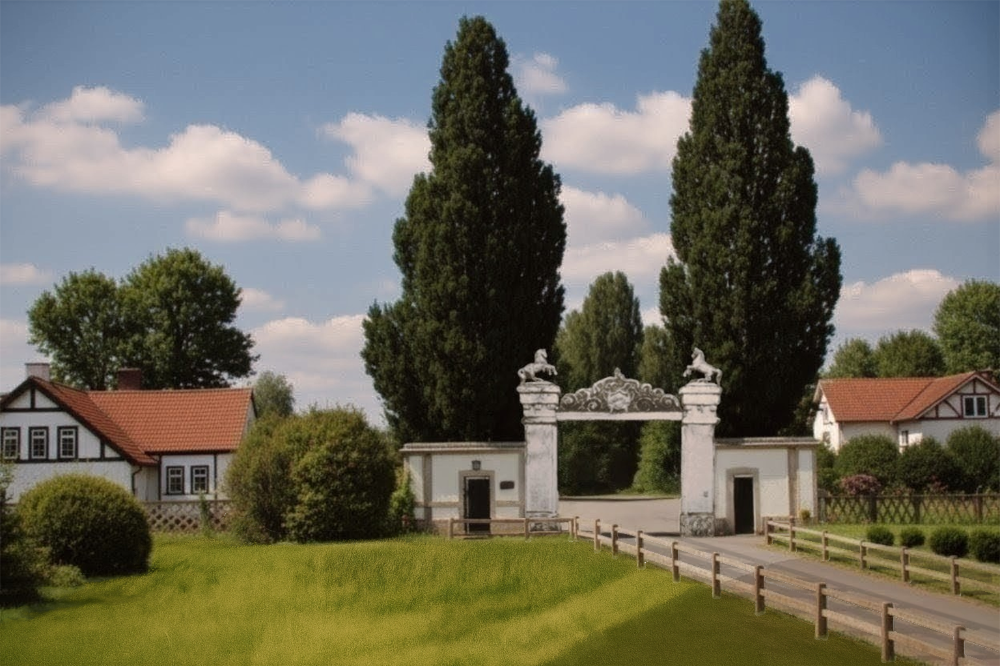
Vstup do žrebčína.
I. PRED VYBUDOVAVANÍM ŽREBČÍNA ⬇️
II. GRÓF HUGO HENCKEL V RUSOVCIACH ⬇️
III. PO SMRTI GRÓFA HUGA HENCKEL ⬇️
IV. OBDOBIE ZA RODINY LÓNYAY ⬇️
V. PO PRIPOJENÍ K ČESKOSLOVENSKU ⬇️
VI. ZÁVER A ZDROJE ⬇️
Na štarte stojí päť koní patriacich medzi najlepšie dostihové kone Európy. Chvíľa napätia a štart. Píše sa 3. september 1878. Miesto pretekov Baden-Baden Rakúsko-Uhorsko.
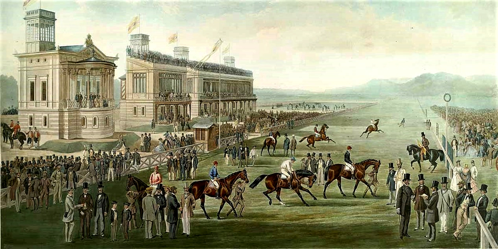
Dostihová dráha Iffezheim (Baden) 19. storočieVeľká cena Baden-Baden na 3200 metrov.
Trať je rozmočená po silných dažďoch a koňom sa v blate beží veľmi ťažko. Už bežia len štyria, kôň s menom “Vsecko-Jedno” je stiahnutý ihneď po štarte a vedenia sa ujíma Purple, nasledovaná Altonou.
Avšak zakrátko Altona predbieha Purple a dostáva sa na čelo pretekov. Beží sa rýchlo a pred tribúnou sa Prince Giles I. a Kincsem dostávajú pred Purple hneď za vedúcu Altonu. Altona stále vedie a beh sa blíži už k cieľovej rovinke.
Teraz nastupuje Prince Giles I. a za ním hlavná favoritka pretekov Kincsem. Tá každým krokom dobieha Princa Gilesa I. Už sú hlava pri hlave, na čele pretekov, napínavé, chvíľu vedie jeden chvíľu druhý kôň. Kto vyhrá?
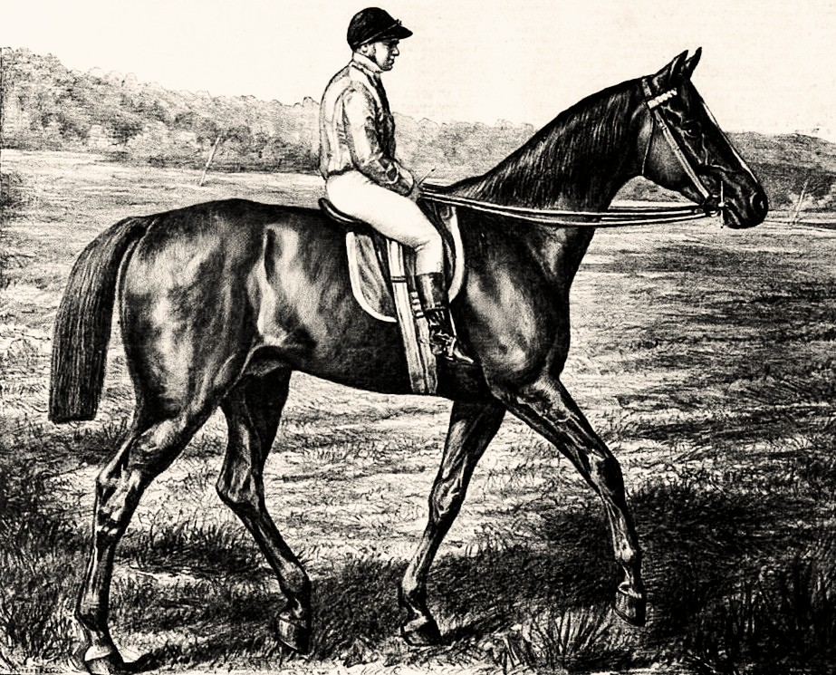
Prince Giles I. (Illustrirte Sport Zeitung, 4.5.1879)
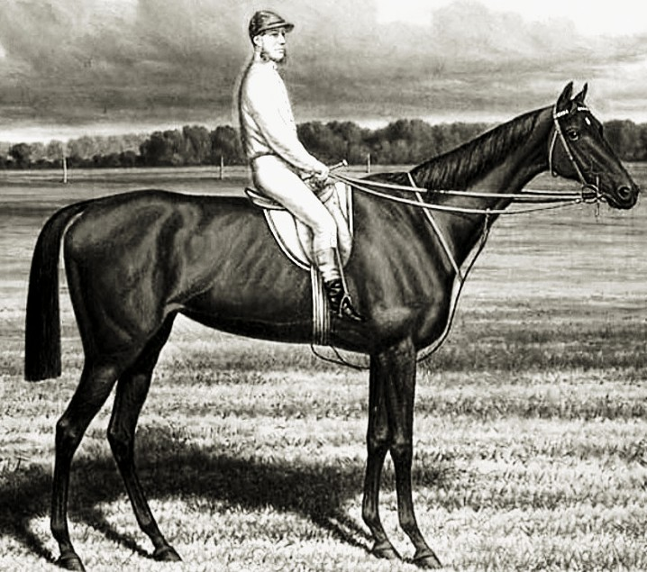
Kincsem.
Cieľ! Dobehli súčasne, a tak je vyhlásená remíza. Altona bola nakoniec stiahnutá z pretekov a Purple dobehol 25 dĺžok pozadu.
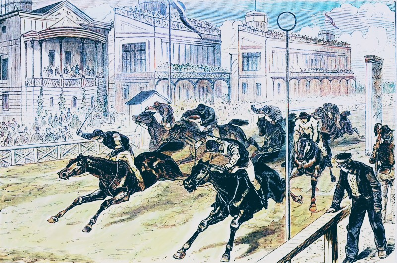
Dostihy: príchod do cieľa - Baden-Baden(Iffezheim) 1867, (Illustrirte Zeitung 28.9.1867)
Prvý krát v histórii sa stalo, že nejaký kôň dobehol súčasne s hviezdnou neporaziteľnou Kincsem v hlavnom behu. Kincsem bola takmer porazená.
Jej majiteľ gróf Ernő Blaskovich sa z remízou nechcel zmieriť a dohodol sa s grófom Henckelom na opakovanom behu. V tomto behu už síce Kincsem Princa Gilesa I. porazila, avšak už predošlý beh ukázal, aké výnimočné a úžasné kone chová stajňa grófa Huga Henckela von Donersmarck v Karlburgu (dnešné Rusovce, maď. Oroszvár). (zdroj Kincsem Wikipedia https://en.m.wikipedia.org/wiki/Kincsem)
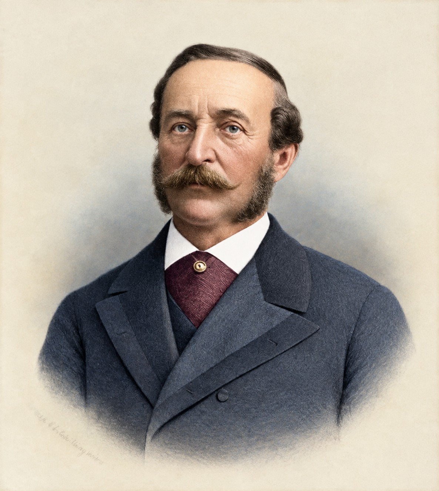
gróf Hugo Henckel von Donersmarck.(Rakúska národná knižnica)
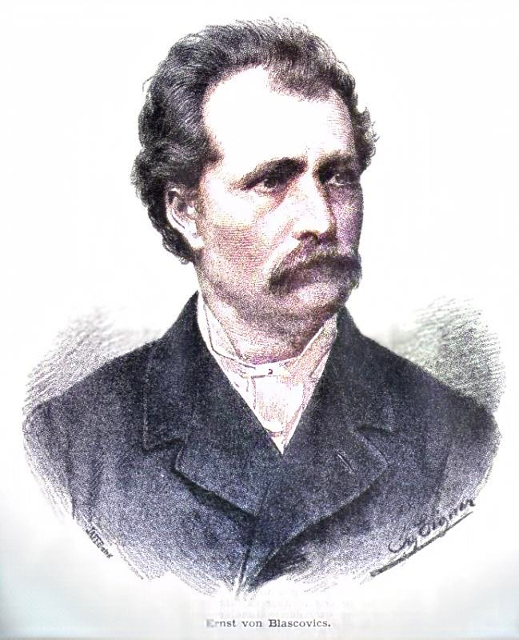
gróf Ernő Blaskovich.
Áno Prince Giles I. bol jediný kôň, ktorý takmer porazil neporaziteľnú Kincsem. Bol odchovancom v tom čase významnej stajni v Rusovciach (nem. Hugo Gestüt Karlburg, maď. Hugo Méntelep Oroszvár).
Kedysi slávny Hugov žrebčín dnes už neexistuje. Tam, kde stálo tréningové
centrum sú dnes domy a zdravotné stredisko. Na mieste zvanom Míneš, kde bol žrebčín (areál so stajňami a výbehmi - Hugotelep) nájdete už len polia, chodníčky a les.
Po žrebčíne akoby sa zľahla zem, ostali už len spomienky a záznamy v archívoch.
V oblasti Míneš je vidieť zhora akási stopa s jeho niekdajším obrysom.
Na katastrálnej mape z roku 2025 sa dokonca zobrazuje parcelný obrys šiestich stajní žrebčína a cestičky.
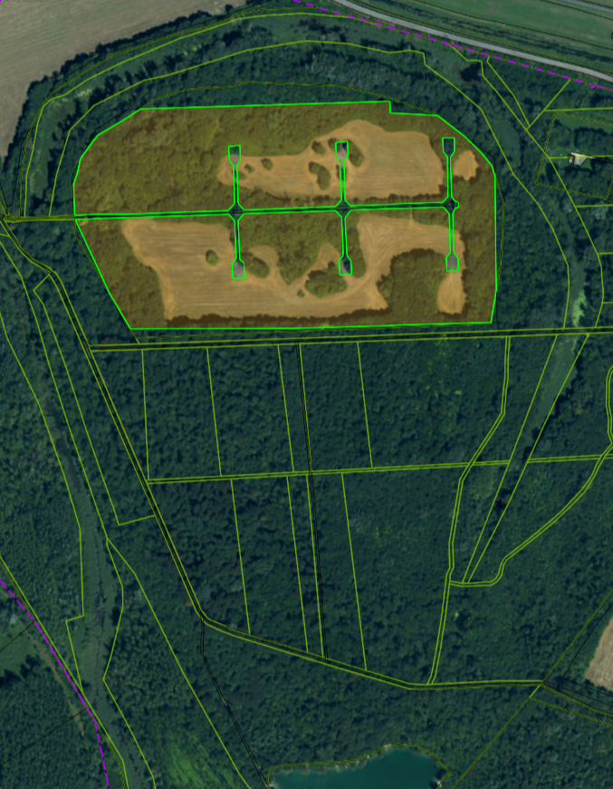
Katastrálna mapa oblasti Míneš rok 2025 (zdroj: Kataster nehnuteľností, ÚGKK SR, https://zbgis.skgeodesy.sk/)
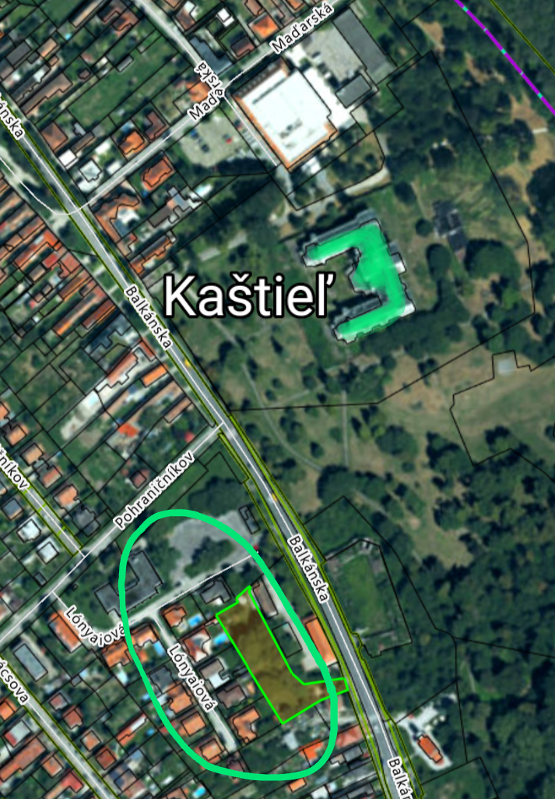
Katastrálna mapa umiestnenia bývalého tréningového centra rok 2025 (zdroj: Kataster nehnuteľností, ÚGKK SR, https://zbgis.skgeodesy.sk/)
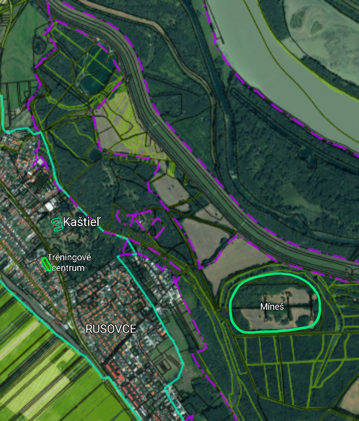
Katastrálna mapa celkový pohľad rok 2025 (zdroj: Kataster nehnuteľností, ÚGKK SR, https://zbgis.skgeodesy.sk/)
Poďme teraz načrieť do histórie a preskúmať, prečo bol kedysi tento žrebčín tak výnimočný a cenený v dostihovom svete.
Na úvod treba objasniť to že žrebčín grófa Huga Henckela von Donnersmarck pozostával z dvoch častí:
- Prvá časť - s názvom tréningové centrum - sa skladala zo stajní, krytej a vonkajšej bežeckej dráhy.
- Druhá časť - žrebčín - areál so stajňami a výbehmi prevažne pre kobyly a žriebätá známa aj pod názvom Míneš alebo Hugotelep.
- Žrebčín dopĺňali aj zámocké stajne (koniareň), umiestnené hneď vedľa kaštieľa, ktoré boli vybudované za čias Zichy-Ferraris počas prestavby kaštieľa.
+
Pozn. v pomenovaniach jednotlivých častí žrebčína je trochu zmätok, niekedy sa napr. názov Hugotelep berie ako celý žrebčín a niekedy iba ako areál v oblasti Míneš (na mapách Kőrtvélyes alebo Birnwald). Podobne v slovenčine sa pod názvom Hugov žrebčín môže myslieť tréningové centrum aj so žrebčínom, alebo len oblasť Míneš - čisto stajne so žriebätami.
Názvy pre Hugov žrebčín v nemčine či maďarskom jazyku sú rôzne napr. Hugo Gestüt, Hugo Telep, Hugo Ménes alebo Hugo Méntelep ...
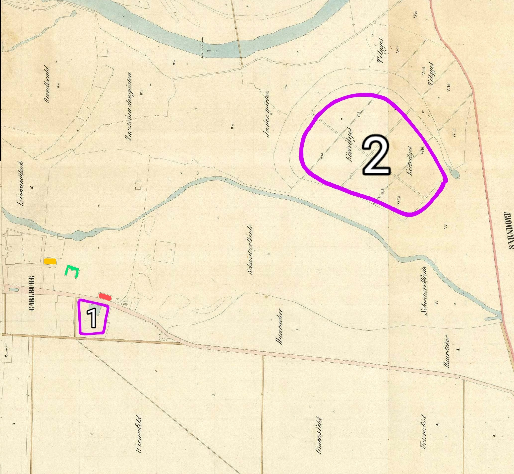
Mapa 1852, žrebčín, koniareň Zichy, kaštieľ, čeľadník
(zdroj: Vojenské historické múzeum Budapešť)
Aká bola situácia pred vybudovaním žrebčína?
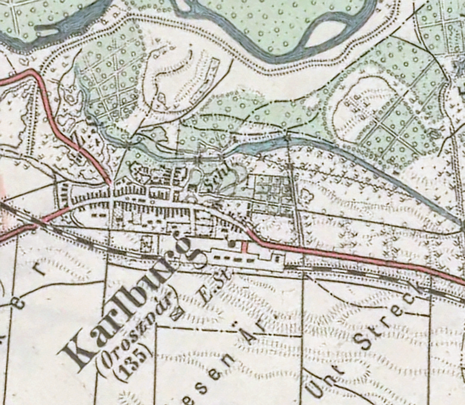
(mapa z roku 1900, zdroj: Univerzita Karlova Praha)
Ako už bolo spomenuté, žrebčín sa skladal z dvoch častí.
Prvú časť - tréningové centrum - vybudoval gróf neďaleko od kaštieľa na druhej strane cesty oproti čeľadníka.
Bolo to územie v zastavanej časti obce a na vtedajších mapách vyzeralo takto:
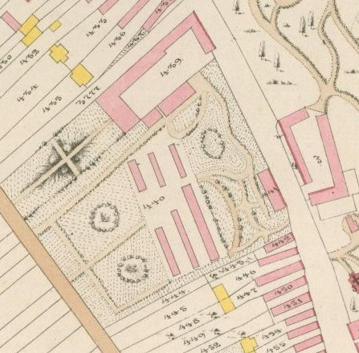
Katastrálna mapa rok 1856(zdroj: Ústredný archív geodézie a kartografie)
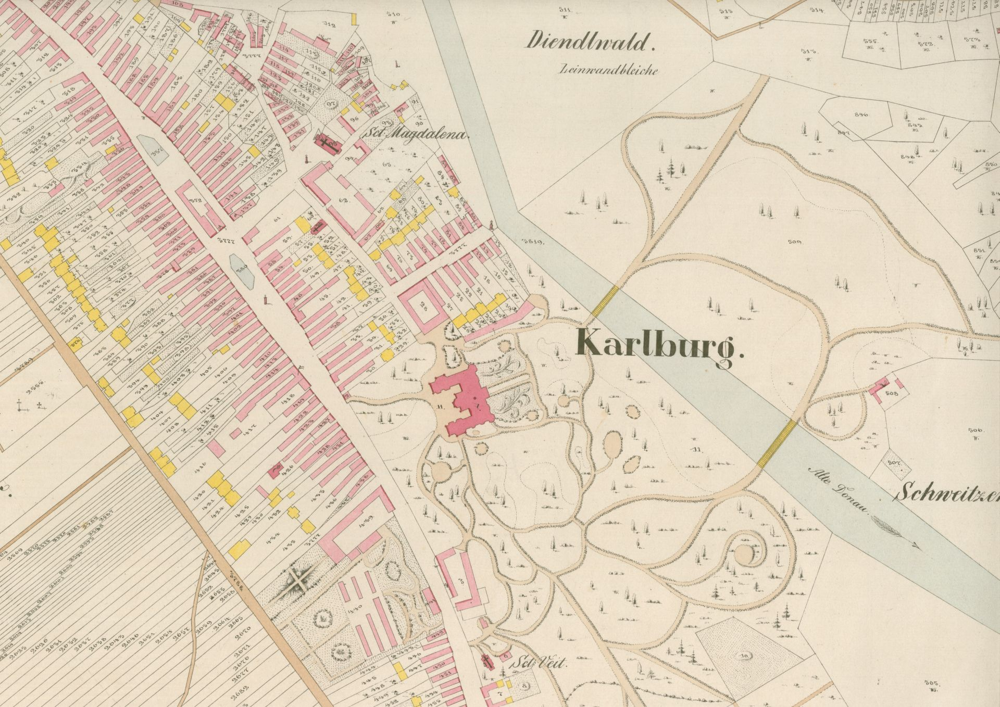
Katastrálna mapa rok 1856(zdroj: Ústredný archív geodézie a kartografie)
Táto katastrálna mapa zobrazuje územie 16 rokov pred vybudovaním tréningového centra. Na tomto mieste akoby cez cestu pokračoval zámocký park ďalej. V strede sa potom črtalo 6 pozdĺžnych budov rôznej veľkosti. Určenie na čo boli tieto budovy určené si vyžaduje ďalšie bádanie. Tento areál s budovami bol v roku 1856 ešte relatívne nový. Musel byť vybudovaný niekedy medzi rokmi 1852 a 1856, keďže na zjednodušenej katastrálnej mape z roku 1852 je zobrazený ešte starý areál so štvorcovým jazierkom:
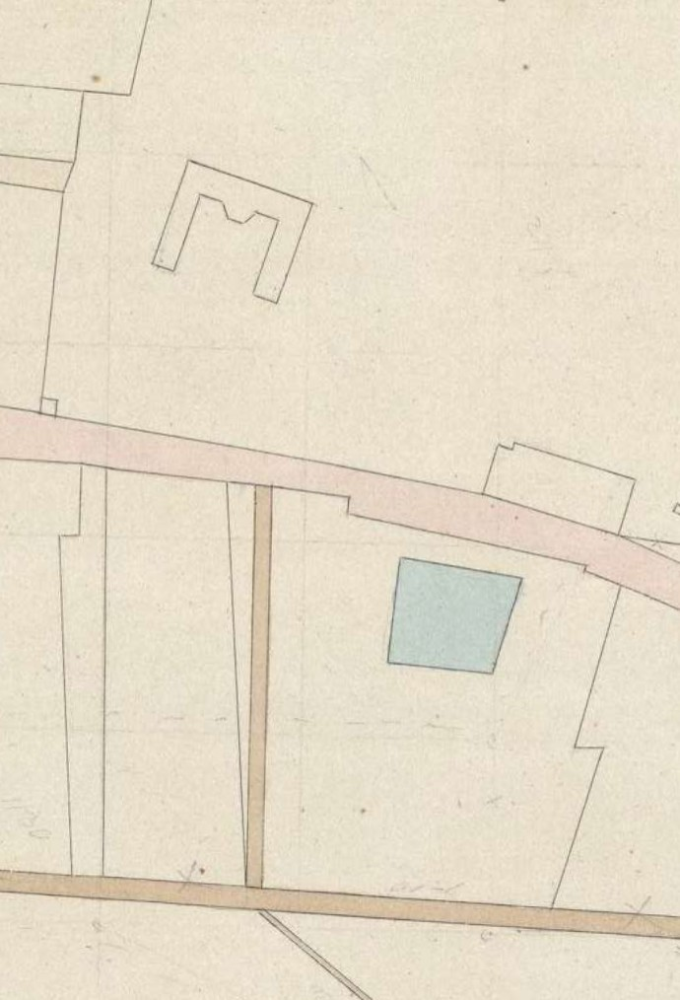
Mapa rok 1852(zdroj: Vojenské historické múzeum Budapešť)
Areál ale s oválnym jazierkom sa na tomto území vyskytoval aj na starších mapách z rokov 1779 a 1793:
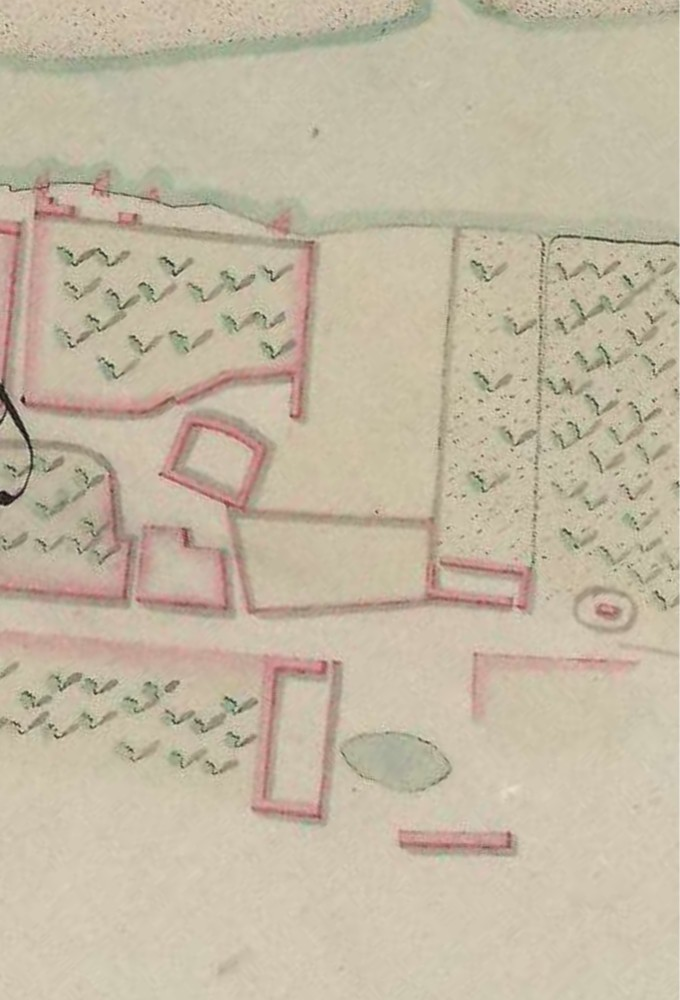
Mapa z roku 1779(zdroj: Vojenské historické múzeum Budapešť)
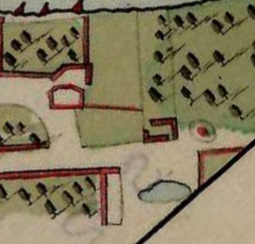
Mapa z roku 1793(zdroj: Vojenské historické múzeum Budapešť)
Za zmienku stojí aj 3.vojenské mapovanie, ktoré zobrazilo toto územie ešte pred vybudovaním žrebčína takto:
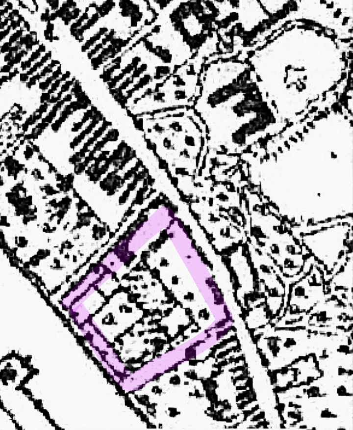
3.vojenské mapovanie(zdroj: Národný geoportál)
Územie v oblastí Míneš pred výstavbou
Druhú časť žrebčína (dnes oblasť Míneš) vybudoval gróf ďalej od zastavanej časti Rusoviec na mieste s maďarským názvom Körtvélyes (nemecky Birn Wald, slovensky Hruškový les či Hrušov). V tom čase tu, v hornej časti tohoto územia, bol skôr redší les či pasienok, v dolnej časti hustejší les pretkaný rovnými cestičkami, kde prevládala divoká hruška. Takéto lesy sa vtedy mohli využívať aj, ako pastviny:
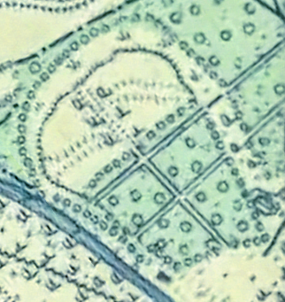
(Mapa z roku 1900, zdroj: Univerzita Karlova Praha)
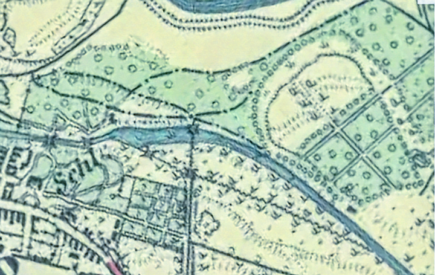
(Mapa z roku 1900, zdroj: Univerzita Karlova Praha)
Jeden takýto pasienkový les, ešte predtým, ako ho gróf premenil na lúku so závlahou, bol opísaný takto:
"Neďaleko zámockého parku a žrebčína sa popri dunajskom koryte nachádzal riedky les, ktorý slúžil ako pastvina pre ovce."(zdroj: Rakúsko-Uhorská Revue 1892 zväzok 13)
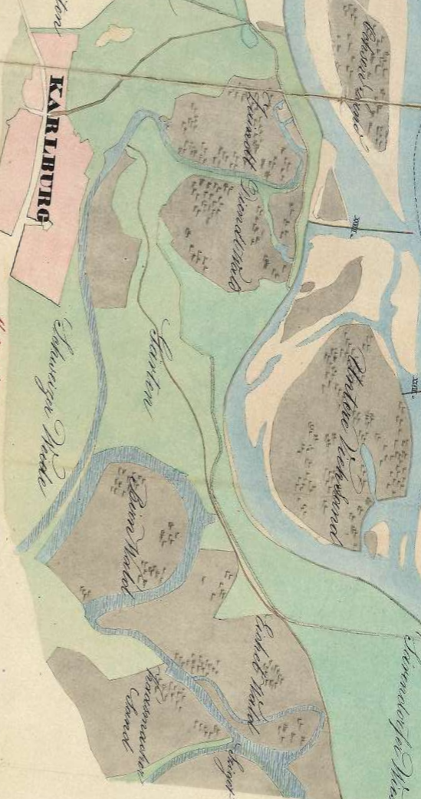
mapa oblasti rok 1851(zdroj: Vojenské historické múzeum Budapešť)
Birn Wald (Kőrtvélyes) z väčšej časti obklopovalo staré Dunajské rameno s latinským názvom “Antiquus ramus” a vytváralo mu prirodzené ohraničenie. Avšak v čase keď sa tam budoval žrebčín toto rameno už bolo mŕtve, pravdepodobne vysychajúce. Bolo pozostatkom ešte z čias, keď hlavný tok Dunaja tiekol cez Rusovské rameno (Karlburger Arm).
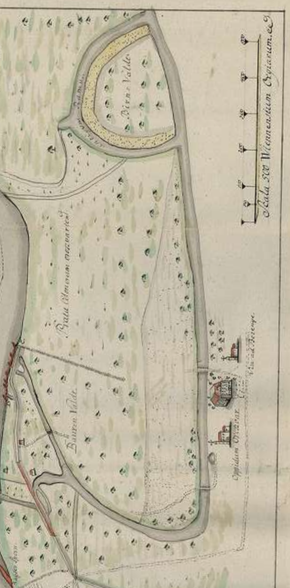
Mapa oblasti rok 1820(zdroj: Vojenské historické múzeum Budapešť)
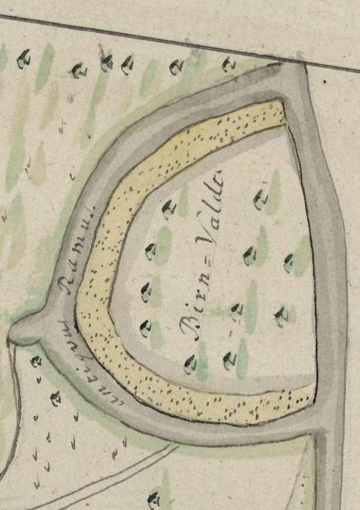
Mapa 1820(zdroj: Vojenské historické múzeum Budapešť)
Na katastrálnej mape z roku 1852 bol Hruškový les (Körtvélyes, Birn Wald) definovaný ako les (wld.) a bol popretkávaný cestičkami v tvare mriežky.
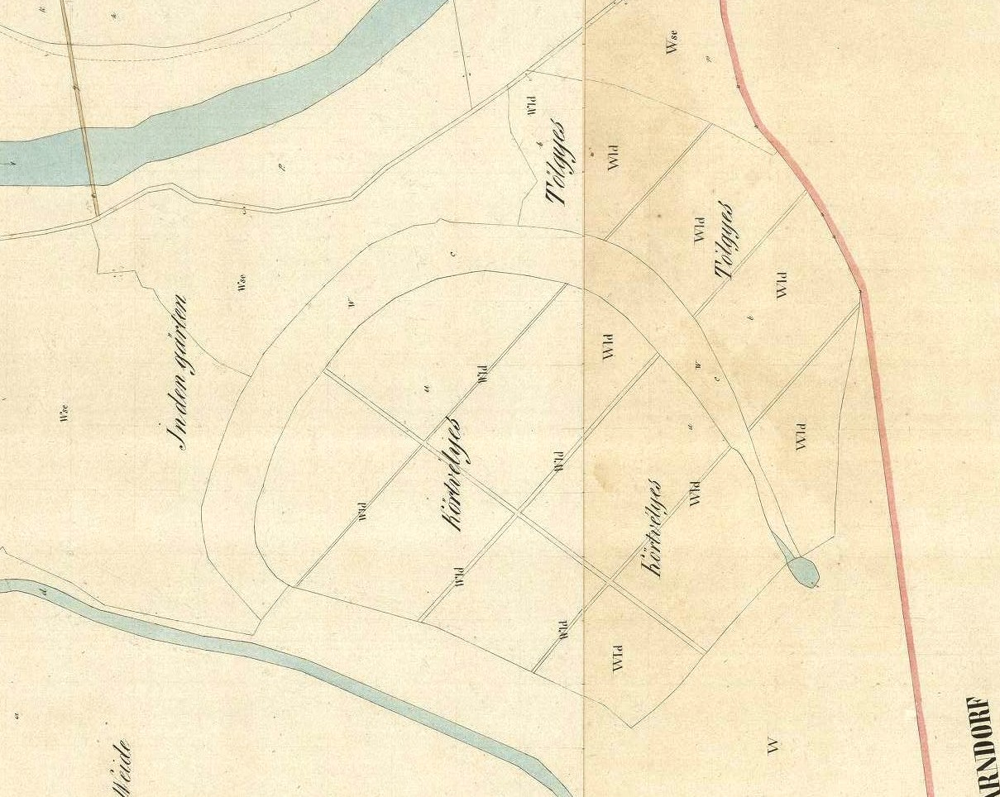
Mapa 1852(zdroj: Vojenské historické múzeum Budapešť)
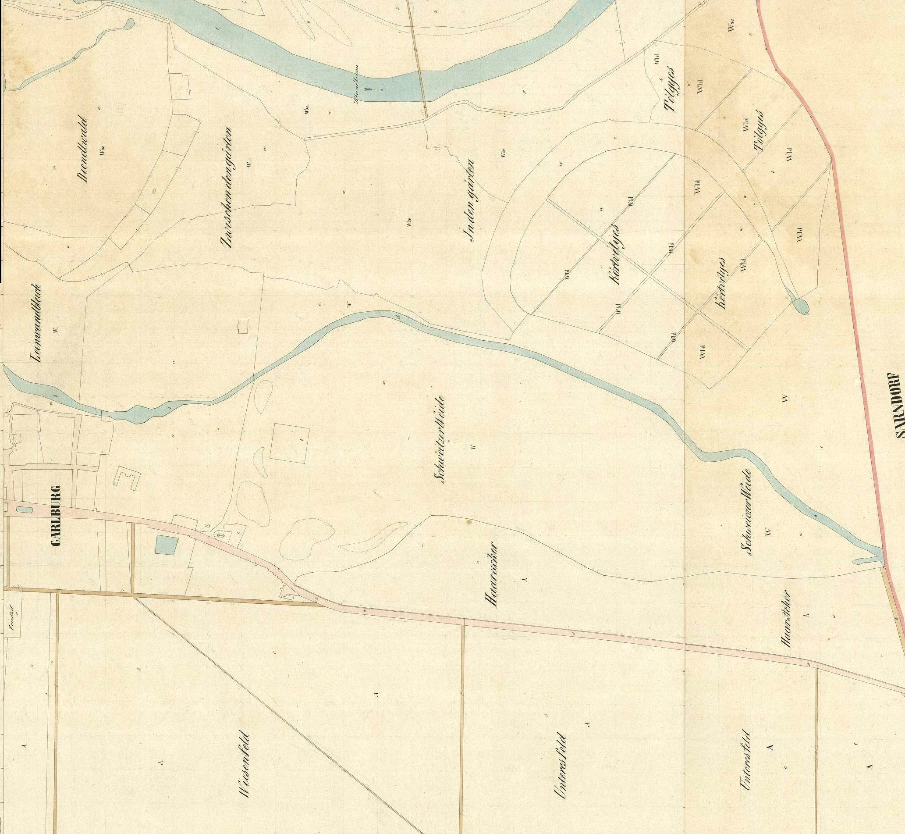
Mapa 1852(zdroj: Vojenské historické múzeum Budapešť)
Všimnime si aj, že v okolí Kőrtvélyes (Hruškový les) sa nachádzali územia s názvami ako Tőlgyes (Dubový Les), In den Gärten(V záhradách) a kúsok za Rusovským ramenom Schweitzer Weide (Švajčiarsky pasienok).
Na niektorých mapách je namiesto názvov Kőrtvelyes či Birn Wald uvedený názov "Zwischen des Gärten". Tento názov presunuli zo severu, kde boli záhrady s názvami tiež napr. In den Gärten, Gärten alebo maďarsky Kertek.
Žrebčín teda gróf umiestnil do prírodného prostredia - kúsok od Dunaja. Na územie kde boli lesy, lúky, pasienky, záhrady, mokrade, ale aj Dunajské ramená.
Pozn. založenie žrebčína však podstatne zmenilo názvoslovie tohto územia a dostalo sa aj do hovorového jazyka. Miestny obyvatelia dnes nazývajú toto územie “Míneš”, čo je v podstate pozmenený maďarský výraz “ménes” pre žrebčín.
Žrebčín a tréningové centrum pred príchodom do Rusoviec
Pred príchodom do Rusoviec gróf už bol skúsený chovateľ koní so zabehnutou pretekárskou stajňou a tréningovým centrom. Od založenia žrebčína a dostihovej stajne v roku 1834 v Siemianowiciach v Pruskom Sliezsku si gróf postupne a systematicky budoval dobré meno, poctivou prácou a vynikajúcimi výsledkami na pretekárskych dráhach. História od grófových začiatkov až po presun stajne do Rusoviec, bola takáto:
1892 - Rakúsko-Uhorská Revue zväzok 13
Dielo grófa Huga Henckel von Donnersmarck.
...
Založenie jeho žrebčína a dostihovej stajne spadá do roku 1834. Obe mali sídlo v Siemianowiciach (Siemianowice Śląskie) v Hornom Sliezsku, kde gróf Henckel žil prvé roky po dosiahnutí plnoletosti. Prvou materskou kobylou, ktorú gróf získal, bola Betty (rodičia Nicolo a Ina), narodená v roku 1827, odchovaná barónom Bielom. Prvý úspech však dosiahli jeho modro-biele farby až v roku 1835. Odvtedy sa počas 55 rokov zúčastňovali na najvýznamnejších skúškach chovu v Rakúsku, Uhorsku a Nemecku takým vynikajúcim spôsobom, že sa v danom období stali jednými z najpopulárnejších.
V roku 1835 gróf Henckel importoval prvé dve materské kobyly z Anglicka, a to Mulebird (rodičia Merlin a Shoveler), odchovanú pánom Thornhillom, a Reaction (rodičia Truffle a Blacklock), odchovanú Sir H. Woodom. Obe priniesli výnimočné potomstvo: Rococo (Cacus, Mulebird), a Kipfelnose(Cacus, Reaction), ktorá grófovi Henckelovi v roku 1840 vyhrala Union. Kipfelnose však nebola prvou víťazkou Unionu v grófovom chove, lebo už v roku 1838 tento vtedy najprestížnejší chovateľský dostih v Nemecku vyhrala MyLady(Zany, Master Henri), MyLady pochádzala z chovu pána von Dewiza. Z toho vyplýva, že už v roku 1840 dosiahli plnokrvné kone chované grófom Henckelom najvyššiu možnú úroveň výkonnosti.
Kone, ktoré od toho času až do konca storočia behali pod farbami grófa Henckela a získali tisíce víťazstiev, boli takmer bez výnimky z jeho vlastného chovu. Tie výnimočné, ktoré nepochádzali z jeho chovu, boli odchované jeho najstarším synom, grófom Hugom v Siemianowitz(Siemianowice Śląskie), a druhým synom, grófom Lazym v Romolkwitz (Ramułtowice) v Sliezsku.
Už v roku 1847 premiestnil gróf Henckel svoj žrebčín do Wolfsbergu a odvtedy sa nachádzal až do roku 1875 na rakúskej pôde – s výnimkou sedemročného obdobia v rokoch 1862 až 1869, počas ktorého bol žrebčín umiestnený v Mirkau (Mirkow) v Sliezsku.
V roku 1875 sa potom žrebčín presťahoval do Rusoviec(Karlburgu), kde sa nachádza dodnes a spravuje ho vdova po zosnulom grófovi, ríšska grófka Laura, rodená von Kászonyi, majiteľka Karlburgu.Aj druhý a najmladší syn grófa Huga Henckela, grófi Lazy a Arthur, sa starajú o to, aby farby najvýznamnejšieho chovateľa plnokrvníkov Rakúsko-Uhorska a Nemecka nezmizli z dostihových dráh s jeho smrťou. V posledných rokoch totiž gróf Hugo Henckel opäť prevádzkoval chov plnokrvníkov nielen vo svojom hlavnom žrebčíne v Karlburgu, ale aj v Hornom Sliezsku – v Nakle pri Tarnowitz(Tarnowskie Góry), kde mal gróf dlhé roky svoj dostihový podnik, ešte predtým, než ho presťahoval do Karlburgu.
Gróf sa rozhodol založiť tento žrebčín v dôsledku vylúčenia rakúsko-uhorských koní z mnohých veľkých dostihov v Prusku. Gróf Lazy si však vybral Naklo za svoje sídlo, nechal si tam prestavať poľovnícky zámok, ktorý postavil jeho otec, na panské sídlo, rozšíril tamojší žrebčín a spojil ho s tým, ktorý mal doteraz v Romolkwitz (Ramułtowice) v Sliezsku.
Bezprostredne po získaní Wolfsbergu sa gróf Henckel, ako už bolo spomenuté, rozhodol presunúť svoj žrebčín zo Siemianowitz do Rakúska. Na jeho umiestnenie bolo v roku 1847 zakúpené za 15 000 zlatých panstvo Reideben, ktoré sa nachádzalo v blízkosti zámku a bolo mimoriadne vhodné na účely žrebčína. Vybudovali sa potrebné stajne, ohrady a výbehy pre kone podľa najnovších skúseností a vzorov, ako aj obydlia pre početný personál. V roku 1856 bol žrebčín premiestnený do Wiesenau(severne od Wolsbergu), ktoré bolo preň ešte výhodnejšie a lepšie situované, a ktoré prešlo do grófskeho vlastníctva za 50 000 zlatých.
Klimatické pomery údolia však neumožňovali prevádzkovať jazdecký šport po celý rok bez prerušenia, čo pretekárskym koňom nijako neprospievalo. Preto sa gróf rozhodol postaviť v blízkosti zámku vlastnú jazdeckú školu, určenú predovšetkým na zimné obdobie. Táto budova sa začala stavať v roku 1855 a bola dokončená v roku 1856. Zimná jazdecká hala mala dĺžku 214 stôp a šírku 72 stôp a stála 46 000 zlatých. Pokiaľ ide o veľkosť, vnútornú i vonkajšiu eleganciu a praktické usporiadanie, žiadna súkromná jazdecká škola v monarchii sa jej nemohla rovnať. V komfortne zariadenej a vykurovanej lóži osobne dohliadal gróf bystrým okom na výcvik a tréning svojich nádherných koní, alebo sa tešil z ich skutočne umeleckých výkonov. A boli to výkony, aké sa v tej dobe dali len ťažko vidieť na inom mieste. Gróf nevlastnil len výnimočne dobre založené zvieratá – mal aj jazdcov a jazdeckých majstrov, ktorých renomé bolo známe všetkým lepším športovcom v Európe. Zvlášť pozoruhodné bolo vtedy to, že väčšina našich džokejov, trénerov a všeobecne lepších stajníkov buď pôsobila priamo ako zamestnanci grófa Henckela, alebo u neho absolvovala svoj výcvik.
Žrebčín, ktorý bol postavený v roku 1856 vo Wiesenau(severne od Wolfsbergu), zostal na tomto mieste do roku 1861. V roku 1862 bol premiestnený do Mirkau (Mirkow) v pruskom Sliezsku a potom v roku 1869 opäť späť do Neudau pri Wolfsbergu(dnes časť Wolfsbergu), kde zotrval až do roku 1875. Žrebčín v Neudau bol nielen prispôsobený najnovším požiadavkám, ale bol aj funkčne zariadený a vybavený parnými kúpeľmi, parkom, jazdiarňou atď.
...
Založenie žrebčína v Rusovciach
Gróf Hugo Henckel (26.04.1811-04.10.1890) kúpil rusovské panstvo (ako 61 ročný) niekedy v prvej polovici roku 1872. Kúpa sa udiala pravdepodobne niekedy v máji, keďže koncom tohoto mesiaca už o tejto kúpe informujú vtedajšie noviny. Panstvo kúpil od predošlého majiteľa - Félixa Zichy-Ferraris a kúpu sprostredkoval A. Adler z Pressburgu (Bratislavy).
Koľko gróf za panstvo zaplatil?
Niektoré noviny udávajú sumu 1 milión zlatých (florénov, guldenov), iné 1,9 milióna. Rakúsko-Uhorská Revue z roku 1892 uvádza sumu 1,8 milióna guldenov a dodáva, že Panstvo malo vtedy 3 079 ha, z toho 1 051 ha lesov. Panstvo kúpil najmä pre úmysel zriadıť tu chov plnokrvníkov.
05. - 06.1872 - viaceré noviny informujú o kúpe panstva Karlburg(Rusovce).
noviny: Pressburger zeitung
uverejnené: 24.05.1872
Podľa spoľahlivých informácií gróf Henckel von Donnersmarck z Pruska kúpil panstvo Karlburg za cenu jedného milióna a má v úmysle tam založiť rozsiahle žrebčíny ušľachtilých dostihových koní.
Sicherem Vernehmen nach hat Graf Henckel von Donnersmark aus Preußen, die Besikung Karlburg um den Preis von einer Million käuflich an sich gebracht und beabsichtigt derselbe, daselbst großartige Gestüte edler Racepferde anzulegen.
noviny: Pester Lloyd
uverejnené: 25.05.1872
(Kúpa) Ako informuje „Preßburger Zeitung“, gróf Henckel von Donnersmarck z Pruska získal Karlburg (v grófstve Wieselburg - Mošon) za cenu jedného milióna a má v úmysle tam založiť veľké žrebčíny pre ušľachtilé dostihové kone.
(Güterkauf) Wie die „Preßb. Ztg." vernimmt, bat Graf Hendel von Donnersmart aus Preußen die Besihung Karl burg (im Wieselburger Komitat) um den Preis von einer Million käuflich an sich gebracht und beabsichtigt daselbst großartige Gestüte edler Racepferde anzulegen.
noviny: Neues Fremden-Blatt
uverejnené: 27.05.1872
Nebol to gróf, ale manželka grófa Huga Henckela Donnersmark, ktorá kúpila panstvo Karlburg za cenu 1 900 000 florénov.
Nicht der Graf, sondern die Gräfin Hugo Henckel Donnersmark hat das Gut Karlburg um den Preis von 1,900,000 fl. gekauft.
noviny: Grazer Volksblatt
uverejnené: 28.05.1872
(Gróf Henckel. Donnersmark) kúpil panstvo Karlburg za cenu jedného milióna guldenov
(Graf Henckel. Donnersmark) hat die Besizung Karlburg um den Preis von Einer Million Gulden angekauft
noviny: Wiener Salonblatt
uverejnené: 09.06.1872
Rakúsko-Uhorská spoločnosť s potešením konštatuje, že známy pruský gróf Henkel Donnersmark, ktorý už vlastní značné majetky v Korutánsku, sa postupne snaží usadiť aj vo Viedni a v Uhorsku. Preto gróf Henkel poveril slávneho architekta Romano vom Ringe výstavbou nádherného kaštieľa na Parkring(vo Viedni) v hodnote 3/4 milióna guldenov. Blíži sa k dokončeniu a na jeseň bude pripravený na nasťahovanie.
V Uhorsku gróf nedávno kúpil za 1 900 000 florénov rozsiahly majetok Carlburg (v grófstve Wieselburg), ktorý predtým patril grófovi Felixovi Zichy-Ferraris. Túto kúpu dokončil pán A. Adler v Bratislave, ktorý je taký skúsený a úspešný vo veľkoobchode s majetkami. Počuli sme, že gróf Henkel na tomto panstve zriadi dostihovú stajňu pre 80 koní.
In der österr. ungar. Gesellschaft wird es mit Vergnügen wahrgenommen, daß der bekannte preußische Graf Henkel Donnersmark, der bereits in Skärnten ansehnliche Besisthümer sein Eigen nennt, sich auch in Wien und in Ungarn allmäliz anzusiedeln bestrebt ist. So ließ sich Graf Henkel von dem berühmten Architekten Romano vom Ringe auf dem Parkringe ein prachtvolles Balais im Werthe von 3/4 Millionen Gulden erbauen, dasselbe ist der Vollendung nahe und wird im Herbste bezogen werden können.
In Ungarn kaufte der Graf in jüngster Zeit die große bisher dem. Grafen Felix Zichy-Ferraris gehörige Herrschaft Carlburg (im Wieselburger Comitat) um 1,900 000 fl. an, welchen Kauf der in großen Güterverkäufen so sehr versirte und glückliche Herr A. Adler in Breßburg perfect machte. Graf Henkel wird auf dieser Herr ichaft, wie wir hören, einen Rennstall für 80 Pferde herrichten.
zdroj: Rakúsko-Uhorská Revue zväzok 13
rok: 1892
V roku 1872 bolo kúpené aj panstvo Karlburg (maďarsky Orosvár, slovensky Rusovce), nachádzajúce sa v uhorskom Komitáte Mošon (Wieselburger Komitat). Cez toto územie prechádzala železnica Pressburg–Steinamanger(Szombathely) Bolo kúoené za cenu 1 800 000 florénov. Pred 300 rokmi patrilo grófskej rodine Zichy, z ktorej tretia vetva sa nazývala „Karlburská línia“. Panstvo malo 3 079 ha, z toho 1 051 ha lesov.
Kto bol majiteľom panstva Rusovce po roku 1872?
S najväčšou pravdepodobnosťou to bola grófka Laura Henckel. Noviny Neues Fremden-Blatt to napísali správne:
"Nebol to gróf, ale manželka grófa Huga Henckela Donnersmark, ktorá kúpila panstvo Karlburg..."
Toto tvrdenie podporujú viaceré zdroje:
1) Jeden z nich je “Správa o opatreniach v oblasti meliorácií pôdy a terénu vykonaných v roku 1881.” Tu sa uvádza grófka Laura ako majiteľka pozemkov - lúk a pastvín v Rusovciach a Čunove - na ktorých bola vykonávaná meliorácia - zavlažovanie s čerpaním vody v rokoch 1875-1881.
1882 - Správa o opatreniach v oblasti meliorácií pôdy vykonaných v roku 1881.
V. Úvod do zlepšení pôdy v krajine, ktoré nie sú plánované oddelením kultúrneho inžinierstva alebo existujú už dlho.
I. okres
| Župa | Mošonská |
| Majiteľka | grófka Laura Henckel |
| Obec | Rusovce-Čunovo |
| Druh meliorácie | zavlažovanie s čerpaním vody |
| Rozloha v katastrálnych jutrách | 104 |
| Čas realizácie | 1875 – 1881 |
| Náklady na jedno jutro | 492 forintov |
| Poznámka | pozri stranu 70 |
strana 70
… 11. Grófka Laura Henckel z Donnersmarku, Rusovce-Čunovo, Mošonská župa.
Kombinovaná svahová úprava a formovanie vyvýšených pásov pri zachovaní prirodzených tvarov povrchu, avšak čo možno najviac vyrovnaných. Projekt vypracoval lúčny staviteľ Huitz (z Badenu) podľa systému Vincenta. Celková rozloha 105 jutár vrátane stavieb z roku 1881.
Čas prác: od roku 1875 do roku 1878 bolo vybudovaných 87 jutár.
Celkové náklady (forinty, grajciare):
|
vedenie prác a dozor nad robotníkmi |
5 270 frt 07 gr |
| mzdy (denné práce) | 20 451 frt 48 gr |
| materiál a osivo | 8 243 frt 99 gr |
|
1 parný stroj, 2 čerpadlá a vodné zdvíhacie koleso |
9 000 for |
| Spolu: | 42 965 frt 54 gr |
Na jedno jutro teda pripadá 492 forintov 14,9 grajciara.
Prevádzkové náklady: Doteraz boli náklady na zavlažovanie a kosenie účtované spoločne; po štvorročnom priemere činili ročne 904 forintov 44 grajciarov, teda 10 forintov 36 grajciarov na jedno jutro.
Celkové náklady na umelú lúku na jedno jutro (forinty, grajciare): :
| zariadenie 492 frt 14,9 gr + 5 % úrok | 24 frt 60 gr |
| náklady na zavlažovanie a kosenie | 10 frt 36 gr |
| pôdny kapitál 250 frt + 4 % úrok | 10 frt 00 gr |
| daň | 1 frt 50 gr |
| správne náklady | 1 frt 00 gr |
| Spolu: | 47 frt 46 gr |
Cena jedného metrického centa sena tak vychádza na 2 forinty 37 grajciarov.
Prevádzkové náklady však budú v budúcnosti podstatne vyššie, pretože do výpočtu nebolo zahrnuté splácanie zariadení; použité drevené stavidlá a iný drevený materiál si vyžadujú obnovu a jedno z čerpadiel je už natoľko opotrebované, že bude potrebné ho v budúcom roku nahradiť novým.
Stav pred úpravou: Na území sa nachádzala riedko zalesnená ovčia pastvina strednej kvality s brestami, často zaplavovaná Dunajom. Pôda bola priepustná, s dostatočne hlbokým hlinitopiesočnatým podložím.
Stav po úprave: Po výseve najlepších a najvhodnejších krmovín má seno vynikajúcu kvalitu. V porovnaní s dovtedy sotva využiteľnou pastvinou dosahuje doterajší ročný priemer na celej lúke 1 350 metrických centov, teda 15,46 metrického centa na jutro. Keďže však väčšina prvej kosby sa každoročne skrmovala zelená, výnos na jutro možno odhadnúť až na 20 metrických centov.
Práce boli nákladné, pretože prebiehali v období nedostatku pracovnej sily. Lúky opakovane trpeli záplavami Dunaja, čo nepriaznivo pôsobilo na umelo vytvorený trávnik; rozsiahle plochy boli poškodené aj larvami chrústov a iného hmyzu, čo si vyžadovalo rozoranie a nové výsevy.
Lúky sa prihnojujú rozmetaním maštaľného hnoja, každoročne v rozsahu jednej dvadsatiny plochy. Bez hnojenia by sa pôda rýchlo vyčerpala. V súčasnosti prebiehajú pokusy s draselno-amónnym superfosfátom.
V roku 1881 bolo 17 jutár, ktoré dovtedy slúžili len ako ovčia pastvina, podobným spôsobom premenených na zavlažované lúky. Cena vrátane tvrdých materiálov a výsevu bola dohodnutá na 267 forintov na jutro. Zhotoviteľ: kultúrny inžinier Troján z Prahy.
Použitý systém je prirodzené svahové prúdové zavlažovanie; namiesto doteraz používaných drevených stavidiel, priepustov a žľabov, ktoré sú už poškodené a vyžadujú obnovu, budú použité výlučne cementové rúry, čím sa prevádzkové náklady výrazne znížia.
(Správa hospodárskej správy panstva)
2) Ďalší zdroj v novinách uvádza:
“Zoznam ulovenej užitočnej a škodlivej zveri na panstve grófky Laury Henckel von Donnersmark v panstve Rusovce v roku 1879.” (zdroj: 16.03.1879 - Illustrierte Sport-Zeitung)
3) Testament grófa Huga Henckela von Donnersmarck popísaný v novinách z roku 1890, kde sa uvádza:
“Z majetku je však potrebné vyňať panstvo Karlburg v Uhorsku, pretože gróf ho daroval svojej druhej manželke, terajšej vdove, už za života.” (zdroj: Lavantthaler Bote, 25.10.1890)
Gróf Hugo Henckel tak panstvo Rusovce kúpil pre svoju manželku Lauru Henckel, ale podielal sa na jeho chode a samozrejme aj na svojom žrebčíne.
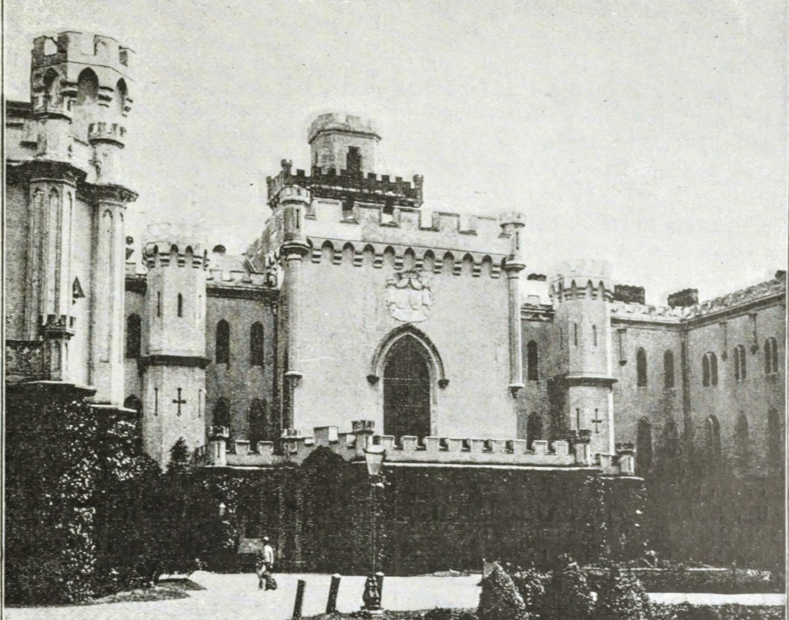
Kaštieľ Rusovce v roku 1901, ešte vo vlastníctve grófky Laury. Na štíte zámku vidno grófsky erb. Nie je dobre viditeľný, ale vidno na ňom dva oválne erby vedľa seba. Pravdepodobne to mohol byť podobný aliančný erb Henckel-Kászonÿi s 9 perlovou grófskou korunou ako na Laurinej kaplnke/mauzóleu.
Okrem panstva v Rusovciach v tom istom čase 1871/1872 pre svoju druhú manželku Lauru kúpil parcely na Parkring vo Viedni a dal tam postaviť palác. Vlastníkom oboch majetkov sa stala Laura Henckel.
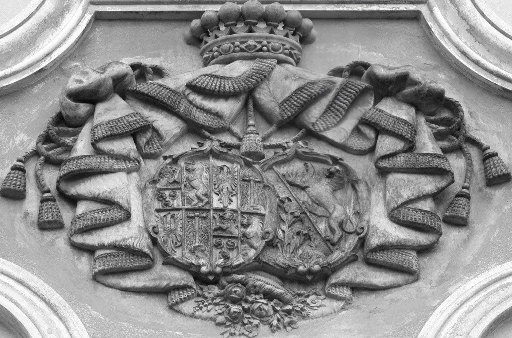
Aliančný erb na štíte kaplnky Laury Henckel rodenej Kászonÿi. Ukazuje prepojenie dvoch rodových erbov. Okrúhly erb rodu Henckel Donnersmarck čiastočne prekrýva erb rodu Kászonÿi. Takto symbolizuje manželstvo Huga Henckel a Laury Kászonÿi. Koruna s 9 perlami na vrchu poukazuje na grófsky titul. Erb Kászonyi (vpravo) pozostáva z kráčajúceho leva, predelu a troch ľalií. Honosnosť aliančného erbu dotvára z koruny sa tiahnuci plášť a kvety na spodku.
Druhý z erbov (ten vľavo) na kaplnke Laury Henckel vychádza z tradičného erbu rodu grófov Henckel-Donnersmarck. Samozrejme je na ňom aj grófska koruna s 9 perlami:
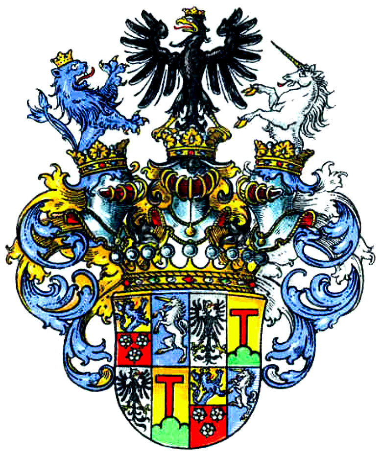
Erb grófov Henckel von Donnersmarck.
Ihneď po kúpe panstva v Rusovciach, tam začal gróf postupne budovať žrebčín. Dôvod prečo kúpil toto panstvo bol jednoduchý:
"získať miesto, ktoré by bolo čo najvhodnejšie z hľadiska klímy a pôdy pre vybudovanie vzorového žrebčína"
alebo
"nájsť krajinu, ktorá by bola vhodná svojou klímou, terénom a pôdnymi podmienkami na zriadenie žrebčína, a potom — s pomocou skúseností získaných častým striedaním žrebčínov — vytvoriť vzorový žrebčín vo veľkom štýle" (zdroj: Rakúsko-Uhorská Revue zväzok 13, rok 1892)
Vyhovovali mu rozsiahle lesy, lúky, pasienky a najmä pieskovo-ílovitá pôda, vhodná pre konský beh. Rusovce (Karlburg či Carlburg) mali vtedy prevažne nemecké obyvateľstvo a tak pruskému grófovi mohlo vyhovovať aj takéto prostredie. Pri rozhodovaní o kúpe panstva nakoniec zavážil aj veľkolepý rusovský kaštieľ v tudorovskom štýle. Ten kúpil pre svoju manželku Lauru Henckel rodenú Kászonyi. Prvoradé však bolo vhodné prostredie pre vznik na tú dobu supermoderného žrebčína.
Ako už bolo spomenuté, hneď po kúpe panstva, prebiehali práce na výstavbe tréningového centra so stajňami. Vonkajší bežecký ovál, ubytovanie pre personál plus dielne. Dostihová stajňa bola hotová už v roku 1873 a vsadená v strede novozaloženého parku.
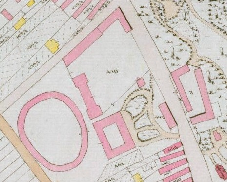
Katastrálna mapa rok 1881(zdroj: Ústredný archív geodézie a kartografie)
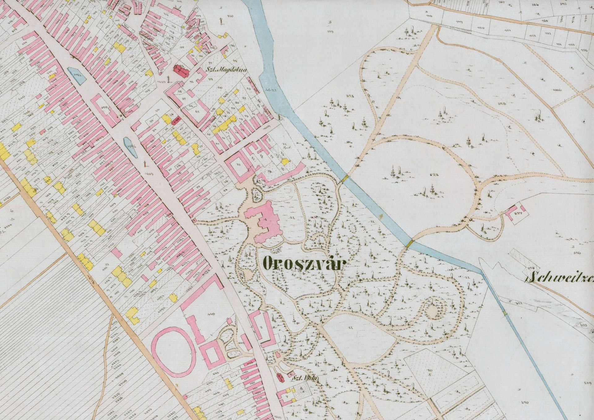
Katastrálna mapa rok 1881(zdroj: Ústredný archív geodézie a kartografie)
Po dobudovaní, bol žrebčín a tréningové centrum opísané takto:
V blízkosti nádherného kaštieľa, v parku, boli v samostatnej budove plemenné žrebce, v šiestich samostatných budovách v parku boli materské kobyly (v každej len štyri, aby mohli byť s potomstvom v samostatných kójach), v samostatnej budove bola stajňa pre dostihové kone (asi pre 30 koní), každá s vlastným boxom, a nad nimi byty pre veterinára, trénerov, džokejov a stajníkov. Veľké, svetlé, vzdušné stajne mali pred sebou širokú sklenenú verandu, dobré vetranie a zariadenie na zatemnenie. K tomu patrili dostihové a tréningové dráhy (trávnaté aj pieskové) a krytá dráha, ktorá bola určená na zimný pohyb a skoré jarné tréningy. Skrátka, Oroszvár disponoval prvotriednym dostihovým zariadením, ktoré malo v tom čase, začiatkom 70. rokov, len málo páru na kontinente, keď ho autor článku prvýkrát navštívil.
K tomu patrili stajne pre kočové a lovecké kone, v ktorých bol tiež vynikajúci materiál, vrátane rýchlych klusákov! Takže v tom čase v oroszvárskych stajniach celkovo žralo ovos takmer 100 koní. Gróf žil s koňmi v kráľovskom luxuse. (zdroj: Vadász - és Verseny-Lap, 07.10.1890)
Opis budovy dostihovej stajne a ďalších zariadení tréningového centra:
"Dostihová stajňa, ako aj všetky ostatné pre žrebčín potrebné zariadenia, boli postavené podľa odborných pokynov grófa a podľa názoru odborníkov bol Karlburg najúčelnejším a najkrajším žrebčínom na pevnine. Pre svoju náročnú výstavbu bol však vhodný na napodobenie len za určitých okolností.
Vďaka prekvapivo vysokej konštrukcii stajní sa dosiahla dobrá ventilácia, cementovaním stien a podlahy sa docielila suchosť a vodovod slúžil jednak na zásobovanie vodou, jednak na udržiavanie čistoty, čo bolo podporené účelne navrhnutým kanalizačným systémom, ktorý zahŕňal všetky boxy. Samotná stavba bola pevná a kvalitná, pokrytá bridlicou a vybavená bleskozvodmi.
Budova bola postavená v štvorcovom pôdoryse, pričom uprostred bol malý dvor, do ktorého viedli dvere stajní. Vonkajšie ozdobné prvky dodávali celej stavbe reprezentatívny vzhľad.
Ako doplnok dostihovej stajne slúžili pekná obytná budova pre trénerov a džokejov, kováčska dielňa pre potreby dostihovej stajne a 400 metrov dlhá, krytá elipsovitá dostihová dráha — vynález grófa Henckela a v tom čase jediná svojho druhu.
Opis vonkajšej a krytej dráhy:
Pôda v Rusovciach - piesčitý íl - poskytovala síce vhodný povrch pre pieskovú dráhu a bola taktiež vhodná aj na zriadenie trávnatej dráhy. Bola tiež vybudovaná väčšími zemnými úpravami.
Nevýhodou však bolo, že táto dráha po zimách s bohatou snehovou nádielkou len pomaly vysychala, a preto mohla byť používaná až neskoro na jar. To podnietilo prezieravého športovca k výstavbe vyššie spomínanej krytej dostihovej dráhy.
Týmto spôsobom sa podarilo úplne zbaviť problémov spôsobovaných poveternostnými vplyvmi a dostihové kone mohli byť aj za nepriaznivých podmienok v jarnom období pripravené v stave, ktorý zodpovedal účelu dostihovej sezóny. Výstavba dostihového zariadenia stála okolo 100 000 zlatých a na jeho každoročnú údržbu bolo potrebných 70 000 zlatých."
(zdroj: Rakúsko-Uhorská Revue zväzok 13, rok 1892)
Zachoval sa aj ďalší opis budovy dostihovej stajne tréningového centra:
"Táto budova, vybavená všetkým komfortom, ba až luxusom, s dvadsiatimi šiestimi samostatnými boxami a všetkým potrebným príslušenstvom ako sedlovne, byty atď., tvorí štvoruholník, ktorého vnútorný priestor sa v zimných mesiacoch využíva ako slamené lôžko. Široká chodba, do ktorej ústia všetky boxy, ponúka návštevníkovi príjemnú prechádzku. Mená už známych a budúcich šampiónov sú zaznamenané s pedantnou presnosťou. Skrátka všetko, až do najmenších detailov, prezrádza vkus a praktickosť." (zdroj: 04.03.1874, Sportblatt: Centralblatt für die Interessen der Pferdezucht und des Sports)
Krytá dráha (ovál) bol postavený až o 4 roky neskoršie, a to v roku 1877 a podľa novín Illustrirte Sportz Zeitung z roku 1878 nemala 400 ale iba 360 metrov. Bola natoľko široká, že 4 kone mohli cválať vedľa seba. Pochvaľoval si ju aj tréner Waugh, pretože jeho zverenci mohli trénovať aj v zime, čo zlepšovalo ich celkovú kondíciu.
Podľa grófa C. G. Wrangela:
Dostihová stajňa v Carlburgu, vybavená všetkým komfortom, ba až luxusom, s množstvom boxov, sedlovní, obytných miestností a podobne, tvorí veľký štvoruholník, ktorého vnútorný priestor možno počas zimných mesiacov upraviť ako slamené ležovisko. Nie je to však nevyhnutné, pretože zariadenie disponuje krytou kruhovou dráhou s obvodom približne 1200 metrov, ktorá sa používa na pomalú aj rýchlu prácu. Na rýchlu prácu sa nám však javí ako krajne nevhodná, keďže sme pevne presvedčení, že tréning na malej kruhovej dráhe má skracujúci, a teda škodlivý vplyv na cvalový krok dostihového koňa.
(Wrangel, C. G. 1898, Maďarský chov koní slovom a obrazom).
Z pohľadu zhora z roku 1937 môžeme vidieť, ako približne mohlo tréningové centrum vyzerať za čias grófa Henckela.
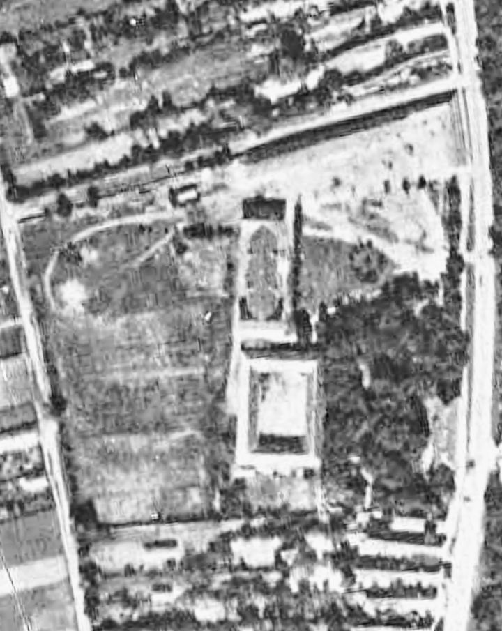
Letecký snímok 1937 (zdroj: Vojenské historické múzeum Budapešť)
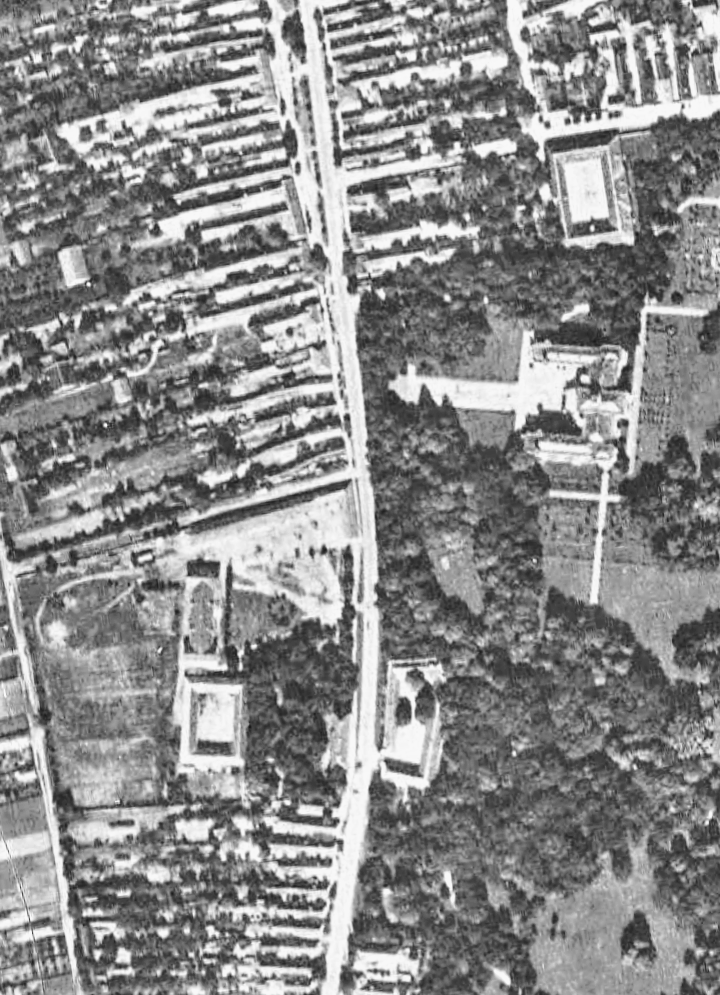
Letecký snímok 1937 (zdroj: Vojenské historické múzeum Budapešť)
V roku 1873, bolo už tréningové centrum so stajňami a vonkajšou dráhou postavené. Na konci dostihovej sezóny tam gróf potom dal premiestniť potrebné zariadenia a personál z Nakla (Sliezsko, vtedy Prusko, dnes Poľsko), kde sa toto centrum nachádzalo predtým. Potom tam gróf presunul aj časť svojho žrebčína z Wolfsbergu (Korutánsko, Rakúsko). Medzi týmito dvomi miestami Wolfsberg a Naklo bola veľká vzdialenosť (cca 641 km), ktorú museli kone grófa Henckela absolvovať. Naopak v Rusovciach bol žrebčín a tréningové centrum blízko seba (2 km), a tak boli kone ušetrené od stresu z dlhých presunov.
"Keďže sa tréningové zariadenie grófa Henckela presunulo z Nakla do Carlburgu, kde na prvých obyvateľov čakala novopostavená, vo všetkých ohľadoch mimoriadne praktická a veľkolepá stajňa, boli Wolfsberskí odchovanci ušetrení cesty do Nakla a tam panujúcich nepriaznivých poveternostných podmienok. Namiesto toho im boli ako miesto pobytu pridelené boxy v bezprostrednej blízkosti parku a novozriadená tréningová dráha slúžila ako prípravná škola. Keby sme si dali za úlohu opísať toto výnimočné tréningové zariadenie v Carlburgu, mali by sme dostatok dôvodov, aby sme sa rozplývali nad jeho výhodami;" (zdroj: 24.12.1873, Sportblatt: Centralblatt für die Interessen der Pferdezucht und des Sports)
"Samozrejme, našou prvou návštevou boli štvornohí obyvatelia, tréningového zariadenia pod vedením pána Waugha, ktoré bolo minulý rok po skončení sezóny presťahované do Karlburgu, keďže po toľko rokov tak úspešne sídlilo v Naclu. Vážne dôvody prinútili grófa Henckela, aby sa rozhodol skúsiť svoje šťastie za Leithou a dokonca presťahovať časť žrebčína z Wolfsbergu" (zdroj: 04.03.1874, Sportblatt: Centralblatt für die Interessen der Pferdezucht und des Sports)
Okrem plnokrvných kobyliek boli v "zámockých stajniach" (pravdepodobne myslené stajne hneď vedľa kaštieľa) aj kenely s pretekárskymi chrtmi. Vyzerá to tak, že gróf sa zúčastňoval aj takýchto pretekov. Na zámku býval aj rozkošný pár jazvečíkov.
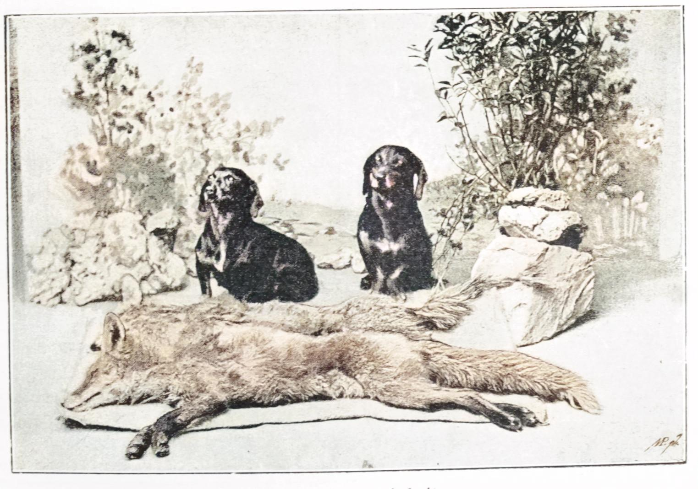
Podobné poľovné jazvečíky pobývali na zámku grófa Henckela.
Ak ste sa z tréningového centra vybrali do žrebčína Hugo Telep, dalo sa tam dostať parkovými cestičkami a alejami. Prešli ste mostom cez Rusovské rameno a potom ďalším cez mŕtve rameno obklopujúce žrebčín. Napokon ste sa ocitli až pri nádhernej bráne na ktorej boli sošky vzpínajúcich sa koní a erb majiteľov panstva. Cestu vám spríjemňoval výhľad na veľkolepý kaštieľ a nádherný anglický park s upravenou zeleňou.
Vstupná brána do areálu žrebčína Hugo-Telep.
Vybudovanie Žrebčína v oblasti Míneš
Predstavte si monumentálny vchod. Po jeho vnútornej strane sa po oboch stranách nachádzajú štyri pekné, vilové domčeky. V jednom býva správca žrebčína, ostatné slúžia ako priestranné boxy pre plemenných žrebcov. Tieto štyri budovy tvoria hranice otvoreného priestranstva, z ktorého vedie úplne rovná aleja k vyššie položenej vyhliadkovej terase, ktorá dominuje celej oblasti. V bezprostrednej blízkosti domu správcu sa nachádza stajňa pre matky s devätnástimi boxmi, spĺňajúca všetky požiadavky, ďalej otvorený prístrešok využívaný ako pripúšťacie miesto, štyri výbehy a dva veľké výbehy(paddocky). To všetko je veľmi účelné a pekné.
Takto začína opis začiatku areálu žrebčína Hugo Telep v knihe Maďarský chov koní slovom a obrazom od grófa Wrangela z roku 1898. Areál pokračoval 6 budovami so stajňami a výbehmi. Sem sa dalo dostať alejou zo začiatku areálu. Opis potom pokračuje kritikou tejto častí žrebčína a kritikou jeho celkovej správy.
1898 - Kritický opis žrebčína Hugo Telep.
zdroj: Maďarský chov koní slovom a obrazom. Stuttgart: Schickhardt & Ebner (Konrad Wittwer), 1898.
...
Cesta do žrebčína, ktorá vedie popri zámku postavenom v tudorovskom štýle a cez nádherné parkové úpravy zodpovedajúce veľkolepému charakteru tohto sídla, zaberie najviac štvrť hodiny. Prvý dojem, ktorý návštevník na mieste nadobudne, je mimoriadne priaznivý. Najmä laik bude pri pohľade na tieto úhľadné, starostlivo udržiavané zariadenia žrebčína nadšený a neodoprie si presvedčenie, že gróf Henckel tu vytvoril ideál žrebčína. Chladná, odborná kritika však veľmi rýchlo dospeje k inému záveru.
Predstavte si monumentálny vchod. Po jeho vnútornej strane sa po oboch stranách nachádzajú štyri pekné, vilové domčeky. V jednom býva správca žrebčína, ostatné slúžia ako priestranné boxy pre plemenných žrebcov. Tieto štyri budovy tvoria hranice otvoreného priestranstva, z ktorého vedie úplne rovná aleja k vyššie položenej vyhliadkovej terase, ktorá dominuje celej oblasti. V bezprostrednej blízkosti domu správcu sa nachádza stajňa pre matky s devätnástimi boxmi, spĺňajúca všetky požiadavky, ďalej otvorený prístrešok využívaný ako pripúšťacie miesto, štyri výbehy a dva veľké výbehy(paddocky). To všetko je veľmi účelné a pekné.
No zlá správa prichádza vzápätí. Odborník hneď pochopí, čo sa tým myslí, keď vidí šesť miniatúrnych stajní postavených v pravidelných rozostupoch po oboch stranách spomínanej aleje. Každá z nich obsahuje štyri boxy, pričom ku každému prislúcha malý paddock. Bez ohľadu na to, že tieto výbehy sú pre svoj malý rozsah úplne nepoužiteľné na pohyb koní, vykazuje tu opísaná dispozícia všetky tienisté stránky, na ktoré sme už upozornili pri opise Kisbérskeho Ritterdörfelu. Služba je tu mimoriadne namáhavá, kontrola starostlivosti a kŕmenia koní sa dá vykonávať len nedokonale, pretože správca žrebčína nikdy s istotou nevie, kde sa jeho ľudia nachádzajú a čo práve robia. Okrem toho teplota v boxoch klesá aj v mierne chladnom počasí tak nízko, že pohoda, respektíve vývoj mladých zvierat musí byť citeľne narušený, a to aj pri ešte tak výdatnom kŕmení.
Celý areál má navyše len 35 jutár (~20.14 ha). Niet sa preto čo čudovať, že aj takzvaný väčší výbeh, určený na pohyb žriebät a ročných koní, neposkytuje mladým zvieratám možnosť rozvinúť plnú rýchlosť v priamom smere. Všade chýba potrebný priestor.
Do akej miery tieto pomery súvisia so skutočnosťou, že ochrnutie žriebät postihovalo žrebčín Hugo-Telepi ešte donedávna takmer každoročne, tu nebudeme rozoberať. Konštatujeme len, že tráva v paddockoch sa napriek zavlažovaniu v celom areáli žrebčína nejaví ako zvlášť zdravá a že ústup ochorenia žriebät bol zaznamenaný až od okamihu, keď sa rozhodlo nepodávať koňom ustajneným v Hugo-Telepi seno zo šľachtických umelých lúk, ale zabezpečovať potrebné objemové krmivo z inej oblasti.
Zo všetkého toho vyplýva, že nebolo šťastným nápadom zosnulého grófa hľadať vzory pre svoj uhorský žrebčín v požehnanom britskom ostrovnom kráľovstve. Táto stavba musela pohltiť značné sumy, no napriek tomu zostáva vo vysokom stupni nepraktická. Kto pozná klasikov, pri prehliadke tohto mimoriadne neúčelného žrebčína sa sotva ubráni zvolaniu: „Quandoque bonus dormitat Homerus. “Občas si aj dobrý Homér zdriemne.
Aj vtedajšie športové noviny popisujú žrebčín Hugo Telep tzv. Míneš takto:
"Žrebčín v Hugo Telep pozostáva z ôsmich budov. Prvé dve – ku ktorým sa bez povolenia majiteľa, bez súhlasu s vrátnikom a prekonania reťazou pripútaného Kerberosa (strážneho psa) takmer nedá dostať – obsahujú byt pre správcu žrebčína a stajne pre plemenných žrebcov spolu so stajňou určenou na párenie koní. Ďalších šesť budov slúži na ustajnenie matiek a ich žriebät, ktoré sú každoročne premiestňované do tréningového zariadenia a ich miesto zaujímajú nové žriebätá. Správca žrebčína, pán Niebel, je vo veku svojho pána, s tým rozdielom, že na neho roky majú zjavne väčší vplyv. Je príkladom verného, dlhoročného služobníka, ktorých je čoraz menej, ale ktorých význam v hospodárstve významného pána je nenahraditeľný.
Šesť budov leží oproti sebe, po troch na jednej strane, v priamke za prvými dvoma. Každá obsahuje štyri stajne s priľahlým výbehom (paddock), ohradené vysokými latkovými plotmi a pokryté dobre udržiavaným trávnikom, čo vytvára krásne a priestranné ihrisko pre kone. Tri žrebce, ustajnené oproti budove správcu, sú:
Giles I., nar. 1860, odchovaný grófom Henckelom otec St. Giles, matka Lady Shrewsbury
Allbrook, otec Wild Dayrell, matka Elizabeth
Digby Grand, nar. 1868, otec Saunterer matka Miss Digby"
(zdroj: 23.06.1877, Sportblatt: Centralblatt für die Interessen der Pferdezucht und des Sports)
alebo:
"Na účely žrebčína bol ďalej založený systematicky usporiadaný park, postavených bolo šesť domov s výbehmi (koppelhaus), z ktorých každý mal štyri stajne a štyri ohrady — každá o veľkosti jedného jutra (cca 5755 m2) — určené na výbeh a pastvu. Spolu s nimi tam boli aj byty pre správcu žrebčína a strážcov. Všetko bolo navrhnuté vkusne a harmonicky ako výrečné svedectvo o estetickom cítení jeho zakladateľa." (zdroj:Rakúsko-Uhorská Revue zväzok 13, rok 1892)
Na leteckom snímku z roku 1937, vidieť ako mohol približne žrebčín vyzerať za čias grófa Henckela.
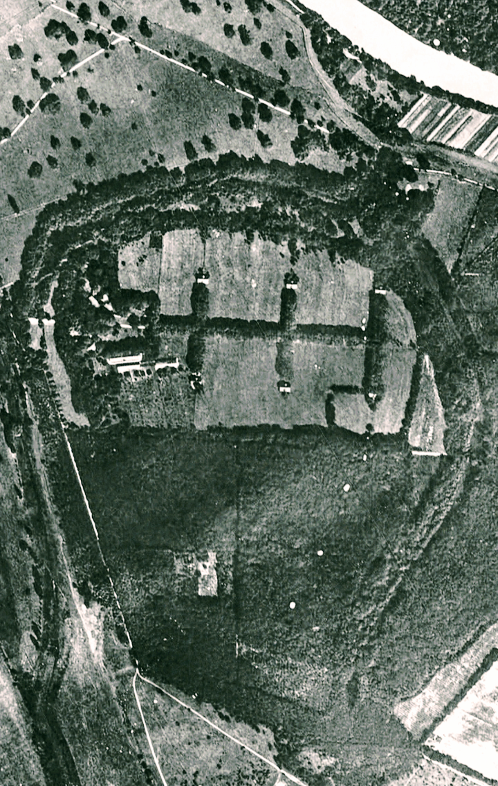
letecký snímok 1937 (zdroj: Vojenské historické múzeum Budapešť)
Na zmiešanej mape približne z roku 1950 je ukázaný aj kataster tohoto územia. Aj keď je z neskoršieho obdobia, štruktúra žrebčína je rovnaká.
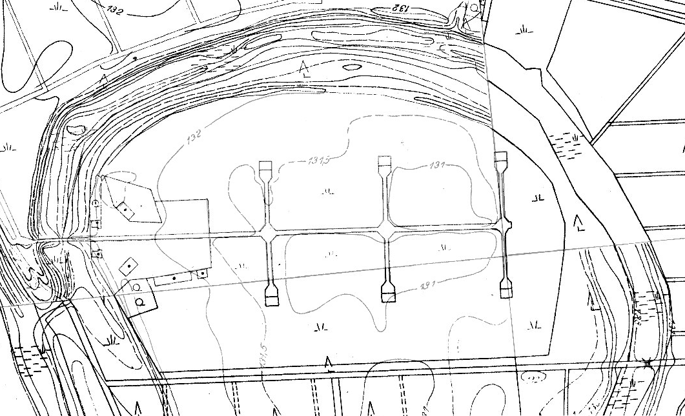
(zdroj: GKÚ Bratislava)
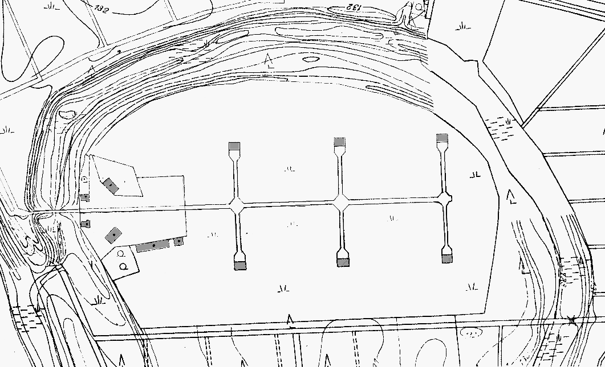
(zdroj: GKÚ Bratislava)
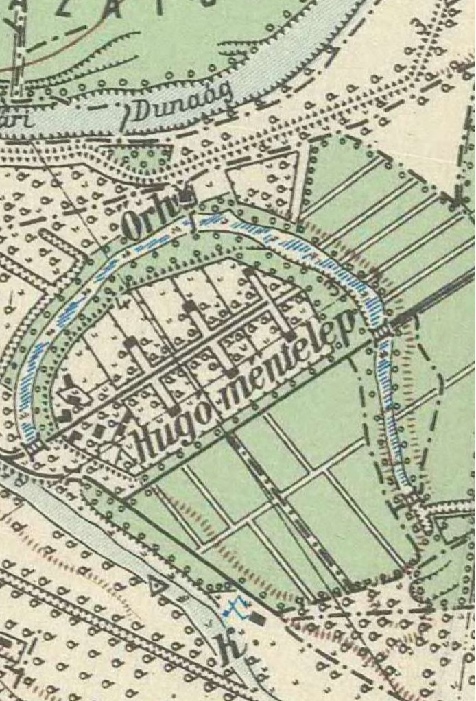
mapa vodných športov 1931 (zdroj: Vojenské historické múzeum Budapešť)
Do žrebčína sa dalo dostať cestou s mostíkom ponad rameno. Kresba znázorňuje vstupnú bránu do žrebčína, na stĺpoch brány boli dve sošky koní stojacich na zadných nohách. Na štíte brány nechýbal erb.
Kedy začal gróf stavať areál žrebčína v oblasti Birn Wald (maď. Kőrtvélyes, dnes tzv. Míneš) nie je známe. Isté však je, že tu v roku 1875 dal premiestniť celý žrebčín (kone, príslušenstvo a personál) z Rakúskeho Wolfsbergu. Z nového miesta existovali aj obavy ako napríklad kvalita vody, ale tie sa neukázali ako opodstatnené. Ešte na jar 1874 ale gróf zvažoval či vôbec takýto presun už zabehnutého žrebčína vo Wolfsbergu uskutoční. A dokonca uvažoval aj nad predajom celého panstva Wolfsberg. Správa o takomto predaji sa vtedy objavila v poľovníckych novinách Jagd-Zeitung. Tento predaj sa ale nakoniec neuskutočnil a rodina Henckel si nakoniec Wolfsberg ponechala.
15.05.1874 - Jagd-Zeitung nr.9.
Dôvod, prečo gróf Henckel pravdepodobne plánuje predať Wolfsberg, spočíva v tom, že presunul svoj dostihový areál do Karlburgu (Rusoviec) v Uhorsku a v súčasnosti zvažuje presťahovanie aj svojho žrebčína na toto nové sídlo, kde by si pravdepodobne zriadil aj trvalý pobyt.
Graf H. Henckel sen. läßt sein großartiges Besisthum, Schloß Wolfsberg in Kärnthen, mit Allem, was dazu gehört, Ländereien, Waldkomplere, Eisen- und Mar mor-Werke, durch Herrn Francis Cavoalier in Wien zum Verkauf anbieten und wird namentlich in den englischen Zeitungen die Aufmerksamkeit auf diese nach Millionen zu veranschlagende Herrschaft gelenkt. Der Grund, weshalb Graf Henckel Wolfsberg wohl zu verkaufen wünscht, mag darin liegen, daß er den Rennstall nach Karlburg in Un garn verlegt hat und jest sich mit dem Plane trägt, auch sein Gestüt in Karlburg zu etabliren und seinen Aufenthalt damit dauernd auf dieser neuen Besigung zu nehmen. Sporn.
Žrebčín sa využíval nielen na chov koní, ale ponúkal cudzím chovateľom svojich významných žrebcov na oplodnenie nielen ich plnokrvných ale aj polokrvných kobýl. Takýto oznam bol uverejnený v novinách Sportblatt v decembri 1875.
18.12.1875 - Oznam o pripúšťaní.
V plnokrvnom žrebčíne grófa Henckela z Donnersmarku na majetku Hugo-Telep, medzi Uhorským Altenburgom (dnešná Mosonmagyaróvár) a Prešporkom, budú od februára do mája 1876 pripúšťať vlastné aj cudzie kobyly nasledovní žrebci:
Giles the First, hnedák, nar. 1860, po St. Giles z kob. Lady Shrewsbury.
Pripustenie
plnokrvných kobýl: 400 florénov(zlatých),
matky víťazov: 200 fl.
Salamander, hnedák, nar. 1864, po Rataplan z kob. Fandango, po Touchstone.
Plnokrvné kobyly: 200 fl.
Polokrvné: polovica ceny
Albrook, tmavý hnedák, nar. 1866, po Wild Dayrel z kob. Elizabeth.
Plnokrvné kobyly: 200 fl.,
Polokrvné: 100 fl.
Digby Grand, čierny hnedák, nar. 1868, po Saunterer z kob. Miss Digby, po Touchstone.
Plnokrvné kobyly: 200 fl.
Za každú pripustenú kobyliu sa platí 5 fl. do stajne. Krmivo sa účtuje podľa trhových cien. Umiestnenie je možné v rozsahu kapacity stajne, kde sú k dispozícii aj uzatvorené boxy pre niektoré kobyly pred pôrodom.
Prihlášky a otázky adresujte na správu žrebčína Hugo-Telep, priamo v Oroszvári (Karlburg).
Deckanzeige.
Im gräflich Henckel von Donnersmark'schen Vollblut - Gestüte Hugo-Telep, zwischen Ungarisch-Altenburg (Wieselburg) und Pressburg decken von Februar bis Mai 1876 eigene und fremde Stuten:
1. Giles the First, br. H., geb. 1860, v. St. Giles a. d. Lady Shrewsbury. Vollblutstuten zu 400 fl., Mütter von Siegern zu 200 fl.
2. Salamander, br. H., geb. 1864, v. Rataplan a. d. Fandango, v. Touchstone. Vollblutstuten zu 200 fl.
Halbhlut die Hälfte.
3. Albrook, dbr. H., geb. 1866, v. Wild Dayrel a. d. Elizabeth. Vollblutstuten zu 200 fl., Halb-blutstuten zu 100 ff.
4. Digby Grand, schw. H., geb. 1868, v. Saunterer a. d. Miss Digby, v. Touchstone. Vollblutstuten zu 200 fl.
Für jede gedeckte Stute werden 5 fl. in den Stall gezahlt. Fourage nach Marktpreisen. Unterkommen, so viel der Raum es im Marstalle gestattet, wo auch abgeschlossene Boxes für einige abzufoh-lende Mütter vorhanden sind. Meldungen und Anfragen sind an die Gestüts-Verwaltung Hugo-Telep per Oroszvár (Carthurg) zu richten.
Okrem plnokrvných koní sa gróf venoval chovu aj tých polokrvných. Dozvedáme sa, že v blízkom žrebčíne v Čunove, zrušil chov plnokrvníkov a zaviedol chov polokrvných koní. V rakúskom Neudau pri Wolfsbergu gróf postupoval takto:
"Aby dosiahol chov koní zodpovedajúci všeobecným agrárnym podmienkam, rozhodol sa gróf skrížiť svoje vo svojom žrebčíne chované, ďaleko preslávené anglické plnokrvníky s domácimi vidieckymi koňmi. Ako výborne sa tento kríženec podaril, o tom najlepšie svedčia polokrvné kone, ktoré boli na trhu veľmi žiadané a vysoko platené. Aby však aj obyvateľstvo mohlo mať podiel na tejto mimoriadnej výhode, umožnil gróf, aby jeho plnokrvné žrebce pripúšťali aj kobyly sedliackych majiteľov. Táto možnosť bola široko využívaná a je nepopierateľnou zásluhou grófa, že takto významne prispel k rozvoju chovu koní." (zdroj:Rakúsko-Uhorská Revue zväzok 13, rok 1892)
Grófove myšlienky a konanie, celkové hospodárstvo v rusovskom panstve bolo prispôsobované tak aby žrebčín fungoval čo najlepšie a najefektívnejšie. Záležalo mu na čistote chovných zariadení, lokálne dopestovanej strave, čistej pitnej vode a samozrejme aj zdravom prírodnom prostredí. Len tak mohli potom jeho kobyly rodiť zdravé žriebätá a kone podávať tie najlepšie výkony na dostihoch.
"Zvláštnosťou žrebčína je fyzická mohutnosť mladých koní, čo sa pripisuje výberu párenia a kvalitnému krmivu, ktoré však zostáva tajomstvom stajne." (zdroj:23.06.1877, Sportblatt: Centralblatt für die Interessen der Pferdezucht und des Sports)
Pre grófa bolo zdravie svojich zverencov veľmi dôležité. Vynikal v presnosti a precíznosti pri riadení žrebčína, na čistote a poriadku si gróf obzvlášť zakladal. Vybudovaný žrebčín a tréningové centrum gróf zásoboval z lokálnych zdrojov. Krmivo si dopestovával na okolitých lúkach. Avšak čoskoro sa tam "prejavil nedostatok v kvalite krmiva - nízko položené lúky nedokázali poskytnúť dostatočne konzistentné, výživné objemové krmivo, teda v požadovanej kvalite pre potreby žrebčína a dostihovej stajne.
Ako bol tento nedostatok odstránený, si uvedieme v krátkosti ako príklad, ktorý poukazuje na pôdne meliorácie. Tie gróf Henckel počas svojho dlhého pôsobenia vykonal na mnohých miestach. Neďaleko zámockého parku a žrebčína sa popri dunajskom koryte nachádzal riedky les, ktorý slúžil ako pastvina pre ovce. Skúsené oko hneď spozorovalo, že pôda na niektorých miestach, najmä pri vysokých vodách, bola čiastočne zaplavovaná, čo vlastne odhalilo jej vhodnosť na pravidelné zavlažovanie.
Po úspešnom prekonaní terénnych ťažkostí sa pristúpilo k prestavbe spomínaného lesného pasienka na zavlažované a zatápané lúky a táto prestavba bola postupne za päť rokov dokončená. Aj žrebčín bol upravený na zavlažovanie, takže je teraz k dispozícii 50 hektárov umelých lúk a 20 hektárov zavlažovaných strnísk, čím bol plne dosiahnutý cieľ – zabezpečiť pre žrebčín a dostihovú stajňu dostatočné množstvo sena najvyššej kvality a bohaté pastviny.
Umelé lúky sú zavlažované tromi odstredivými čerpadlami poháňanými parou. Ohraničujú 64-hektárový anglický park, a keďže tieto lúky sú vysadené skupinami stromov a pretkané alejou ovocných stromov, zároveň tvoria pôvabné pokračovanie anglického parku a spájajú príjemné s užitočným. Samozrejme, náklady na žrebčín a umelé lúky boli značné, keďže všetky zariadenia boli vybudované nielen účelne, ale aj veľmi veľkolepo, takže vzbudili obdiv každého odborníka, a mnohí z nich už vykonali púť do Rusoviec.
Aj jej veličenstvo cisárovná Alžbeta, arcivojvodkyňa Mária Terézia, ako aj arcivojvodovia Karol Ľudovít, František Ferdinand d’Este a Fridrich poctili Karlburg svojou najvznešenejšou návštevou." (zdroj:Rakúsko-Uhorská Revue zväzok 13, rok 1892)
Gróf riadil a udržiaval svoj žrebčín na vysokej úrovni ako skúsený manažér a chovateľ, v novinách sa o tom píše takto: "V rovnakom veľkolepom štýle, ako je zariadený zámok Karlburg, sú udržiavané aj tréningové zariadenia a žrebčín s výbehmi(paddock). Všade vládne mimoriadna presnosť, čistota a poriadok – je tu vidieť praktické a skúsené oko majiteľa.
Gróf Henkel si ako chovateľ získal prestíž tým, že sa takmer úplne oslobodil od potreby dovozu plnokrvného materiálu z Anglicka. Takmer každý rok dopĺňa svoj chov o mladé kobyly z vlastného chovu, ktoré po ukončení pretekárskej kariéry prechádzajú do materskej úlohy. Jeho žrebec Giles I. je vynikajúcim plemenníkom prvej triedy." (zdroj:10.03.1878, Illustrirte Sportz Zeitung.No 8-9.)
"Vychádzajúc z princípu, že okrem potravy a nápoja sú vzduch, svetlo a čistota hlavnými faktormi, ktoré ovplyvňujú vývoj každého živého tvora, nachádzame v zariadeniach v Hugo Telep všetky tieto požiadavky naplnené. Najväčší poriadok a čistota, kniežacia elegancia a nádhera, ktorá vládne na zámku a v parku grófa z Karlburgu, sa preniesla aj na toto zariadenie, ktoré v celej svojej dispozícii nesie pečať harmonickej súdržnosti. (zdroj:23.06.1877 - Sportblatt: Centralblatt für die Interessen der Pferdezucht und des Sports)
Farby grófovej stajne boli v podobe modro-bielych pruhov. Trénerom Hugových koní bol zo začiatku Mr. James Waugh a správca žrebčína pán Niebel.
Takto prebiehalo budovanie žrebčína a tréningového centra v čase:
-1872 (pravdepodobne máj) kúpa panstva v Rusovciach ihneď po prevzatí panstva - začiatok výstavby dostihovej stajne, vonkajšej dráhy a ďalších potrebných zariadení pre tréning. centrum.
-1873 ukončenie výstavby dostihovej stajne -po skončení sezóny (október, november) do Rusoviec je presunuté tréningové centrum z Nakla a časť žrebčína z Wolfsburgu.
- 1874 na jar gróf zvažoval presunutie celého žrebčína z Wolfsbergu do Rusoviec
-1875 presun zvyšného žrebčína z Wolfsbergu do Rusovciach do oblasti Birn Wald (Kőrtwélyes)
-1877 postavený krytý bežecký ovál.
Gróf a dostihy
"To, akú rolu hrali Henckelovi žrebci desiatky rokov na našich dostihových dráhach, najlepšie dokazuje fakt, že kone grófa vyhrali v rokoch 1870-1890 na rakúsko-uhorských dostihových dráhach 493 613 florénov; sumy vyhrané v Nemecku boli ešte oveľa významnejšie." (zdroj: 20.8.1982, Lavanttaler Bote)
"Gróf Henckel sa venoval dostihovému športu z lásky k veci samotnej; len láska k ušľachtilému koňovi ho viedla k veľkým obetiam, ktoré sú s týmto športom spojené. Hoci mu jeho miláčikovia okrem veľkých pôct priniesli aj významné finančné sumy, tieto príjmy — aj v čase priazne osudu — pokryli len časť výdavkov, nieto ešte aby priniesli zisk.
Ostatne, nič lepšie nedokazuje pravý postoj grófa Henckela k dostihovému športu, ako fakt, že nikdy nestávkoval. Práve v tom azda spočíva tajomstvo jeho trvalých úspechov v oblasti chovu koní, ktorý preňho nebol prostriedkom k cieľu, ale cieľom samotným. Vďaka tomu dokázal ľahšie znášať neúspechy a výpadky vo výkonnosti svojich koní. V takýchto prípadoch zdvojnásobil svoje úsilie a svojou vytrvalosťou a energiou vždy vedel prekonať neúspechy.
Takto pracoval gróf Henckel počas 56 rokov až do svojej smrti na jeseň roku 1890 neúnavne na naplnení veľkého cieľa, ktorý mal pred očami — pozdvihnúť chov plnokrvníkov v Rakúsku, Uhorsku a Nemecku na čo najvyššiu úroveň a zabezpečiť, aby čo najširšie vrstvy mohli ťažiť z výhod, ktoré z neho plynú. Preto si gróf právom zaslúžil už za života udelený titul "otec turfu“.
To, že Rakúsky jazdecký klub nazval cenu pre kobyly v hodnote 30 000 zlatých – teda najcennejšie preteky po Derby – Henckelovým memoriálom, najlepšie dokazuje, že zásluhy „otca turfu“ o dostihový šport v Rakúsko-Uhorsku a Nemecku mu nikdy nebudú zabudnuté.
Čo bol Lord Falmouth pre Anglicko a gróf Lagrange pre Francúzsko, to bol gróf Hugo Henckel pre rakúsko-uhorský a nemecký turf. (zdroj: Rakúsko-Uhorská Revue zväzok 13, rok 1892)
1892 - Rakúsko-Uhorská Revue zväzok 13.
...
Už na inom mieste sme upozornili na to, že úspechy všetkých tých vynikajúcich koní, ktoré priniesli česť modro-bielym farbám grófa Henckela v Rakúsko-Uhorsku a Nemecku v rokoch 1835 až 1890, sú tak početné, že ich výpočet by zaplnil celú knihu.
Chceme však na tomto mieste vyzdvihnúť niekoľko z tých turfových fenoménov, ktoré priniesli grófovi najväčšiu radosť, ako aj niektoré z najvýznamnejších a najzaujímavejších výkonov jeho obľúbencov na zelenom trávniku.
Koňom, ktorý gróf Henckel sám označil za najlepšieho zo všetkých plnokrvníkov, ktoré odchoval (a ktorých bolo niekoľko stoviek), bol Arthur. Bol narodený v roku 1859 (otec Hartneitstein matka Her Royal Highness) a nepoznal premožiteľa ani na rakúskych, ani na nemeckých dráhach – až na výnimku v Baden-Badene v roku 1862, kde bol žrebec grófa Henckela porazený v Continental St. Leger a Veľkej cene – a to v oboch prípadoch iba koňom Stradella grófa Lagrange, výnimočným žrebcom, ktorý bol neskôr odoslaný do Anglicka a tam dokázal poraziť aj The Marquis, víťaza 2000 Guineas, St. Leger a druhého z Derby(Epsome Derby).
Arthur podľahol vo Veľkej cene v Baden-Badene až po tvrdom boji s rozdielom pol dĺžky proti Stradella a zanechal za sebou niekoľko výnimočných francúzskych koní tej doby – Mon Etoile, Blanchette, Vierge Falle, Augus a ďalšie. Všeobecne platí, že gróf Henckel bol v tom období, keď Francúzi úplne ovládali dostihovú dráhu v Baden-Badene, zvyčajne jediným dostihovým mužom z Rakúsko-Uhorska a Nemecka, ktorý sa opovážil opakovane a úspešne brániť veľké ceny proti zahraničnej konkurencii.
Ďalším turfovým fenoménom bol Giles Prvý, narodený v roku 1860 po St. Giles z kobylky Lady Shrewsbury. Behal v 30 dostihoch, z ktorých 26 vyhral, 3-krát bol druhý a len raz bez umiestnenia. Jeho výhry predstavovali 95 173 zlatých a dve čestné ceny. Jeho prehry sú však azda ešte zaujímavejšie ako víťazstvá. Po tom, čo Giles Prvý vyhral 26 dostihov na rakúsko-uhorských a nemeckých dráhach, bol nakoniec tiež porazený v Baden-Badene – kobylkou Coquette.
Giles Prvý bežal aj v Anglicku, a to ako jediný kôň, ktorý reprezentoval farby grófa v materskej krajine dostihového športu. Žrebec štartoval v roku 1863 v Derby v Epsome, ktoré vyhral Macaroni proti Lordovi Clifdenovi, avšak Giles ostal neumiestnený, no ani zďaleka nehral vo veľkých pretekoch nevýznamnú rolu. Následne v behu Queen’s Stand Plate skončil v poli 12 koní druhý za Umpire a svoju najlepšiu výkonnosť na anglických dráhach predviedol v North Derby v Newcastli, kde ho Manfred, ktorý niesol o tri libry menej, porazil na tesno po prudkom boji.
Giles Prvý bol aj otcom Prince Gilesa Prvého(Prince Giles The First), ktorý v roku 1878 v Baden-Badene zabehol mŕtvy beh o Veľkú cenu s neporazenou Kincsem; až v opakovanej jazde podľahol kobyle pána Blaskovitsa.
V posledných rokoch života grófa reprezentovali jeho populárne farby predovšetkým Chalili, Saturn a kráľovná šprintérov Királyné tým najdôstojnejším spôsobom.
Rakúske Derby gróf Henckel vyhral dvakrát, a to: v roku 1869 s koňom Brigadier, ktorý pochádzal z rodu St. Gilesa, otca vyššie spomínaného Gilesa Prvého, a v roku 1883 s koňom Tartar.
Union(Die Union), ktorý bol kedysi najvýznamnejším chovateľským dostihom v Nemecku, vyhral gróf z Karlburgu až deväťkrát a Severonemecké Derby dvakrát: v roku 1878 s Oroszvárom a v roku 1883 s Tartarom.
Aký význam mala stajňa grófa Henckela na našich dostihových dráhach po celé desaťročia, najlepšie dokazuje fakt, že jeho kone vyhrali v rokoch 1870 až 1890 na rakúsko-uhorských dráhach 493 613 zlatých. Sumy vyhrané v Nemecku boli ešte výrazne vyššie.
Gróf Henckel sa istý čas venoval aj prekážkovým dostihom – sám vyhral ako amatérsky jazdec v Breslau (Vroclav, Wroclaw) steeplechase a v roku 1875 pre neho vyhral Purveyor veľkú viedenskú steeplechase.
O klusácky šport však nemal ako plnokrvný chovateľ osobitný záujem, hoci vždy vlastnil vynikajúcich ruských alebo amerických klusákov a bol výborným vozatajcom.
Gróf Henckel však nechoval len ušľachtilé teplokrvné plemená, ale vzhľadom na hospodárske podmienky na svojom majetku vo Wolfsbergu šľachtil aj ťažké, chladnokrvné nórske kone na hospodárske účely.
Aké živé záujmy gróf už v mladosti prejavoval o organizáciu dostihovej prevádzky, dokazuje aj to, že sám zostavil prvé tri ročníky nemeckého dostihového kalendára. Neskôr túto úlohu prevzali gróf Holmer a gróf Vogler.
To, že Rakúsky jazdecký klub nazval cenu pre kobyly v hodnote 30 000 zlatých – teda najcennejšie preteky po Derby – Henckelovým memoriálom, najlepšie dokazuje, že zásluhy „otca turfu“ o dostihový šport v Rakúsko-Uhorsku a Nemecku mu nikdy nebudú zabudnuté.
Čo bol Lord Falmouth pre Anglicko a gróf Lagrange pre Francúzsko, to bol gróf Hugo Henckel pre rakúsko-uhorský a nemecký turf.
...
Grófov obľúbený kôň bol aj Giles I otec Princa Gilesa I.
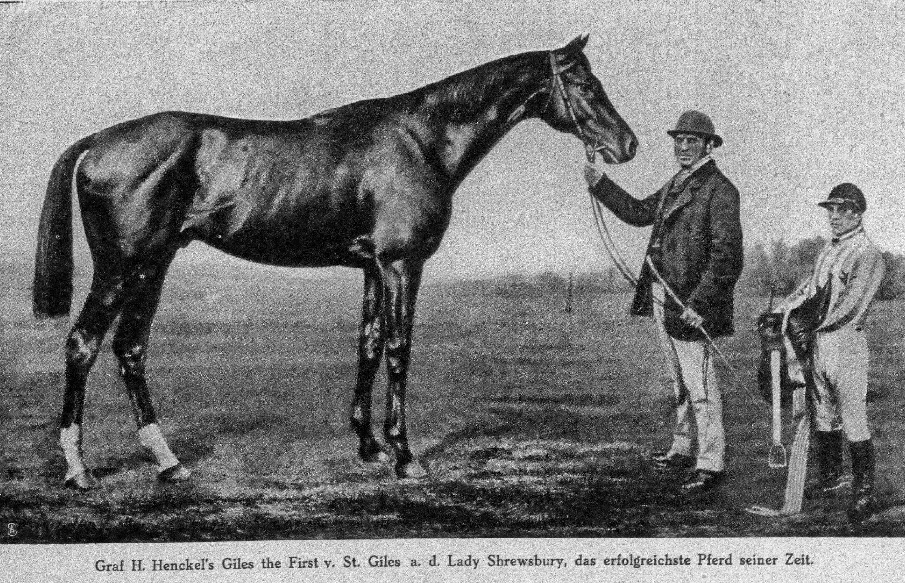
Giles the First, najúspešnejší kôň svojej doby.
Giles I., ktorého gróf Henckel vychoval v roku 1860 a keďže žriebä sľubovalo veľa, poslal ho na výcvik do Anglicka; tam vo veku 3 rokov bežal aj v Derby, ale neumiestnil sa; potom sa vrátil domov a 2 roky vždy víťazil v hlavných pretekoch v Hamburgu, Viedni a Pešti, jeho najväčšími prejavmi talentu boli ceny I. triedy - Cisárska a Károlyiho cena. Zosnulý gróf si ho veľmi vážil a neskôr ho použil ako plemenného žrebca vo svojom žrebčíne. Stal sa jeho najlepším produktom.
Prince Giles the first, ktorý sa okrem iného preslávil tým, že bol jediným koňom, ktorý takmer zvíťazil nad slávnou Kincsem v Cene Baden-Baden, keď s ňou dobehol s mŕtvym štartom, čo však spôsobila len prehnaná sebaistota Maddena, jazdca na Kincsem.
Potom nasledovali: Neudau (matka Tartara a Nini); Konotoppa, jeden z jeho najlepších dostihových koní na dlhé trate; potom Albion, Pancake, ktorý bol veľmi rýchly a ktorého najlepším produktom ako plemenného žrebca je teraz 2-ročná Nini; potom Aaron, Abenadar a (otec Királyné), Novelle (dobrá malá kobyla), Little Digby; potom Oroszvár, ktorý vyhral Union a hamburské Derby, prvý nad Lateranom, druhý nad Nilom Desperandumom, a porazil Pfeila a Altonu v Renard-Rennen, teraz pôsobí ako plemenný žrebec v Oroszvári;...
Celkovo vzaté, gróf Henckel vychoval veľa dobrých koní, ale v porovnaní s inými chovateľmi ho potešilo pomerne málo koní prvej triedy. (zdroj: Vadász - és Verseny-Lap, 07.10.1890)
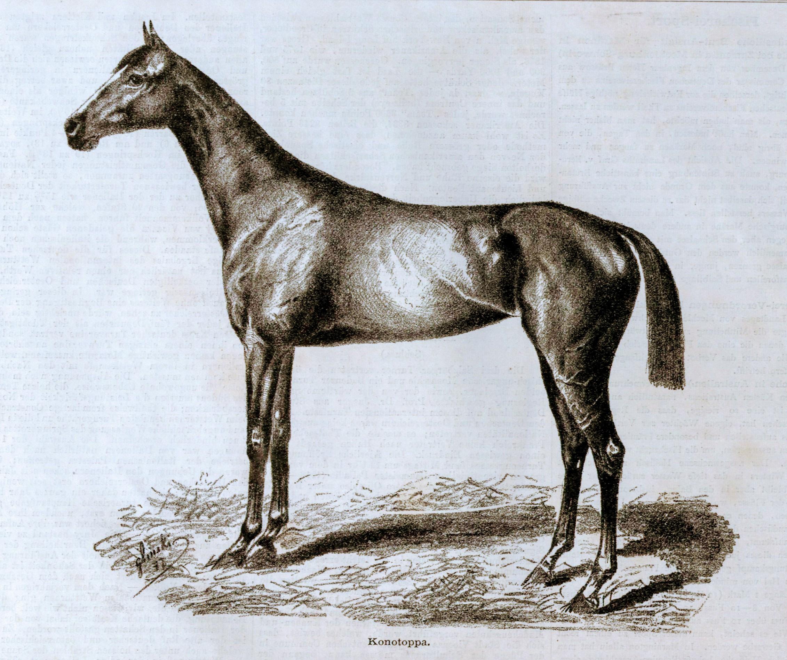
Grófova kobyla Konotoppa.
Gróf Hugo Henckel, nebol bezdôvodne nazývaný otcom turfu. Mal rozsiahle žrebčíny plnokrvníkov v Karlburgu, ako aj v Nakle v Pruskom Sliezsku. Kone grófa Henckela, chované v druhom z menovaných žrebčínov, mohli reprezentovať modro-biele pruhy aj v tých dostihoch v Nemecku, ktoré boli pre rakúsko-uhorské kone uzavreté, a vďaka tomu boli Henckelove farby v predošlých rokoch v nemeckých dostihoch veľmi často zastúpené.
Gróf Henckel bol veľkým zástancom inbrídingu (príbuzenského kríženia), ale kone z grófovho žrebčína, chované podľa princípu inbrídingu, s niekoľkými výnimkami, nedokázali na dostihovej dráhe zohrať žiadnu rolu, a čo bolo pozoruhodné, väčšina z nich boli kobyly.
Najvýznamnejším pilierom Henckelovho chovu je Aaron, ktorý po pestrej pretekárskej kariére slúži v žrebčíne v Karlburgu ako plemenný žrebec a preslávil sa najmä vďaka svojej dcére Kiralyné, slávnej šprintérke.
Rakúske derby vyhral gróf Hugo Henckel štyrikrát, a to v roku 1874 s koňom Nouman proti Hamadryade, zatiaľ čo druhý grófov kôň, Monsalu, skončil tretí; v roku 1878 s Oroszvárom proti Lateranovi, v nasledujúcom roku s Picdlodom proti Künstlerin a v roku 1883 s Tartarom proti Botschafter I. Droszvar a Tartar vyhrali grófovi Henckelovi aj severonemecké derby v Hamburgu. Henckelove kone zvíťazili aj v mnohých ďalších dostihoch v monarchii a Nemecku. (Die Presse.,05.10.1890)
Akú úlohu zohrával Henckelov dostihový tím na rakúsko-uhorských a nemeckých dráhach, najlepšie dokazuje skutočnosť, že jeho výhry z rokov 1880 – 1890 presiahli jeden milión mariek.
| Rok | Rakúsko-Uhorsko | Nemecko | ||
|---|---|---|---|---|
| Výťazstvá | Výhry | Výťazstvá | Výhry | |
| 1880 | 12 | 24 830 fl. — kr. | 15 | 59 755 M. — Pf. |
| 1881 | 16 | 34 299 fl. 79 kr. | 10 | 35 107 M. 50 Pf. |
| 1882 | 15 | 26 327 fl. — kr. | 16 | 67 209 M. — Pf. |
| 1883 | 10 | 37 401 fl. 25 kr. | 16 | 140 280 M. — Pf. |
| 1884 | 3 | 6 685 fl. — kr. | 21 | 115 527 M. 50 Pf. |
| 1885 | 2 | 5 525 fl. — kr. | 18 | 56 165 M. — Pf. |
| 1886 | 9 | 15 112 fl. 50 kr. | 26 | 137 460 M. — Pf. |
| 1887 | 7 | 16 605 fl. — kr. | 6 | 30 959 M. — Pf. |
| 1888 | 6 | 17 367 fl. 50 kr. | 4 | 12 155 M. — Pf. |
| 1889 | 3 | 8 175 fl. — kr. | 1 | 4 000 M. — Pf. |
| 1890 | 15 | 58 086 fl. 67 kr. | 5 | 17 870 M. — Pf. |
| Spolu | 98 | 250 414 fl. 71 kr. | 138 | 676 488 M. — Pf. |
Najúspešnejšie kone stajne od založenia carlburgského žrebčína boli:
1898 - Najúspešnejšie kone stajne Rusovce.
zdroj: Maďarský chov koní slovom a obrazom. Stuttgart: Schickhardt & Ebner (Konrad Wittwer), 1898.
Rok 1873: Novelle, hnedá kobyla, nar. 1871, po Lecturer z Gaiety (po King Tom): Meštianska cena v Ödenburgu.
Rok 1874: Daylight, ryšavý žrebec, nar. 1872, po Ostreger z Aurory (po Ephesus): Meštianska cena v Ödenburgu.
Purveyor, hnedý žrebec, nar. 1870, po Caterer zo Scrubbing Brush (po Touchstone): Transdanubijská cena v Ödenburgu.
Roman, hnedý žrebec, nar. 1871, po Lecturer z Princess Alice (po King Tom): Štátna cena vo Viedni a Union v Berlíne.
Rok 1875: Purveyor, hnedý žrebec, nar. 1870, po Caterer zo Scrubbing Brush (po Touchstone): Veľká viedenská steeplechase, cena v Budapešti.
Konotoppa, hnedá kobyla, nar. 1872, po Giles I z Ellen (po Idle Boy): Jesenná cena kobýl.
Elena, ryšavá kobyla, nar. 1873, po Salamander z Last Trial (po Mountain Deer): Hamburské kritérium.
Rok 1876: Konotoppa, hnedá kobyla, nar. 1872, po Giles I z Ellen (po Idle Boy): Jesenná cena kobýl v Budapešti, Baden-Badene a Hamburské kritérium.
Basswelt, hnedý žrebec, nar. 1872, po Giles I z Cartouche (po Palestro): Freudenau handicap.
Rok 1877: Sabinus, ryšavý žrebec, nar. 1875, po Salamander z Aurory (po Ephesus): Cena budúcnosti.
Rok 1878: Oroszvár, ryšavý žrebec, nar. 1875, po Allbrook z Lady Wentworth (po St. Albans): Trial Stakes vo Viedni, Union v Berlíne a Severonemecké derby v Hamburgu.
Sabinus, ryšavý žrebec, nar. 1875, po Salamander z Aurory (po Ephesus): Nemzeti-díj v Budapešti.
Picklock, ryšavý žrebec, nar. 1876, po Buccaneer zo Sexagesima (po Champagne): Cena budúcnosti v Baden-Badene.
Rok 1879: Picklock, ryšavý žrebec, nar. 1876, po Buccaneer zo Sexagesima (po Champagne): Union v Berlíne.
Rok 1880: Rifleman, hnedý žrebec, nar. 1876, po Giles I z Aurory (po Ephesus): Freudenau handicap vo Viedni.
Surema, tmavá kobyla, nar. 1877, po Rentmeister z Emiliana (po Ephesus): Jesenná cena kobýl v Budapešti.
Rok 1881: Aaron, ryšavý žrebec, nar. 1876, po Giles I z Laviny (po Ephesus): Štátna cena I. triedy v Budapešti.
Dombrowa, hnedá kobyla, nar. 1878, po Digby Grand z Flory (po Champagne): Trial Stakes vo Viedni, Nemzeti-díj a Cena kobýl (Oaks) v Budapešti.
Captain Nemo, sivý žrebec, nar. 1877, po Digby Grand z Progress (po Hartneitstein): Kincsem handicap vo Viedni.
Rok 1882: Pancake, hnedý žrebec, nar. 1879, po Albert Victor z Timaru (po Newminster): Štátna cena vo Viedni a Veľká cena Hannoveru.
Morteratsch, ryšavý žrebec, nar. 1880, po Buccaneer z Eavice (po Lecturer): Hamburské kritérium.
Grand Buccaneer, hnedý žrebec, nar. 1879, po Buccaneer zo Sunset (po Dundee): Nemzeti-díj v Budapešti.
Rok 1883: Tartar, tmavohnedý žrebec, nar. 1880, po Digby Grand z Neudau (po Mercury): Rakúske derby vo Viedni, Nemzeti-díj v Budapešti, Union v Berlíne a Severonemecké derby v Hamburgu.
Morteratsch, ryšavý žrebec, nar. 1880, po Buccaneer z Eavice (po Lecturer): Trial Stakes vo Viedni.
Pancake, hnedý žrebec, nar. 1879, po Albert Victor z Timaru (po Newminster): Strieborný štít v Berlíne.
Sunrise, ryšavá kobyla, nar. 1881, po Przedswit zo Surprise (po Glückzu): Hamburské kritérium.
Gabernie, hnedá kobyla, nar. 1881, po Buccaneer z Eavice (po Lecturer): Cena budúcnosti v Baden-Badene.
Rok 1884: Pancake, hnedý žrebec, nar. 1879, po Albert Victor z Timaru (po Newminster): Strieborný štít v Berlíne.
Immielow, hnedý žrebec, nar. 1882, po Giles I alebo Prince Giles I z Neudau (po Mercury): Hamburské kritérium.
Rok 1885: Cambus, ryšavý žrebec, nar. 1881, po Cambuscan z Gaiety (po King Tom): Cena Iffezheimu v Baden-Badene a Wäldchen-Rennen vo Frankfurte nad Mohanom.
Rok 1886: Abenadar, hnedý žrebec, nar. 1883, po Buccaneer z Flory (po Champagne): Hertefeld-Rennen v Berlíne a Wäldchen-Rennen vo Frankfurte nad Mohanom.
Matutina, hnedá kobyla, nar. 1883, po Buccaneer z Joyeuse (po Palestro): Strieborný štít v Berlíne.
Chalili, ryšavý žrebec, nar. 1881, po Kettledrum z Flory (po Champagne): Przedswit-handicap vo Viedni.
Rok 1887: Chalili, ryšavý žrebec, nar. 1881, po Kettledrum z Flory (po Champagne): Przedswit-handicap vo Viedni.
Királyné, ryšavá kobyla, nar. 1885, po Aaron z Kedvesem (po Grand Coup): Cena budúcnosti v Baden-Badene.
Rok 1888: Királyné, ryšavá kobyla, nar. 1885, po Aaron z Kedvesem (po Grand Coup): Nemzeti-díj v Budapešti.
Saturn, ryšavý žrebec, nar. 1885, po Aaron zo Startle (po Buccaneer): Veľký viedenský handicap.
Rok 1890: Királyné, ryšavá kobyla, nar. 1885, po Aaron z Kedvesem (po Grand Coup): Przedswit-handicap vo Viedni.
Micsoda, hnedá kobyla, nar. 1888, po Aaron z Mimosa (po Digby Grand): Cena sv. Leopolda vo Viedni a Graf Julius Károlyi Memorial Stakes v Budapešti.
Nini, ryšavá kobyla, nar. 1888, po Pancake z Neudau (po Mercury): Viedenské kritérium a Budapeštianske Omnium.
Rok 1891: Nini, ryšavá kobyla, nar. 1888, po Pancake z Neudau (po Mercury): Rezidenčná cena vo Viedni.
Rakúske derby vyhral gróf Henckel dvakrát, a to roku 1869 s Brigadierom, hnedým žrebcom po St. Giles z Violet (po Elis), a roku 1883 s Tartarom, tmavohnedým žrebcom po Digby Grand z Neudau (po Mercury). Tartar nebol ani zďaleka najlepším koňom, akého gróf Henckel kedy odchoval, no napriek svojej malej výške a nenápadnému zovňajšku bol fenoménom, pokiaľ ide o vytrvalosť a temperament. Tento dnes v Mezőhegyesi pôsobiaci polokrvný plemenný žrebec vyhral v priebehu dvoch mesiacov sumu 23 300 zlatých a 50 600 mariek, keď postupne zvíťazil v Nemzeti, vo Viedenskom derby, v Berlínskej Union a v Hamburskom derby. Ide o výkon, aký pred ním ani po ňom nedosiahol žiadny rakúsko-uhorský ani nemecký trojročný kôň. Berlínska Union pripadla koňom carlburgského žrebčína deväťkrát a Severonemecké derby dvakrát.
Z otcovských žrebcov, ktorých gróf Henckel v posledných desaťročiach používal, treba spomenúť:
Giles the First, ryšavý žrebec, nar. 1860, po St. Giles z Lady Shrewsbury (po Lancelot).
Prince Giles I, tmavohnedý žrebec, nar. 1874, po Giles the First z Princess Alice (po King Tom).
Digby Grand, sivý žrebec, nar. 1863, po Satterer z Miss Digby (po Touchstone), otec Tartar, Dombrowa a Boccaccio II.
Aaron, ryšavý žrebec, nar. 1876, po Giles the First z Lavina (po Ephesus), otec Királyné, Micsoda, Saturn, Simplicius a ďalších.
Abenadar, hnedý žrebec, nar. 1883, po Buccaneer z Flory (po Champagne).
Pancake, hnedý žrebec, nar. 1879 v Anglicku, po Albert Victor z Timaru (po Newminster), otec Nini, Sebes, Suliman a Mameluck.
Grand Buccaneer, hnedý žrebec, nar. 1879, po Buccaneer zo Sunset (po Dundee).
Dictator, ryšavý žrebec, nar. 1883, po Giles the First z Little Digby (po Digby Grand).
Kronprinz, ryšavý žrebec, nar. 1886, po Grand Buccaneer z Konotoppa (po Giles the First).
Gloucestershire, hnedý žrebec, nar. 1886 v Anglicku, po Petronel z Research (po Speculum).
Gróf Henckel a jeho ďalšia činnosť v Rusovciach
Dostihy a chov koní bola síce jeho najväčšia vášeň, ale nebola jediná. Gróf bol človek, ktorý sa venoval veľkému množstvu činností a záľub.
Poľovníctvo
Rusovské panstvo to neboli len pozemky a majetky v Rusovciach ale aj v Čunove a na druhej strane Dunaja v oblasti Gajc. Do týchto troch území tak boli rozdelené aj poľovné revíry rodiny Henckel. Panstvo Rusovce bolo kúpené pre grófovu manželku Lauru Henckel a tak jej patrili aj všetky tri poľovné revíry. V roku 1879 noviny uverejnili tabuľky počtu ulovenej zveri v týchto revíroch za rok 1878. Grófka Laura Henckel je tu titulovaná ako majiteľka panstva Rusovce:
16.03.1879 - Illustrierte Sport-Zeitung
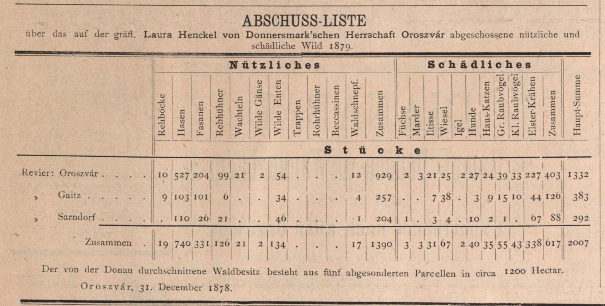
Zoznam ulovenej užitočnej a škodlivej zveri na panstve grófky Laury Henckel von Donnersmark v panstve Rusovce, 1879
| Revír | Užitočná zver | |||||||||||
|---|---|---|---|---|---|---|---|---|---|---|---|---|
| S r n c e | Z a j a c e | B a ž a n t y | J a r a b i c e | P r e p e l i č k y | D i v é h u s i | D i v é k a č i c e | D r o p y | C h r i a š t e l e | M o č i a r n i c e | S l u k y l e s n é | S p o l u |
|
| Rusovce | 10 | 527 | 204 | 99 | 21 | 2 | 54 | 12 | 929 | |||
| Gajc | 9 | 103 | 101 | 6 | 34 | 4 | 257 | |||||
| Čunovo | 110 | 26 | 21 | 46 | 1 | 204 | ||||||
| Spolu | 19 | 740 | 331 | 126 | 21 | 2 | 134 | 17 | 1390 | |||
| Revír | Škodlivá zver | H l a v n ý s ú č e t |
||||||||||
|---|---|---|---|---|---|---|---|---|---|---|---|---|
| L í š k y | K u n y | T c h o r y | L a s i c e | J e ž e | P s y | D o m á c e m a č k y | V e ľ k e d r a v c e | M a l é d r a v c e | S t r a k y a v r a n y | S p o l u |
||
| Rusovce | 2 | 3 | 21 | 25 | 2 | 27 | 24 | 39 | 33 | 227 | 403 | 1332 |
| Gajc | 7 | 38 | 3 | 9 | 15 | 10 | 44 | 126 | 383 | |||
| Čunovo | 1 | 3 | 4 | 10 | 2 | 1 | 67 | 88 | 292 | |||
| Spolu | 3 | 3 | 31 | 67 | 2 | 40 | 35 | 55 | 43 | 338 | 667 | 2007 |
Lesný pozemok, ktorým preteká Dunaj, pozostáva z piatich samostatných parciel s rozlohou približne 1200 hektárov.
Rusovce, 31.december 1878.
Gróf Hugo Henckel bol vášnivý poľovník a Rusovské poľovné revíry mu poskytovali uspokojenie aj v tejto oblasti.
"S príchodom do Karlburgu začala nová fáza jeho poľovníckeho života. Zanechal zajačie hony v Sliezsku a presunul ich do Uhorska. Koncom 70. rokov ich nahradil nadháňacími honmi na zajace, pretože miestni roľníci – podobne ako hornosliezski – začali žiadať neprimerané náhrady škôd údajne spôsobených honmi na poliach. Hlavným dôvodom však bolo zrejme to, že ostré štvanice už grófovi, ktorý medzitým zostarol, neprinášali rovnaké potešenie ako kedysi. Veľké poľné zajačie hony v Karburgu boli spoločenské hony s nadháňaním, počas ktorých sa za dva dni ulovilo vyše 1000 zajacov. V tieto dni bol jeho dom každoročne otvorený mnohým hosťom, vrátane dám obľubujúcich dostihový šport.
Pôvabnejšie ako veľké poľné hony boli menšie lesné poľovačky, najmä tie, ktoré sa konali po tých väčších, v revíri Gaitz (Podunajské Biskupice) na Žitnom ostrove a neskôr v mimoriadne bohatých lužných lesoch panstva Karlburg pri Dunaji. Tie prvé usporadúval gróf vždy v prítomnosti početnej poľovníckej spoločnosti a ak sa konali počas pekného jesenného dňa, išlo o poetické poľovnícke potešenie. Dalo sa na ne dostať len loďou zo zámku Karlburg a široký Dunaj s mnohými ostrovmi, farebnými brehovými trblietavými lesmi a modrými vodami, ktoré križovali parníky, ponúkal oku ľahodiaci výjav.
Karlburské(Rusovské) poľovačky poskytovali grófovi – výnimočnému strelcovi z pušky – bohatú príležitosť precvičiť si túto zručnosť. Každoročne tam ulovil stovky bažantov, zajacov a jarabíc. Počet ulovenej zveri by ešte podstatne narástol, keby sa gróf nevracal z Wolfsbergu do Karlburgu až koncom septembra, keď už jarabice neznášali. Čo sa však nedalo získať počtom na týchto – najmä na uhorské pomery veľmi neskorých – viedenských poľovačkách, nahradilo sa ťažšími a vzdialenejšími strelami. Bolo bežné, že gróf zostreľoval letiace bažanty zo vzdialenosti 80 až 100 krokov, čo robil s majstrovskou presnosťou. Vynikal aj v streľbe na utekajúcu vysokú zver, čo vždy vzbudzovalo obdiv účastníkov poľovačiek.
Avšak nielen v Sliezsku a Wolfsbergu, ale aj na zverou hojne obývanom panstve Karlburg boli na ochranu zveri vynaložené veľké prostriedky. Na voľných poliach sa napr. postavili prístrešky na jej ochranu."
Poľnohospodárska činnosť
"Okrem zriadenia plnokrvného žrebčína bol kompletne prestavaný aj celý poľnohospodársky chod panstva. Doména Karlburg bola síce predchádzajúcimi vlastníkmi obhospodarovaná racionálne, ale len extenzívne. Gróf okamžite rozhodol, že pomocou racionálnych investícií pozdvihne poľnohospodárstvo aj v Karlburgu, tak ako na svojich ostatných majetkoch, na čo najvyššiu úroveň v čo najkratšom čase – a nešetrilo sa žiadnymi obeťami, aby sa tento cieľ čo najskôr dosiahol."
Chov a šľachtenie hospodárskych zvierat
"Namiesto uhorského hovädzieho dobytka boli v mliekarenských hospodárstvach Karlburg a Zeiseldorf (Zeiselhof Rakúsko, slov.Sysľovec) nasadené priamo dovezené plemená z Allgäu a Východného Frízska, a domáce ovčie plemeno bolo vyšľachtené pomocou dovezených anglických mliečnych oviec a sliezskych oviec na vlnu. K týmto investíciám pribudla výstavba maštalí a zriadenie priemyselného liehovaru v Zeiseldorfe (Zeiselhof, slov. Sysľovec), obstaranie a využitie moderných poľnohospodárskych nástrojov a strojov najnovšej konštrukcie, ako aj rozsiahle pozemkové meliorácie.
Jedným slovom – vďaka vedomostiam a energii grófa Huga Henckela sa pomocou spomínaných a mnohých ďalších investícií podarilo v najkratšom čase premeniť uhorskú pustu s extenzívnym hospodárením na vzorové hospodárstvo s intenzívnou výrobou."
Lesnícka činnosť
"Lesy v Karlburgu sa nachádzali v dobrom stave. Bola zavedená len racionálnejšia lesná kultúra, vybudovali sa aleje a promenádne chodníky, takže lesy dnes ponúkajú obraz starostlivo udržiavanej záhrady."
Ovocinárska činnosť
Ďalšia činnosť ktorej sa venoval a to na vysokej úrovni, bolo ovocinárstvo. V Rakúskom Korutánsku v údolí Lavanttal bola jeho činnosť v tomto smere veľmi význačná.
1892 - Rakúsko-Uhorská Revue zväzok 13.
Dnes sa Lavanttalské údolie nazýva rozkvitnutou záhradou, rajom Korutánska, a tu pestované odrody ovocia sa v poslednom čase stali široko-ďaleko známymi a obľúbenými. Už v minulosti tu rástlo pomerne veľa ovocných stromov, ale ich plody boli väčšinou vhodné len na výrobu muštu. Aj tu gróf zasiahnu revitalizujúcim, oživujúcim a obohacujúcim spôsobom tým, že založil veľkú škôlku, v ktorej sa pestovali najšľachtilejšie a najlepšie ovocné odrody. Pretože z tejto škôlky boli ušľachtilé stromčeky predávané iným majiteľom za nízku cenu, rozšírili sa vo veľmi veľkom množstve do všetkých smerov.
Ešte väčšie a veľmi početné rozšírenie vzácnych odrôd ovocia možno pripísať jednému zvláštnemu javu. Ako často vedie zlé k dobrému, tak aj tu – zvedavý a často prenasledovaný zajac sa stal hlavným rozširovateľom ušľachtilých ovocných odrôd v Lavanttali. A to nasledovne: V zimách s bohatou snehovou nádielkou spôsobovali zajace veľké škody ohryzovaním mladých ovocných stromov, takže sťažnosti na poškodenie zajačím ohryzom sa v určitých obdobiach roka stali doslova každodennou témou.
V tejto súvislosti gróf ako poľovný pán nariadil, že takéto škody spôsobené zajačím ohryzom sa budú nahrádzať tým spôsobom, že roľník, ktorý sa sťažuje, dostane za každý stromček poškodený zajacom nový z grófskej ovocnej škôlky. Aby bolo možné uspokojiť dopyt a vyhovieť požiadavkám, museli sa v škôlke okrem ušľachtilých ovocných odrôd pestovať aj odrody určené na výrobu muštu.
Pokiaľ cez údolie neviedla železnica, nebolo možné uvažovať o väčšom vývoze ovocia. Výsledkom bolo, že roľníci požadovali len stromčeky na muštové ovocie, a ušľachtilé ovocné odrody odmietali, keď ich vedeli odlíšiť od tých muštových. Často sa však stávalo, že muštové odrody neboli dostupné v dostatočnom množstve a ušľachtilé odrody farmári nevedeli rozpoznať – túto skutočnosť využívali záhradníci, aby tieto ušľachtilé odrody potajomky "prepašovali" medzi roľníkov.
Do akej miery sa to muselo udiať, ukázala ovocná výstava v roku 1890 vo Wolfsbergu, kde mohli roľníci konkurovať záhradkárom v oblasti ušľachtilého ovocia takmer na rovnakej úrovni. Na úplne obyčajných gazdovstvách dnes nájdeme tie najjemnejšie a najkrajšie druhy ovocia, ktoré boli vtedy rozdelené ľuďom ako náhrada za škody spôsobené zajacmi. Dnes je ušľachtilé ovocie nevyčerpateľným pokladom, skutočným požehnaním pre celé údolie Lavanttal – a že tento poklad bol údoliu daný, je vo veľkej miere zásluhou grófa Huga Henckela.
Ovocinárstvo podporoval určite aj v Rusovciach avšak tu zrejme bolo toto dosť rozvinuté. V roku 1859, keď ešte panstvo vlastnili Zichy-Ferraris, tu pracoval Ústav pre šľachtenie rastlín. Dokonca mal aj zásielkovú službu. Ten dával do novín aj takýto oznam:
27.1.1859 - Predaj ovocných stromov
Predaj ovocných stromov
V škôlke Inštitútu pre šľachtenie rastlín v Oroszvári (Rusovce) sú pre vážených kupcov k dispozícii početné a zdravé exempláre rôznych druhov ovocných stromov, ako sú jablone, hrušky, čerešne, višne, slivky, marhule a broskyne, ako aj okrasné stromy a kríky, za priaznivú cenu a vo veľkom výbere.
Katalóg vydaný pre roky 1857/58 platí aj pre rok 1858/59 a na požiadanie bude bezplatne zaslaný poštou.
Rýchlu prepravu objednávok uľahčujú neďaleké parníkové a železničné stanice v Bratislave, ako aj obchodné povozy.
Oroszvár (pošta Köpcsény), 1859
KOHÁNYI MIHÁLY, riaditeľ ústavu
Gyümölcsfaeladás.
Az oroszvári növénymivelő-intézet fanöveldéjében számos válfaju alma, körte, cseresznye, meggy, szilva, kajszi és őszibaracak stb. gyüs mölcsfák, ugyszinte diszfák és bokrok szép egészséges példányokban. jutányos ár mellett állnak nagy választékban a t. vevők rendelkezésére-As 1857/58-ra megjelent Catalogus 1858/39-re is érvényes, és telszót litásra bérmentesen meg fog küldetni. A rendelmények gyors elszállitásá-elősegitik a közel fekvő pozsonyi gözhajók és vaspályák állomásai s ke-reskedelmi szekeresei.
Oroszvár (posta-Köpcsény) 1859.
KOHÁNYI MIHÁLY, intézeti igazgató.
Tento inštitút fungoval potom ďalej. Štefánia Lónyay založila neskôr kvetinárstvo pod názvom "Stephaneum - Baumschule und Pflanzenkultur Anstalt in Karlburg (Oroszvár) bei Preßburg. (slovensky: Stephaneum - Škôlka a ústav pestovania rastlín v Rusovciach pri Bratislave). Stephaneum bolo široko-ďaleko známe kvetinovou zásielkovou službou.
Potvrdením vysokej úrovni ovocinárstva na panstve Rusovce (Mošonská župa), pod vedením Huga a Laury Henckel, bola zlatá medaila získaná na poľnohospodárskej výstave v Magyarovári. Konala sa 16.10.1881 a organizoval ju Mošonský župný hospodársky spolok.
19.10.1881 - 1. miesto na poľnohospodárskej výstave Mošonskej župy.
Z Mošonskej župy
V Magyaróvári, 17. októbra.
Vážený pán redaktor!
Ako som sľúbil, mám tú česť podať správu o výstave usporiadanej Mošonským župným hospodárskym spolkom, ktorú počas niekoľkých dní navštívilo takmer 3000 osôb, a oboznámiť s ňou čitateľskú verejnosť na stĺpcoch týchto vážených novín.
Vystavené plodiny a predmety boli rozdelené do šiestich skupín, a to nasledovne:
I. skupina – Poľnohospodárske produkty.
Do tejto skupiny patrili:.
a) osivá,.
b) ostatné poľnohospodárske produkty a
c) vína.
Vystavené predmety tejto skupiny pochádzali od 94 vystavovateľov.
II. skupina – Ovocie.
Táto skupina bola skutočnou ozdobou výstavy a bola usporiadaná v nasledujúcich podskupinách, a to:
a) ovocie v surovom stave;
b) ovocie v konzervovanom stave,
konkrétne:
1. ovocie zavárané v cukre,
2. v rume,
3. ovocné lekváre,
4. ovocné nátierky, sušené plody a pasty,
5. šťavy a sirupy,
6. zavárané ovocie;
c) vzdelávacie predmety.
V tejto skupine sa zúčastnilo 48 vystavovateľov, pričom každý z nich vystavil veľké množstvo prekvapivo krásnych a vynikajúcich druhov ovocia. Veľkým prínosom tejto skupiny bolo jednak vkusné usporiadanie, jednak okolnosť, že bolo vystavené len veľmi málo neoznačeného ovocia, keďže buď už bolo určené samotnými vystavovateľmi, alebo jeho určenie vykonala odborná komisia.
Mimoriadne pekná bola mimo súťaže vystavená kolekcia Dr. Ágosta Sötéra a pani Dr. Irmy Sötérovej, ktorá zahŕňala ovocie vystavené tak v surovom, ako aj v konzervovanom stave. Za nimi nezaostávali ani kolekcie vystavené hospodárskou akadémiou v Mosonóvári, ani kolekcie panstva grófky Laury Henckelovej von Donnersmarck z Rusoviec, rovnako ako ani odborne usporiadaná ovocná kolekcia pána Pála Majora.
III. skupina – Zelenina.
V tejto skupine sa zúčastnilo 28 vystavovateľov, ktorí vystavili nespočetné množstvo plodín, a to jednak
a) v surovom stave, ako aj
b) v konzervovanom stave.
IV. skupina – Okrasné záhradníctvo.
V tejto skupine sa zúčastnilo iba 9 vystavovateľov. Najviac živých rastlín vystavili Dr. Ágost Sötér, hospodárska akadémia v M.-Óvári a panstvo v Rusovciach. Prekvapivo krásna bola v tejto skupine výstava umeleckého a obchodného záhradníka W. E. Marxa z Viedne, na ktorej boli vystavené rozličné kytice a vence zo sušených kvetov.
V. skupina – Včelárstvo a včelárske nástroje.
Celkovo bolo vystavených 57 predmetov od 23 vystavovateľov.
VI. skupina – Záhradnícke nástroje.
V tejto skupine bolo vystavených najmenej predmetov, avšak viacero z nich bolo veľmi zaujímavých. Počet vystavovateľov bol 13.
Výstava, ktorá poskytla návštevníkom množstvo poučných poznatkov, bola porotou posudzovaná po jednotlivých skupinách.
Hodnotiaca komisia bola pod predsedníctvom Dr. Ágosta Sötéra zostavená nasledovne:
I. skupina – Poľnohospodárske produkty a víno:
predseda: Ferenc Rohrer, riaditeľ hospodárstva;
spravodajca pre poľnohospodárske
produkty: Imrich Deininger, profesor hospodárskej akadémie;
spravodajca pre vinárstvo: Dr. Tomáš Kossutány, profesor hospodárskej akadémie; Dr. Richard Ulbricht, profesor hospodárskej akadémie; N. Heischmann, súkromník.
II. skupina – Ovocie:
predseda: Dr. Ágost Sötér, advokát a zemepán;
spravodajca: Dr. Ján Cselley, kráľovský notár; Ján Hegedűs, advokát a zemepán; L. Gillemot, hlavný záhradník z obce Kismagyar.
III. skupina (zelenina):
predseda: Pál Major, kráľovský radca;
spravodajca: Sándor Czéh; Ede Heykal, hlavný záhradník z Pápy.
IV. skupina (okrasné záhradníctvo):
predseda: Pál Sporzón, profesor hospodárskej akadémie;
spravodajca: Károly Modrovics, župný pokladník; Márton Steiner, opát; Krištof Illsemann, záhradník hospodárskej akadémie. V. skupina – Včelárstvo a včelárske nástroje:
predseda: Michal Prets, evanjelický farár z Čunova;
spravodajca: Sándor Cserháti, profesor hospodárskej akadémie.
VI. skupina:
Károly Tékas, dozorca panstva v Szt. Miklós;
spravodajca: Viktor Thellmayer, profesor hospodárskej akadémie; Sándor Heuffel, správca panstva v Kittsee (Köpcsény); Ignác Havas, vedúci továrne v Mosone; Konrád Meerschalk.
Zápisnice spravodajcov jednotlivých skupín boli postupne prečítané, pričom bolo predovšetkým konštatované, že viacerí vystavovatelia umiestnili svoje vystavené predmety mimo súťaže. Porota jednomyseľne vyjadrila poľutovanie nad tým, že Dr. Ágost Sötér vo všetkých šiestich skupinách a pani Irma Sötérová v II. a III. skupine vystavili predmety mimo hodnotenia, ktoré však pre svoju výnimočnú kvalitu a veľké množstvo tvorili ozdobu výstavy, a preto nemohli byť podrobené hodnoteniu ani im nemohli byť udelené zaslúžené ceny prvej triedy.
Okrem uvedených ešte aj nasledujúci vystavovatelia umiestnili svoje predmety mimo súťaže:
Barón Imre Miske za produkty panstva v Bodajku; arcikniežacie panstvo v Magyar-Óvári za vystavené odrody viniča; Terézia Majorová, M.-óvár – za konzervované ovocie; Károly Modrovics, M.-óvár – za okrasné kvety; Sibilla Modrovicsová, M.-óvár – za konzervované ovocie; Dr. Richard Ulbricht, M.-óvár – za ríbezľové víno; Imrich Deininger, M.-óvár – za zemiaky.
Na základe spoločného uznesenia poroty boli následne udelené tieto vyznamenania:
I. Zlatú medailu získali:
Rusovské panstvo grófky Laury Henckel von Donnersmarck.
Záhradníctvo Uhorskej kráľovskej hospodárskej akadémie v M.-óvár.
Panstvo v Szt. Miklós.
II. Veľkú striebornú medailu získali:
Pál Major, kráľovský radca, Mosonóvár; Károly Bendl, Lučone; Jolán Kristinkovicsová, Liezkó; Benedek Göndöcs, Békés-Gyula; Ferenc Wrasda a syn, M.-óvár; Krištof Illsemann, M.-óvár; Pál Günther, Gálos; Hlavné riaditeľstvo panstva v Boldogasszonyi; Ferenc Eckhardt, M.-óvár; Vavrinec Zimmermann, Zurány; Nándor Stupka, Barátfalu; Michal Kuncze, Rajka.
III. Malú striebornú medailu získali:
Ferenc Netsezal, Nezsider; Ján Greiner, farár, M.-Kimle; Sándor Czéh, M.-óvár; Károly Modrovics, M.-óvár; Jozef Kuster, Arak; Júlia Haymannová, M.-óvár; Ferenc Horváth, Moson; Károly Holzinger, M.-óvár; Dr. Krištof Schuh, Balka; Michal Prasch, Nezsider; Dittmar, Heilbronn (Heilbronn); Ján Plattner, Mosonóvár; Gašpar Fettig, P.-Somorja; Pál Schmelzer, Gálos; Andrej Benedikt, Gálos; Juraj Hautsinger, Miklósfalva; Jozef Fuhrmann, Vědény; Michal Németh, Lébény; Anton Staindl, M.-óvár; Jozef Swatosch, M.-óvár; Jozef Schmuk, Halászi; Hospodárstvo Győrskej katedrálnej kapituly vo Vědényi; Pokusné pole Uhorskej kráľovskej hospodárskej akadémie v M.-óvári.
Úľ systému Göndöcs získali (na skúšobné účely): Ján Szítás, Halászi; Dr. Schuh, Rajka.
IV. Čestný diplom získali:
Károly Bendl, Lutsony; Ferenc Netscaal, Nezsider; Ján Pollhammer, Kálnok; Jozef Binder, Feketeerdő; Imrich Deininger, M.-óvár; Alajos Schopf, M.-óvár; Imrich Máté, Feketeerdő; Ján Rohrer, Moson; Katalin Pongrácová, M.-óvár; Bernát Van de Sandt, Galambos-sziget; Emil Skoda, Sérfenyő; Jolán Kristinkovicsová, Lickó; Ferenc Horváth, Moson; W. E. Marx, Viedeň; Ede Heukal, Pápa; Antal Wagner, Viedeň; Ferenc Leonhard, M.-óvár; Ferenc Weisz, Moson; Juraj Nagy, M.-óvár; Dr. Krištof Schuh, Rajka; Michal Molnár, Kis-Bodak; Jozef Zeehmeister, M.-óvár; Károly Horák, farár, Halászi; S. Haist, Bécs; Kniežacie panstvo rodu Esterházy v Esterháze; Juraj Hautsinger, Miklósfalva; Mátyás Achs, Gálos; Juraj Schmeleer, Gálos; Ostrihomský vinársky spolok; Ján Körmendy, L.-Szent-Miklós; Krištof Engelbert, Tarosa; Korné Józsa, Csó, Peter Fazekas, Halászi; Michal Prets, Čunovo; Juraj Lőrinc, P.-Somorja; L. Gillemot, G. Kis-Magyar; Jozef Radies, M.-óvár; Vida Kovácsics, Čunovo; Sándor Heuffel, Kis-Nyilas; Béla Kempelen, Egor; Ilona Heuffelová, Kis-Nyilas; Károly Modrovics, M.-óvár; Ede Guttmann, opátsky záhradník, Kis-Cell.
Rozdeľovanie cien osobne vykonal pán hlavný župan barón Imre Miske dňa 16. tohto mesiaca dopoludnia.
Keďže výstava bola otvorená ešte aj v popoludňajších hodinách dňa udeľovania cien, navštívilo ju množstvo ľudí.
Výstava, ktorá bola korunovaná pekným úspechom, bola 16. tohto mesiaca za prítomnosti výboru a početného publika uzavretá pánom hlavným županom – predsedom, ktorý vo svojom prejave opätovne vyzdvihol činiteľov, ktorí sa zaslúžili o vznik výstavy, ako aj ich neúnavnú obetavú činnosť. Vo svojom záverečnom prejave vyjadril sladkú nádej, že budúca výstava bude ešte pôsobivejšia, veľkolepejšia a širšieho rozsahu, a po vyslovení poďakovania výstavnému výboru, mestu a ďalším, zakončil slová týmto, každého verného vlastenca skutočne nadchýnajúcim zvolaním: „Nech žije vlasť! Nech žije kráľ!“
Po uzavretí výstavy sa členovia výboru, ako aj inteligencia nášho mesta zišli na bankete, ktorý výstavný výbor usporiadal na počesť pána hlavného župana – muža, ktorý sa vie nadchnúť pre všetko krásne a ušľachtilé. Kiež by mala naša drahá vlasť veľa takýchto statočných a úprimne zanietených maďarských hlavných županov – potom môžeme dúfať, že vlasť bude prekvitať!
r.l.
Ríšsky gróf Hugo Henckel von Donnersmack.
Bol bohatý Hornosliezsky(Pruský) neskôr Rakúsky (Rakúsko-Uhorský) priemyselník. V Sliezsku a Rakúsku vlastnil železiarne, bane a ďalšie podniky. Jeho najväčšou vášňou boli dostihy, ale okrem nich bol vášnivý poľovník, strelec, lesník, hospodár, ovocinár, poľnohospodár atď.
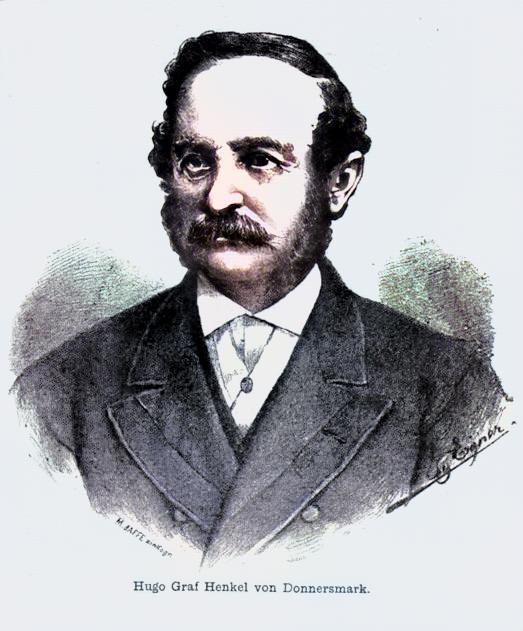
Reichsgraf Hugo Henckel Freiher von Donnersmarck
Gróf Henckel v mladosti sám jazdil, väčšinou prekážkové preteky, na vroclavských a iných provinčných mítingoch, a stretol sa aj so svojím súčasníkom, grófom Móriczom Sándorom(preslávil sa nebezpečnými kúskami na koňoch), na tejto krkolomnej dráhe, aj on bol taký vášnivý a odvážny kočiš, ktorý so svojím štvorzáprahom robil skutočné steeplechase cez priekopy a kríky.
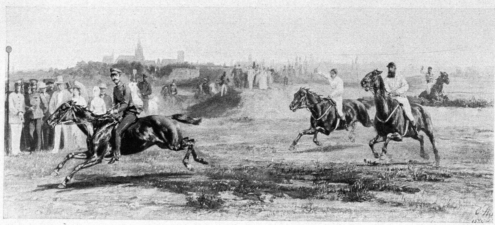
Na obr. mladý 24 ročný Hugo Henckel ako jockey na pretekoch v roku 1835 v Breslau(Vroclav). Gróf tu preteká na koňovi Cachucha na treťom mieste.(podľa akvarelu od C. Steffecka)
O grófovi sa hovorilo aj ako o veľkom silákovi. "Mal obrovskú fyzickú silu; rukami lámal železné podkovy a na vystretých rukách a pleciach dokázal uniesť naraz 6 ľudí na 10-15 krokov. Až do sedemdesiateho šiesteho roku života bol s malými výnimkami vždy zdravý; ešte na tohtoročných májových pretekoch sme mali šťastie s ním hovoriť, a hoci bol slabší, jeho postava bola vzpriamená, ani 80. rok mu nedokázal ohnúť oceľovú chrbticu. S ním vymrel posledný člen starých veľkých chovateľov a celou dušou športovcov (gróf Renard, gróf Sándor atď.)." (zdroj: Vadász - és Verseny-Lap, 07.10.1890)
Narodil sa 26. apríla 1811. a vo veku 2 rokov sa stal vlastníkom majetkov v meste Bytom, Sliezsko v Prusku. Zdedený majetok po svojom otcovi Karlovi Henckelovi(1784-1813), zatiaľ spravoval jeho strýko Lazarus Nepomuk. Odkedy sa stal Hugo plnoletý (23. marca 1832) až do svojej smrti 4. októbra 1890, sa neúnavne venoval správe svojich rozsiahlych poľnohospodárskych a lesných hospodárstiev, ako aj početných banských a priemyselných podnikov. V roku 1846 zdedil majetky rodiny Henckel von Donnersmarck v Korutánsku.
Dňa 1. augusta 1830 sa oženil s grófkou Laurou von Hardenberg(1812 – 1857). Z tohoto manželstva mal 4 synov
Hugo II(1832 – 1908),
Lazar IV(1835 – 1914),
Arthur(1836 – 1921),
Alfons (1840-1856)
a jednu dcéru
Lauru (1838 – 1931).
Štvrtý syn Alfons však zomrel ako 16 ročný v roku 1856. Manželka Laura zomrela nasledujúci rok.
Druhý krát sa oženil 8. januára 1859 s Laura von Kászonyi (1836 – 1905). Gróf bol šťastný v spoločnosti svojej rodiny, nielen svojej druhej starostlivej manželky, ale aj v obklopení svojich detí a vnúčat.
Ale tak, ako v rodinnom kruhu, aj v spoločnosti gróf Hugo Henckel pôsobil svojou stále veselou tvárou a pokojnou radosťou blahodarne na duševný stav všetkých, ktorí mali to šťastie s ním prichádzať do styku. V jeho blízkosti mizol smútok, človek zabudol na starosti a trápenie a znovu ožil. Tým si získal srdcia všetkých a možno oprávnene povedať: Gróf Hugo Henckel nemal nepriateľa. Preto sa po jeho smrti všeobecne hovorilo: „Dobrý gróf zomrel!“
Gróf Henckel považoval za svoju povinnosť umožniť čo najväčšiemu počtu ľudí podieľať sa na výhodách bohatstva, ktoré mu bolo dané, a to rôznymi spôsobmi. Od mladosti až do svojich posledných dní mal v sebe neobmedzenú túžbu tvoriť nové veci a poskytovať prácu. Sám sa neustále zaoberal novými nápadmi a zlepšeniami a bol tiež neúnavný pri skúmaní nových vynálezov a vylepšení každého druhu, ako aj pri podpore nových projektov. A to nielen tých, z ktorých mohol čerpať úžitok pre seba alebo svoje podniky, ale aj tých, ktoré mali slúžiť len všeobecnému blahu.
Bol štedrý, ale s vedomím, že zdedené treba zachovať, nikdy nebol márnotratný, bol nepriateľom všetkých menej slušných vášní. Jeho jediným potešením boli dostihy a poľovníctvo, a to, že sa aj pri ich vykonávaní držal ďalej od nevkusných prídavkov, ktoré sú spojené s každou vášňou, a napríklad ako dostihový jazdec nikdy nestávkoval, dokazuje, že aj pri svojich zábavách sa staval na vyššiu úroveň, než je bežné.
Charakteristický pre toto je výrok, ktorý gróf Henckel v tomto duchu kedysi adresoval dekanovi z Karlburgu, Martinovi Kürüllovi:
„Táto moja jediná vášeň ma síce stojí veľa peňazí, ale dúfam v Boha, že mi jeho milosrdenstvo bude naklonené, pretože som tým užitočný aj ľudstvu; lebo vďaka tejto mojej vášni si mnohí u mňa nájdu prácu, a tým aj obživu.“ (zdroj: Rakúsko-Uhorská Revue zväzok 13, rok 1892)
Smrť grófa Huga Henckela
V posledných rokoch už zrejme gróf nemal dosť síl na vedenie svojej veľkej dostihovej stajne. A tak sa zaoberal aj myšlienkou, že ju zruší. Ale ako veľký dobrodinec chudobných a ľudí v núdzi, myšlienku o zrušení tejto stajne zanechal. Bál sa hlavne o zamestnancov, ktorí tam pre neho pracovali, aby nestratili prácu.
09.10.1890 - Neuigkeits-Welt-Blatt (Provinz-Ausgabe/Land-Ausgabe).
Smútočný obrad grófa Henckel-Donnersmarcka
V paláci na ulici Weihburggasse vo Viedni sa 6. dňa popoludní uskutočnilo požehnanie tela zosnulého grófa Huga Henckela baróna von Donnersmarcka, ktorý zomrel 4. dňa v 79. roku života. Na slávnostnom požehnaní, ktoré vykonal farár kostola sv. Augustína, dvorný kaplán Dr. Schneider, boli prítomní okrem všetkých členov grófskej rodiny z Rakúska a Nemecka aj: knieža Edmund Batthyany-Strattmann, gróf Eugen Kuusty, gróf Nikolaus Eszterhazy, gróf Apponni, profesor von Dittel a taktiež delegácia obce Karlburg so starostom.
V slávnostnom pohrebnom koči "Piety" bola rakva, nasledovaná dvoma vozmi s kvetmi, prevezená cez okruh na Južnú stanicu, aby mohla byť prevezená do Wolfsbergu. Zosnulý gróf Hugo Henckel-Donnersmarck, známy ako veľký dobrodinec chudobných a núdznych, sa živo zaujímal aj o chov koní a na všetkých väčších dostihoch bolo možné vidieť kone Henckel-Donnersmarckovcov. Gróf Hugo Henckel, ktorý vlastnil veľmi veľkú stajňu dostihových koní, sa v poslednom čase opakovane zaoberal myšlienkou, že ju zruší, avšak od tohto zámeru vždy upustil, pretože sa obával, že ľudia, ktorí by tým prišli o svoje miesta, by len ťažko našli podobné zamestnanie. Pod názvom: "Pán zámku vo Wolfsbergu" budeme o zosnulom písať ďalej v 3. dodatku.
Hlava rodu Henckel von Donnersmarck, gróf Hugo Henckel von Donnersmarck, zomrel dnes (4.10.1990) ráno po 9. hodine vo svojom Viedenskom paláci na rohu ulíc Weihburggasse a Parkring vo veku 79 rokov. Gróf Henckel bol pred niekoľkými týždňami operovaný profesorom Dittelom, avšak počas rekonvalescencie pri prechádzke nachladol, čo nakoniec viedlo k jeho smrti, hoci sa mu profesor Dittel venoval s najväčšou starostlivosťou a k jeho lôžku bol opakovane prizvaný aj profesor Schweninger. (zdroj: Die Presse,05.10.1890)
05.10.1890 - Die Presse.
Hlava rodu Henckel von Donnersmarck, gróf Hugo Henckel von Donnersmarck, zomrel dnes ráno po 9. hodine vo svojom paláci na rohu ulíc Weihburggasse a Parkring vo veku 79 rokov. Gróf Henckel bol pred niekoľkými týždňami operovaný profesorom Dittelom, avšak počas rekonvalescencie sa pri prechádzke nachladol, čo nakoniec viedlo k jeho smrti, hoci sa mu profesor Dittel venoval s najväčšou starostlivosťou a k jeho lôžku bol opakovane prizvaný aj profesor Schweninger.
Arcibiskup Bruicha mu udelil sviatosti pre umierajúcich. Pápež dal chorému grófovi Henckelovi pred niekoľkými dňami telegraficky udeliť svoje požehnanie. Gróf bol až do svojich posledných chvíľ pri vedomí a ešte z lôžka osobne nariadil vyzdobenie svojho paláca s veľkou fasádou do ulice Ringstraße pri príležitosti príchodu nemeckého cisára do Viedne.
Gróf Henckel, slobodný pán z Donnersmarcku, sa narodil 26. apríla 1811 a keďže jeho otec zomrel len niekoľko rokov po jeho narodení, po dosiahnutí plnoletosti naňho prešli fideikomisné panstvá Beuthen (Bytom) so štyrmi rytiermi statkami, alodiálne panstvo Siemianowitz (Siemianowice) tiež so štyrmi rytiermi statkami, ako aj tri ďalšie alodiálne rytierstva – spolu tridsať sídiel v Pruskom Sliezsku.
Okrem toho vlastnil gróf Hugo Henckel v Korutánsku panstvá Wolfsberg a St. Leonhard so šiestimi statkami a hrad Karlburg v Uhorsku. Svoj bývalý majetok v Štajersku, kde vlastnil v rokoch 1864–1866 železiarne, vtedy predal Štajerskej železiarskej priemyselnej spoločnosti, po tom, čo tam nechal vyrobiť prvé pancierové dosky v Rakúsku.
V oblasti priemyslu zohrával gróf Henckel významnú úlohu ako vlastník veľkých závodov v Sliezsku a Korutánsku. Naopak, v politickom živote nikdy verejne nevystupoval.
Gróf bol najprv ženatý s grófkou Laurou z Hardenbergu, z tohto manželstva pochádza súčasný držiteľ majorátu, gróf Hugo Henckel von Donnersmarck. Po smrti prvej manželky sa gróf oženil s Laurou zo Skaszonyiho rodu. Hlavnou vášňou zosnulého bol dostihový šport, o ktorom píšeme na inom mieste.
Šport.
Gróf Hugo Henckel, ktorý dnes zomrel vo Viedni, nebol bezdôvodne nazývaný otcom turfu. Mal rozsiahle žrebčíny plnokrvníkov v Karlburgu, ako aj v Nakle v Pruskom Sliezsku. Kone grófa Henckela, chované v druhom z menovaných žrebčínov, mohli reprezentovať modro-biele pruhy aj v tých dostihoch v Nemecku, ktoré boli pre rakúsko-uhorské kone uzavreté, a vďaka tomu boli Henckelove farby v predošlých rokoch v nemeckých dostihoch veľmi často zastúpené.
Gróf Henckel bol veľkým zástancom inbrídingu (príbuzenského kríženia), ale kone z grófovho žrebčína, chované podľa princípu inbrídingu, s niekoľkými výnimkami, nedokázali na dostihovej dráhe zohrať žiadnu rolu, a čo bolo pozoruhodné, väčšina z nich boli kobyly.
Najvýznamnejším pilierom Henckelovho chovu je Aaron, ktorý po pestrej pretekárskej kariére slúži v žrebčíne v Karlburgu ako plemenný žrebec a preslávil sa najmä vďaka svojej dcére Kiralyné, slávnej šprintérke.
Rakúske derby vyhral gróf Hugo Henckel štyrikrát, a to v roku 1874 s koňom Nouman proti Hamadryade, zatiaľ čo druhý grófov kôň, Monsalu, skončil tretí; v roku 1878 s Droszvarom proti Lateranovi, v nasledujúcom roku s Picdlodom proti Künstlerin a v roku 1883 s Tartarom proti Botschafter I.
Droszvar a Tartar vyhrali grófovi Henckelovi aj severonemecké derby v Hamburgu. Henckelove kone zvíťazili aj v mnohých ďalších dostihoch v monarchii a Nemecku.
Tento rok Henckelov žrebčín predstavil niekoľko sľubných dvojročných koní, ako Sebes, Szives, Micsoda a Nini. Posledná menovaná je momentálne, napriek svojej nedávnej porážke proti Alfonsovi, na papieri najlepším dvojročným koňom v Rakúsko-Uhorsku, čo však veľa neznamená, keďže ju porazil nemecký Peter, ktorý v rebríčku najlepších dvojročných koní v susednej krajine obsadzuje až tretie miesto. Z aktívnych starších koní grófa Henckela je len nezničiteľná Kiralyné koňom prvej triedy a Angličan Gloucestershire, ktorý toto leto v Nemecku brilantne pretekal a dosiahol štyri víťazstvá, je dobrý kôň pre handicapové dostihy.
V piatok večer prišiel do Budapešti telegram, ktorý všetkým koňom nariadil vrátiť sa domov. Kone sa dnes vydali na spiatočnú cestu do Karlburgu.
12.10.1990 - Wiener Salonblatt
Telo zosnulého grófa bolo v nedeľu dopoludnia vystavené v smútočnom dome. Rodina položila prvé vence na truhlu zosnulého grófa. Do večera bolo do paláca doručených viac ako dvesto vencov. Preživší príbuzní zosnulého, grófi Hugo, Lazi a Arthur Henckel von Donnersmarck a grófka Saurma, spolu s ďalšími grófkami, pricestovali do Viedne. V priebehu dňa dorazilo rodine zosnulého grófa veľké množstvo písomných a telegrafických prejavov sústrasti, medzi nimi aj od ich cisárskych a kráľovských výsostí arcivojvodov Karola Ľudovíta, Ľudovíta Viktora, Albrechta, Viliama a Rainera.
V pondelok popoludní o 15. hodine sa v salóne paláca konala posviacka tela. Na smútočnom obrade, ktorý vykonal farár od sv. Augustína, dvorný kaplán Dr. Schneider, sa okrem všetkých členov grófskej rodiny z Rakúska a Nemecka zúčastnili: knieža Edmund Batthyányi-Strattmann, gróf Mikuláš Esterházy, gróf Eugen Kinsky, gróf Apponyi, dvorný radca profesor z Dittelu, ako aj delegácia z obce Rusovce so starostom. Kým truhlu s telom znášali dole, hrala hudobná kapela v staronemeckých krojoch smútočný pochod.
V osemzáprahovom slávnostnom voze pohrebnej služby „Pietät“ bola rakva prevezená po Ringu na Južnú železničnú stanicu, sprevádzaná dvoma vozmi s kvetmi. Pohreb sa konal vo Wolfsbergu v Korutánsku, v rodinnej hrobke.
Vydané bolo nasledovné parte:
Boha Všemohúceho potešilo, že nám nášho milovaného manžela, otca a starého otca, ríšskeho grófa Huga Henckela, baróna z Donnersmarcku, pána z Gefällu a Wesendorfu, vlastníka fideikomisu a panstva, kráľovského pruského komorníka, veľkokríž pápežského Gregoriánskeho rádu, veľkokríž Rádu Františka Jozefa, rytiera kráľovského pruského Rádu koruny a Červeného orla, dnes o 8:30 ráno po ťažkom utrpení, posilneného prijatím posledných sviatostí, vo veku 80 rokov odobral, čo týmto oznamujeme všetkým príbuzným a známym a prosíme o tichú účasť. Posviacka tela sa uskutoční v paláci, I. Weihburggasse č. 32, v pondelok 6. októbra 1890, o 15:00 hod. Pohreb sa uskutoční v rodinnej hrobke vo Wolfsbergu v Korutánsku. Sväté omše za dušu zosnulého budú čítané v pondelok 6. 10. o 10:00 dopoludnia v metropolitnom kostole sv. Štefana. Viedeň, 4. októbra 1890. Ríšska grófka Laura Henckelová von Donnersmarcková, rodená Kaszonyi, ako smútiaca vdova. Ríšsky gróf Hugo Henckel von Donnersmarck, ríšsky gróf Lazy Henckel von Donnersmarck, ríšsky gróf Arthur Henckel von Donnersmarck, grófka Lory Saurma-Jeltsch, rodená ríšska grófka Henckelová von Donnersmarcková, ríšska grófka Wanda Henckelová von Donnersmarcková, rodená ríšska grófka Gaschin von und zu Rosenberg, ríšska grófka Mária Henckelová von Donnersmarcková, rodená grófka von Schweinitz a Krain, ríšska grófka Eleonóra Henckelová von Donnersmarcková, rodená grófka Schaffgotich, ako deti, a zároveň v mene všetkých vnukov a pravnukov.
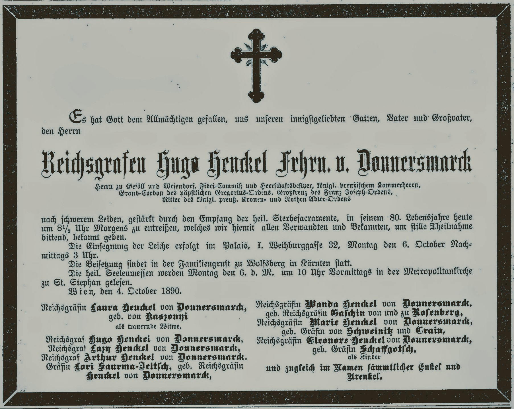
nekrológ uverejnený v novinách "Das Vaterland" 6.10.1990
Preklad textu nekrológu.
Ríšskeho grófa Huga Henckela z Donnersmarcku,
pána z Wesendorfu, držiteľa fideikomisu a panstva, kráľovského pruského komorníka, nositeľa veľkokríža pápežského Rádu Gregora Veľkého, komandéra Rádu Františka Jozefa, rytiera kráľovského pruského Rádu koruny a Čierneho orla,
ktorý nás po ťažkom utrpení, posilnený prijatím svätých sviatostí umierajúcich, opustil dnes ráno o 8. hodine vo svojom 80. roku života. Túto smutnú správu týmto oznamujeme všetkým príbuzným a známym a prosíme o tichú sústrasť.
Požehnanie zosnulého sa uskutoční v paláci na adrese I., Weihburggasse 32, v pondelok 6. októbra o 15:00 popoludní. Pohreb sa uskutoční v rodinnej hrobke vo Wolfsbergu v Korutánsku. Sväté omše za dušu zosnulého budú slúžené v pondelok 6. októbra o 10:00 dopoludnia v metropolitnom chráme sv. Štefana vo Viedni.
Viedeň, 4. októbra 1890
Ríšska grófka Laura Henckel z Donnersmarcku, rod. von Haszonni, trúchliaca vdova,
Ríšsky gróf Hugo Henckel z Donnersmarcku,
Ríšsky gróf Lazy Henckel z Donnersmarcku,
Ríšsky gróf Arthur Henckel z Donnersmarcku,
Grófka Lori Saurma-Peltsch, rod. ríšska grófka Gentel z Donnersmarcku,
Ríšska grófka Wanda Henckel z Donnersmarcku, rod. ríšska grófka Gashin z rodu Rosenberg,
Ríšska grófka Marie Henckel z Donnersmarcku, rod. grófka von Schweinik und Crain,
Ríšska grófka Eleonore Henckel z Donnersmarcku, rod. grófka Schaffgotsch,
ako deti,
a zároveň v mene všetkých vnukov a pravnukov
11.10.1890 - Nekrológ - Lavantthaler Bote.
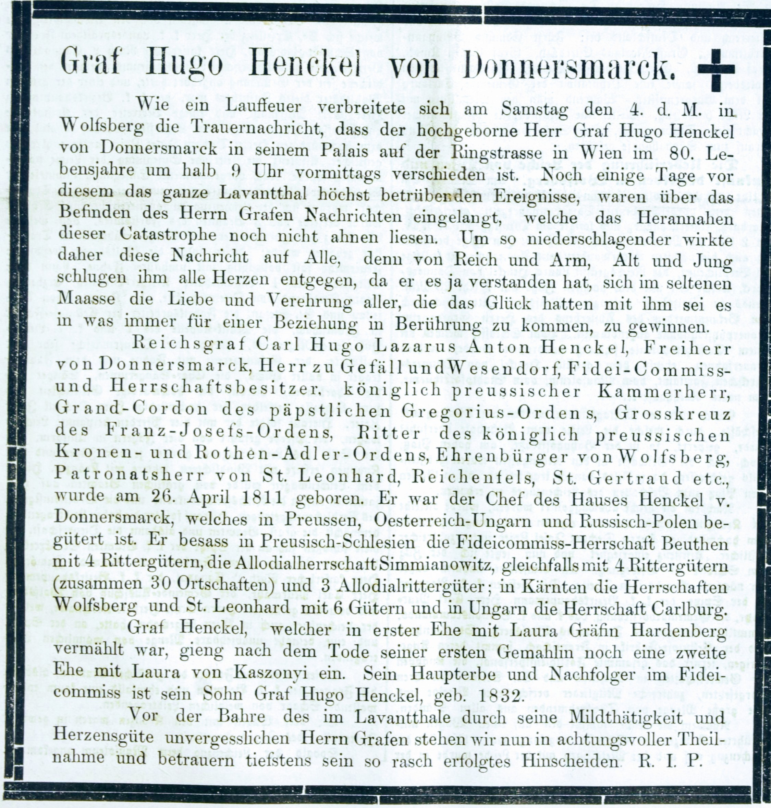
V sobotu 4. tohto mesiaca sa vo Wolfsbergu rozšírila smutná správa, že vznešený gróf Hugo Henckel von Donnersmarck zomrel o 8:30 ráno vo svojom paláci na Ringstrasse vo Viedni vo veku 80 rokov. Niekoľko dní pred touto udalosťou, ktorá hlboko zarmútila celé údolie Lavanttal, prišla správa o grófovom zdraví, ktorá nenaznačovala blížiacu sa katastrofu. Táto správa mala preto o to deprimujúcejší účinok na všetkých, bohatých aj chudobných, mladých aj starých, všetky srdcia bili pre neho, pretože sa mu v zriedkavej miere podarilo získať si lásku a úctu všetkých, ktorí mali to šťastie prísť s ním do kontaktu, akýmkoľvek spôsobom.
Ríšsky gróf Carl Hugo Lazarus Anton Henckel, barón von Donnersmarck, pán z Gefäll a Wesendorf, majiteľ fideikomisu a panstva, kráľovský pruský komorník, držiteľ veľkokríža Pápežského rádu sv. Gregora, veľkokríža Rádu sv. Františka Jozefa, rytier Kráľovského pruského rádu Koruny a Červeného orla, čestný občan Wolfsbergu, patrón sv. Leonharda, Reichenfelsu, sv. Gertraudy atď., sa narodil 26. apríla 1811. Bol hlavou rodu Henckelovcov von Donnersmarck, ktorý vlastnil majetky v Prusku, Rakúsko-Uhorsku a ruskom Poľsku. V pruskom Sliezsku vlastnil dedičné panstvo Beuthen so štyrmi panstvami, alodiálne panstvo Simmianowitz, tiež so štyrmi panstvami (spolu 30 dedín) a tri alodiálne panstva; v Korutánsku panstva Wolfsberg a St. Leonhard so šiestimi panstvami; a v Maďarsku panstvo Carlburg.
Gróf Henckel, ktorého prvé manželstvo bolo s Laurou, grófkou Hardenbergovou, vstúpil do druhého manželstva s Laurou von Kaszonyi po smrti svojej prvej manželky. Jeho hlavným dedičom a nástupcom v dedičskom majetku je jeho syn, gróf Hugo Henckel, narodený v roku 1832.
Stojíme teraz pred rakvou pána grófa, ktorý bol v údolí Lavanttal nezabudnuteľný pre svoju charitu a láskavosť, v úctivej sústrasti a hlboko smútime nad jeho náhlym úmrtím.
V roku 1890 pobýval do 3. septembra na zámku Rohrfels na Koralpe, no úľavu na svojich milovaných horách nenašiel. Dňa 7. septembra sa naposledy objavil na strelnici vo Wolfsbergu a aktívne sa ešte zúčastnil streľby na terč.
8. septembra odcestoval do Viedne, aby sa poradil s lekárskymi kapacitami, ktoré mu však nedokázali pomôcť, a 4. októbra gróf navždy zatvoril oči.
Gróf mal pred smrťou operáciu a mal sa z nej zotavovať, no na prechádzke prechladol, čo mu spôsobilo úmrtie. Rozlúčka s grófom vo Viedni a pohreb vo Wolfsbergu boli veľkolepé. Bohatí aj chudobní ľudia mali radi grófa a tak sa s ním prišli rozlúčiť davy ľudí. Prišla aj delegácia z Rusoviec na čele so starostom.
Dňa 8. októbra 1890 bol gróf Hugo Henckel pochovaný v mauzóleu, ktoré si dal postaviť na výbežku hory s výhľadom na celé Lavanttalské údolie, oproti vznešene stojacemu zámku Wolfsberg.
Toto mauzóleum bolo navrhnuté slávnym architektom Stülerom v taliansko-románskom štýle a ozdobené sarkofágom jeho prvej manželky, dielom presláveného sochára Kissa.
Ako malý raj pôsobí táto honosná stavba, obklopená vencami vysokých, vážnych smrekov, ktorých utíšený šum dojímavo pôsobí na návštevníka a v spojení s nádherou architektonického slohu v ňom vyvoláva úprimnú zbožnú úctu, ktorá nás vždy obklopí tam, kde sa architektonická krása spája so spomienkou na dobrého a ušľachtilého človeka. (zdroj: Rakúsko-Uhorská Revue zväzok 13, rok 1892)
14.10.1890 - Klagenfurter Zeitung.
Takúto veľkolepú smútočnú rozlúčku a pohrebný sprievod, aký sa konal predvčerom na počesť zosnulého grófa Huga Hendela Donnersmarcka, Wolfsberg ani celé Lavantské údolie už dlho nevidelo. Na tento monumentálny smútočný obrad sa zišla polovica údolia.
Po tom, čo telo zosnulého 7. tohto mesiaca dorazilo z Viedne, bolo prevezené na grófovo obľúbené miesto, na prekrásny zámok, kde ho vystavili v kaplnke. Nasledujúci deň, 8. tohto mesiaca, sa konal prenos pozostatkov toho, komu naše mesto a takmer celé horné Lavantské údolie vďačí za tak veľa. Vďačí mu za výstavbu zámku, za jeho poľnohospodárske a priemyselné snahy, ako aj za dlhoročné letné pobyty na jeho obľúbenom sídle. Telo bolo prenesené do rovnako nádherne umiestnenej hrobky, ktorá je zdobená vznešenými umeleckými dielami.
Veľkolepá účasť na smútočnej rozlúčke zodpovedala dôležitosti zosnulého pre mesto a údolie. Jeho excelencia, krajinský prezident barón von Schmidt-Babiérom, prišiel z hlavného mesta, aby vzdal poslednú poctu mužovi, ktorý bol jedným z prvých rytierov, poľnohospodárov a priemyselníkov našej krajiny, a ktorý si tu z lásky k nášmu krásnemu údoliu vytvoril prekrásny a umelecky hodnotný domov. Ako zástupca Obchodnej komory sa objavil jej tajomník, p. Nath. Canaval. Starosta Wolfsbergu, pán Herbert Merch nawe, sa už ako zástupca mesta zúčastnil smútočných obradov vo Viedni.
Pre slávnostné požehnanie bola rakva prevezená do zámockej záhrady pred kaplnku. Cirkevný obrad, ktorý viedol vznešený dekan Zojer s asistenciou, pôsobil mimoriadne dojímavo, pretože sa konal uprostred veľkých diel zosnulého, na ktoré sa jeho oko, teraz už mŕtve, tak často s radostným potešením pozeralo.
Za zvonenia zvonov z údolia a z výšin a za vážnych smútočných melódií plukovej hudby sa smútočný sprievod pohol k nádhernej hrobke. Pred jej vchodom dekan Zojer predniesol dojímavý prejav na rozlúčku so zosnulým. Keď mužský spevácky zbor z Wolfsbergu dospieval smútočný zbor, rakva, nasledovaná rodinnými príslušníkmi a duchovnými, bola prenesená do hrobky. Zvuky zvonov utíchli a jesenný vietor fúkal padajúce listy na posledný domov zosnulého. „Všetko pozemské je len podobenstvom!“
11.10.1890 - Lavantthaler Bote
Vystavenie a požehnanie tela vo Viedni.
Vystavenie tela zosnulého grófa Huga Henckela von Donnersmarcka sa konalo v nedeľu dopoludnia v smútočnom dome, v paláci zosnulého. Prvé vence na rakvu položila smútiaca vdova, ríšska grófka Laura Henckel von Donnersmarck, rodená von Kaszony, a synovia, ríšski grófi Hugo, Lazy a Arthur Henckel von Donnersmarck, ktorí dorazili v priebehu dňa. Ďalej veniec položila dcéra, grófka Lory Saurma-Jeltsch, rodená ríšska grófka Henckel von Donnersmarck, a nevesty Wanda, Marie a Eleonore, ríšske grófky Henckel von Donnersmarck. Do nedeľňajšieho večera bolo v paláci odovzdaných viac ako dvesto vencov. V priebehu nedele dorazilo rodine zosnulého grófa veľké množstvo písomných a telegrafických prejavov sústrasti, vrátane kondolenčného telegramu od ich cisárskych a kráľovských výsostí arcivojvodov Carla Ludwiga, Ludwiga Victora, Albrechta, Wilhelma a Rainera a od obecného výboru mesta Wolfsberg. Po svätej omši za dušu zosnulého, ktorá sa konala v pondelok 6. dňa o 10. hodine dopoludnia v Dóme sv. Štefana vo Viedni, sa o 3. hodine popoludní v paláci uskutočnilo slávnostné požehnanie. Smútočnému obradu, ktorý vykonal dôstojný pán Schneider, farár z kostola sv. Augustína, dvorný kaplán Dr. Schneider, sa okrem všetkých členov ríšskej grófskej rodiny z Rakúska a Nemecka zúčastnili aj: knieža Edmund Batthyány Strattmann, gróf Nicolaus Esterházy, gróf Eugen Kumeti, gróf Apponni, Ernst Herbert-Rechnawe, starosta Wolfsbergu, ako aj delegácia obce Carlburg so starostom. Keď znášali kovovú rakvu s telom, hrala hudobná kapela v staronemeckom kroji smútočný pochod. Rakva bola potom prevezená po okruhu na Južnú stanicu.
Prevoz tela z Viedne a príchod do Wolfsbergu.
V pondelok o 7. hodine večer sa uskutočnil prevoz tela s predpísanými preventívnymi opatreniami cez Graz, Marburg, Unterdranburg a telo dorazilo v utorok 7. dňa o 2. hodine a 11 minút do Wolfsbergu. Vo vlaku boli aj najbližší príbuzní s výnimkou vdovy po zosnulom, ríšskej grófky Laury Henckel von Donnersmarck, ktorá dorazila až nasledujúcim vlakom o 7. hodine a 23 minút večer do Wolfsbergu. Wolfsberg prijal smútočnú atmosféru hneď po tom, ako sa dozvedel o úmrtí grófa. Z paláca, ktorého vchod bol ozdobený čiernym drapériou, viali smútočné zástavy, rovnako ako z grófskeho lesníckeho úradu Henckel von Donnersmarck, z mauzólea, z veže mestského kostola, z novej radnice atď.
Hneď popoludní v utorok boli zatvorené všetky obchody, okolo ktorých sa prenášalo telo z vlakovej stanice, ako napríklad na Stančnej ulici a na Vysokom námestí, ale aj obchody v bočných uličkách boli väčšinou zatvorené, pretože sa všetci snažili získať miesto v týchto uličkách, aby mohli sledovať smútočný sprievod.
Po vyložení tela z vagónu bola rakva naložená s vencami na vlastný voz a požehnaná dôstojným pánom dekanom Josefom Beyerom za početnej asistencie duchovných a sprievod sa dal do pohybu smerom k zámku. Okrem najbližších príbuzných sa na ňom zúčastnili: miestni cisárski a kráľovskí úradníci na čele s cisárskym a kráľovským okresným hlavným úradníkom pánom Carlom Murmane, obecné zastupiteľstvo, cisárske a kráľovské staničné veliteľstvo, všetci úradníci z lesného úradu Wolfsberg, St. Leonhard a celulózky vo Frantschach spolu s ich rodinami, ďalej všetok lesnícky personál, baníci z baníckych závodov vo Wiesenau a St. Stefan so svojimi predstavenými, početní členovia rôznych spolkov a veľké množstvo účastníkov zo všetkých vrstiev spoločnosti. Keď telo spolu s vencami prevezenými na voze dorazilo do zámku, smútočný sprievod sa rozpustil a kovová rakva s telom bola umiestnená v čiernej drapériou vyzdobenej zámockej kaplnke, ktorá bola vyzdobená mnohými exotickými rastlinami a kvetmi. Rakva bola pokrytá a obklopená nespočetným množstvom vencov.
Lesnícky personál a baníci držali celú noc a v stredu pri tele stráž, zatiaľ čo členovia miestneho ctihodného kapucínskeho konventu sa striedali na modlitebnej stolici a modlili sa za spásu zosnulého.
Keďže bol verejnosti umožnený vstup do zámku a zámockej kaplnky, už v skorých ranných hodinách v stredu prichádzali do zámockej kaplnky účastníci zo všetkých vrstiev spoločnosti, aby sa tam v tichosti pomodlili. Okolo poludnia bol nápor čoraz väčší, pretože sa sem hojne zišli aj vidiečania z okolitých a dokonca aj zo vzdialenejších obcí, takže aj v samotnom Wolfsbergu bol zreteľne badateľný čulý pohyb ľudí. Ešte silnejší bol nápor popoludní, keď po 3. hodine prišli korporácie, spolky a veľký počet smútiacich, ktorí boli v grófskych službách, a nesmierne početná verejnosť.
Smútočný sprievod.
O trištvrte na 4 bola rakva zdvihnutá v zámockej kaplnke a obklopená dvojradom(špalierom) poľovníkov, ku ktorým sa potom pridali baníci s vencami. Rakva bola položená pred zámockou kaplnkou. Hlboký dojem sa zmocnil zhromaždených, na znamenie úcty sa sňali pokrývky z hláv. Krátko pred 4. hodinou vyšla zo zámku smútiaca vdova, ríšska grófka Laura Henckel von Donnersmarck, obklopená príbuznými, ku ktorým sa pridali Jeho excelencia, krajinský prezident Freiherr von Schmidt-Zabiérow, cisársky radca L. Canaval ako zástupca krajinského múzea, ktorého bol zosnulý od založenia členom a jedným z najväčších dobrodincov tohto ústavu, cisársky a kráľovský okresný hlavný úradník pán Carl Murmayr a niektorí zástupcovia aristokracie. Následne vykonal dôstojný pán dekan Josef Zojer za početnej asistencie duchovných slávnostné požehnanie tela. Po požehnaní zaspieval wolfsberský mužský spevácky spolok dojímavý smútočný chorál, po ktorom sa začal formovať smútočný sprievod. Sprievod otvorili 3 úradníci lesného úradu, z ktorých jeden niesol kríž a smútočný flór, ktorý visel z kríža. Za nimi nasledovali takmer všetci členovia wolfsberského dobrovoľného hasičského zboru so zahalenou zástavou, potom mnohí členovia cisárskeho a kráľovského zväzu vojakov z Korutánska, arcivojvoda František Ferdinand Rakúsky-Este, baníci z Wiesenau a St. Stefan, robotníci z celulózky vo Frantschach, hudobná kapela cisárskeho a kráľovského 7. pešieho pluku, ktorá vynikajúco hrala smútočné pochody, spevácky spolok so zástavou a vlajkonosičom(zástavníkom) v plnom odeve, zboristky, speváci a zboristi, potom dôstojné duchovenstvo a na jeho konci dôstojný pán dekan Josef Zojer. Potom nasledoval pohrebný voz so štyrmi koňmi, ktoré viedli štyria poľovníci v uniforme. Po stranách pohrebného voza kráčali štyria poľovníci s fakľami a štyria baníci s vencami. Za pohrebným vozom niesli grófski úradníci na dvoch zamatových vankúšoch ríšsku barónsku korunu a insignie zosnulého. Potom nasledovali vznešení smútiaci, po nich grófski úradníci a napokon služobníctvo. Za nimi nasledovali na čele s cisárskymi a kráľovskými úradníkmi, jeho excelencia, krajinský prezident Freiherr von Schmidt Zabiérow, cisársky radca A. Canaval, cisársky a kráľovský okresný hlavný úradník pán Carl Murmayr, obecný výbor z Wolfsbergu na čele so starostom pánom Ernstom Herbertom-Kerchnawe, ktorý sa zúčastnil aj smútočného obradu vo Viedni, a takmer nekonečné množstvo smútiacich mužov. Za nimi nasledovali manželky grófskych úradníkov, potom manželky cisárskych a kráľovských úradníkov a rovnako nekonečný zástup smútiacich žien.
Tri vozne s vencami boli zaradené do sprievodu v určitých intervaloch. Keď sprievod dorazil k mauzóleu, vytvorili spolky, kráčajúce vpredu, uličku pre rakvu. Keď prišiel pohrebný voz až k schodom mauzólea, rakvu z neho zložili a položili na nosidlá.
Vysokopostavení smútiaci pristúpili k strane rakvy kde boli nohy zosnulého, na čo dôstojný pán dekan Josef Zojer, stojac na schodovej podeste, rakvu pokropil svätenou vodou. Vzápätí predniesol hlboko dojímavú pohrebnú reč, v ktorej primerane vyzdvihol zásluhy zosnulého. Spevácky spolok potom zaspieval dojímavý smútočný chór; počas neho poľovníci preniesli rakvu do hrobu a uložili ju hlavou k východu, po ľavej strane rakvy zosnulej grófovej prvej manželky. Tým sa smútočný obrad, pri ktorom nejedno oko nezostalo suché, skončil. Na pohrebnom sprievode sa zúčastnilo takmer 1500 osôb, a pozdĺž lesných ciest, ktorými sprievod prechádzal, stálo iste ešte raz toľko divákov.
Slávnostné pohrebné obrady a omša sa konali vo štvrtok o pol deviatej ráno v miestnom farskom kostole za veľkej účasti obyvateľstva.
Život a činnosť grófa Huga Henckela von Donnersmarcka
Gróf Hugo Henckel von Donnersmarck bol známy predovšetkým ako športovec. Bol rovnako spätý s Nemeckom ako s Rakúskom; jeho záľuby ho však väčšinu života viazali k Rakúsku. Jeho nádherný palác na Ringstraße v rohu Weißburggasse vo Viedni obýval každoročne dlhší čas. Hoci sa neobjavoval často na verejnosti, pevne zotrvával na tradíciách aristokracie minulých desaťročí. Jeho služobníctvo bolo dokonale vycvičené – až po najnižšieho stajňového paholka – a jeho dostihová stajňa patrila celé polstoročie medzi najvýznamnejšie v Európe.
Gróf Henckel nikdy nehral politickú úlohu ani v Rakúsko-Uhorsku, ani v Prusku. Bol však výnimočný priemyselník i veľkostatkár a od mladosti ho vášnivo zaujímal šport. V polovici šesťdesiatych rokov otvoril pri Judenburgu v Štajersku bane a huty, a na svojich majetkoch v Korutánsku sa vyrábali napríklad prvé plechové strešné krytiny v Rakúsku. Tie však čoskoro predal Štajerskej železiarskej spoločnosti. Pri jeho význame sa vláda usilovala, aby si takého významného priemyselníka a zároveň džentlmena získala pre Rakúsko, hoci väčšina jeho majetkov ležala v Prusku. V tom čase mu bolo udelený Veľkokríž Rádu Františka-Jozefa.
Významnú úlohu zohral aj ako turfman (dostihový nadšenec). Už v čase, keď sa v strednej Európe iba začínali pokusy o usporadúvanie dostihov, založil vlastnú dostihovú stajňu a chov plnokrvníkov. Už v roku 1834 kúpil prvú chovnú kobylu a odvtedy zostal dostihovému športu verný celý život. Koncom tridsiatych rokov 19. storočia doviezol z Anglicka niekoľko cenných koní, ktoré sa stali základom jeho žrebčína a stajne — porovnateľnej iba s chovmi lorda Falmoutha či grófa Lagrangea. Už v roku 1838 sa jeho modro-biele farby presadili vo veľkých berlínskych únionových dostihoch, a neskôr dosiahli mnohé úspechy aj v zahraničí. Jeho kone víťazili vo všetkých významných nemeckých dostihových pretekoch, hoci hamburské derby vyhral len dvakrát. Mimoriadne sa mu darilo v Baden-Baden, kde jeho kone neraz ako jediné súperili s francúzskymi.
Veľkú cenu tam síce nikdy nezískal, ale v roku 1878 dosiahol obrovský úspech, keď jeho „Prince Giles I.“ v tzv. Goldpokal des Großherzogs dobehol do cieľa spoločne s legendárnou kobylou Kincsem, čo sa považovalo za mimoriadnu udalosť. Henckelove kone vyhrali aj Zukunftspreis päťkrát a v takmer každom roku mali umiestnenie v tomto závode. Rakúske derby vyhral už v jeho druhom ročníku (1869) s koňom Brigadier a roku 1883 s Tartarom, ktorý dokázal triumfovať v derby vo Viedni, Hamburgu i v Unione. Medzi rokmi 1880 a 1890 získal Henckel na výhrach viac než milión mariek, z toho asi 250 000 guldenov v Rakúsko-Uhorsku a 675 000 mariek v Nemecku.
Henckel sa osobne staral o vedenie svojej stajne a roky pravidelne dohliadal na ranný tréning svojich koní — často aj sám jazdil v sedle. Ako amatérsky jazdec nemohol byť žiaľ dlho činný, pretože mu to jeho vysoká váha čoskoro už neumožňovala. No stojí za zmienku, že raz vyhral preteky s prekážkami v Breslau (Wroclaw). V mladosti sa tak zaujímal o chov plnokrvníkov, že sám vydal prvé tri ročníky nemeckého dostihového kalendára.
O klusáckom športe sa nikdy veľmi nezaujímal, no pre vlastné potešenie mal vždy vynikajúce kone – ruské alebo americké – a bol výborný vozataj. Ešte pred niekoľkými mesiacmi dal zo súcitu utratiť dvoch svojich obľúbených amerických koní, „Bring“ a „Rigo“, s ktorými kedysi prešiel vzdialenosť z Lusthausu do Prátera vo Viedni za 5 minút a 58 sekúnd.
Bol mužom obrovskej telesnej sily. Ešte vo vysokom veku dokázal zdvihnúť 100 kilogramov jedným prstom zo zeme na stôl. V mladších rokoch vraj raz na panstve Siemianowitz vyniesol naraz po schodoch piatich jazdeckých dôstojníkov.
Ako vášnivý poľovník vlastnil krásne lesy s bohatou zverou najmä v Lavanttali a v Uhorsku. Tesne pred svojím odchodom do Viedne, z ktorého sa, žiaľ, vrátil už len ako zosnulý, ešte poľoval na Korutánskej hore Koralpe a opäť preukázal svoju výnimočnú streleckú presnosť.
Gróf Hugo Henckel nebol len všestranným športovcom, akému sa v jeho spoločenskom postavení vyrovnal len málokto, ale aj skutočným džentlmenom v tom najvznešenejšom zmysle slova. Spojoval v sebe vlastnosti, ktoré mu už dávno získali sympatie a úctu celej spoločnosti. To, čo urobil pre Lavanttal, zostane v pamäti všetkých jeho obyvateľov ešte dlho.
11.10.1890 - Freie Stimmen.
Pochovanie grófa Henckela.
Včera sa tu uskutočnilo mimoriadne slávnostné pochovanie zosnulého grófa Huga Henckela von Donnersmarcka. Telo zosnulého dorazilo 7. dňa a bolo v slávnostnom sprievode prenesené zo železničnej stanice do kaplnky Henckelovho zámku, kde bolo vystavené. Odtiaľ sa včera popoludní konalo pochovanie.
Slávnostné požehnanie vykonal v zámockej záhrade pred kaplnkou dekan Josef Bojer za početnej asistencie duchovenstva o jednej hodine. Následne zaspieval wolfsberský mužský spevácky spolok dojímavý smútočný chorál, po ktorom sa nekonečný sprievod dal do pohybu smerom k mauzóleu.
Hudbu zabezpečila kapela miestneho pešieho pluku, ktorá otvorila smútočný sprievod. Za ňou nasledoval wolfsberský hasičský zbor, 1. Lavantthalský spolok vojakov, baníci a robotníci z Henckelových závodov. Za rakvou, bohato ozdobenou vencami a kvetmi, kráčali rodinní príslušníci zosnulého, vrátane manželky, troch synov a dcéry. Potom nasledoval Jeho Excelencia, krajinský prezident Freiherr von Schmidt-Zabiérow, poprední predstavitelia úradov, grófski Henckelovi úradníci, obecný výbor so starostom Ernstom Herbertom, ktorý sa zúčastnil aj smútočného obradu vo Viedni, ďalej mužský spevácky spolok a mimoriadne veľký počet smútiacich z blízkeho aj ďalekého okolia, zo všetkých vrstiev obyvateľstva. Medzi nimi bol aj pán cisársky radca A. Canaval z Klagenfurtu ako zástupca Prírodovedného krajinského múzea. Nespočetné, nádherné vence boli na bohato naloženom vozíku s vencami vezené v sprievode.
Veľkolepý sprievod smútiacich ľudí na inak tak tichej lesnej ceste k mauzóleu, dojemné zvuky smútočnej hudby, sivá jesenná obloha pokrytá ponurými oblakmi, tiché šepkanie vetra v korunách stromov, padajúce lístie, a medzi tým vzdialené zvony z veží mesta a zo zámku – to všetko vytváralo mimoriadne dôstojný a dojemný obraz, ktorý bol veľmi dojímavý. Po príchode k mauzóleu bol tam bol sarkofág vynesený po schodoch, a pred vchodom predniesol dekan Zojer dojímavú smútočnú reč, po ktorej nasledovalo opätovné požehnanie. Keď mužský spevácky spolok zaspieval ešte jeden smútočný chorál, bol sarkofág prenesený do krypty, kam ho nasledovali len duchovní a rodinní príslušníci zosnulého. Týmto sa ukončila rovnako veľkolepá ako aj dôstojná smútočná slávnosť.
Žrebčín a dedičstvo
Závet ktorý gróf spísal ešte pred smrťou, obsahoval dedičné právo na hnuteľný aj nehnuteľný majetok najmä pre troch synov, Huga, Lazarusa a Arthura. Boli zohľadnené aj dcéra Laura a jeho dve nevlastné sestry. V dedičstve myslel aj na svoje služobníctvo a chudobných.
Manželka Laura v testamente spomenutá nebola a bola odkázaná na svoj majetok, ktorého súčasť bolo aj panstvo Rusovce(Karlburg). To nebolo predmetom dedenia, keďže ho už predtým gróf daroval manželke Laure. Grófka Laura Henckel rodená Kászonyi bola majiteľkou panstva a žrebčína. Vlastnila pozemky nielen v Rusovciach ale aj v Čunove a Gajc.
25.10.1890 - Testament grófa Huga Henckela von Donnersmarck.
Testament grófa Huga Henckela von Donnersmarck
Testament, ktorý zosnulý gróf Hugo Henckel von Donnersmarck zanechal, bol otvorený vo Viedni za prítomnosti dlhoročného právneho priateľa zosnulého, notára Dr. Homanna, ako aj za prítomnosti grófky-vdovy a všetkých ostatných členov rodiny. O podstatných ustanoveniach tohto posledného želania grófa sme sa dozvedeli nasledovné:
Za univerzálnych dedičov celého hnuteľného a nehnuteľného majetku boli určení traja synovia grófa Huga Henckela von Donnersmarcka. Sú to, podľa poradia uvedeného v testamente, grófi Hugo, ktorý zároveň preberá fideikomis, Lazarus a Arthur. Ovdovená dcéra, Lory grófka Saurma-Jeltsch, je odkázaná na povinný dedičský podiel. Obe nevlastné sestry grófa, grófky Anna Sternberg a Marie Sprinzenstein, boli tiež zohľadnené. Prvá z nich dostáva ročnú rentu 1000 toliarov, druhá pre „spomienku“, ako sa uvádza v testamente, jednorazovú sumu 10 000 ríšskych mariek.
Okrem toho sa v testamente nachádzajú aj rôzne odkazy pre chudobných a služobníctvo. Najprv sa chudobným, ktorí žijú v cirkevných patrónskych obciach hornosliezskych panstiev grófa Huga Henckela von Donnersmarcka, odkazuje celková suma 20 000 ríšskych mariek. Chudobní z cirkevného patronátu Wolfsberg, do ktorého patria obce St. Leonhard, Reichensfels a St. Gertraud, sú obdarovaní sumou 6000 zlatých. Pre služobníctvo, pokiaľ patrilo do grófovej domácnosti až do jeho smrti, boli určené tieto sumy: komorník a dvaja sluhovia dostávajú doživotne vyplácanú mzdu, akú dostávali naposledy, kuchár má ročnú rentu 400 zlatých a všetci ostatní sluhovia dostanú ročnú mzdu.
Žiadne iné odkazy sa nenašli. Viedeň, Tarnowitz a Karlburg, miesta, kde zosnulý okrem Wolfsbergu každoročne určitý čas pobýval, neboli v tomto smere do poslednej vôle zahrnuté. Ako vykonávateľka testamentu má pôsobiť grófka-vdova a ako jej zástupca notár Dr. Homann. Zanechaný majetok grófa Huga Henckela von Donnersmarcka sa odhaduje na viac ako tridsať miliónov mariek.
Z majetku je však potrebné vyňať panstvo Karlburg v Uhorsku, pretože gróf ho daroval svojej druhej manželke, terajšej vdove, už za života. V testamente sa grófka výslovne nespomína, je odkázaná na svoj vlastný, značne veľký súkromný majetok, ktorý sa vďaka štedrosti jej manžela výrazne zväčšil.
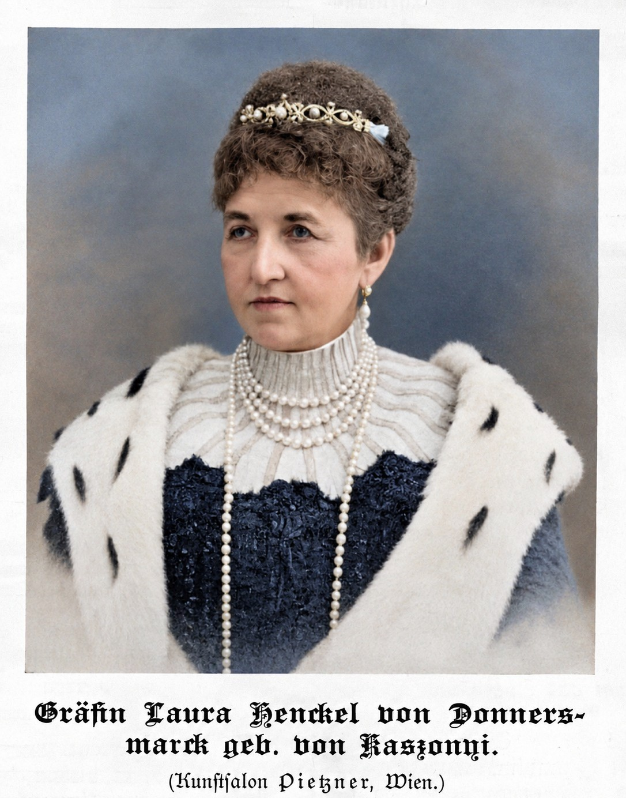
Grófka Laura Henckel von Donersmarck rod. Kászonyi.
Dôležité pre žrebčín ale bolo že po smrti grófa Huga Henckela nezanikol, ale jeho činnosť pokračovala ďalej. Avšak už nedosahoval také úspechy ako za čias grófa.
Po smrti grófa Huga v roku 1890 bola dostihová stajňa v Carlburgu rozdelená medzi ovdovenú grófku a troch synov Huga, Arthura a Lazyho. Synovia prevzali kone v tréningu, zatiaľ čo tie, ktoré ešte neštartovali na dráhe, pripadli grófke. Žrebčín bol tiež rozdelený. Polovica, ktorá pripadla synom, bola takmer kompletne, vrátane veľmi sľubného hlavného plemenníka Pancake, predaná grófovi St. Genois, zatiaľ čo grófka Laura Henckel si ponechala svoje kobyly a dvoch žrebcov Aarona a Gloucestershire v Hugo-Telepi.
Na základe tejto dohody bude väčšina carlburgských dostihových koní, ktoré sú v starostlivosti R. Heatha, spolu trinásť, štartovať vo farbách grófa Arthura Henckela. Dostihová stajňa ovdovenej grófky je teda veľmi malá, a preto možno jej vášnivý záujem o šport považovať za šťastnú priazeň osudu, že z jej troch dostihových koní si dvaja, Mameluck a Suliman, vydobyli miesto medzi lepšími trojročnými koňmi roku 1893. (zdroj: Wrangel, C. G. 1898, Maďarský chov koní slovom a obrazom.)
"V roku 1875 sa potom žrebčín presťahoval do Karlburgu, kde sa nachádza dodnes a spravuje ho vdova po zosnulom grófovi, ríšska grófka Laura, rodená von Kászonyi, majiteľka Karlburgu. Aj druhý a najmladší syn grófa Huga Henckela, grófi Lazy a Arthur, sa starajú o to, aby farby najvýznamnejšieho chovateľa plnokrvníkov Rakúsko-Uhorska a Nemecka nezmizli z dostihových dráh s jeho smrťou. V posledných rokoch totiž gróf Hugo Henckel opäť prevádzkoval chov plnokrvníkov nielen vo svojom hlavnom žrebčíne v Karlburgu, ale aj v Hornom Sliezsku – v Nakle pri Tarnowitz (Tarnowskie Góry), kde mal gróf dlhé roky svoj dostihový podnik, ešte predtým, než ho presťahoval do Karlburgu.
Gróf sa rozhodol založiť tento žrebčín v Naklo v dôsledku vylúčenia rakúsko-uhorských koní z mnohých veľkých dostihov v Prusku. Gróf Lazy si však vybral Naklo za svoje sídlo, nechal si tam prestavať poľovnícky zámok, ktorý postavil jeho otec, na panské sídlo, rozšíril tamojší žrebčín a spojil ho s tým, ktorý mal doteraz v Romolkwitz (Ramułtowice) v Sliezsku." (zdroj: Rakúsko-Uhorská Revue zväzok 13, rok 1892)
"Kone grófa Henckela, chované v žrebčíne v Nakle, mohli reprezentovať modro-biele pruhy aj v tých dostihoch v Nemecku, ktoré boli pre rakúsko-uhorské kone uzavreté, a vďaka tomu boli Henckelove farby v predošlých rokoch v nemeckých dostihoch veľmi často zastúpené." (zdroj: Die Presse.,05.10.1890)
Bratia Arthur a Lazy(Lazarus) Henckel naprv mali spoločnú stajňu a na jeseň roku 1892 si gróf Lazy založil vlastnú v Nakle.
08.01.1893 - Allgemeine Sport-Zeitung
Gróf Lazy Henckel má teraz vlastnú stajňu, po tom, čo sa minulú jeseň rozišiel so svojím bratom Arthurom. Kone grófa L. Henckela, ktoré sa, dúfajme, objavia aj na našich dráhach, sú v Nacli v Pruskom Sliezsku pod dohľadom R. A. Waugha, bratranca trénera Festeticsa. Stajňa zahŕňa štrnásť koní, z ktorých šesť patrí do druhej vekovej kategórie.
---------------
GRAF LAZY HENCKEL hält jetzt einen selbst-ständigen Rennstall, nachdem er im vergangenen Herbste die Verbindung mit seinem Bruder Arthur gelöst hat. Die Pferde des Grafen L. Henckel, die hoffentlich auch auf unseren Bahnen erscheinen werden, befinden sich in Naclo in Preussisch-Schlesien unter der Obhut von R. A. Waugh, einem Vetter des Festetics'schen Trainers. Das Lot umfasst vierzehn Pferde, von denen sechs der zweiten Altersclasse angehören.
Posledným trénerom koňí zosnulého grófa Huga Henckela bol John Kemp. Ten potom prešiel pod stajňu syna grófa Arthura Henckela a tak mal na srarosti už menej koní. S koňmi Huga Henckela dosiahol viacero úspechov.
04.01.1891 - Allgemeine Sport-Zeitung.
John Kemp, ktorý si u nás rýchlo získal skvelú reputáciu vďaka veľkým úspechom, ktoré v minulom roku dosiahol s koňmi zosnulého grófa Henckela, má tento rok pod dohľadom oveľa menší počet koní, keďže teraz pripravuje iba kone, ktoré sa stali majetkom grófa Arthura Henckela, ale faktom zostáva, že Kemp má aj v nadchádzajúcej dostihovej sezóne opodstatnené očakávanie bohatých cien.
—---
John Kemp, der sich durch die grossen Erfolge, die er im Vorjahre mit den Pferden des verstorbenen Grafen Henckel erzielte, bei uns rasch einen glänzenden Ruf erwarb, hat zwar heuer ein viel kleineres Lot unter seiner Aufsicht, indem er jetzt nur die in das Eigenthum des Grafen Arthur Henckel übergegangenen Pferde vorbereitet, doch ist dasselbe dass Kemp auch in der bevorstehenden Rennsaison wohlbegründete Anwartschaft auf reiche Preise besitzt.
Stav a zoznam kobýl v roku 1893.
zdroj: Maďarský chov koní slovom a obrazom. Stuttgart: Schickhardt & Ebner (Konrad Wittwer), 1898.
Po smrti grófa Huga v roku 1890 bola dostihová stajňa v Carlburgu rozdelená medzi ovdovenú grófku a troch synov Huga, Arthura a Lazyho. Synovia prevzali kone v tréningu, zatiaľ čo tie, ktoré ešte neštartovali na dráhe, pripadli grófke. Žrebčín bol tiež rozdelený. Polovica, ktorá pripadla synom, bola takmer kompletne, vrátane veľmi sľubného hlavného plemenníka Pancake, predaná grófovi St. Genois, zatiaľ čo grófka Laura Henckel si ponechala svoje kobyly a dvoch žrebcov Aarona a Gloucestershire v Hugo-Telepi.
Na základe tejto dohody bude väčšina carlburgských dostihových koní, ktoré sú v starostlivosti R. Heatha, spolu trinásť, štartovať vo farbách grófa Arthura Henckela. Dostihová stajňa ovdovenej grófky je teda veľmi malá, a preto možno jej vášnivý záujem o šport považovať za šťastnú priazeň osudu, že z jej troch dostihových koní si dvaja, Mameluck a Suliman, vydobyli miesto medzi lepšími trojročnými koňmi roku 1893.
V žrebčíne Hugo-Telepi sa v súčasnosti nachádzajú tieto chovné kobyly:
Neudau, hnedá kobyla, nar. 1872, po Mercury z Diany (po Hartneitstein). Matka Tartar, Immielow a Nini.
Little Digby, tmavohnedá kobyla, nar. 1876, po Digby Grand z Fernleaf (po Magnum). Matka Dictatora.
Koryphae, hnedá kobyla, nar. 1880, po Buccaneer z Joyeuse (po Palestro).
Matutina, tmavohnedá kobyla, nar. 1883, po Buccaneer z Joyeuse (po Palestro). Mimoriadne pekná kobyla.
Helena, ryšavá kobyla, nar. 1883, po Kincraft z High and Mighty.
Starlight, ryšavá kobyla, nar. 1883, po Aaron zo Startle (po Buccaneer). Matka Sebesa.
Mimosa, hnedá kobyla, nar. 1883, po Digby Grand z Misa Buccaneer (po Buccaneer). Matka Micsody, nádherná kobyla, najkrajšia zo všetkých.
Queen Doda, hnedá kobyla, nar. 1884, po Kincraft z Chrynoptera (po Galopin). Krásna, veľmi ušľachtilá kobyla.
Vilma, ryšavá kobyla, nar. 1884, po Nuneham z Veleta (po Adventurer).
Satanella, hnedá kobyla, nar. 1884, po Oroszvár zo Sogrodda (po Giles the First).
Ceres, tmavohnedá kobyla, nar. 1885, po Digby Grand z Clairette Angot (po Blair Athol). Veľmi sympatická kobyla.
Christiane, hnedá kobyla, nar. 1885, po Hampton z Chrynoptera (po Galopin).
Maryella, hnedá kobyla, nar. 1885, po Buccaneer z Lady May (po Westminster).
Liselotte, ryšavá kobyla, nar. 1888, po Aaron z Lady Wentworth (po St. Albans).
Heroine, ryšavá kobyla, nar. 1888, po Aaron z Heleny (po Kincraft).
Sapperlot, ryšavá kobyla, nar. 1889, po Dictator zo Starlight (po Aaron).
Harmonie, ryšavá kobyla, nar. 1889, po Aaron z Heleny (po Kincraft). Mimoriadne krásna kobyla.
Selma, ryšavá kobyla, nar. 1889, po Aaron zo Satanelly (po Oroszvár). Mohutná, krásna kobyla.
Chrysanthemum, ryšavá kobyla, nar. 1890, po Abenadar z Ceres (po Digby Grand).
Viellichtchen, ryšavá kobyla, nar. 1890, po Aaron z Vilmy (po Nuneham).
Ako vyplýva z tohto zoznamu, Hugo-Telepi je v podstate žrebčín budúcnosti, keďže väčšinu chovných kobýl tvoria veľmi mladé a ešte neodskúšané zvieratá. Zo starých, osvedčených matiek chovu Henckelovcov prešli do vlastníctva ovdovenej grófky len Neudau, Little Digby, Helena, Starlight a Mimosa. Za týchto okolností bude odborná verejnosť sledovať ďalší vývoj žrebčína s dvojnásobným záujmom. Z tohto dôvodu uvádzame aj zoznam ročníkov 1893:
Christoforus, hnedý žrebec, po Aaron z Christiane.
Dynast, ryšavý žrebec, po Aaron z Little Digby.
Hugo-Telepi II, ryšavý žrebec, po Aaron z Heleny.
Serexaner, ryšavý žrebec, po Abenadar zo Starlight.
Cenerentola, tmavohnedá kobyla, po Abenadar z Ceres.
Madeleine, ryšavá kobyla, po Aaron z Matutiny.
Mylady, ryšavá kobyla, po Aaron z Mimosy.
Aaron má teda medzi mladým potomstvom najviac zástupcov. Na zovňajšku tohto vynikajúceho plemenného žrebca možno vytknúť len málo. Chrbát, ktorý vždy vykazoval mierne mäkkú líniu, sa prirodzene pod ťarchou rokov citeľne prehol a navyše by sa mu dala priať menej guľatá krížová partia. Keďže mu však príroda ako náhradu za tieto drobné, sotva podstatné nedostatky nadelila mohutnú kostru, značnú hĺbku hrudníka, pekné plecia, svalnaté predlaktia a stehná a dobrú šírku tela, nemá sa Aaron za svoj zovňajšok hanbiť o nič viac než za svoj pôvod a výkony.
Gloucestershire, druhý plemenník žrebčína Hugo-Telepi, je síce tiež statný žrebec, no vo všetkých ohľadoch za starým Aaronom zaostáva. Chváliť možno jeho dobré uloženie pliec a šírku tela, no chýba mu obvod hrudníka a výrazný kohútik. Nemá ani obzvlášť pekné horné a dolné ramená a pokiaľ ide o končatiny, nemožno zamlčať, že vysoké postavenie pätových kĺbov a spätné postavenie predných nôh mu rozhodne nie sú na okrasu. Keď k tomu pripočítame, že trup je zjavne príliš dlhý, sotva budeme v exteriéri Gloucestershiru vidieť záruku budúcich chovných úspechov. Našťastie však dejiny chovu plnokrvníkov učia, že bezchybná harmónia telesných tvarov môže byť u plemenníka do istej miery postrádateľná, pokiaľ je prítomné ono neviditeľné „niečo“, ktoré potomstvu otvára cestu k víťazstvám.
Grófka Laura pred dostihovou sezónou 1893 odovzdala väčšinu svojich dostihovývh koní Arthurovi Henckelovi, ktorý si od nej prenajal aj rusovské tréningové centrum a tak zamestnal aj jej trénera.
05.11.1892 - Preßburger zeitung
Rozpustené a nové dostihové stajne Dostihová sezóna 1893 prinesie v porovnaní s predchádzajúcim rokom mnohé zmeny. Viaceré veľké dostihové stajne zaniknú a na ich mieste sa objavia nové.
Krátko pred koncom sezóny pán v. Jakabsfy predal celú svoju stajňu barónovi Letchtrisovi.
Grófka Laura Henckel odstúpila väčšinu svojich koní grófovi Arthurovi Henckelovi, ktorý si zároveň prenajal cvičisko v Karlburgu od ovdovenej grófky a prijal jej trénera do svojich služieb.
Gróf Nikolaus Esterházy ruší celú svoju stajňu klusákov. Dôvodom tohto rozhodnutia, ktoré je pre chov klusákov ťažkou ranou, je súčasný systém triedenia v dostihových pretekoch.
Na druhej strane vznikajú dve nové dostihové stajne. Jedna, ktorú zakladá gróf Wimpffen, bude rozsiahlejšia. Pre túto novú stajňu už bolo zakúpených a odovzdaných trénerom niekoľko ročných koní. Pri druhej stajni zatiaľ existuje len plán na jej zriadenie.
Do januára 1893 sa v Rusovských stajniach nachádzalo 16 koní a z nich 3 vlastnila grófka Laura a 13 gróf Arthur. Počet dvojročných koní bolo 7.
01.01.1893 - Allgemeine Sport-Zeitung.
V Rusovskej dostihovej stajni sa v súčasnosti nachádza šestnásť koní, z ktorých tri – Mameluck, Suliman a Velocipede – sú majetkom grófky Laury Henckel, zatiaľ čo ostatné patria grófovi Arthurovi Henckelovi.
Počet dvojročných koní je sedem, medzi nimi sú dvaja potomkovia Pancake a dvaja potomkovia Aarona, ďalej po jednom potomkovi kobýl Vinea, Craig Millar a Trachenberg.
---
DER CARLBURGER Rennstall beherbergt der-zeit sechzehn Pferde, von denen drei, Mameluck, Suliman und Velocipede, Eigenthum der Gräfin Laura Henckel sind, während die übrigen dem Grafen Arthur Henckel gehören. Die Zahl der Zweijährigen beläuft sich auf sieben, unter denen sich je zwei Sprossen Pancake's und Aaron's befinden, dann je ein Product von Vinea, Craig Millar und Trachenberg.
Kone grófa Arthura Henckela zažiarili na dostihoch v začiatkoch 90-tých rokoch 19. storočia a potom už nepodávali dobré výsledky. Pred sezónou 1901 sa očakávali opäť víťazstvá vďaka "výnimočnému materiálu" v jeho stajniach.
14.02.1901 - SPORT&SALON
Gróf Arthur Henckel-Donnersmarck
Farby grófa Arthura Henckela, syna a dediča jedného z najväčších športových nadšencov, akí kedy existovali v Rakúsko-Uhorsku a Nemecku, sú známe a obľúbené v dvoch ríšach. Už za života svojho otca mal gróf Arthur vlastnú dostihovú stajňu, ako mladý dôstojník jazdectva bol aj odvážnym dostihovým jazdcom, no koncom šesťdesiatych rokov (19. storočia) sa vtedy ešte mladý gróf z dostihového športu stiahol a až neskôr – v roku 1888 – sa jeho populárne farby opäť objavili na dostihovej dráhe.
Keď v roku 1890 zomrel gróf Hugo Henckel starší, gróf Arthur prevzal otcovu dostihovú stajňu a odvtedy ju udržiava – väčšinou s koňmi vlastného chovu – hoci bohyňa šťastia grófovi príliš naklonená nie je. Modro-biele pruhy zažiarili len počas krátkeho obdobia slávy začiatkom deväťdesiatych rokov, keď ich k viacerým víťazstvám niesli výborné kone ako Kiralyne, Nini a Micsoda.
Odvtedy mal gróf so svojou stajňou veľa nešťastia, no zdá sa, že pre Henckelove farby prichádzajú opäť lepšie časy, keďže v Karlburgu je pripravený výnimočný materiál, ktorý ich má doviesť k víťazstvu.
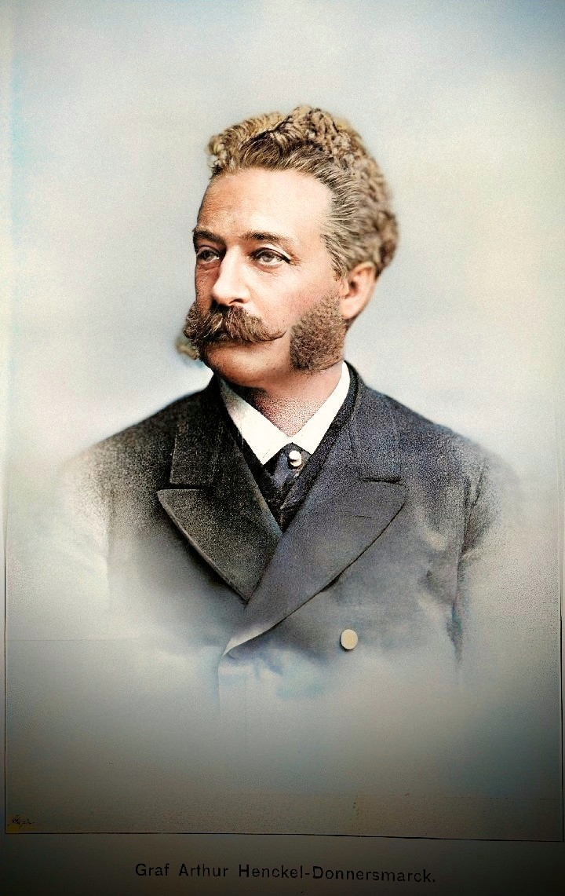
Gróf Arthur Henckel-Donersmarck.
Nakoniec grófka Laura dostihový šport zanechala. 13.02.1898 bol v Algemeine Sport-zeitung uverejnený takýto odstavec:
GRÓFKA LAURA HENCKELOVÁ sa úplne vzdala svojho spojenia s dostihovým športom a chovom plnokrvníkov. Potom, čo sa už pred niekoľkými rokmi vzdala aktívnej účasti na dostihoch, prenechala teraz aj celý svoj chovný materiál grófovi Arturovi Henckelovi.
Neskôr v tých istých novinách to potvrdili:
"Ovdovelá grófka Laura Henckel a jeho syn gróf Artur Henckel pokračovali v jeho diele v duchu zosnulého. Grófka však čoskoro dostihovú stajňu a žrebčín opustila a gróf Artur Henckel prevzal celý materiál." (zdroj: Algemeine Sport-zeitung, 18.12.1904)
V januári 1904 tréner H. Marsh cvičil vo výcvikovom stredisku Rusovce 14 dvoj až päť ročných koní Arthura Henckela.
23.01.1904 - Vadász- és Versenylap.
Kone vo výcviku
XXIX. Súkromný tréningový ústav v Oroszvár(Rusovce).
Tréner: H. Marsh
Džokej: S. B. Walkington
Kone grófa Arthura Henckela
5-ročný hnedák, žrebec Médiateur (Gloucestershire – Mariska)
5-ročný plavák, hnedák Capellmeister (Gloucestershire – Christine)
5-ročný hnedák, valach Confrater (Flunkermichel – Cartouche)
3-ročný hnedák, žrebec Méltóságos (Satiety – Magyarleány)
3-ročný plavák, žrebec Munro (Czigány-legény – Matutina)
3-ročná hnedka, kobyla Maritima (Beldemonio – Maylily)
2-ročný hnedák, žrebec Medici (Matchbox – Mehita)
2-ročný hnedák, žrebec Mineral (Flunkermichel – Magyarleány)
2-ročný hnedák, žrebec Mozart (Galaor – Matutina)
2-ročný hnedák, žrebec Quos ego (Satiety – Question)
2-ročná hnedka, kobyla Citrone (Orcan – Cartouche)
2-ročný plavák, kôň Conférence (Flunkermichel – Christine)
2-ročný hnedák, kôň Save me (Orcan – Starlight)
2-ročný plavák, kôň Sum ego (Galaor – Selma)
Gróf Arthur pokračoval v Rusovciach s chovom aj naďalej a snažil sa zachovať a rozvíjať dedičstvo svojho otca Huga Henckela. V decembri pred dostihovou sezónou 1905 mal napr. v stajni 14 kobýl a dva žrebce (Milford a Czigány-legény) a 8 žriebät.
18.12.1904 - Algemeine Sport-zeitung
ZO ŽREBČÍNOV
Meno Henckel siaha až do začiatkov dostihového športu v Rakúsko-Uhorsku. Gróf Hugo Henckel bol dlhé, dlhé roky jedným z najvýznamnejších majiteľov dostihových stajní a chovateľov v tejto krajine. Jeho farby priniesli tu aj v Nemecku nespočetné víťazstvá v mnohých pretekoch a predovšetkým v Rakúsko-Uhorsku do roku 1896 neexistovali žiadne veľké preteky, v ktorých by nebola víťazná modro-bielo pruhovaná jazdecká blúza tohto vynikajúceho športovca.
Keď gróf Hugo Henckel, ktorého pamiatka má byť v športovom svete dlho udržiavaná prostredníctvom Memoriálu grófa Huga Henckela, koncom roka 1890 zomrel, jeho vdova grófka Laura Henckel a jeho syn gróf Artur Henckel pokračovali v jeho diele v duchu zosnulého. Grófka však čoskoro dostihovú stajňu a žrebčín opustila a gróf Artur Henckel prevzal celý materiál.
V deväťdesiatych rokoch boli jeho úspechy ako chovateľa dosť skromné. Krycí žrebec Aaron už ostarel, Gloucestershire a Orcan boli žrebce nižšej kvality a aj medzi kobylami boli niektoré staré kone, od ktorých sa už nedalo veľa očakávať. V posledných rokoch došlo k väčším zmenám. Aaron v roku 1899 uhynul, Gloucestershire bol v tom istom roku vyradený, neskôr bol aj Orcan predaný inému chovateľovi, a namiesto týchto žrebcov nastúpili Cogány-leginy, nepochybne jeden z najlepších Aaronových synov, a vysoko šľachtený Angličan Milford po Saraband-Colleen Bawn II., ktorého gróf Artur Henckel získal v roku 1901.
Aj stádo kobýl prešlo oživením; zo starých kobýl zostalo už len málo a stav oroszvárskych chovných kobýl sa ešte zvýšil nákupom dvoch anglických kobýl, ktoré mali v žrebčíne podať dobré výkony. V súčasnosti sa v Oroszváre (pobočka žrebčína Wolfsberg bola zrušená) nachádzajú tieto kobyly:
* Matutina, hnedá kobyla, nar. 1883 po Y. Buccaneer-Joyeuse (matka Mariska, Mirevaló, Menyecske, Mozart)
* Mariska, r. kobyla, nar. 1889 po Aaron-Matutina (Merész, Milleflower, Malice, Médiateur)
* Selma, r. kobyla, nar. 1889 po Aaron-Satanella (Senator)
* Childhood, r. kobyla, nar. 1894 po Harpenden-Skipping Rope
* Christine, r. kobyla, nar. 1895 po Aaron-Chrysanthemum (Capellmeister)
* Silverhampton, r. kobyla, nar. 1895 po Royal Hampton-Silver Ring
* Milleflower, hnedá kobyla, nar. 1895 po Gloucestershire-Mariska
* Malice, hnedá kobyla, nar. 1897 po Gloucestershire-Mariska
* Cocusnuss, r. kobyla, nar. 1898 po Aaron-Ceres
* Sultana, hnedá kobyla, nar. 1899 po Pumpernickel-Sirene
* Elsa, tmavohnedá kobyla, nar. 1899 po Flunkermichel-Excentric
* Heidelbeere, hnedá kobyla, nar. 1900 po Gloucestershire-Harmonie
* Regalia, hnedá kobyla, nar. 1900 po Matchbox-Ironie
* Melrose, r. kobyla, nar. 1900 po Orcan-Mariska
Výsledok žrebenia bol tento rok pomerne priaznivý. V Oroszváre sú štyri žriebätá-žrebce a štyri žriebätá-kobyly, pričom k prvým patria potomkovia dvoch spomínaných anglických kobýl, synov takých vynikajúcich žrebcov ako Florisel II. a Martigon. Na výkony týchto dvoch žrebcov sa môžeme tešiť. Syn Malice a dcéra Mariska pochádzajú od Dunure, ostatné žriebätá sú potomkovia Milforda. Childhood a Silverhampton tiež očakávajú potomkov od anglických žrebcov v nadchádzajúcom pripúšťacom období. Christine, Cocusnuss, Elsa, Mariska a Selma sú žrebné po Milfordovi, Heidelbeere, Milleflower, Regalia a Sultana a pravdepodobne aj Matutina a Malice sú jalové, Melrose tento rok nebola pripustená. V nadchádzajúcom pripúšťacom období pôjdu dve kobyly k Tokiovi, Malice bude spárená s Bona Vistou, ostatné kobyly budú pripustené s Milfordom, ako ukazuje nasledujúca tabuľka:
| Meno kobýl | Žriebätá z roku 1904 | Oplodnená v roku 1904 | Určené na rok 1905 |
|---|---|---|---|
| Matutina | H. Monthalon z Milford | Milford | Milford |
| Mariska | St. Monopole z Dunure | Milford | Milford |
| Selma | H. Sorcerer z Milford | Milford | Milford |
| Childhood | H. Come in time z Florizel II. | Milford King’s Courier | Milford |
| Christine | — | Milford | Milford |
| Silverhampton | St. Sporting Girl z Martagon | Count Schomberg | Milford |
| Milleflower | — | Milford | Tokio |
| Malice | H. Midshipman z Dunure | Milford | Bona Vista |
| Cocusnuss | — | Milford | Milford |
| Sultana | — | Milford | Tokio |
| Elsa | — | Milford | Milford |
| Heidelbeere | St. Hat ihn schon z Milford | Milford | Milford |
| Regalia | — | Milford | Milford |
| Melrose | St. Malmaison z Milford | — | Milford |
H.=Hengst=Žrebec, St.=Stute=Kobyla
===
V žrebčíne OROSZVAR grófa Artura Henckela sú dva žrebce: Angličan Milford a domáci kôň Czigány-legény; ale ani jeden z týchto žrebcov neprijíma zahraničné kobyly. Mimochodom, budeme mať príležitosť vrátiť sa do žrebčína a k jeho obyvateľom.
---
IN OROSZVAR, dem Gestüte des Grafen Artur Henckel, stenen zwei Deckhengste: der Engländer Milford und der Inländer Czigány-legény; aber zu keinem der beiden Beschäler werden fremde Stuten angenommen. Wir werden übrigens noch Gelegenheit haben, auf das Gestüt und seine Insassen zurückzukommen.
Smrť grófky Laury Henckel
Grófka Laura Henckel von Kászonyi umrela 11.12.1905.
13.12.1905 - Lavantthaler Bote.
V pondelok 11. tohto mesiaca, skoro ráno, zomrela vo svojom paláci vo Viedni po dlhšom a ťažkom utrpení ríšska grófka vdova Laura Henckel von Donnersmarck, rodená von Kászonyi, vo svojom 71. roku života. Bola majiteľkou zámku Weißenau, zámku Rusovce(Carlburg) v Uhorsku, víl v Opatiji a ďalších nehnuteľností.
Pohreb sa uskutočnil vo Wolfsbergu 14.12.1905.
16.12.1905 - Lavantthaler Bote.
Ako sme už informovali v minulom čísle, v pondelok 11. decembra o 4. hodine ráno, vo svojom paláci vo Viedni, na Weihburggasse č. 32, zomrela vo svojom 71. roku života, pani Laura Ríšska grófka Henckel, barónka von Donnersmarck, pani z Gefäll a Wesendorf, rodená von Kászonyi.
Narodila sa 6. januára 1835 ako dcéra v tom čase známeho budapeštianskeho advokáta Kászonyiho, prežila mladosť v rodičovskom dome a bola mimoriadne krásna.
Dňa 8. januára 1859 sa vydala za ríšskeho grófa Huga Henckela, baróna von Donnersmarck, ktorý bol vo Wolfsbergu nezabudnuteľnou osobnosťou a ktorý bol v prvom manželstve ženatý s grófkou Laurou Hardenberg. S ním žila v tom najšťastnejšom manželstve, ktoré bolo založené na láske, až do jeho smrti 4. októbra 1890. Obdobie, ktoré nasledovalo až do jej pokojného skonu, trávila striedavo na svojom zámku vo Weissenau a Rusovciach (Karlburgu), vo svojom viedenskom paláci alebo vo svojej vile v Abbazii.
Slávnostná posledná rozlúčka so zosnulou Laurou Ríšskou grófkou Henckel sa konala v stredu 13. v mesiaci o 14:00 hodine v smútočnom dome, Weihburggasse č. 32 vo Viedni. Pri tejto príležitosti sa zišli jej nevlastní synovia, páni Hugo, Lazy, Arthur ríšski grófi Henckel, baróni von Donnersmarck, takmer všetci ostatní členovia grófskej rodiny, ako aj barón von Helfert, člen Panskej snemovne, knieža Esterházy, generál pechoty Fischer von Wellenborn, poľný maršal Groller a mnohí ďalší predstavitelia šľachty.
Po rozlúčke bola rakva so zosnulou prevezená do Wolfsbergu, kde dorazila vo štvrtok 14. decembra o 8:25 hodine ráno. Po vyložení rakvy a stoviek nádherných vencov s rovnako honosnými stužkami sa začal okolo 9. hodiny formovať pohrebný sprievod. Sprievod začínali baníci grófskej Henckelovej bane v St. Stefan, ktorí boli oblečení v slávnostných uniformách, s vlajkou a pohrebnými lampášmi, a niesli časť masívnych vencov, za nimi nasledovali polovníci grófa Henckela, pán dekan Lorenz Walder s početným cirkevným asistenčným personálom, a napokon pohrebný voz so smrteľnými pozostatkami ríšskej grófky Laury Henckel, takmer preplnený vencami. Za ním nasledovali dámy, cisársko-kráľovskí úradníci, obecné zastupiteľstvo, úradníci grófa Henckela, ich riaditelia a správcovia, mešťania Wolfsbergu a okolia a ďalší smútiaci.
Pred mauzóleom sa k pohrebnému sprievodu pripojili gróf Edgar Henckel, syn grófa Huga Henckela, gróf Edwin Henckel, syn grófa Lazyho Henckela, gróf Alfons Henckel, syn Jeho Excelencie grófa Arthura Henckela, a v Paríži žijúci synovci zosnulej, Arpád, Aladár a Hugo de Migl. Po tom, čo bola rakva so zosnulou, ktorá odpočíva v pokoji Božom, ešte raz posvätená, predniesol pán dekan Lorenz Walder krátku, no hlbokú pohrebnú reč, po ktorej nasledoval pohrebný obrad do rodinnej hrobky.
R.I.P
16.12.1905 - Tagespost Graz.
Ríšska grófka Laura Henckel z Donnersmarku.
Vlakom, ktorý sem dorazil dnes ráno o 8. hodine, prišlo telo zosnulej ríšskej grófky Laury Hendel z Donnersmarku, ktorá zomrela vo Viedni. Od železničnej stanice sa konal pohrebný sprievod ku grófskemu mauzóleu, ktoré sa nachádza na krásnom mieste pri ústí Vordergumitsch.
Na čele pohrebného sprievodu išli grófi Edgar, Edwin a Alphons Henckel von Donnersmarck mnoho ďalších blízkych príbuzných zosnulej. Po pohrebnom voze kráčali grófski banskí zamestnanci so zapálenými banskými lampami a krásnymi vencami, takmer všetci členovia mestskej rady vo Wolfsbergu, niekoľko zástupcov miestnej sporiteľne, primár všeobecnej nemocnice Dr. Ludwig Mann, grófski úradníci a nakoniec dlhý zástup ďalších smútiacich. Medzi nimi boli barón Robert Benz, barón Louis Braun a dôstojníci miestneho veliteľstva stanice atď.
Pohrebný obrad vykonal miestny dekan a mestský farár, pán Lorenz Walder, za početnej asistencie duchovných. Laura Henckel von Donnersmarck bola vdovou po ríšskom grófovi Hugovi Henckelovi von Donnersmarck, ktorý zomrel 4. októbra 1890 a za ktorého sa vydala 8. októbra 1859.
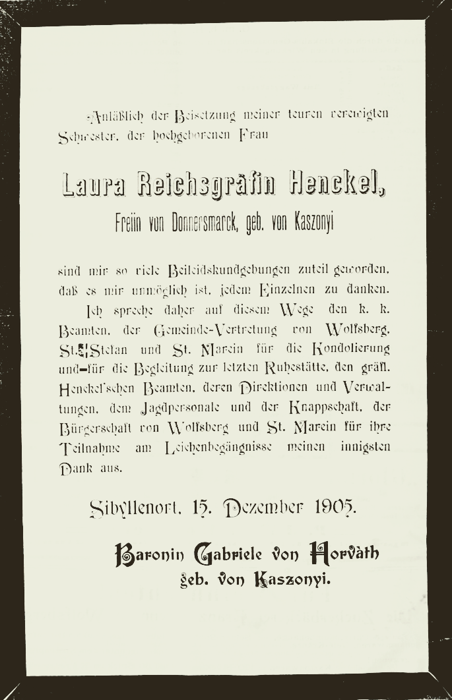
poďakovanie za účasť na pohrebe Laury Henckel von Kászonyi od jej sestry Gabriely von Horváth rodenej von Kászonyi.
text na oznámení
Pri príležitosti pohrebu mojej drahej a váženej sestry, urodzenej pani Laury ríšskej grófky Henckel, barónky z Donnersmarcku, rodenej Kászonyi, som dostala také početné prejavy sústrasti, že je pre mňa nemožné poďakovať každému zvlášť. Preto týmto vyjadrujem svoju úprimnú vďaku kráľovským úradníkom, zástupcom obcí Wolfsberg, St. Stefan a St. Marein za kondolencie a sprievod na miesto posledného odpočinku, úradníkom grófskeho rodu Henckel, ich riaditeľstvám a správnym orgánom, poľovnému personálu a baníkom, ako aj mešťanom z Wolfsbergu a St. Marcin za ich účasť na pohrebe. Sibyllenort, 15. decembra 1905. Barónka Gabriela von Horvath, rodená z Kászonyi.
Laura Henckel mala iba nevlastné deti, ktoré do manželstva priniesol gróf Hugo Henckel. V čase smrti jej ostala iba jedna sestra a traja synovci. Na poďakovaní za účasť na pohrebe vidíme meno Laurinej sestry - Gabrielle von Horváth rodenej Kászonyi, ktorá v tom čase žila v Sibyllenort v Sliezsku. Na opise ceremónie pohrebu Laury Henckel sú zmienení ešte aj jej traja synovci Arpád, Aladár a Hugo. Traja bratia s priezviskom de Migl z Paríža. Kto bola teda Laurina rodina a kto mohol zdediť žrebčín po jej smrti?
Grófka Laura Henckel rodená Kászonÿi a jej rodina
Laura sa narodila v Budíne 7. januára 1836 a zomrela 11.12.1905. Tieto dátumy potvrdzujú záznamy z krstu a úmrtia.
viac o Laure Henckel rodenej Kászonyi ➤
Dožila sa 69 rokov (takmer 70r.)
Tento dátum narodenia a vek úmrtia sú v róznych zdrojoch uvádzané chybne. Dokonca aj na jej náhrobku v Henckelovom mauzóleu.
V novinových článkoch a archívoch sa uvádza aj iný rok narodenia a vek úmrtia. V rakúskom štátnom archíve je napr. uložený Laurin nekrológ, kde sa uvádza vek dožitia 70 rokov. V periodiku Salonblatt zo 16.12.1905 sa uvádza rok Laurinho narodenia 1835 a vek úmrtia 70 r. Väčšina periodik uvádza, že umrela vo svojom 71. roku života (t.j. dožila sa 70 rokov) - nemecká fráza - "im 71. Lebensjahre gestorben", alebo "im 71. lebensjahre verschieden".
Lavanttaler Bote upresňuje dátum narodenia na 6.január 1835. Ak sa teda narodila v januári 1835, v čase úmrtia by dosiahla vek 70 rokov (takmer 71 r.), ktorý je uvedený na nekrológu uloženom v Österreichisches staatsarchiv.
Laura Henckel, podľa Lavatthaler Bote:
"sa narodila 6. januára 1835 ako dcéra v tom čase známeho budapeštianskeho advokáta Kászonyiho, prežila mladosť v rodičovskom dome a bola mimoriadne krásna."(16.12.1905, Lavantthaler Bote)
Za grófa Huga Henckela Donnersmarck sa Laura vydala 8.januára 1859. O tejto udalosti informovali viaceré prusko-sliezske noviny. (Die Presse, 14.01.1859).
Rod Kászonyi pôvodne pochádzal z oblasti Nagy Kászon (dnešné Plăieșii,Rumunsko). Do oblasti patrilo viacero obcí s predponou Kászon (napr. Kászonaltíz). Oblasť patrí do Sekulskej zeme v Transylvánii. Pramenia tu minerálne pramene s kyslou vodou(kyselica) a z nich tečie kyslý potok Kászon. Maďarský názov zeme Kászon je odvodený od slovanského slova kvas v zmyske kyslý. Rod Kászonyi, ktorého časť sa neskôr presunula do maďarskej časti Uhorska, má pôvod Sekulský. (viaceré zdroje Wikipedia)
Erb rodu Kászonyi(Nagy-Kászonyi) tvoril štít s kráčajúcim levom v hornej časti, predel a tri ľalie v rade:
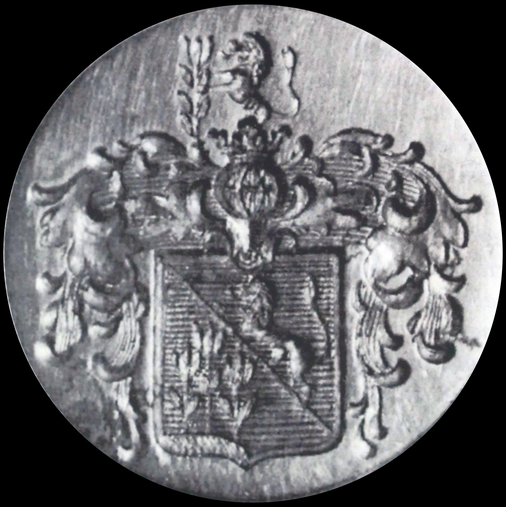
Erb, ktorý udelil cisár a kráľ Matej II Habsburský 6.8.1617 Gergelymu Kászonyi v Linzi. Vyfarbenie štítu je celé modré , lev(leopard) je zlatý, 3 ľalie sú biele, prikrívadlá z jednej strany modré a zlaté, z druhej červené a strieborné. (zdroj: Richard Kászonyi, Makó 2010, História rodiny Kászónyi - Nagykászonyi)
06.08.1617 - List Mateja II Habsburského s udelením erbu Gergélymu Kászonyi.
zdroj: Makó Múzeum, 2010, História rodiny Kászónyi - Nagykászonyi
Slovenský preklad z maďarského jazyka.
Príloha č. 1. II. Maďarský preklad listu s erbom, ktorý vydal uhorský kráľ Matej II. v Linzi 6. augusta 1617 Gergélymu Kászonyimu:
Mi, Matej (tituly vynechané), silou tohto nášho listu dávame na vedomie každému, koho sa to týka, nasledovné: Že My, sčasti na najpokornejšiu prosbu nemalého počtu našich verných, vyslovenú pred Našou Veličenosťou, a sčasti berúc do úvahy a prihliadajúc na vernosť a verné služby nášho verného a činorodého Gergelyho Kászonyiho, ktoré verne a vytrvalo preukázal a vykonal, predovšetkým Svätej Korune nášho Uhorského kráľovstva a potom Našej Veličenosti na rôznych miestach a v rôznych časoch, a ktoré údajne chce preukazovať a vykonávať aj v budúcnosti, sčasti teda z tohto dôvodu a sčasti z Našej Cisárskej a Kráľovskej Milosti a štedrosti, ktorou tým, ktorí boli Nami a Našou Kresťanskou Krajinou uznaní za hodných a horlivých v preukazovaní cností, – nasledujúc príklad našich predkov, niekdajších kráľov Uhorska – zvykneme udeľovať isté znaky cností (monumenta), ktoré ich môžu podnietiť k väčšej službe, týmto istého Gergelyho Kászonyiho a prostredníctvom neho Juditu Nagypál a jej syna Františka (Ferenca) našou plnou Cisárskou a Kráľovskou mocou a mimoriadnou milosťou nariaďujeme prijmúť, započítať a zapísať do počtu a radov pravých a nespochybniteľných šľachticov Uhorska a k nemu pripojených častí. Chceme a na základe nášho istého poznania a s premysleným úmyslom dovoľujeme, aby oni a všetci ich dedičia a potomkovia oboch pohlaví odteraz a v budúcich časoch vždy užívali a požívali, mohli užívať, požívať a tešiť sa zo všetkých tých milostí, výsad, ústupkov, pocty, slobôd, práv, predností a výnimiek, ktoré doteraz užívali a požívali ostatní praví, starí a nespochybniteľní šľachtici nášho Uhorského kráľovstva a k nemu pripojených častí na základe akéhokoľvek práva alebo právneho zvyku.
Na dôkaz našej Milosti, Milosti a slobody prejavenej voči nim, a ako znak pravej a nespochybniteľnej šľachty, sme sa milostivo rozhodli udeliť a darovať tento erb alebo šľachtické znamenie tomuto Gergelymu Kászonyimu a prostredníctvom neho jeho manželke, synovi a všetkým ich dedičom a potomkom oboch pohlaví, a to:
Modrý vojenský štít v stoji, ktorého línia vedená z pravého horného rohu k ľavému dolnému rohu rozdeľuje rohy štítu šikmo, v najspodnejšej časti sa nachádzajú tri biele ľalie usporiadané v rade, a horné pole akoby postupne obsadzoval vytvorený prirodzený leopard v kroku. Na štíte je otvorená vojenská prilba s kráľovskou korunou, z ktorej vystupuje zlatý leopard zhodný vo všetkom s predchádzajúcim, držiaci v jednej labe vysoko ľaliu. Z vrcholu, respektíve hrotu prilby padajú prikrývadlá alebo strapce, z jednej strany modré a zlaté, z druhej strany červené a strieborné, prekrývajúce okraj štítu a vynikajúco ho zdobiace, ako je to všetko správne vymaľované vlastnými farbami rukou a umením maliara na začiatku, respektíve na hlavnom mieste tohto nášho listu.
Rozhodli sme sa a na základe nášho istého poznania a s dobre uváženým úmyslom dovoľujeme, aby oni odteraz a po všetky budúce časy, užívali a požívali tento istý erb, respektíve šľachtické znamenie rovnakým spôsobom ako ostatní šľachtici nášho menovaného Uhorského kráľovstva a pripojených častí, s tými istými právami, prednosťami, výhodami, slobodami a výnimkami, ktoré títo doteraz užívali a požívali na základe prirodzeného alebo zvykového práva. Nech ho nosia a používajú kdekoľvek, v bitkách a bojoch, v bojových hrách, na turnajoch, dueloch, súbojoch a iných podobných udalostiach, pri akomkoľvek vojenskom a šľachtickom cvičení, ďalej na pečatiach, pokrývkach, tapisériách, kobercoch, prsteňoch, zástavách, štítoch, stanoch, domoch a hroboch, všeobecne vo všetkých ich záležitostiach a činnostiach pod titulom pravej a čistej šľachty, ktorou ich a všetkých ich dedičov oboch pohlaví nech všetci, v akomkoľvek postavení, hodnosti, stave a úrade, nazývajú, oslovujú, považujú a počítajú za vynikajúcich ľudí, nech ich užívajú, požívaajú a nech sa z nich tešia oni a všetci ich dedičia a potomkovia oboch pohlaví. Ba čo viac, silou tohto nášho listu im ich dávame a udeľujeme. Na pamiatku a večnú platnosť tejto veci sme sa milostivo rozhodli vydať a povoliť tento náš list, opatrený našou tajnou visiacou pečaťou, ktorú používame ako kráľ Uhorska, tomuto Gergelymu Kászonyimu, jeho manželke Judite Nagypál a jeho synovi Františkovi a všetkým ich dedičom a potomkom oboch pohlaví. Dané rukou nášho obľúbeného verného, najdôstojnejšieho [Valentína Lépesa], nitrianskeho biskupa, večného župana toho istého miesta, radcu, kancelára nášho Uhorského dvora, na hrade Linz, v Hornom a Dolnom Rakúsku, dňa 6. augusta v roku Pána tisícšesťstosedemnástom (formuly vynechané).
6. októbra 1617 v meste Csenger, na mieste a v deň konania súdu Satmárskej župy, bol predložený a ukázaný list týkajúci sa šľachty a erbových znamení milostivo udelených Najsvätejšou Cisárskou a Kráľovskou Veličenosťou, a bol zvyčajným spôsobom vyhlásený, zverejnený a vo všetkých jeho častiach prijatý a schválený zhromaždením magnátov a šľachticov Satmárskej župy.
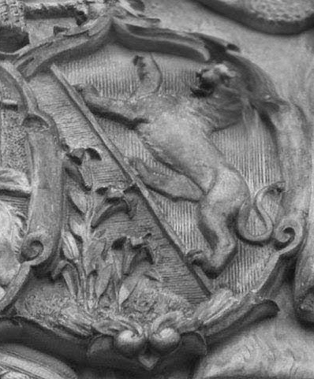
Erb Laury Kászonyi na jej kaplnke v Rusovciach. Podklad pod levom je červený, pod ľaliami modrý.
Oba erby sú si podobné, avšak Laurin erb má v štíte aj modrý aj červený podklad.
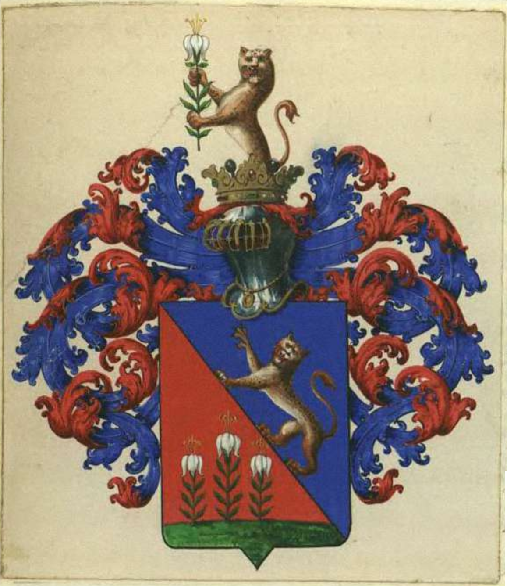
Erb, ktorý bol pridelený synovcom Laury Kászonyi v roku 1908.
Laurin otec Ján Štefan Kaszónyi de Kászon (János István Kászonyi, Johann Stephan Kászonyi) sa narodil v r. 1786 alebo 1785. Zomrel 10.03.1858 vo veku 72 rokov v Budapešti. (v slovníku o Uhorskej genealógii 1888 - Magyar nemzetségi zsebkönyv, sa otcovi Gabriely Kászonyi stanovuje rok úmrtia 1859).
Mal právnické vzdelanie, bol cisársko-kráľovský miestodržiteľský úradník a tabulárny sudca správnej rady budínskeho guvernérstva. Bol advokát, správca a zástupca niekoľkých vysokopostavených rodín, verný priateľ literatúry, ktorý v značnej miere vynakladal činnosť k založeniu národného divadelného umenia v Budapešti. (zdroj: Politikai Ujdonságok č.11, 18.03.1858)
Aj Laura Kászonyi, zrejme ovplyvnená svojim otcom, mala blízko k divadlu. Podľa Jozefa Mallineritsa, v mladosti bola "profesionálna herečka známa vo viedenských umeleckých kruhoch". Tu si ju všimol gróf Hugo Henckel. Zdroj uvádza aj, že jej otec Ján bol exhumovaný a prevezený do kaplnky v Rusovciach.(zdroj: Jozef Mallinerits, Lucia Tuleková Henčelová, Pre nás - pre Rusovce)
Laurina mama, Anna Rosalia Kászonyi de Kászon (rodená Pongrácz), sa narodila pravdepodobne v roku 1798 (popr. 1797) a zomrela 18.10.1890 vo veku 92 rokov v Sibyllenort(aj Sybillenort, dnes Szczodre). 24.7.1877 v úmrtnom liste Hermíny Migl sa uvádza že ako ovdovelá rentierka žila v Oroszváre (Rusovce). V tomto čase Laurin otec Ján Štefan už nežil.
Po smrti ju grófka dala previezť zo Sybillenort do Rusoviec a pochovala ju v kaplnke, ktorá slúžila ako rodinné mauzóleum. (zdroj:Jozef Mallinerits, Lucia Tuleková Henčelová, Pre nás - pre Rusovce)
25.10.1890 - Správy o úmrtí Rozálie, matky grófky Laury v novinách
zdroj: Oedenburger Zeitung
Úmrtie. Z Prešporka sa píše, že v Sybillenort (aj Sibyllenort, dnes Szczodre) zomrela pani Rosalia Kászonyi de Kászon, matka nedávno ovdovenej grófky Laury Henckel von Donnersmarck, vo veku 92 rokov. Telo bolo prevezené do Karlburgu pri Prešporku. .
---------
Todesfall. Aus Preßburg wird geschrie ben, daß in Sybillenort Frau Rosalia Kaszony de Kaszon, die Mutter ber unlängst verwitweten Reichsgräsin Laura Henckel Donnersmark, im 92. Lebensjahre gestorben ist. Die Leiche wurde nach Karlburg nächst Preßburg überführt.
zdroj: Lavantthaler Bote
Úmrtie. Dňa 18. tohto mesiaca v Sibyllenort (aj Sybillenort, dnes Szczodre)zomrela vo veku 92 rokov matka ríšskej grófky Laury Henckel von Donnersmarck, rodenej von Kászonyi, pani Rosalia Kászonyi de Kászon. Grófka vdova okamžite odcestovala z Wolfsbergu na pohreb.
---------
Sterbefall. Am 18. d. M. ist in Sibyllenort die Mutter der Reichsgräfin Laura Hendel von Donnersmarck geb. von Kászonyi, Frau Rosalia Kászonyi de Kaszon im 92. Lebensjahre verschieden. Die grafliche Witwe reiste sofort von Wolfsberg zum Leichenbegängnisse ab.
Kaplnka-mauzóleum Laury Henckel, na cintoríne Rusovce
Laura mala ešte dve sestry:
Barónku Angelu Gabrielu (Angelica Gabrielle) von Horváth rodená Kászonÿi (nar. 24.04.1833, ✝15.10.1921)
a
Hermínu Rozáliu Teréziu(Hermina Rosalia Theresia ) de Migl rodená Kászonÿi (nar. 14.03.1826, ✝24.06.1877)
Ako prezrádzajú ich mená obe sa vydali. Hermína Terézia za Jána Nepomuka de Migl(nar. 27.03.1827, Johann Nepomuck de Migl), bol rentiér. Gabriela sa vdala 14. mája 1862 v Stein-e (Kamień, dnes Długołęka, Laurin palác neďaleko Vroclavi) v Pruskom Sliezsku za baróna Alexandra Hováth von Szent-György nar. 22.09.1826, zomrel 25.10.1906. Ktorý bol od roku 1857 prvým c.k. komorníkom rakúsko-uhorského cisára (K.K. wirkliche Kämmerer).
Podľa Jozefa Mallineritsa, barón Alexander Horváth a manželka Angela Gabriela boli pochovaní v Laurinej kaplnke v Rusovciach. Začiatkom 60. rokov premiestnení do spoločného hrobu na cintoríne v Rusovciach. (zdroj: Lucia Tuleková Henčelová, Pre nás - pre Rusovce; zdroj:kriz.epocha.sk, 2022, Rusovce - pohrebná kaplnka na cintoríne)
Laurina sestra barónka Angela(Angelika) Gabriela Horváth, manželka baróna Alexandra Horvátha umrela o 2 hodine ráno 15.októbra 1921 v Sibyllenort(dnes Szczodre) vo „Villa Hubertus", Pruské Sliezsko. V Sibyllenort(niekde aj Sybyllenort) umrel aj Alexander a jej mama Róza Pongrátz.
Oznámenie o úmrtí barónky Gabriely Horváth v Schlesische Zeitung, 16.10.1921.
16.10.1921 - Oznámenie o úmrtí barónky Gabriely Horváth(preklad).
Namiesto rozposielania špeciálnych oznámení o úmrtí!
Dnes v noci o 2. hodine zomrela naša drahá, milá pani, požehnaná poslednými pomazaniami.
Angela, barónka von Horvath,
rodená von Kaszony.
Sibyllenort, 15. októbra 1921. "Villa Hubertus"
S hlbokým zármutkom:
August a Marie Teichmann.
Domáca pobožnosť (posledná rozlúčka): Streda, 19. októbra, o 3 hodine popoludní.
V knihe rodov Magyar nemzetségi zsebkönyv z 1888 je uvedený Alexander(Sándor) Horváth, manželka Gabriela a rodičia Ján a Rozália Kaszónyi:
1888 - BARÓN HORVÁTH zo Szentgyörgy.
zdroj: Magyar nemzetségi zsebkönyv 1. Főrangú családok (Budapest, 1888)
Vrecková kniha o maďarskej genealógii
PRVÁ ČASŤ: RODINY VYSOKEJ ŠĽACHTY
Dodatok • II. Ďalšie šľachtické rodiny Uhorska
...
BARÓNI HORVÁTH zo Szentgyörgy
Patrí medzi staré rody Vašskej župy (Vasmegye), ktorý v roku 1631 získal nový kráľovský donát (dar) na obec Szent György. A tento potom dal predikát menu.
Z rodu pochádzal Antal Horváth, cisársky a kráľovský komorník a plukovník husárov, ako rytier Rádu Márie Terézie, povýšený do barónskeho stavu v roku 1803. Táto vetva však vymrela 8. augusta 1812.
Žigmund Horváth zo Szentgyörgy bol povýšený do grófskeho stavu 9. mája 1810 a 28. septembra 1811 mu bola povolená zmena mena na HUGONNAY. O tomto povýšení do grófskeho stavu bol vo Viedni 14. júna 1822 vystavený nový diplom. (Pozri grófsky rod Hugonnay, str. 128.)
Sándor Horváth, c. a k. komorník, získal rakúsky barónsky titul na základe najvyššieho rozhodnutia vydaného v Laxenburgu 21. septembra 1858, pričom dátum diplomu bol 28. januára 1859 vo Viedni. Rodina je rímskokatolícka.
Popis barónskeho erbu z roku 1859: V štíte na modrom poli stojí na zadných nohách dvojchvostý zlatý lev, ktorý v pravej prednej labe drží tasený meč so zlatou rukoväťou. Ornament (nad prilbou) tvorí ohnutá ruka v brnení držiaca tasený meč. Prikrývadlá sú farby modro-červenej. Štít držia dva zlaté levy každý držiaci aj tasený meč.
[Rozdiely v barónskom erbe z roku 1803: pole štítu bolo strieborné, lev stál na zelenej pôde a prikrývadlá boli strieborno-červené.]
Sándor Otto Zeno Viktor, nar. 14. septembra 1829, cisársky a kráľovský komorník, ktorého manželkou bola Gabriella Kászonyi, nar. 19. februára 1844, dcéra Jánosa Kászonyi z Kászon (zomr. 1859) a barónky Rózy Pongrátzovej.
Svadba sa konala 14. mája 1862 v Stein v Pruskom Sliezsku.
Jeho majetky boli Keled, Bögöte, Pinnye, Szent András a Tót Komlós.
...
Erb baróna Alexandra Horváth von Szent-György s povolením ho používať(zdroj: Österreichisches Staatsarchiv)
Viac o Alexandrovi Horváth de Szent-György ➤
19.09.1851 sa Hermíne Terézii a Johanovi Nepomukovi narodil prvý syn Aladar (Aladar Coloman Titus Migl, 19.09.1851 - 23.01.1925). Bol pokrstený 25.09.1951 v protestantskom kostole Neuenkirche v Berlíne.
V lete 1857 mama s dcérou (fraulin Therese s frau Rozália von Kászonyi z Pešti) navštívili kúpele Neuhaus. Tu sa Laurina sestra Terézia v tom čase (24 alebo 25 ročná) uvádza ako slečna z Pešti(Budapešť).
18.08.1857 - Zoznam hostí v kúpeľoch Neuhaus.
Zoznam hostí v kúpeľoch Neuhaus
Do minerálnych kúpeľov Neuhaus dorazili od 29. júla do 5. augusta títo hostia:
* Pani Mária Rahm, súkromná osoba, s dcérou, z Leimsu.
* Pán Johann Pichon, občan, z Klagenfurtu.
* Pán Johann, barón z Schloßniggu, cisársko-kráľovský miestodržiteľ, so služobníctvom, z Klagenfurtu.
* Pani Rosalia von Kászonyi, súkromná osoba, z Pešti.
* Slečna Terézia von Kászonyi, súkromná osoba, z Pešti.
...
----------
Im Mineralbade Neuhaus sind angekommen vom. 29. Juli bis 5. August:
-- Fran -Frau Maria Rahm, Privat, mit Tochter, aus Leims. Herr Johann Pichon, Bürger, aus Klagen-furt. Herr Joh. Freiherr v. Schloßnigg, Ε.Ε. Statthalter, mit Bebienten, aus Klagenfurt -
Frau Rosalia von Kászonyi, Brivatiere, aus Pest.
Frl Therese von Kászonyi, Privatiere, aus Pest.
...
08.06.1858, v Berlíne, mali Hermína a Johann svatbu a 17.08.1861 sa im tu narodil druhý syn Hugo (Hugo Jean Evangéliste Arpad Migl, 17.08.1861 - 20.12.1946).
23.04.1863 sa im narodil aj tretí syn Arpád(Arpadus Franz Hermann Migl, 23.04.1863 - 30.03.1934). Obidvaja boli pokrstení v kostole Neuen kirche(Deutsche Dom) v Berlíne. Ich krst sa uskutočnil 29.apríla 1865.
Výpis z krstného listu Arpáda de Migl z roku 1909.
17.09.1909 - text na výpise z krstného listu Arpáda de Migl.
Krstný list
Podľa záznamov z matriky narodení a krstov Neuen Kirche je pánovi rentiérovi
Johann Nepomuck Migl
s jeho Manželkou
Hermina Rosalia Theresia rodená von Kászonÿi
medzi 4 a 5 hodinou ráno
Dňa 23. apríla 1863 sa narodil okolo 4. – 5. hodiny dopoludnia syn, ktorý dňa 29. apríla 1865 prijal sväté krstné sviatosti a mená:
Arpadus Franz Hermann.
Svedkovia pri krste:
Gróf Hugo Heneckel v. Donnersmarck z Beuthen, Komorník kráľa Pruska
Grófka Laura Henckel von Donnersmarck rodená von Kászonÿi;
Baron Alexander v. Hórváth, cisársko kráľovský rakúsky komorník;
Angelica Gabrielle Barónka von Hórváth rodená von Kászonÿi.
_Tri zápisy priložené na jednej strane
Toto je týmto dôveryhodne a riadne osvedčené.
Berlin, 17. September 1909.
Farský úrad Novej cirkvi(Neuen Kirche).
podpis farára
--------
Tauf Schein
Nach Angabe des Geburts- und Tauf-Registers der Neuen Kirche ist dem Rentier Herrn
Johann Nepomuck Migl
von seiner Ehefrau
Hermina Rosalia Theresia
gebornen von Kászonÿi
am Dreiundzweizigten (23.4) April
ein Tausend Acht Hundert Drei und Sechzig um 5’/4 Uhr vormittags ein Sohn geboren, welcher am 29ten April 1865 die heilige Taufe und die Namen:
Arpadus Franz Hermann
empfangen hat.
Taufzeugen:
Graf Hugo Heneckel v. Donnersmarck auf Beuthen, Kgl. Pr. Kammerherr; (Königlich Preußisch Kammerherr);
Gräfin Laura Henckel von Donnersmarck geb. v. Kászonÿi;
Baron Alexander v. Hórváth, k.k. Österr. Kämmerer;
Angelica Gabrielle Baronesse v. Hórváth geb. von Kászonÿi.
_ Trei Nachträge umseitig.
Dieses wird glaubhaft und ordnungsmäßig hierdurch bescheinigt.
Berlin, den 17ten September 1909.
Das Pfarramt der Neuen Kirche.
Pfarrer.
Na výpise z krstného listu Arpáda Migl, synovca Laury Henckel je veľa zaujímavých informácií. Dozvedáme sa napr. že jeho otec a Laurin švagor Johan Nepomuk bol rentiér. Človek žijúci z príjmov z renty ako napr. prenájom...
Vidíme, že svedkovia pri krste boli iba z matkinej strany. Sestry s manželmi. Na krste sa ako svedkovia zúčastnili tieto dva manželské páry:
Laura Henckel von Donersmarck a gróf Hugo Henckel von Donersmarck, s čestným titulom komorník Pruského kráľa,
Angelika Gabriela Barónka von Horváth a jej manžel a Laurin švagor barón Alexander von Horváth, ktorý bol prvým cisárskym a kráľovským (slov. skr. c.ķ., nem k.k.) skutočným komorníkom cisára Rakúsko-Uhorska.
Spomínaný Alexander či Sándor Horváth de Szent-György bol uhorským barónom a 28.01.1859 mu cisár potvrdil titul Freiherr(barón) aj v rakúskej časti monarchie.
Najmladší syn Arpád sa teda narodil 23. apríla 1863 a jeho krst sa uskutočnil 29. apríla 1865 v Berlíne takže v tomto období tam Laurina sestra Terézia s jej manželom Johanom stále žili.
Neskôr sa buď obaja alebo len samotná Hermína Tereza Migl presťahovali do Paríža. Bola už vdova keď 24.júna 1877 ako 51 ročná (nie 44 ročná) zomrela v dome na Treilhard 15. Manžel Johan Nepomuk už pred týmto rokom teda musel zomrieť(medzi 1865 a 1877). Hermína Terézia bola pochovaná 25.júna na najväčšom a najslávnejšom Parížskom cintoríne Pére Lachaise.
1877 - viac o úmrtí Terézie Migl (franc. Hermine Rosalie Thérèse née de Kászonyi), cenný zdroj o rodine.
Terézia Migl de Kászonyi umrela 24.6.1877 a túto správu uverejnili niektoré Parížske periodiká opozdene až 28.6. V novinách to boli akési hromadné výpisy z matrík na posledných stránkach. Tu sa medzi ďalšími nebožtíkmi nachádzalo aj meno 44 ročnej vdovy Migl z ulice Treilhard 15. Noviny Relé okrem téjto informácie upresnili dátum úmrtia či pohrebu na 25.jún. V záznamoch Parížskeho archívu sa dajú nájsť ďalšie informácie.
Presný dátum úmrtia však prezradili až Parížske archívy. Vo všeobecných prehľadoch sa nachádza meno, síce trochu popletené, ale predsa je tam. Pod číslom cintorína 2274 je uvedený dátum úmrtia (DATE de DÉCÉS) 25.jún 1877, priezvisko Migle(de) von Kászonyi a meno Hermine. Hermine či Hermína.
Na upresňujúcich záznamoch cintorína Pére Lachaise je už uvedený presnejší záznam s menom Kaszonyi(de)v de Migl Hermine Rosalie. Záznam pod číslom 552 potvrdzuje dátum pohrebu(DATES de INHUMATIONS) na 25.6. Je tam aj lokalizácia hrobového miesta ťažko čitateľná, ale to nevadí. Na jej konci je uvedený dôležitý názov - "Thomas". Ak sa pozrieme na mapku cintorína Pére Lachaise z roku 1875 zistíme že sekcia cintorína s názvom Thomas má číslo 39 a tak sa dá určiť kde sa nachádzal hrob Terézie de Migl rodenej Kászonyi sestry Laury Henckel.
Najdôležitejšie údaje máme však z matrikárskych záznamoch o úmrtí.
Záznam 1045 Kaszónyi nám prezrádza:
Dvadsiateho štvrtého júna tisícosemstosedemdesiatsedem (24.06.1877) o pol desiatej ráno.
Úmrtný list Hermíny Rozálie de Kaszonyi, rentierky, vo veku štyridsaťštyri rokov, narodenej v Pešti (Rakúsko-Uhorsko).
Zomrela v Paríži vo svojom bydlisku na ulici Treilhard 15, medzi šiestou a pol deviatou ráno, vdova po Jánovi Nepomukovi de Migl, dcéra zosnulého Jeana Etienna (Jána Štefana) de Kaszonyiho a Anne Rosalie, barónky de Pongrácz, vdovy, rentierky s bydliskom v Oroszvári (Rusovce, Rakúsko-Uhorsko).
Potvrdené nami, matrikárom ôsmeho parížskeho obvodu, na základe vyhlásenia Aladára Colomana Titusa de Migl, rentiera, vo veku dvadsaťšesť rokov, s bydliskom na ulici Treilhard 15, syna zosnulej,
a Leóna Debergue, kamenára, vo veku dvadsaťšesť rokov, s bydliskom na ulici de la Roquette, 177. Ktorí s nami podpísali po prečítaní.
_____________________________________
de Migl, Debergue a úradník matriky
Novinové oznamy o úmrtí:
Dátum: 28.06.1877
Noviny: La France
ÚRADNÉ OZNÁMENIA MATRIKY PARÍŽA
ÚMRTIA
...
Pani vdova Miglová, 44 rokov, ulica Treilhard 15.
...
---------------
ÉTAT CIVIL DE PARIS
DÉCÉS
...
Mme veuve Migl, 44 ans, rue Treilhard, 15
...
Dátum: 28.07.1877
Noviny: Relé
ÚMRTIA A POCHOVÁVANIA
25. júna
...
Pani vdova Miglová, 44 rokov, ulica Treilhard 15.
...
---------------
DÉCÈS ET INHUMATIONS
Du 25 juin.
DÉCÉS
...
Mme veuve Migl, 44 ans, rue Treilhard, 15
...
všeobecný prehľad cintorína
presný záznam cintorína

mapa cintorína 1875
hrob s približným umiestnením 2025, zdroj:Google maps.
záznam o úmrtí z Parížskej matriky
záznam o úmrtí z matriky - prepis
Kaszonyi 1045,
Du vingt-quatre juin mil huit cent soixante-dix-sept á neuf heures et demi du matin.
Acte de décès de Hermine Rozalie de Kaszonyi, rentière, âgée de quarante-quatre ans, née à Pesth (Autriche-Hongrie), Décédé á Paris en son domicile rue Treilhard 15, six, à huit heures demi du matin, veuve de Jean Népomucéne de Migl, fille de Jean Etienne de Kaszonyi, décédé, et de Anne Rosalie Baronese de Pongraze, la veuve, rentiére demeurant á Oroszvár(Autriche-Hongrie).
Constanté par nous, officier de l’état civil du huitiéme arrondissement de Paris, sur la déclaration de Aladár Coloman Titus de Migl, rentier, âgé de vingt six ans, demeurant rue Treilhard 15, fils de la defunte,
et de León Debergue, marbrier, agé de vingt six ans, demeurant, rue de la Roquette, 177,
Lesquels ont signé avec nous, apres lecture faite,
______________________________________
de Migl , Debergue , ...
Hermína Rozália Terézia de Migl rodená Kászonÿi umrela 24.06.1877 medzi 6 a 8:30 ráno v dome na ulici Treilhard 15 v Paríži. Tak ako jej v tom čase už zosnulý manžel Ján Nepomuk de Migl, bola rentierkou. Aj jej 26 ročný syn Aladár Koloman Titus de Migl bol rentierom a v tom čase býval s mamou. Svedkom úmrtia pri zápise bol Léon Debergue, kamenár ktorý býval v dome na ulici de la Roquette 177, pri cintoríne Pére Lachaise, kde aj pravdepodobne pracoval(nachádzali sa tu pohrebnícke firmy). Hrobové miesto pod číslom 552 neskôr číslom koncesie 552-1877 sa stalo rodinnou hrobkou.
Jej traja synovia Arpád, Hugo a Aladár žili naďalej v Paríži.
Arpád Migl (23.04.1863 - 30.03.1934) celým menom Arpadus Franz Hermann Migl de Kászonyi(franc. Arpadus François Armand de Migl) sa narodil v Berlíne. Bol najmladší a najslávnejší z troch bratov. Arpád bol v roku 1888 prijatý na Parížsku školu výtvarných umení(École de Beaux-Arts Paris) (zdroj: MAGYARORSZÁGI DIÁKOK EGYETEMJÁRÁSA AZ ÚJKORBAN 24.,SZÖGI LÁSZLÓ, 2018) a stal sa z neho známy maďarsko-francúzsky maliar. "Vystavoval v Paríži od roku 1889. V roku 1900 získal medailu na Svetovej výstave v Paríži. Jeden z jeho obrazov sa nachádza v Maďarskej národnej galérii."(zdroj: Kieselbach.hu)
Maliar Arpád de Migl, synovec Laury Henckel (okolo roku 1901)
1.januára 1908 sa Arpád Migl stal rytierom francúzskej čestnej légie. 1.7.1908 sa oženil s Máriou Vaillant a spolu mali dcéru Hermínu. 1922 so ženou dostali francúzske občianstvo. Zomrel 30.marca 1934 v Neuilly-sur-Seine pri Paríži. Pohreb sa uskutočnil 3. apríla 1934. Arpàd Migl de Kaszony bol pochovaný na najväčšom parížskom cintoríne Père-Lachaise (pod rodinným číslom koncesie 552-1877).
viac o Arpádovi Migl de Kászonyi
Arpad Migl de Kászonyi bol známy maliar a bol často spomínaný nielen vo francúzskych ale aj rakúsko-uhorských novinách. Za jeho záslužnú umeleckú činnosť mu bolo udelené vyznamenanie rytier čestnéj légie. V spise Arpádovej zložky je uvedené, že bol ocenený na výstave Salon a Svetovej výstave v roku 1900 - bronzovou medailou 1900. V roku 1901 dostal Mentión Honorable (čestné uznanie) na výstave Salon. Salon bola v 19. a 20. storočí najprestížnejšia umelecká výstava vo Francúzsku. Ocenenie na výstave Salon, bolo pre umelca veľkým uznaním a potvrdilo jeho talent.
uverejnili o maliarovi Arpádovi Migl de Kászony
zdroj: 1939, Slovník maliarov, kresliarov, rytcov a sochárov. autor: Emmanuel Bénézit
MIGL (Árpád de), portrétista, narodený v Budapešti v 19. storočí (Maďarská škola).
Žiak pána Tony Robert-Fleury. Vystavoval na Salóne francúzskych umelcov. Získal bronzovú medailu v roku 1900 (Svetová výstava) a čestné uznanie (mention honorable) v roku 1901.
-------
MIGL (Arpad de), portraitiste, né à Budapest au xix siècle (Ec. Hong.).
Elève de Tony Robert-Fleury. Figura au Salon des Artistes Français. Médaille de bronze 1900 (E. U.), mention honorable 1901.
zdroj: 2025, Kieselbach.hu
Maliar. Študoval umenie v Paríži. Maľoval prevažne portréty a zátišia. Vystavoval v Paríži od roku 1889. V roku 1900 získal medailu na Svetovej výstave v Paríži. Jeden z jeho obrazov sa nachádza v Maďarskej národnej galérii.
zdroj: 18.05.1890, Le Temps
Le Salon
...
Pán de Migl, maďarský umelec, má zmysel pre jemné svetlo: jeho maliarsky ateliér je ako maličký obraz, v ktorom sa snúbia niektoré z kvalít úprimnosti, ktoré kritici starej školy obdivovali u Graneta.
...
zdroj: 29.04.1911, L’ART ET LA MODE
Spoločenský život
…
Pred odoslaním svojich diel na jeden alebo druhý Salon (výstava v Paríži) pozvali niektorí slávni maliari vyvolených do svojich ateliérov, aby si pozreli ich obrazy. Títo šťastlivci tak mohli obdivovať, ešte pred širokou verejnosťou, portréty od pána Gabriela-Ferriera, pána Gervexa, pána Lauth, pána Richarda Halla, pána Arpada de Migl a ďalších.
Portrét pani de Migl, ktorý namaľoval jej manžel, je jedným z najlepších vystavených diel tohto roka na Salóne francúzskych umelcov a ešte viac prispeje k zaslúženej povesti svojho autora.
…
1.júla.1908 sa oženil s Máriou Vaillant (Marie Louise Vaillant). Najprv mali civilný sobáš na matričnom úrade 17. parížskeho obvodu, kde o ich svadbe urobili takýto matričný zápis:
Zápis o Arpádovej svadbe na Parížskej matrike
preklad a celý text
Roku tisíc deväťsto osem, prvého júla (01.07.1908) o pol jedenastej dopoludnia, zápis o sobáši Arpáda Françoisa Armanda Kászonyi, narodeného v Berlíne dvadsiateho tretieho apríla tisíc osemsto šesťdesiat tri (23.04.1863), maliara, rytiera Čestnej légie, s trvalým pobytom na adrese Boulevard Malesherbes 112; plnoletého syna Jána Nepomuka Migl a Hermíny Rosalie Thérèse von Kászonyi, manželov; na jednej strane.
A Marie Louise Vaillantovej, narodenej v Paríži (1. obvod) druhého septembra tisíc osemsto šesťdesiat sedem, bez povolania, s trvalým pobytom na adrese Avenue de Villiers 45; plnoletej dcéry Camilla Stanislasa Vaillanta a Luise Elisy Fontaine, manželov; vdovy po Georgesovi Maximovi Eduardovi Sallesovi; na druhej strane.
Zápis vyhotovený nami, Sainte Anne Augustom Louzierom, zástupcom starostu, matrikárom sedemnásteho obvodu Paríža, rytierom Čestnej légie, dôstojník verejného vzdelávania(titul), ktorí sme verejne, na radnici, pristúpili k slávnostnému uzavretiu sobáša v nasledujúcej forme:
Po tom, ako sme prečítali snúbencom ich rodné listy, úmrtný list predchádzajúceho manžela nevesty, oznámenie vykonané na tejto radnici dvadsiateho prvého júna tohto roku, bez námietok, všetky vyššie uvedené listiny riadne parafované; po prečítaní šiestej kapitoly prvej knihy Občianskeho zákonníka (O manželstve), o vzájomných právach a povinnostiach manželov; po tom, ako sme sa opýtali snúbencov, ktorí nám vyhlásili, že si uzavreli sobášnu zmluvu u notára pána Baudriera v Paríži dvadsiateho deviateho minulého júna, sme sa ich opýtali, či sa chcú stať manželom a manželkou, a nahlas sme v mene zákona vyhlásili, že Arpád François Armand Kászonyi a Marie Louise Vaillantová sú zosobášení.
Za prítomnosti svedkov:
Paula Lecarona, štyridsaťročného, priemyselníka, Avenue Kléber 15, švagra nevesty; Pierra Bessière, päťdesiatročného, úradníka, Rue Truffaut 17; Louise Fontourie, rodenej Vaillant, matky nevesty, päťdesiatdeväťročnej, rentiérky, Avenue Kléber 46; Fernanda Vaillanta, tridsaťsedemročného, inžiniera, Avenue de l’Alma 24, brata ženícha.
Svedkovia podpísali zápis spolu so snúbencami.
____________________________
Na základe rozsudku civilného súdu v Seine zo dňa 15. marca 1912, zapísaného 19. apríla 1912 do matrík tejto radnice, bol zápis na druhej strane opravený tak, že priezvisko manžela bude napísané "Migl de Kaszony" namiesto "Kaszonyi". Na vedomie 10. apríla 1912.
================================
L'An mil neuf cent huit, le premier Juillet á dix heures et demie du matin,
Acte de mariage de Arpad Francois Armand Kászonyi, né a Berlin le vingt trois Avril mil huit cent soixante trois, artiste peintre, Chevalier de la légion d'honneur domicilié 112, boulevard Malesherbes; fils majeur de Jean Népomucène Migl, et de Herminie Rosalie Thérèse von Kászonyi, époux; d’une part.
_ Et de Marie Louise Vaillant, neé à Paris (1er), le deux septembre mil huit cent soixante sept, sans profession, domiciliée 45, avenue de Villiers; fille majeure de Camille Stanislas Vaillant et de Luise Elisa Fontaine époux; veuve de Georges Maxime Edouard Salles; d'autre part.
_ Dressé par nous, Sainte Anne Auguste Louzier, adjoint au Mairie, officier de l'état civil du dix-septième arrondissement de Paris, Chevalier de la Légion d'honneur, officier de qui avons l'instruction publique, qui avons procédé publiquement, en la Mairie, á la célébration de mariage dans la forme suivante: Après avoir donné lecture aux parties de leurs actes de naissance, de l'acte de décès du précédent époux de la future, de la publication faite eu cette Mairie le vingt et un Juin quie dernier, tans opposition toutes les pièces sus menti onncés dûment paraphées; du chapitre VI du livre I'r du code civil (Titre du Marriage) Sur les droits et devoirs respectifs des époux; apres avoir interpellé les futurs époux, lesquels nous ont déclaré qu'il à été fait un contrat de mariage devant M. Baudrier notaire á Paris, le vingt neuf geun dernier, nous leur avons demandé s'ils veulent se prendre pour mari et pour femune, et á haute voix nous avons prononcé au nom de la loi, que Arpad François Armand Kaszony et Marie Louise Vaillant sont unis, par le mariage. _ En présence de Paul Lecaron quarante ans, industriel, 15 avenue Kléber, bean frère de l'épouse. Pierre Bessièra, cin-quante ans, l'employé, 17, rue Truffaut; Louise Fontourie, femme Vaillant, mere de l'épouse, cinquante neuf ans rentiére, 46 avenue Kleber, Fernand Vaillant trente sept ans, nigénieur, 24 avenue de l’Alma, frère l’époux : Témoins qui ont signe avec les époux.
__________________
Suivant jugement du Tribunal civil de la Seine en date du quinze mars mil neuf cent douze, transcrit le dix-neuf avril mil neuf cent douze sur les registres de l’état civil de cette mairie, l'acte à contre cot rectifié en ce que le nom patronymique de l'époux sera écrit "Migl de Kaszony" au lieu de "Kaszonyi". Pour mention, le dix avril mil neuf cent douze.
Do tohoto spisu sa dostala aj zmienka o oprave mena z Kászonyi na Kászony z roku 1912.
7. júla 1908 potom noviny Le Figaro informujú o cirkevnej svadbe vo farskej kapĺnke v Saint-Honoré d'Eylau.
07.07.1908 - Le Figaro .
zdroj:
V farskej kaplnke Saint-Honoré d'Eylau bolo práve požehnané manželstvo pána Arpada de Migl Kaszonyi, rytiera Čestnej légie, s pani Marie-Louise Salles, rodenou Vaillant, dcérou pani Camille Vaillant.
------
On vient de bénir, en la chapelle parois siale de Saint-Honoré d'Eylau, le mariage de M. Arpad de Migl Kaszonyi, chevalier de la Légion d'honneur, avec Mme Marie-Louise Salles née Vaillant, fille de Mme Camille Vaillant.
13.januára 1922 bol Arpád vo Francúzsku naturalizovaný - získal Francúzske občianstvo. aj spolu s jeho ženou Marie Luise Vaillant.(zdroj Parížsky archiv)
Zmena a úpravy mena.
V 1894 mu podľa dodatku z krstného listu bolo povolené si zmeniť meno na rodové meno matky teda Kászonÿi. Zmenil si tak meno z Arjpád Migl na Arpád Kászonyi.
Neskôr v roku 1908 spolu s bratom Hugom požiadali uhorskú radu ministrov o zmenu ich priezviska z Kászonyi na Migl a na udelenie uhorského šľachtického titulu a predikátu Kászonyi. (zdroj: MNL, 08.09.1908, Zápisnice zo zasadnutí Rady ministrov 1867 – 1944)
Arpád Kászonyi tak vlastne požiadal o zmenu mena na Arpád Migl de Kászonyi, v čom mu bolo panovníkom vyhovené. A tak on a jeho potomkovia mohli túto formu mena zákonne používať.
V roku 1909 mu v Berlíne do cirkevnej matriky zapísali opravu priezviska na Kászony bez 'i' na konci.
Dodatok ku krstnému listu.
Doplňujúce údaje
I.
Na základe nariadenia kráľovského uhorského ministerstva vnútra z 11. februára 1894, č. 11477, bolo menovanému ako uhorskému štátnemu občanovi udelené povolenie zmeniť si svoje priezvisko na maďarské „Kászonÿi“.
Zapísané na základe rozhodnutia kráľovského okresného hlavného slúžneho v Berlíne, dňa 17. apríla 1894, č. I.B. 1862.
II.
Na základe rozhodnutia panovníka, vydaného v Budapešti dňa 27. októbra 1908, bolo pánovi Árpádovi Franzovi Hermannovi Kászonyi-mu, občanovi Uhorského kráľovstva, a jeho legitímnym potomkom povolené zmeniť priezvisko tak, že v budúcnosti sa toto priezvisko bude písať Migl. Zároveň boli povýšení do uhorského šľachtického stavu s menom a prídomkom: "de Kaszonyi". Tento zápis bol vykonaný na základe rozhodnutia pána policajného prezidenta zo dňa 19. júna 1909, č. 2819 z roku 1909, vydaného v Berlíne.
Zápis podľa nariadenia pána prezidenta polície v Berlíne, dňa 19. júna 1909, č. NI.B. 2819.09.
III.
Na žiadosť C.K.(cisárskeho a kráľovského) veľvyslanectva Rakúsko-Uhorska v Berlíne zo dňa 30. júna 1909 /III 15368/ prefekt berlínskej polície dekrétom zo 7. septembra 1909 /1B.4360/ nariadil zapísanie poznámky, že šľachtický titul dotyčného sa nepíše „de Kászonÿi“, ako bol omylom uvedený v poznámke C. a K. veľvyslanectva Rakúsko-Uhorska z 27. apríla 1909, ale sa má písať: „de Kászony“.
Berlín, 17. septembra 1909
Úrad farnosti tzv. „NOVEJ CIRKVI“
Dr. Aug. KIND
Vyzerá to tak, že Arpád nemal rád "i" na konci svojho priezviska Kászonyi a dával si ho v záznamoch opravovať.
Arpád a Mária mali spolu aj dcéru Hermínu Migl de Kaszony. Pomenovali ju po Arpádovej mame. Hermína sa vydávala 25.9.1936 v kostole v Mercin (Aisne).
Hermína,dcéra Arpáda a Márii ako nevesta.
Jéj otec Arpád Migl de Kaszónyi sa tejto svadby už nedožil. Ako svedok je tam zmieňený jeho brat Hugo Migl de Kaszony.
26.09.1936 - Le Figaro
V kostole v Mercin (departement Aisne) sa včera konala svadba slečny Hermine Migl de Kaszony, dcéry pána Françoisa Arpáda Migl de Kaszony, rytiera Rádu čestnej légie, už zosnulého, a pani Arpád Migl de Kaszony, rodenej Vaillant, s pánom Paulom Dussaussoy, synom pána Paula Dussaussoy, bývalého poslanca za Pas-de-Calais, už zosnulého, a pani Paul Dussaussoy, rodenej Leduc.
Svedkami boli:
– za nevestu: pán Hugo Migl de Kaszony a pán Paul Lecarou, dôstojník Rádu čestnej légie, jej strýkovia,
– za ženícha: pán Aimé Leduc, jeho strýko, a pán Charles Delame, držiteľ vyznamenania Croix de guerre (Vojnový kríž).
Arpád zomrel 30.marca 1934 v Neuilly-sur-Seine pri Paríži. Správu či nekrológ o jeho úmrtí uverejnili viaceré francúzske noviny.
1934 - správy o úmrtí Arpáda Migl de Kaszony
noviny: L’ECHO DE PARIS
dátum: 31.3.1934
Dozvedáme sa o úmrtí pána Árpáda de Migl, maliara-umelca, rytiera Čestnej légie, ktorý zomrel 30. marca 1934 v Neuilly-sur-Seine, po prijatí cirkevných sviatosí. Pohrebné obrady sa budú konať v utorok 3. apríla 1934 o presne dvanástej hodine v kostole Saint-François-de-Sales (ulica Brémontier č. 6), kde sa zhromaždíme. Toto oznámenie slúži ako pozvánka.
noviny: L’INTRANSINGEANT
dátum: 02.04.1934
Nekrológ
Dozvedeli sme sa o úmrtí pána Arpada de Migl, maliara-umelca, rytiera Čestnej légie, ktorý zomrel 30. marca 1934 v Neuilly-sur-Seine po prijatí cirkevných sviatostí. Náboženský obrad sa uskutoční v utorok 3. apríla 1934 presne na poludnie v kostole Saint-François de Sales (6, rue Brémontier), kde sa bude konať zhromaždenie. Toto oznámenie slúži ako pozvánka. Roblot. (Odoslané prostredníctvom Maison Roblot)
Pohreb sa uskutočnil 3. apríla 1934 presne na poludnie v kostole Saint-François de Sales (6, rue Brémontier).
Arpád bol pochovaný vedľa svojej mamy na cintoríne Père-Lachaise v Paríži. Na spoločnom hrobovom mieste 552-1877, kde boli pochovaní aj jeho bratia.
záznam cintorína Père-Lachaise (zdroj: Parížsky archív)
záznam cintorína Père-Lachaise (zdroj: Parížsky archív)
Aladár Migl (19.09.1851 - 23.01.1925) Uvádzaný je aj ako Abadar Migl, celým menom Aladár Coloman Titus de Migl. Bol najstarší z bratov. Narodil sa 19.09.1851 v Budapešti. V júni 1877 je uvedený na úmrtnom liste svojej mamy ako oznamovateľ jej úmrtia. s bydliskom na ulici Treilhard 15 v Paríži kde bývali všetci spolu. Bol tiež rentiér - človek žijúci z renty. Zomrel 23.01.1925 v dome na rue de Miromesnil 6, v Paríži vo veku 73 rokov. Jeho pohreb sa uskutočnil 26.01.1925 a bol tiež pochovaný na cintoríne Père-Lachaise (číslo koncesie 552-1877). Bol exhumovaný 17.06.1928.
Hugo de Migl (17.08.1861 - 20.12.1946). Celým menom franc. Hugo Jean Evangéliste Arpad Migl de Kászonyi. Bol druhý najstarší z bratov. Narodil sa v Berlíne a bol pravdepodobne tiež ako jeho brat Arpád krstený v kostole Neuen Kirche. Bol slobodný. Prežil oboch bratov. Arpádovej dcére Hermíne bol svedkom na svadbe, keďže ten sa už jej svadby nedožil. Prežil dokonca aj II. svetovú vojnu a zomrel 20. decembra 1946 v dome na rue de Miromesnil 6 v Paríži vo veku 85 rokov. Pohreb mal 24.12. 1946 v kostole Saint Augustin v Paríži a bol pochovaný na slávnom Parížskom cintoríne Père-Lachaise pod číslom koncesie 552-1877.
viac o Aladárovi a Hugovi de Migl
Vo februári 1915 prebehla vo viacerých francúzskych novinách, správa o zaisťovaní majetku cudzincom z nepriateľských štátov. V týchto zoznamoch sa nachádzali aj bratia Aladár a Hugo. Bratia vlastnili pri Paríži v lokalite Le Vésinet majetok, ktorý im bol v 1915 dočasne zaistený počas 1. svetovej vojny ako občanom nepriateľského štátu - Rakúsko-Uhorska voči Francúzsku.
05.02.1915 - L’Intransigeant journal de Paris.
V departmente Seine-et-Oise
Na základe nariadenia pána Ferrona, predsedu občianskeho súdu vo Versailles, boli majetky a nehnuteľnosti nasledujúcich osôb dané pod sekvester(vnútenú úradnú správu majetku):
...
Le Vésinet - Abadar Migl de Kaszonyi a Hugo Migl de Kaszonyi.
...
Úmrtný list Aladára de Migl.
Dňa dvadsiateho tretieho januára tisíc deväťsto dvadsať päť(23.01.1925), o deviatej hodine, zomrel vo svojom bydlisku, na ulici 6, rue de Miromesnil, Aladar Migl de Kaszony, narodený v Budapešti (Maďarsko), devätnásteho septembra tisíc osemsto päťdesiat jeden(19.09.1851), bez povolania; syn zosnulých manželov Jeana Migl de Kaszony a Hermine de Kaszonyi. Slobodný.
Spísané dvadsiateho štvrtého januára tisíc deväťsto dvadsať päť, o desiatej hodine a štyridsať minút, na základe vyhlásenia Reného Pissiera, tridsaťšesťročného zamestnanca, z ulice d'Anjou, 2, ktorý si prečítal zápis a podpísal ho spolu s Housom, Georgesom-Promsgeotom, zástupcom primátora ôsmeho parížskeho obvodu, Rytierom Čestnej légie.
Zápis úmrtia Aladára Migl na matrike(zdroj: Parížsky archív)
Záznam z cintorína - Aladár Migl(zdroj: Parížsky archív)
Záznam z cintorína - Aladár Migl(zdroj: Parížsky archív)
Oznámenie o úmrtí Huga Migl de Kaszonyi.
Keďže Hugo bol slobodný a nemal už ani bratov v novinách oznámenie o úmrtí uverejnili jeho švagriná a neter - žena a dcéra jeho brata Arpáda.
zdroj: 22.12.1946 - L’Epoque
S poľutovaním oznamujeme úmrtie pána Huguesa de Migl de Kaszony. Pohreb sa bude konať v utorok 24. decembra o 8:45 v kostole Saint-Augustin. Oznamujú: pani Arpád de Migl de Kaszony, jeho švagriná, a pani Dussaussoy de Migl de Kaszony, jeho neter. Táto správa slúži ako oficiálne oznámenie
----
On nous prie d'annoncer la mort de M. Hugues de Migl de Kaszony Les obsèques auront lieu mardi 24 décembre, à 8 h. 45 ,en l'église Saint Augustin. De la part de Mme Arpad de Migl de Kaszony, sa belle-sœur et de Mme Dussaussoy de Migl de Kaszony sa nièce. Le présent avis tient lieu faire-part.
Úmrtný list Huga Migl de Kaszonyi.
Dňa dvadsiateho decembra tisíc deväťsto štyridsať šesť (20.12.1946) o sedemnástej hodine zomrel vo svojom bydlisku, na ulici 6 rue de Miramon v Paríži, Hugo Jean Evangéliste Arpad MIGL de KASZONY zvaný de MIGL, narodený v Berlíne (Nemecko) sedemnásteho augusta tisíc osemsto šesťdesiat jeden(17.08.1861). Bol slobodný, bez povolania a synom zosnulých manželov Jeana Népomucèna MIGLA a Herminie Rosalie Thérèse de KASZONY.
Zápis bol vyhotovený dvadsiateho prvého decembra tisíc deväťsto štyridsať šesť o štrnásť hodín a desať minút na základe vyhlásenia Jeanne Vignauxovej, šesťdesiatročnej zamestnankyne, bytom 79 Boulevard Malesherbes, ktorá po prečítaní podpísala spolu s nami, Rogerom Monnetom, zástupcom primátora ôsmeho parížskeho obvodu.
Zápis úmrtia Huga Migl na matrike(zdroj: Parížsky archív)
Záznam z cintorína - Hugo Migl(zdroj: Parížsky archív)
Záznam z cintorína - Hugo Migl(zdroj: Parížsky archív)
Dedičstvo Laury Henckel rodenej Kaszóny
Grófka Laura Henckel( 7.1.1836-11.12.1905) nemala vlastné deti. Mala iba troch synovcov a už iba jednu sestru. A tak jej dedičstvo pripadlo jej najbližšej rodine, ktorú tvorili synovia jej mŕtvej sestry Hermíny Migl - Aládar, Hugo, Arpád a jej sestra barónka Angela Gabriela Horváth.
Zdedili aj Rusovské panstvo spolu zo žrebčínom. Vtedajšie noviny píšu o súde medzi týmito dedičmi a chorvátskym sochárom, ktorý mal vyhotoviť bustu cisárovnej Alžbety do parku pri kaštieli v Rusovciach. Tú dala vyhotoviť grófka Laura, po zhotovení sa jej nepozdávala a tak ju odmietla. Keďže medzičasom umrela, sochár sa súdil práve so 4 dedičmi majetku grófky.
Správy: dediči Laury Henckel sa súdia so sochárom Rendićom.
20.10.1907 - Illustrirtes Wiener Extrablatt. Proces o bustu cisárovnej Alžbety
V roku 1900 si už zosnulá grófka Laura von Henckel Donnersmarck objednala u sochára Ivana Rendića z Terstu bustu zosnulej cisárovnej Alžbety pre svoju vilu. Cena bola dohodnutá na 4400 korún. Sochár dostal zálohu 1000 korún, zvyšok mal dostať po dodaní busty, čo malo prebehnúť v máji 1901.
Až teraz, po smrti objednávateľky, podal sochár prostredníctvom Dr. Angerera žalobu na tunajší Krajský civilný súd, ktorý mal na starosti dedičské konanie. Žaloba smerovala proti dedičom grófky:
barónke Gabriele Angele von Horvath a súrodencom Aladarovi a Hugovi von Migl, žiadajúc o zaplatenie zvyšných 3400 korún. Sochár tvrdí, že nebol viazaný žiadnym termínom dodania a vyhotovenie busty cisárovnej bolo ponechané výhradne na jeho umeleckom uvážení. Zvyšných 3400 korún mala grófka zložiť v banke „Banca Popolare“ v Terste. Keď grófke z vlastnej iniciatívy ukázal model, nebol podľa jej vkusu, pretože cisárovná mala na sebe rukavice – podľa neho však grófka nemala právo robiť takéto požiadavky. Preto on, žalobca, bustu dokončil a pripravil na dodanie, no grófka ju odmietla prevziať, a preto teraz žaluje dedičov.
Dr. Alfred Pollak, zástupca žalovaných, považuje tak neskoré podanie žaloby za prekvapivé. Vyhlásenia žalobcu sú podľa neho v kľúčových bodoch nesprávne, pretože grófka stanovila a dohodla ako termín dodania 1. máj 1901. Okrem toho, busta mala byť vyhotovená podľa konkrétnej fotografie. Údajné sťažnosti na rukavice cisárovnej nezodpovedajú pravde; busta mala podľa zámeru grófky zobraziť zosnulú cisárovnú v uhorskom korunovačnom odeve, pretože bola určená pre vilu v Oroszvári (Rusovciach) v Uhorsku. Keďže grófka podľa svojho oprávneného výhradného práva model skritizovala a od objednávky odstúpila, najmä preto, že premeškal termín dodania, došlo k rokovaniam, ktoré viedli k dohode: žalobca si ponechá zálohu 1000 korún a grófka je oslobodená od povinnosti prevziať bustu. Z týchto dôvodov je žaloba neoprávnená a má byť zamietnutá. Po dlhšej porade súd rozhodol o odložení pojednávania, aby si mohol nechať vypočuť vtedajšieho správcu a komornú grófky.
17.03.1908 - Das Vaterland.
Súdna sieň.
Busty cisárovnej
Viedeň, 17. marca V júni 1900 dostal sochár z Terstu, Ivan Rendić, od grófky Laury Henckel Donnersmarck objednávku, aby pre park jej vily v Orosvare vytvoril mramorovú bustu cisárovnej Alžbety. Cena bola dohodnutá na 4400 korún a umelcovi bola poskytnutá záloha 1000 korún. Na žiadosť grófky sochár sľúbil, že bustu dodá do 1. mája 1901. Rendić tvrdí, že grófka mu v realizácii modelu udelila úplnú slobodu. Grófka však po prijatí fotografie hotového sadrového modelu nebola s dielom spokojná a zakázala kamenárovi Celli, ktorého poveril Rendic, aby začal s mramorovými prácami. Až na opakovanú žiadosť sochára Celli prácu dokončil, no grófka bustu odmietla prevziať. Rendić preto prostredníctvom doktora Ruperta Angerera zažaloval dedičov medzičasom zosnulej grófky o zaplatenie zvyšnej sumy 3400 korún.
Obžalované strany, barónka Gabriele Angela v. Horwath a bratia Adolar, Hugo a Arpad von Migl, prostredníctvom svojho zástupcu, Dr. Alfreda Pollaka, popreli, že by sochárovi bola ponechaná voľná ruka pri tvorbe busty. Bustu mal naopak vytvoriť podľa fotografie, ktorú cisárovná darovala grófke pri príležitosti návštevy Orosvaru. Táto fotografia, ktorá zobrazovala cisárovnú v uhorskom korunovačnom odeve, bola Rendicovi odovzdaná, no on sa jej pri svojej práci nedržal. Grófka preto a tiež pre nedodržanie termínu dodania bustu odmietla.
Nakoniec však s Rendićom uzavrela dohodu, že sochár si ponechá zálohu aj bustu a vzdá sa ďalších nárokov. Po vypočutí viacerých svedkov Krajský civilný súd pod vedením sudcu Fischera odsúdil dedičov grófky Henckel von Donnersmarck na zaplatenie 3100 korún. Súd neprijal námietky obžalovaných ako opodstatnené, no znížil žalovanú sumu o 300 korún, pretože grófka kamenárovi Celliovi zakázala pokračovať v mramorových prácach, a práca, ktorá bola vykonaná po tomto zákaze na Rendićovu žiadosť, už nemohla ísť na ťarchu grófky.
Grófka v dedičstve napr. venovala 16 tisíc Korún na výstavbu kalvárie k mauzóleu vo Wolfsbergu. Tam kde boli pochovaní aj so svojím manželom grófom Hugom Henckelom. Avšak jej realizácia bola nemožná, pretože by viedla cez pozemky syna grófa Arthura Henckela a ten na takéto dielo nedal povolenie.(zdroj: 30.05.1906, Lavantaller Bote)
Dediči grófky zdedili po nej aj panstvo Wiesenau neďaleko Wolfsbergu, ktoré ale od nich neskôr odkúpil gróf Arthur Henckel(zdroj: 11.7.1906, Lavanttaler Bote)
V tomto čase noviny uverejnili správu, že grófka Laura odkázala v dedičstve svoje vily „Neptún“, „Rosalia“ a „Aran“ v Abbazii(Opatija, Chorvátsko) pruskému cisárovi Wilhelmovi II. (Viliamovi II.).(zdroj: 02.01.1906, Die Drau) Avšak tieto správy neboli pravdivé a tieto nehnuteľnosti zdedili jediná sestra a grófkini traja synovci.(10.01.1906 - Freie Stimmen - Klagenfurt Mittwoch)
Grófka vo svojom závete odkázala aj 600 Korún, chudobným farnosti Wolfsberg.(zdroj: 16.12.1905, Lavanttaler Bote)
Vlastníci žrebčína 11.12.1905-23.1.1906
Zákonní dediči po smrti grófky boli 3 synovci a sestra grófky. Panstvo Rusovce (majetky v Rusovciach, Čunove a Gajc za Dunajom) a s ním aj žrebčín pripadli teda im. Zdroje uvádzajú skôr iba synovcov ako dedičov panstva Rusovce a opomínajú sestru Gabrielu Horváth. Synovci de Migl v tom čase žili v Paríži, kde mali vlastný život a tak nebolo pre nich prijateľné starať sa o ďaleké majetky v Rusovciach navyše so Žrebčínom. Aladár, Hugo, Arpád (a pravdepodobne aj Gabriela) sa preto rozhodli, že panstvo so žrebčínom predajú prostredníctvom právneho zástupcu pozostalosti, notára Dr. Alexandra Jörga.
Ešte v tomto období Arthur Henckel stále využíval(mal prenajatý) žrebčín a tréningové centrum v Rusovciach. 20.01. 1906 sa v novinách uvádza 18 dvoj až päť ročných koní cvičených v tréningovom centre, trénerom H. Marshom.
20.01.1906 - Vadász- és Versenylap
Kone v tréningu.
Súkromný tréningový inštitút v Rusovciach.
Tréner: H. Marsh.
Džokej: A. Sharples.
Učňovia: J. Hajek a F. Kratka.
Kone grófa Arthura Henckela.
* 5-ročný žrebec Satiety-Magyar leány
* 4-ročný žrebec Mineral Flunkermichel-Magvar leány
* 3-ročný hnedák Don Giles Flunkermichel-Dämmerung
* 3-ročný žrebec Dick Turpin Orecio-Patria
* 3-ročný žrebec Malibran Flunkermichel-Maid of Armiel
* 3-ročný hnedák Quito foro Flunkermichel-Question
* 3-ročný sivý žrebec Millionär Milford-Sirene
* 3-ročná kobyla Cigarette Milford-Christine
* 3-ročná kobyla Marka Flunkermichel-Magyar leány
* 3-ročná kobyla Mary Milford Mi ford-Matutina
* 3-ročná kobyla Mistletoe Milford-Malice
* 2-ročný žrebec Come in time Florizell II.-Childhood
* 2-ročný hnedák Midshipman Dunure-Malice
* 2-ročný hnedák Monthalon Milford-Matutina
* 2-ročný sivý hnedák Metropole Danure-Mariska
* 2-ročná hnedá kobyla Sporting Girl Martagon-Silverhampton
* 2-ročná hnedá kobyla Hat in schon Milford-Heidelbeere
* 2-ročná kobyla Malmaison Milford-Melrose
Noví majitelia žrebčína
Panstvo Rusovce bolo predané grófovi Elemérovi Lónyayovi a jeho manželke belgickej princeznej Štefánii. Kúpna zmluva bola podpísaná 22.1.1906 a panstvo kúpili za 4 milióny vtedajších rakúsko-uhorských korún.
27.januára 1906 maďarské noviny uverejnili informáciu o dočasnom odsune Henckelových koní z Rusoviec do Taty, po tom ako dediči Laury Henckel predali panstvo Rusovce. Nevedelo sa presne, kde nakoniec tieto kone skončia, ale predpokladal sa Wolfsberg, keďže tam kedysi bol žrebčín grófa Huga Henckela.
27.01.1906 - Vadász- és Versenylap
Dediči nedávno zosnulej grófky Laury Henckelovej predali panstvo Oroszvár neďaleko Bratislavy za štyri milióny korún grófovi Elemérovi Lónyaimu a jeho manželke. Preto sme v našom článku spomenuli dostihové kone grófa Huga Henckela - tie už Oroszvár opustili a odišli do Taty , pričom o umiestnení žrebčína pre plnokrvníkov ešte nepadlo žiadne rozhodnutie. Je možné, že budú umiestnené vo Wolfsbergu v Korutánsku, kde už žrebčín pre plnokrvníkov existoval. Či si rusovský (oroszvársky) tréningový statok a žrebčín ponechajú aj noví majitelia panstva, je stále otázne.
Trochu oneskorene sa táto informácia o presune koní opakuje aj v rakúskych športových novinách.
25.02.1906 - Algemeine Sport-zeitung
Kone grófa Artura Henckela boli prevezené z Karlburgu do Totisu (Tata), kde sú v súčasnosti chované v zariadení trénera Barkera.
------------
DIE PFERDE des Grafen Artur Henckel sind aus Karlburg nach Totis gebracht worden, wo sie einstweilen in dem Etablissement des Trainers Barker stehen.
Na konci roka 1906, 25.novembra už noviny informujú o novom mieste žrebčína Arthura Henckela. Žrebčín presťahoval do Neudau pri Wolfsbergu.
25.11.1906 - Allgemeine Sport-Zeitung.
ZO ŽREBČÍNOV.
Rovnako ako minulý rok, aj tento rok dostávame prvé správy o žrebčíne z chovného zariadenia grófa Artura Henckela. Spomínaný športovec si našťastie udržal svoj žrebčín, ktorý sa v súčasnosti nachádza v Neudau neďaleko Wolfsbergu v Korutánsku, pričom, ako je dobre známe, zatvoril svoju súkromnú dostihovú stajňu, predal niektoré zo svojich koní a zvyšok zveril trénerovi Harrymu Milnemu. Smrťou grófa Huga Henckela sa šťastie z modro-bielej pruhovanej bundy vyparilo; dostihové úspechy boli zriedkavé a víťazstvá, ktoré dosiahli kone grófky Laury Henckelovej a grófa Artura Henckela za posledných pätnásť rokov, boli zriedkavé. Medzi Henckelovymi koňmi z tohto obdobia sa však nachádzajú aj lepšie plnokrvníky ako Czigány Legény, Mirevaló a Malice, ktorých výkony stále pripomínajú časy, keď Henckelove farby patrili medzi najobľúbenejšie na dostihovej dráhe. Napriek viacnásobným zmenám trénera a džokeja sa šťastie takmer neustále obracalo chrbtom k dostihovej stajni grófa Henckela a až v minulej sezóne sa veci začali zlepšovať. Monthalon, Midshipman a Come in Time boli kone, ktoré vynikali nadpriemerne. Ak najmä posledné dva kone dokážu ako trojročné splniť to, čo sľubovali ako dvojročné, potom je veľmi pravdepodobné, že modro-biela bunda sa bude nosiť aj na klasické víťazstvá aj budúci rok.
Populácia kobýl v Neudau(Wolfsberg) sa od minulého roka len málo zmenila. Má štrnásť kobýl. Regalia bola vyradená z chovu a nahradená Sporting Girl, ktorá je najmladšou chovnou kobylou v Neudau, zatiaľ čo 23-ročná Matutina je najstaršia.
…
Erb Eleméra Lónyay
"PANSTVO KARLBURG kúpil gróf a grófka Lónyayovci. Žrebčín a dostihová stajňa Karlburg, ktoré gróf Hugo Henckel kedysi tak vyzdvihol, ale v posledných rokoch stratili veľa zo svojho pôvodného významu, zanikli." (29.1.1906, Algemeine Sport-zeitung)
Belgická princezná Štefánia a gróf (nesķôr knieža) Elemér Lónyay
Kúpa panstva Rusovce neunikla ani vtedajšej tlači. Niektoré o tejto udalosti informovali krátko, iné obsiahlejšie uviedli aj rozlohu panstva, kúpnu cenu, dátum podpisu zmluvy a ďalšie informácie, ktoré sa nie vždy zhodovali. Suma za ktorú Lónyay kúpili panstvo bola teda 4 milióny rakúsko-uhorských korún čo na prepočet na staršie zlaté (florény, guldeny) by boli 2 milióny. V porovnaní so sumou za ktorú gróf Hugo Henckel kúpil panstvo(1,8 resp. 1,9 milióna, rok 1872) je o niečo vyššia. Majetok však napr. vzrástol o žrebčín, ktorý sa dal výhodne prenajímať.
Noviny informujú o kúpe panstva Rusovce.
zdroj: 23.01.1906, Preßburger Zeitung
Kúpa panstva grófom Lónyayom
Gróf a grófka Elemér Lónyayovci kúpili z pozostalosti grófky Laury Henckelovej von Donnersmarck panstvo Oroszvár (Karlburg) pri Prešporku. Zmluva medzi grófskym párom, ktorý sa momentálne zdržiava vo Viedni, a právnym zástupcom pozostalosti, notárom Dr. Alexandrom Jörgom, bola včera uzavretá.
Panstvo Karlburg, ktoré doteraz slúžilo ako žrebčín a stajne grófa Henckela von Donnersmarck, je rozsiahly majetok s rozlohou 6000 jutár. Uprostred nádherných parkov sa nachádza impozantný zámok, ktorý sa v súčasnosti upravuje, aby mohol grófskemu páru po väčšinu roka slúžiť ako trvalé bydlisko.
Panstvo Karlburg prešlo do vlastníctva grófskeho páru Lónyayovcov za štyri milióny korún. Pár tu minulý týždeň strávil tri dni. Zámok, ktorý dal v štyridsiatych rokoch 19. storočia postaviť gróf Zichy Ferraris, je skutočným skvostom. Panstvo získal gróf Henckel von Donnersmarck v roku 1872 pre svoju manželku Lauru. Gróf Elemér a grófka Stefánia Lónyayovci dnes cestujú späť do Gries pri Bolzane.
zdroj: 28.01.1906 - Ischler Wochenblatt
Kúpa panstva grófom Lónyayom
Gróf a grófka Elemér Lónyayovci kúpili panstvo Karlburg pri Prešporku z pozostalosti grófky Laury Henckelovej von Donnersmarck. Zmluva medzi grófskym párom a právnym zástupcom pozostalosti, notárom Dr. Alexandrom Jörgom, bola uzavretá 22. dňa tohto mesiaca.
Panstvo Karlburg, ktoré doteraz slúžilo ako žrebčín a stajne grófa Henckela von Donnersmarck, je rozsiahlym majetkom s rozlohou 6000 jutár. Uprostred nádherných parkov sa nachádza významný zámok, ktorý sa v súčasnosti upravuje, aby mohol po väčšinu roka slúžiť grófskemu páru ako trvalé bydlisko. Gróf Elemér a grófka Stephanie Lónyayovci sa 23. dňa tohto mesiaca vrátili do Gries pri Bolzane.
Z Prešporku sa k tomu uvádza: Panstvo Karlburg pri Prešporku prešlo do vlastníctva grófskeho páru Lónyayovcov za štyri milióny korún. Pár tu minulý týždeň strávil tri dni. Zámok, ktorý dal v štyridsiatych rokoch postaviť gróf Zichy Ferraris, je skutočným skvostom. Panstvo bolo grófom Henckelom von Donnersmarck zakúpené v roku 1872 pre jeho manželku Lauru.
zdroj: 24.01.1906 - Lavanttaler Bote
Predaj Karlburgu
Gróf a grófka Elemér Lónyayovci kúpili panstvo Karlburg (Oroszvár) pri Prešporku z pozostalosti ríšskej grófky-vdovy Laury Henckelovej von Donnersmarck. Panstvo s rozlohou vyše 6000 jutár a rozsiahlym zámkom, ktorý sa nachádza uprostred nádherných parkov, získali za cenu 4 milióny korún.
Zmluva medzi grófskym párom Lónyayovcov, ktorý minulý týždeň strávil v Rusovciach (Karlburgu) tri dni, a advokátom pozostalosti, notárom Dr. Alexandrom Jörgom, bola spečatená v utorok 23. dňa tohto mesiaca. Karlburg bude po novom slúžiť grófskemu páru Lónyayovcov po väčšinu roka ako ich trvalé bydlisko.
zdroj: 23.01.1906 - Neues Wiener Journal
Kúpa panstva grófskym manželským párom Lónyayovcov.
Budapešť, 22. január. (Súkromný telegram pre „Neues Wiener Journal") Z Preßburgu (Bratislavy) telegrafujú, že gróf a grófka Elemer Lónyayovci dnes podpísali kúpnu zmluvu, na základe ktorej prejde panstvo Oroszvar (Rusovce) pri Prešporku s rozlohou 5 000 jutár spolu so zámkom za štyri milióny korún do ich vlastníctva od dedičov grófa Henckel-Donnersmarck. Gróf a grófka Lónyayovci sa po dokončení rekonštrukčných prác v zámku v Rusovciach natrvalo usadia.
zdroj: 27.01.1906 - Wiener Salonblatt
Gróf Elemer a grófka Stephanie Lónyayová, rodená belgická princezná, získali panstvo Karlburg pri Bratislave z pozostalosti grófky Laury Hendel Kaszonyi za 4 milióny korún.
zdroj: 23.01.1906 - Mährisches Tagblatt
Kúpa panstva grófom Lónyayom
Gróf a grófka Elemer Lónyayovci odkúpili z pozostalosti grófky Laury Henckelovej z Donnersmarcku panstvo Karlburg pri Prešporku (dnešná Bratislava). Zmluva medzi grófskym párom, ktorý sa zdržiava vo Viedni, a právnym zástupcom pozostalosti, notárom Dr. Alexandrom Förgom, bola už dokončená.
Panstvo Karlburg, ktoré doteraz slúžilo ako žrebčíny a stajne grófa Henckela z Donnersmarcku, je rozsiahly majetok s rozlohou 6 000 jochov (približne 3 450 hektárov) a uprostred nádherného parku sa nachádza impozantný zámok. Ten sa v súčasnosti upravuje, aby mohol v budúcnosti slúžiť grófskemu páru ako trvalé sídlo po väčšinu roka. Gróf Elemer a grófka Stephanie Lónyayovci odcestujú zajtra späť do Griesu pri Bolzane.
Z Prešporku prichádza telegram: Panstvo Karlburg pri Prešporku prešlo do vlastníctva grófskeho páru Lónyayovcov za štyri milióny korún. Pár sa v Karlburgu zdržiaval minulý týždeň tri dni. Zámok, ktorý v štyridsiatych rokoch 19. storočia postavil gróf Zichy-Ferraris, je skutočným skvostom. Panstvo získal gróf Henckel z Donnersmarcku v roku 1872 pre svoju manželku Lauru.
Lónyayovci sa do zámku nenasťahovali hneď po kúpe, najprv si zámok upravili a premenili podľa svojich potrieb a predstáv. Na jeseň v panstve usporadúvali už aj poľovačky s významnými domácimi ale aj zahraničnými hosťami. Koncom roka 1906 už boli ale v Rusovciach natrvalo usadení. Majetky, ktoré nevedeli sami využiť, prenajímali. Takto okrem nádherného žrebčína barónovi Rothschildovi, prenajímali aj časť pozemkov (približne 3000 jutár) bratom Steffl, veľkým nájomcom z Čiech.
19.12.1906 - Illustrirtes Wiener Extrablatt
Gróf a grófka Elemér Lónyay.
Gróf Elemér Lónyay a jeho manželka Stefánia, kráľovská belgická princezná, sa teraz natrvalo usadili v Oroszvári a cítia sa tam mimoriadne dobre.
Počas tohtoročných jesenných poľovačiek privítali mnoho hostí z domácich aj zahraničných dvorov, ako aj veľký počet členov našej aristokracie.
Ako uvádza obchodný zástupca grófskeho panstva, pán Július Ferdinand Serényi, časť oroszvárskej domény – približne 3000 jutár – bola prenajatá bratom Steffl, veľkým nájomcom z Čiech.
Krásny objekt žrebčína bol prenajatý barónovi Alfonzovi Rothschildovi, ktorý – ako je známe – prevzal Kőnigswarterov žrebčín a už v prvom roku dosiahol veľké úspechy
Ich prvé roky na panstve v Rusovciach opisuje článok venovaný princeznej Štefánii v Neue Freie Presse 11. októbra 1908. Opisujú sa tu Rusovce ale aj okolitá príroda. Je tu aj zmienka o žrebčíne a novom nájomcovi barónovi Rothschildovi.
11.10.1908 - Neue Freie Presse
Grófka Stephanie Lónyay, rodená belgická princezná, na zámku Oroszvár
V pondelok sa grófka Stephanie Lónyay, rodená princezná z Belgicka, zúčastní odhalenia pamätníka korunného princa Rudolfa v Budapešti. Nie je to príliš časté, že grófka Lónyay navštívi Viedeň a Budapešť. Do Budapešti chodí len veľmi zriedka, do Viedne o niečo častejšie, no zvyčajne bez toho, aby sa o jej pobyte ďalej verejne hovorilo. Zvyčajne ide o súkromné záležitosti, ktoré ju zo zámku Oroszvár v Mošonskej župe (Moson Megye) privedú do Viedne, a to uzavretým automobilom, v sprievode svojej dvorníčky barónky Sagerovej, cez Bratislavu, odkiaľ za dve hodiny dorazí do Viedne.
Vedie veľmi tichý život, ktorý však nie je v žiadnom prípade nečinný. Zámok Oroszvár je stavba v anglickom štýle, pripomína skôr hrad než modernú vilu. Celé miesto má gotickú atmosféru – štýl lomených oblúkov. Ide o storočia starú budovu, ktorú pred sedemdesiatimi rokmi dal zreštaurovať jej vtedajší majiteľ, gróf Zichy-Ferraris.
Keď človek dorazí na malú železničnú stanicu v Oroszvári, odkiaľ návštevníkov odváža koč na neďaleký zámok, čoskoro si všimne dobre zachované múry, ktoré obkolesujú obrovský park, v ktorého strede sa zámok nachádza. Oroszvár je veľká a veľmi čistá dedina s bielo natretými prízemnými domami a hlbokými dvormi. Na domoch žiari jesenné slnko, pred nimi stoja špinaví husári, ktorí sa práve vrátili z posledných uhorských manévrov. Občas počuť zatrúbenie trúbky či dupot koní, na ktorých jazdia dôstojníci jazdectva.
Zo zámku, do ktorého teraz vošiel kočiar, veje modro-červená zástava. Gróf Elemér Lónyay sa práve prechádza v parku. Vyzerá dobre a z náročného ochorenie, ktoré nedávno prekonal, sa už takmer úplne vyliečil. Gróf sa intenzívne venuje správe veľkého majetku o rozlohe niekoľko tisíc jutár, sleduje politiku ako bývalý diplomat a venuje sa čítaniu maďarských, nemeckých, anglických a francúzskych novín.
Princezná si v Oroszvári vytvorila vlastný svet, ktorý ju zamestnáva od rána do večera. Osobitne sa venuje charitatívnym záležitostiam. Vďaka jej iniciatíve čoskoro vznikne v dedine čitateľský spolok. Princezná má slnečný a vkusne zariadený pracovný kabinet a pri veľkom písacom stole trávi mnoho hodín denne.
Z času na čas prichádzajú na zámok hostia. Najmä s niektorými susedmi – ako napríklad s grófom Ladislavom Bathyánym, ktorý je v regióne známy ako filantrop – udržiavajú čulé kontakty. Gróf Bathyány je lekár a na vlastné náklady vybudoval v dedine Szigetcsép modernú nemocnicu. Sám ju financuje a spolu s dvoma lekármi tam vykonáva aj chirurgické zákroky.
Zo vzdialenejších susedov je treba spomenúť súčasného ministra školstva grófa Alberta Apponyiho, a tiež grófsku rodinu Granin, s ktorou sú Lónyayovci vo veľmi priateľských vzťahoch. V týchto dňoch boli hosťami zámku v Oroszvári aj sestra nemeckého cisára – dedičná princezná z Meiningen – a jej manžel, dedičný princ.
Zámok sa teraz pripravuje na veľkú poľovačku, počas ktorej má prijať množstvo hostí. Princezná Stephanie, veľmi známa a obľúbená v okolí, sa často ukazuje v dedine, najmä počas popoludňajších jázd v koči. Vlastne by ani nemusela opustiť rozsiahly park – je natoľko veľký, že sa v ňom dajú podnikať aj dlhé jazdy. Je to akoby malý anglický vidiek prenesený do uhorskej nížiny.
Od zámku vedie kočiar po krásnych cestičkách a tienistých alejách okolo žrebčína, ktorý teraz spravuje barón Alfons Rothschild, a po malebnej trase dorazí k Dunaju, kde neustále premávajú lode hore a dolu prúdom. Grófsky majetok Lónyayovcov sa rozprestiera aj na druhej strane Dunaja. Tam majú krásne lesy a množstvo zveri.
Na zámku, v stajniach i v parku sa intenzívne pracuje. Majetok sa stáva deň čo deň obývateľnejší a prívetivejší. Stovky usilovných rúk sa neustále hýbu. Grófsky pár zostane v Oroszvári pravdepodobne až do Vianoc a potom sa presunie na teplejšie miesto – pravdepodobne k jazeru Ženevskému jazeru (Genfersee).
Po kúpe panstva mal gróf Lónyay so žrebčínom a tréningovým centrom veľké plány.
"Gróf Lónyay Elemér, ktorý, ako je známe, kúpil Rusovce, tamojšiu žrebčín a tréningovú dráhu, si ich chce ponechať a dokonca v nich plánuje rozsiahle investície. Gróf nadviazal kontakt s Vivianom, vynikajúcim trénerom z Alagu (Dunakeszi pri Budapešti), a chcel jeho kone presunúť do Rusoviec. Vivian, ktorý už v Rusovciach pôsobil ako tréner grófa Henckela, však nechce opustiť Alag." (24.03.1906, Vadász- és Versenylap)
Zrejme všetky takéto snahy stroskotali a gróf Lónyay sa rozhodol žrebčín napokon prenajať.
Barón Alfons Mayer von Rothschild.
Barón Alfonz Rothschild, nový majiteľ žrebčína
Po tom ako boli kone Arthura Henckela premiestnené do Neudau pri Wolsbergu v Rakúsku, rusovský žrebčín nezanikol ale Lónyayovci ho dali do prenájmu barónovi Alfonzovi Rothschildovi.
Barón Alfons Mayer von Rothschild (15.02.1878-01.09.1942) z rakúskej vetvy Rothschildovcov bol bohatý viedenský zberateľ umenia a filatelista. Na univerzite vo Viedni vyštudoval právo. Bol hlava viedenského „slobodného panského domu Rothschild.
Jeho strýko barón Nathaniel Mayer von Rothschild(26.10.1836 – 16.06.1905) mal významnú dostihovú stajňu v Rakúsko-Uhorsku. Táto stajňa však zanikla, avšak meno Rothschild sa z Rakúsko-Uhorských dostihov nevytratilo.
Rok po smrti baróna Nathaniela, jeho synovec a dedič barón Alfonz pokračoval v strýkových šľapajách. Prevzal kone z pretekárskej stajne baróna Hermanna Königswartera a vybudoval dostihovú stajňu od základov. Dostihovú stajňu baróna Königswartera kúpil barón Rothschild 28.04.1906 za 280 tisíc vtedajších korún.
30. 04. 1906 - Preßburger Zeitung
Dostihová stajňa baróna Königswartera
Dostihová stajňa baróna Hermanna Königswartera prešla predvčerom za sumu 280 000 K do vlastníctva baróna Alfonsa Rothschilda, syna baróna Alberta Rothschilda. Žrebčín zostáva naďalej vo vlastníctve baróna Königswartera.
--------
Der Rennstall des Barons
Königswarter. Der Rennstall des Barons Hermann Königswarter ging vorgestern um den Betrag bon 280.000 K. in den Besiy des Barons Alfons Rothschild Sohnes des Barons Albert Rothschild, über. Des Gestüt verbleibt nach wie por im Besitze des Barons Königswarter.
1.mája 1906 Rothschild založil pretekársku stajňu a chov plnokrvníkov. Prenajal si žrebčín v Rusovciach a svoju stajňu a chov premiestnil práve tam. V roku 1931 oslávil 25 výročie založenia svojej stajne.
10.5.1931 - Wiener Salonblatt.
Dr. Alfons Barón v. Rothschild 1. mája oslávil 25. výročie ako majiteľ pretekárskej stajne a chovateľ plnokrvníkov. Pretekárska stajňa baróna Nathaniela Rothschilda hrala tri desaťročia dominantnú úlohu v pretekárskom živote starej monarchie a zánik tejto panským štýlom vedenej stajne zanechal na dostihovej dráhe priepastnú medzeru.
Už nasledujúci rok však dedič zosnulého, nový šéf viedenského „slobodného panského domu Rothschild“, barón Alfons, založil novú stajňu a prevzal materiál z pretekárskej stajne baróna Hermanna Königswartera.
Najznámejší a najúspešnejší kôň stajne bol „Rother Stadl“, ktorého barón Rothschild získal za vtedy veľmi prehnanú sumu 140 000 K (korún). Vyhral Cenu kráľa a bol tesne tretí v Derby, ktoré v roku 1916 prvýkrát získal pre stajňu kôň „Sanskrit“. Žrebčín baróna Rothschilda, ktorý produkoval kone ako „Sanskrit“, „Brixen“, „Col Romanelli“ a „Nestor“, sa v roku 1910 presťahoval z Oroszváru do Dióspuszty. Barónovu športovú vášeň zdieľa jeho manželka, barónka Clarice, ktorá ako skúsená jazdkyňa na poľovačkách od detstva jazdí s tými najväčšími svorkami vo svojej anglickej domovine. Od roku 1926 pôsobí barón Rothschild záslužne v riaditeľstve Džokejklubu a ako člen výboru Rakúskej spoločnosti pre jazdecké a poľné preteky. Jeho syn Buster (Albert) už niekoľko rokov sám vášnivo jazdí a zdá sa, že zdedil športovú záľubu svojich rodičov.
Erb Rothschildovcov od roku 1822 - baróni - die Freiherren
Prenájom žrebčína v Rusovciach barónom Rothschildom oznámila opozdene aj vtedajšia tlač.
30.12.1906 - Wiener salonblatt.
Nový plnokrvný žrebčín v Rakúsko-Uhorsku.
Alfons barón Rothschild, ktorý so svojimi koňmi dosiahol mimoriadne vynikajúce výsledky na dostihových pretekoch, si teraz zakladá aj vlastný žrebčín. Základ chovu tvoria kobyly, ktoré prevzal od Hermanna baróna von Königswartera, a nedávno v Anglicku zakúpená kobyla Sistrum. Pre tento nový žrebčín získal barón Rothschild časť majetku Oroszvár v Uhorsku, ktorý v súčasnosti patrí grófovi a grófke Elemerovi von Lónyay, a ktorý predtým vlastnil zosnulý gróf Hugo Henckel. Ten tam – okrem Karlburgu a Nacla – prevádzkoval tretí plnokrvný žrebčín.
05.01.1907 - Sport & Salon
Športový prehľad
Dostihový sport.
Barón Alfons Rothschild prevzal do prenájmu bývalý žrebčín grófa Henckela v Karlburgu.
Barón Alfonz potom v Rusovciach pokračoval v chove plnokrvníkov, ktoré dosahovali výborné výsledky na dostihoch v celej Európe. Medzi výnimočných žrebcov, ktoré sa tu narodili patril aj úspešný ryšiak Sanskrit (nar. 1913, otec: St. Frusquin, matka: La Sage). Vedúcim žrebčína pred vojnou bol Angličan Hollroyd Smith.(06.04.1934, Az Est).
V 1907 sa stal vedúcim žrebčína v Rusovciach William Corfield, angličan z Birminghamu. Noviny Vadász- és Versenylap z 1.7.1907 informujú, že Wiliam Corfield, ktorý trénoval kone grófa Tekekiho a bol aj pomocným trénerom Johna Reevesa, nedávno prevzal vedenie žrebčína Alfonza Rothschilda v Rusovciach. Ten pre Rothschilda pracoval až do januára 1923, sa William Corfield už ako 62(resp.63) ročný ukončil službu u baróna Rothschilda a presunul sa do mesta Buzău v Rumunsku. Najal si ho pán Marghiloman ako spŕávcu jeho žrebčína.
viac o William Corfield 🔗
V októbri 1913 Rothschild zamestnáca Íra William Holroyd Smytha - šľachtica z Ballynatray, ktorý v tomto období prichádza do Rusoviec. Stáva sa vedúcim žrebčína a berie si tu za manželku Corfieldovu dcéru Coru.
viac o William Holroyd-Smyth 🔗
V 1914 vypukla 1. svetová vojna a tá zasiahla hlboko nielen do života ľudí ale aj chovu koní.
V 1916 sa vo viacerých novinách spomínajú barónove plány o založení nového žrebčína a odchode z Rusoviec.
Viaceré noviny spomínajú plány baróna Rothschilda odísť zo žrebčína v Rusovciach.
20.02.1916 - Algemeine Sport-zeitung
Bohužiaľ, dve z najlepších kobýl baróna Alfonsa Rothschilda, Frau Godl von Mindig a Pianola von Quai des Fleurs, v Oroszváre potratili. Mimochodom, povráva sa, že barón Alfons Rothschild má v úmysle opustiť Oroszvár a založiť nový žrebčín neďaleko Deutsch-Wagramu.
26.02.1916 - SPORT&SALON
Barón Alfons Rothschild má v úmysle založiť rozsiahly žrebčín neďaleko Deutsch-Wagramu, keďže Oroszvár už nevyhovuje jeho potrebám.
26.02.1917 - Algemeine Sport-zeitung
ZO ŽREBČÍNOV.
Keď barón Alfons Rothschild svojho času prevzal celý dostihový stajňový podnik baróna Hermanna Königswartera, získal tým aj väčšinu chovného materiálu po spomenutom, medzičasom zosnulom dostihovom nadšencovi, a medzičasom sa mu podarilo dosiahnuť veľmi významné úspechy nielen ako majiteľ stajne, ale aj ako chovateľ.
Zďaleka najväčší úspech bol so Sanskritom, víťazom minuloročného Rakúskeho Derby a nepochybne najlepším zástupcom ročníka 1914. Sanskrit je čisto anglický odchov. Jeho matka, La Sage, je anglická kobyla po Jeddah, prekvapivom víťazovi Anglického Derby z roku 1898, z dcéry La Flèche Sagitta. Do Maďarska prišla v roku 1910 a potom bola v roku 1912 poslaná späť do vlasti, aby ju pripustil St. Frusquin, s ktorým dala Sanskrit.
Okrem La Sage vlastní barón Alfons Rothschild niekoľko ďalších vynikajúco odchovaných anglických kobýl, vrátane dcéry St. Frusquin Brington a Maid of Corinth, dcéry slávneho Sceptre. Medzi kobýlkami Rothschild z domáceho chovu vynikajú víťazka St. Leger Frau Godl a mladá Madame Curie, dcéra Maid of Corinth. Najstaršou z kobýl Rothschild v žrebčíne Oroszvár je osemnásťročná Coronea, najmladšími sú štvorročné Frugal a Montur. Nižšie je uvedený zoznam chovných kobýl Rothschild, z ktorých šesť, a to Frugal, Gramola, Gudula, Madame Curie, Royal Academy a Sagace, odchoval sám ich majiteľ: Academie 7 od Pardon-Akárhogy (matka Royal Academy), Brington 8 v. St. Frusquin Javotte (Briton, Bri-tannia), Coronea 14 v. Kendal-Springheels (Cora Pearl, Ayr), Csacska 5 v. Chevening od. Phil-Pearl, Ayr), Csacska 5 v. Chevening od. Phil-Chatelaine, Darky 1 v. Dark Ronald-Brosy Lass, Dubarry 9 v. Bona Vista-Duchesse de Berry (Du), Early Bird 20 v. Earla Mor-Homing Pigeon, Frau Godl 27 v. Pardon-Komámasszony (Go-ahead, Frau Tant), Frugal 27 v. St. Frusquin-Frau Godl, Gramola 14 v. St. Amant-Pianola, Gudula 27 v. Slieve Gallion-Frau Godl, La Sage 3 v. Jed-dah-Sagitta (Sanskrit), Madame Curie 16 v. Ra-dium-Maid of Corinth, Maid of Corinth 16 v. Cyllene-Sceptre (Madame Curie), Mary Car-michael 10 v. St. Frusquin - Queen's Marie, Mayenne 4 v. Culloden-May (Maya, Mumpitz), Montur 11 v. Llangwm-Mont St. Jean, Patientia 22 v. Fels-Princess Patti, Pianola 14 v. Pardon-Primula (Gramola, Piano), Royal Academie 7 v. Raeburn-Academie, Sagace 3 v. Martagon-La Sage (Fallot), Sans tâche 21 v History-Saintly (Attaché), Santa 13 v. Hazafi-Santuzza.
Rusovce (Oroszvár) nemajú vlastného žrebca, takže pre kobyly sa musia využiť služby iných plemenníkov. Vybraní plemenníci boli Academie, Brington a Mary Carmichael pre Wool Winder, Coronea, Early Bird, Gramola a Pianola pre The Story, Csacska a Gudula pre Rascal, Darky, Frau Godl, Maid of Corinth a Patientia pre Robert le Diable, Dubarry a Montur pre Gascony, Frugal pre Bony, La Sage a Madame Curie pre Dagor, Mayenne a Sagace pre Ossian a Royal Academy, Santache a Santa pre Delaunay. Obzvlášť nadšený môže byť výsledok kríženia Dagora a Madame Curie kvôli silnému príbuzenskému kríženiu s Bend Or a Galopin. Bend Or je starým otcom Dagorovho starého otca Ormeho, potom otcom Madame Curie, Radiuma, a nakoniec starým otcom z matkinej aj otcovej strany oboch rodičov Panny z Korintu, matky Madame Curie. Rovnako ako Bend Or, aj Galopin sa v rodokmeni očakávaného plodu párenia Dagora s Madame Curie objavuje štyrikrát. Rascal bol pravdepodobne vybraný ako Gudulin partner vzhľadom na to, že Pardon je otcom Kikelet a Frau Godl, ktorých Matky dvoch spomínaných koní sa mali v úmysle páriť.
16.09.1917 - SPORT &SALON
Barón Alfons Rothschild má v úmysle presťahovať svoj žrebčín z Oroszváru do Rakúska.
V januári 1917 sa píše, že barón Rothschild, v roku 1916 získal 3. miesto medzi majiteľmi rakúsko-uhorských stajní najmä vďaka koňovi Sanskrit. Aj v roku 1917 sa bude spoliehať okrem iných aj na tohoto koňa. Trénerom stajne bol John Reeves, ktorému pomáhal jeho syn Alexander. Džokejom stajne bol Géza Janek.
28.01.1917 - Algemeine Sport-Zeitung
BARÓN ALFONS ROTHSCHILD, ktorý v minulom roku získal tretie miesto medzi našimi majiteľmi dostihových stajní, najmä vďaka skvelým úspechom Sanskrita, sa aj tento rok bude spoliehať na tohto vynikajúceho žrebca ako na svoju oporu. Medzi staršími koňmi by sa mali ukázať ako veľmi užitoční Marmaros a Serenissimus; medzi trojročnými sa zdá, že Szent Gellért, Frau Tant a Ada sú predurčení na väčšie úspechy. Okrem toho spomínaný majiteľ dostihových koní vlastní štrnásť dvojročných koní, z ktorých niekoľko vyniká svojím vynikajúcim rodokmeňom, ako napríklad Fedorius, nevlastný brat Carabasa; St. Leger, nevlastný brat Sanskrita; Herr Schwager, syn Frau Godl z Wool Winder; Brioni, nevlastná sestra Britona; a Connie, plnohodnotná sestra Electusa. Kone Rothschildovcov sú stále zverené do starostlivosti John Reeves-a, ktorému pomáha jeho syn Alexander. Džokejom stajne je Géza Janek.
V júli 1917 bol rusovský žrebčín plný života. Narodilo sa tu 9 žriebätiek. Zatiaľ ho barón Rothschild neopustil.
17.07.1917 - Allgemeine Sport-Zeitung.
V RUSOVCIACH, v žrebčíne baróna Alfonsa Rothschilda sa tento rok narodilo deväť žriebät: Coronea, gaštanová kobyla od Badacsony (nevlastnej sestry Ayr); Darky, hnedák od Gascony; Dubarry, hnedák od Roberta le Diable (nevlastného brata Du); Early Bird, tmavohnedá kobyla od Wombwell; Maid of Corinth, známa ako dcéra Sceptre, hnedá kobyla od Gascony (nevlastnej sestry Madame Curie); Mary Carmichael, hnedá kobyla od Gascony (nevlastnej sestry Forelle); Patientia, hnedá kobyla od Badacsony; Royal Academy, gaštanová kobyla od Delaunay; a Santa, hnedák od Delaunay.
Po vojne a rozpade Rakúska-Uhorska, žrebčíny, ktoré boli predtým pod jednou strechou v spoločnej monarchii, ostali zrazu rozdelené v rôznych štátoch. Ak predtým nemali problém s pohybom vo veľkej oblasti spoločného štátu, zrazu im bránili hranice. Rozdielne zákony a nové hranice robili teraz prevoz koní obtiažnejší. Rusovský žrebčín sa ocitol v Maďarskej republike(neskôr v Maďarskom kráľovstve) v obklopení Československej a Rakúskej hranice. Niektoré žrebčíny v Maďarsku mali rakúskych majiteľov, ktorí tam teraz boli cudzinci. Dokonca ich kone boli zapísané v rakúskej plemennej knihe a tak patrili do rakúskeho chovného fondu. Toto bol aj prípad maďarského rusovského žrebčína, keďže Alfonz Rothschild bol rakúsky občan a jeho kone boli prevažne zapísané ako rakúske.
1920 - Sport Im Bild.
autor: Oscar Christ
Plnokrvný žrebčín Himberg.
Vojna a následný násilný mier zasadili v starom Rakúsko-Uhorsku ťažké rany dostihom a chovu plnokrvných koní a to, čo v tejto oblasti zostalo pre malú Nemecko-Rakúsku ríšu po mieri, bolo vzácne. Zatiaľ čo v nemeckom Rakúsku existuje množstvo veľkých a veľmi veľkých chovateľov, ich žrebčíny sa nachádzajú v Maďarsku, ako napríklad Puszta Lesvar, ktorú vlastní barón Gustav Springer, Erdőhat, ktorý vlastní Anton Dreher, a Oroszvar(Rusovce), ktorý vlastní barón Alfons Rothschild. V nemeckom Rakúsku, okrem štátneho žrebčína Wieselburg, ktorý chová plnokrvné kone, sú jedinými súkromnými žrebčínmi Kottingbrunn, ktorý vlastní Jockey Club of Austria, Tribuswinckel, ktorého vlastní Ludwig Urban, a Himberg, ktorého vlastní grófka Wurmbrandt.
…
Po vojne v roku 1919 žrebčín v Rusovciach ešte fungoval a trénerom tam bol stále John Reeves.
V októbri maďarské noviny riešili problém, ktorý nastal, keď Rakúsko nechcelo pustiť maďarské kone vracajúce sa z pretekov vo Viedni, naspäť do Maďarska. Bola to odpoveď na to, že Maďarsko neumožnilo koňom z maďarského Oroszváru (Rusoviec), patriacim do rakúskeho "vlastníctva", zúčastniť sa na pretekoch vo Viedni. Kone z Orozsvárskeho žrebčína vraj nepatrili barónovi Rothschildovi, ale Angličanovi Johnovi Reeves-ovi. John Reeves býval trénerom Rothschildových koní.
Článok ďalej uvádza, že v tom čase Viedenské dostihy mali vysoké dane z tipovania, čo spôsobilo že boli pred krachom. Naopak v Budapešti boli stávky od dane oslobodené a rakúska vláda sa obávala, že sa ťažisko dostihového športu presunie z Viedne do Budapešti
10.10.1919 - Órai Ujság.
SPRÁVY
Rakúska vláda nechcela povoliť transport maďarských koní.
Rakúska vláda – ako sa dozvedáme – po skončení pretekov vo Viedni spôsobila veľké ťažkosti maďarským majiteľom stajní pri preprave ich koní späť domov.
Túto prekážku odôvodňovali tým, že maďarská vláda neumožnila prepravu koní z rusovského žrebčína baróna Rothschilda, ktoré údajne predstavovali rakúske vlastníctvo, do Viedne.
Toto tvrdenie však nezodpovedá skutočnosti, pretože maďarská vláda sotva mohla brániť preprave koní z oroszvárskeho žrebčína, keďže tieto kone nie sú ani rakúskym majetkom, ale patria anglickému občanovi Johnovi Reevesovi.
Skutočným dôvodom, prečo rakúska vláda stavala prekážky návratu maďarských koní, je to, že viedenské dostihy sa v dôsledku obrovských daní z tipovania nachádzajú na pokraji krachu.
Rakúska vláda má preto opodstatnené obavy, že ťažisko dostihového športu bývalej monarchie sa presunie do Maďarska, čo by znamenalo, že keďže sa vo Viedni platí významná daň z každého stávkového tiketu, ale u nás sú tieto stávky od daní oslobodené, veľkí tipujúci dostihového športu začnú svoje stávky uzatvárať tu v Budapešti – dokonca aj na preteky konané vo Viedni.
V roku 1924 bola Rothschildova stajňa najväčšia v Rakúsku s 31 dostihovými koňmi. Kvalita koní bola natoľko dobrá, že sa predpokladalo jej umiestnenie medzi najlepšie stajne aj v sezóne 1924/1925.
20.01.1924 - Neues Wiener Tagblatt.
zdroj:
Najväčšou rakúskou dostihovou stajňou je stajňa pána Alfonsa Rothschilda, ktorý vstupuje do novej dostihovej sezóny s nie menej ako 31 koňmi, vrátane takých skvelých starších zástupcov ako Col. Romanelli, Simson a Rotwald, ako aj trojročných koní ako Dominik, Dinizulu, Saga a Save. Dvojročné kone sú konzistentne veľmi dobre odchované, takže stajňa má všetky šance, že sa aj tento rok zaradí medzi najúspešnejšie dostihové stajne.
Barón Alfons Rothschild zrejme myšlienku na presun svojej stajne z Rusoviec nezanechal. V marci 1925 si bol pozrieť žrebčín Dióspuszta v Maďarsku a rozhodnutie o jeho kúpe si ponechal na neskôr.
18. 03. 1925 - Az Est.
Dostihový šport
…
Castiglioni Camillo
Camillo Castiglioni, známy bankár z Terstu, ktorého finančný úpadok bol jednou z najväčších hospodárskych senzácií minulého roka, mal istú súvislosť aj s maďarským chovom koní.
Jeho majetkové záujmy totiž zahŕňali aj plnokrvný žrebčín v Dióspuszte, ktorý sa vďaka svojmu prvotriednemu a početne silnému chovnému materiálu radil medzi najväčšie súkromné žrebčíny v Maďarsku.
V rámci likvidácie majetku Castiglionovcov sa už teraz rozhodlo aj o predaji žrebčína v Dióspuszte a k nemu patriacich statkov.
Najprv ponúkli túto cennú nehnuteľnosť Sándorovi Járicsovi, jednému z najvýznamnejších maďarských chovateľov plnokrvníkov – a to aj preto, že žrebčín v Dióspuszte kedysi patril práve jemu.
Keďže však tento maďarský chovateľ, ktorý dnes spoločne s kniežaťom Schwarzenbergom udržiava rozsiahly a úspešný plnokrvný žrebčín v Ászáre, nebol ochotný zaplatiť požadovanú cenu, ponúkli žrebčín barónovi Alfonzovi Rothschildovi, vášnivému majiteľovi stajní Rothschildovcov vo Viedni.
Barón Rothschild si v uplynulých dňoch dôkladne prezrel Dióspusztu, no rozhodnutie o kúpe si zatiaľ ponechal na neskôr.
V každom prípade by bola škoda, keby tento cenný plnokrvný chov z Dióspuszty nakoniec opustil Maďarsko.
…
21.03.1925 rakúska tlač preberá informáciu z maďarských novín o rokovaní baróna Alfonza Rothschilda o kúpe žrebčína Dios-Puszta so skupinou Castiglioni.
21.03.1925 - Algemeine Sport-zeitung.
Podľa denníka Budapester Nachrichten rokuje barón Alfons Rothschild so skupinou Castiglioni o kúpe žrebčína Dios-Puszta. Prvotriedny materiál z tohto starého chovného zariadenia by predstavoval cenný prírastok do rakúskeho chovu.
----------
Wegen Ankaufes des Gestüts Dios-Puszta soll Budapester Nachrichten zufolge Baron Alfons Rothschild mit dem Castiglioni-Konzern in Unterhandlungen stehen. Das erstklassige Material dieser alten Zucht-stätte würde einen wertvollen Zuwachs der österreichischen Zucht bedeuten.
Napokon barón Rothschild žrebčín v Dióspuszte pravdepodobne nekúpil, ale naďalej ho využíval na ustajnenie koní. 23.10.1925 noviny informujú už o kúpe vzácnej kobyly s menom Made in Love a o jej zaradení do Rothschildovho žrebčína v Dios-Puszte.
23.10.1925 - Die Stunde
Poznámky
Barón Alphons Rothschild kúpil od pána Aurela Földa kobylu plemena Made in England, jedinú kobylu rodu Son in Lowe, ktorá sa nachádzala na území bývalej monarchie.
Dcéra anglického šampiónskeho žrebca bude zaradená medzi chovné kobyly baróna Rothschilda v žrebčíne Puszta-Dios, ale jej potomstvo si zachová rakúsku štátnu príslušnosť, ak bude do Rakúska dovezené späť pred zákonným dátumom. Kobyla Made in England kombinuje najlepšiu možnú krv z otcovej aj matkinej strany a má mimoriadne vysokú plemennú hodnotu.
Na začiatku roku 2025 noviny Illustrirte Sport Zeitung píšu o nádhernom rusovskom žrebčíne baróna Rothschilda. Avšak v apríli zverejňujú opravu a informujú, že barón Alfonz Rothschild žrebčín Oroszvár rozpustil a všetok chovný materiál nechal previezť do Diószpuszty.

Vynikajúci napajedliansky plemenník Sanskrit, ryšiak po St. Frusquin a La Sage, víťaz Rakúskeho derby, Ceny Bucaneera, Ceny Vindobona a ďalších klasických dostihov. Majiteľ: Dr. Alfons Freiherr von Rothschild.
28.02.1925 a 10.04.1925 - Illustrirte Sport Zeitung.
Ako titulný obrázok tentoraz prinášame jedného z najkrajších plemenníkov na území bývalej monarchie, a to žrebca menom Sanskrit (nar. 1913, po St. Frusquin z matky La Sage po Jeddah). Tento žrebec vyhral ako trojročný v farbách (baróna) Alfonza Rothschilda Derby a dostihy Buccaneer-Rennen, ako štvorročný Veľkú cenu Viedne (vtedy Vindobona-Preis) a Veľkú letnú cenu (vtedy ešte Kaiser-Preis). Tým sú však vyzdvihnuté len jeho veľké úspechy vo Freudenau. V piatich rokoch odišiel do žrebčína a dal okrem iných koňa Simson, ktorý prišiel o úspech v Derby len kvôli kašľu, neskôr ho pre jeho mohutnosť nebolo možné trénovať a teraz je predaný ako plemenník do Argentíny. (oprava Simson mal byť predaný do Argentíny, ale predaj sa na poslednú chvíľu neuskutočnil) Okrem toho po ňom pochádzajú víťazka Ceny kobýl Saga a vytrvalec Vorwitz(oprava: medzi produktmi Sanskrit sa nehovorí o Vorwitzovi, ale o Xiphiasovi, ktorý vyhral preteky Southern Railway a Icy Wind Handicaps, ako aj Cenu Semmeringu a Cenu Kottingbrunnu v roku 1924.). Týmto však zoznam jeho úspešných potomkov ani zďaleka nekončí. V súčasnosti tento syn žrebca St. Frusquin pôsobí v Napajedlách.
Dr. barón Alfonz Rothschild (strana 2) veľkoryso pokračuje v dedičstve svojho otca. Je naším najväčším a najštedrejším majiteľom dostihovej stajne a jeho stajňa je vzorne vedená pod osvedčeným vedením pána podplukovníka Oskara (von) Edlingera. V tomto roku pozostáva jeho lot z 33 hláv, z čoho sú len 4 staršie kone, zato 17 trojročných a 12 dvojročných. Dá sa očakávať, že modrý dres bude aj v roku 1925, podobne ako v predchádzajúcich rokoch, na čele úspešných farieb.
Meno (barón) Rothschild má však dobrý zvuk nielen ako majiteľ, ale aj ako chovateľ. Jeho žrebčín Oroszvár (Rusovce) je nádherný areál a hostí vybrané stádo matiek tej najlepšej krvi, ktoré podávali dobré výkony aj na dostihoch. (oprava: Na záver treba ešte spomenúť, že barón Alfonz Rothschild žrebčín Oroszvár rozpustil a všetok chovný materiál nechal previezť do Diószpuszty.) Jeho manželka zdieľa vášeň svojho manžela.
V tejto dobe už barón Rothschild žrebčín v Rusovciach nevyužíval a významné plnokrvníky ktoré kúpil ustajňoval v Dióspuszte. V decembri 1925 sa ešte v novinách píše o narodených žriebätkách v Rotschildovom žrebčíne v Oroszvári (Rusovciach). Avšak žrebčín Oroszvár sa tu pravdepodobne myslí už iba ako značka nie ako míesto.
31.12.1925 Allgemeine Sport-Zeitung
Žrebčín Dr. Alfonsa Rothschilda Oroszvár má v súčasnosti dvanásť žriebät. Ich rodokmeň a vzhľad sú také vynikajúce, že sa očakáva, že stajňa zohrá významnú úlohu v dostihoch dvojročných koní v roku 1927. Tieto žriebätá sú:
Hnedý žrebec Farmer (Dolomit–Faklya),
Tmavohnedý žrebec Fortis (Nubier–Forelle),
Tmavohnedý žrebec Sator (Dagor–Sister),
Ryšavý žrebec Casca (Azutan–Kate),
Hnedá kobyla Alekto (Wool Winder–Amnestie),
Hnedá kobyla Perpetua (Pazman–Pertica),
Hnedá kobyla Zara-thustra (Wool Winder–Csacska),
Hnedá kobyla Samard (Sanskrit–Maros),
Hnedá kobyla Bonna Amica (Bony–Mary Carmichael),
Hnedá kobyla Milona (Bony–Micaela),
Hnedá kobyla Bronte (Bony–Brington),
Ryšavá kobyla Sapko (Sanskrit–Braut von Corinth).
Bola to posledná zmienka o rusovskom žrebčíne baróna Rothschilda v novinách. Informácia, kedy presne barón skončil s chovom koní v Rusovciach nie je známa. V roku 1926 sa už žrebčín v Rusovciach v súvislosti s dostihovým športom alebo barónom Alfonzom Rothchildom nespomína.
Isté je že barón využíval na chov koní už len žrebčín v Dióspuszte pri meste Tata v Maďarsku.
06.02.1926 - Algemeine Sport-zeitung
Rothschildovo osadenstvo v Zimnom Kvartáli
Žrebčín
Byť na čele úspešných majiteľov dostihových stajní je určite dôvod na spokojnosť. Táto radosť sa však stáva ešte podstatnejšou, ak sú úspechy, ktoré dosiahol, z väčšej časti zásluhou vlastného chovu. V takejto šťastnej situácii sa však v Rakúsku nachádza len veľmi málo majiteľov dostihových stajní, pretože máme len veľmi málo súkromných chovateľov. Himberg a Iribuswinkel každoročne prežívajú hrdú spokojnosť, že za svoje úspechy vďačia iba vlastným rakúskym koňom. Rothschildov žrebčín dosiahol svoje najkrajšie víťazstvá tiež s koňmi vlastného chovu, ktoré sú síce umiestnené v Puszta Dios, ale ich potomkovia sú posielaní na tréning do Rakúska, kde sú tiež hlavne využívané.
Počet kobýl patriacich žrebčínu pána Rothschilda v Puszta Dios je 25. Minulý rok bol žrebčín obohatený nákupom kobyly Made in England, kobyly po Son in Law—Sylvia. Táto kobyla, ktorá bola získaná pomerne draho, bude pripustená žrebcom Öreglak, čím sa dosiahne "inbred" Bay Ronalda na Dark Ronalda; Dark Ronald sa vyskytuje v rodokmeni kobyly aj žrebca v druhej generácii, a to oboma materskými líniami. Novo boli zaradené kobyly Andacht (Wool Winder—Amnestie) s určením pre Öreglak, Brisbane (Pazman—Brington) bude tiež pripustená žrebcom Öreglak, Saga (Dagor—Sagace), ktorá dostane za partnera Light Handa, a Save (Sanskrit—Maros), ktorá bude pripustená žrebcom Dagor.
Len jedna kobyla žrebčína, a to Amnestie (Pardon—La Sage), bola vyradená po Tamarovi.
Rozdelenie ostatných kobýl uprednostňuje väčšinou žrebce, ktoré sa nachádzajú v Maďarsku, čo sa s ohľadom na to, že sa aj žrebčín nachádza za Litavou, javí ako samozrejmé, o to viac, že väčšina partnerov kobýl z Diospusty sa nachádza tam alebo v bezprostrednej blízkosti tejto obce. Len dve kobyly, a to Amnestie a Save, boli vyhradené rakúskym plemenníkom, obe budú pripustené žrebcom Dagor. Aká bohatá ponuka otcovských žrebcov je však pri rozdelení ostatných 23 kobýl! Z deviatich prvoradých žrebcov stojacich v Maďarsku budú pripustené ostatné; napríklad Öreglak, Sanskrit, Rascal, Bony, Nubier, Tamar, Pazman, Light Hand a Ossian. Bony dostal pridelenú len jednu kobylu, Sagace (Martagon—La Sage), rovnako Ossian, ktorý dostal za partnerku Perticu, aj Nubier sa musí uspokojiť s jednou (Bristol). Light Hand má pripustiť dve kobyly žrebčína, Saga a Frugal (St. Frusquin—Frau Godl), k Tamarovi boli prihlásené Brixen (Wool Winder—Brigton) a Heloise (Sanskrit—Madame Curie) a tiež dve k Pazmanovi, a to sedemročná Carmelite (Gascony—Mary Carmichael) a Korfu (Gascony—Maid of Corinth). Rovnaký počet kobýl, po štyri, dostali Rascal a Öreglak, a to Brioni (Wombwell—Brington), Mary Carmichael (St. Frusquin—Queen Mary), Michaela (Gascony—Mary Carmichael) a Pertica (Blondei—Patientin) sa zoznámia s Rascalom, Andacht, Brisbane, Brixton a Made in England s Öreglakom. Že Sanskrit, ktorý pre stajňu získal Modrú stuhu, je odmenený najväčším počtom kobýl, päť, je samozrejmé, sú mu pridelené Braut von Corinth (Kottingbrunn Maid of Corinth), Csacska (Chevening alebo Phil—Chatelaine), Dia (Robert le Diable—Dubarry), Frau Godl (Pardon—Komämasszony) a Maid of Corinth (Cyllene—Sceptre).
Priradenie kobýl je úlohou vedúceho Rothschildovej stajne. To, že sa vykonalo odborne, s veľkou znalosťou veci, dokazuje skutočnosť, že sa sotva nájdu dvojročné kone z roku 1926, ktoré by sa im vyrovnali svojím zovňajškom a správnou stavbou tela.
Nižšie je uvedený prehľad materiálu kobýl a žrebcov na rok 1925 a priradenie na aktuálny rok.
Materiál žrebčína baróna Dr. Alfonsa Rothschilda.
Žrebčín, ktorý založil gróf Hugo Henckel v roku 1872, tak prešiel dlhú viac ako 50 ročnú cestu dostihovým športom, takmer bez prestávky. Zaujímavosťou je, že anglický tréner John Réeves trénoval v Rusovciach kone aj zakladateľa žrebčína Huga Henckela ale aj Alfonza Rothschilda. K pocte Johnovi Reevesovi, vyšiel v roku 1925 článok v novinách Neues Wiener Tagblatt, kde sa spomína jeho významná trénerská práca aj v žrebčíne Rusovce, aj pre baróna Rothschilda.
05.04.1925 - Neues Wiener Tagblatt
Spísali: Rudolf Gormasz a Emanuel Tschoepe.
Pán John Reeves.
Spomienky zo života nášho najstaršieho trénera
(Záver)
Reeves mal vždy výborné vzťahy s novinárskym svetom. Vždy ochotne poskytoval informácie o svojich koňoch a dodnes udržiava živé kontakty, najmä s anglickou športovou žurnalistikou. Raz sa dokonca pokúsil vstúpiť do sveta novín ako podnikateľ, alebo skôr mecenáš. Keď sa v roku 1869 noviny viedenský „Sport“, v tom čase jediné odborné periodikum v Rakúsko-Uhorsku, dostali do finančných problémov, Reeves vytvoril konzorcium na záchranu tohto časopisu spolu s vtedajším generálnym tajomníkom a štartérom Jockey Clubu, pánom Francisom Cavalierom, a bankárom Ottom Mayrom. Každý z pánov vložil tritisíc guldenov, a týchto deväťtisíc guldenov bolo úplne dostatočných na záchranu novín. Dnes by bolo v takomto prípade zbytočné snažiť sa spojiť konzorcium idealistov; aj keď 9 000 guldenov dnes predstavuje približne 260 miliónov.
Reeves ako Campagnereiter
Každoročná jazdecká slávnosť jazdeckej spoločnosti Campagne Reitergesellschaft prilákala aj Reevesa, aby predviedol svoje schopnosti: V roku 1869 sa zúčastnil na medzinárodnej prekážkovej súťaži s koňom grófa Zsiga Berchtolda a za silného potlesku publika túto súťaž vyhral. Bolo to však len raz a nikdy viac! jazdecká spoločnosť Campagne Reitergesellschaft totiž využila tento úspech ako dôvod, aby v budúcnosti zakázala účasť profesionálom na svojich súťažiach.
Karlburg (Rusovce)
Keď sa knieža Liechtenstein stiahol z konských dostihov, prevzal Mr. Reeves kone grófa Huga Henckel Donnersmarcka, ktoré boli dovtedy pod dohľadom starého trénera D. Waugha a mali svoj domov na nádhernom panstve Karlburg (Oroszvár) pri Prešporku. Grófi Henckel sú šľachtický rod zo Sliezska, ktorý však mal v Rakúsku rozsiahle majetky a svojho času v Nemecku aj u nás prevádzkoval významnú dostihovú stajňu. Ešte aj dnes sú modro-biele pruhy zastúpené na nemeckých dostihových dráhach, v Rakúsku však už zmizli. Karlburg prešiel do majetku korunnej princeznej Štefánie, respektíve grófa Lónyaya, a s dostihmi už nemá nič spoločné. Avšak na začiatku osemdesiatych rokov minulého storočia boli žrebce tamojšieho chovu a tréningu obávanou silou na všetkých dostihových dráhach strednej Európy.
Ich veľké úspechy sa pripisovali predovšetkým krytej tréningovej dráhe v Karlburgu, ktorá umožňovala pracovať s koňmi aj počas tuhej zimy. To je však omyl, pretože tak ospevovaná krytá dráha bol len jazdecký kruh s obvodom iba 400 metrov, ktorý v podstate poskytoval lepšie služby ako slamená podstielka. Skutočná tréningová dráha v Karlburgu ležala, rovnako ako tá Liechtensteinova v Neuhofe, v lese a bola, najmä počas topenia snehu, taká hlboká a močaristá, že kone bolo možné pripraviť na preteky až vo Freudenau. Reeves to s často uznávanou majstrovstvom dokázal. Jeho zvláštna zručnosť spočívala v tom, že si prácu vedel rozdeliť tak, aby jeho kone boli vždy na preteky, ktoré im boli určené, pripravené presne na minútu.
Keď sa kone z Karlburgu (Rusoviec) na jar sťahovali, zvyčajne sa vracali domov až po skončení dostihovej sezóny. Počas mesiacov medzi tým viedli nestály putovný život, ktorý ich zaviedol z Viedne do Budapešti, cez Prahu, do Frankfurtu nad Mohanom, Gothy, Baden-Badenu, Hamburgu, Berlína a až ďaleko na nemecký sever do Doberan pri Rostocku, pričom cestou navštívili aj vedľajšie stanice, ako Vroclav a Hannover. O to úžasnejší je, za týchto okolností, dlhý zoznam veľkých úspechov, ktoré kone z Karlburgu dosiahli. Starší milovníci športu si s potešením vypočujú niektoré mená, ktoré boli na perách všetkých dostihových fanúšikov v rokoch 1881 až 1886:
Dombrowa – Trial-Stakes, Nemzeti, Daks, Preis der Diana, 1881
Aaron – Kisber-Rennen, Staatspreis v Budapešti, Friedrich Franz-Rennen v Doberane, Renard-Rennen (preteky) v Hamburgu, 1881
Grand Buccaneer – Nemzeti, Kincsem Handikap, 1882
Pancake – Alexander-Rennen (preteky) vo Frankfurte, Großer Preis von Hannover, Renard-Rennen, Staatspreis v Breslau, Goldene Peitsche v Doberane 1882, Silberner Schild v Hoppegartene 1883 a 1884
Morteratsch – Pokusné preteky žrebcov v Hoppegartene, Hamburger Kriterium 1882, Trial-Stakes 1883
Camilla – Preis von Sibyllenort v Breslau, Marienrennen v Doberane, Preis von Gotha 1882
Tartar – Trial-Stakes, Nemzeti, Unionrennen, Rakúske a Nemecké Derby 1883
Gabernie – Zukunftsrennen v Baden-Badene, Hamburger Kriterium 1883, Preis der Diana 1884
Matutina – Preis der Diana a Eilberner Schild 1886
Dictator, otec Gombas – Friedrich Franz-Rennen v Doberane, Alexander-Rennen vo Frankfurte 1886
Abenadar – Staatspreis prvej triedy v Hoppegartene, Wäldchens-Rennen vo Frankfurte, Hertefeld-Rennen v Berlíne
Albion, Captain Nemo, Surema, Holster, Croupier, Cambus, Peregrin, Sunrise a ďalší
V tom čase Reeves už začal pracovať aj pre iných športovcov, napríklad v roku 1885 pre grófa Anissa Apponyiho, ktorého kôň Excelsior vyhral v roku 1885 Veľký handicap vo Freudenau a v roku 1886 Veľkú cenu Hannoveru. Pracoval aj pre pána Armaca, pod ktorého pseudonymom sa skrýval Dom Miguel z Braganzy. Prevzatie ďalších koní viedlo k presťahovaniu Mr. Reevesa z Karlburgu na panstvo Salmhof pri Marcheggu.
…
Chovateľ Kincsem
V roku 1896 sa v mestskom parku v Budapešti prvýkrát bežal Kráľovský pohár, ktorý Uhorský džokej-klub z patriotizmu vyhlásil za najcennejšie dostihy v Uhorsku. Bolo to prvýkrát, čo sa v dostihoch monarchie ponúkla víťazovi cena 100 000 korún, a na scéne sa odohral spoločenský a športový spektákel prvej triedy. Všetky priestory na dráhe boli príliš malé na to, aby sa do nich zmestili davy ľudí, ktoré sa sem nahrnuli. A keď už kôň Dandar pána Ernsta v. Blaskovicha, ktorého trénoval Reeves, zvíťazil s farbami Kincsem, došlo k scénam, aké sa nevidia často. Klobúky lietali do vzduchu, úplne cudzí ľudia si podávali ruky, stráž, ktorá chránila vstup na pretekársku dráhu, bola odsunutá, a všetci sa nahrnuli na dráhu v ústrety víťazovi, ktorého jeho chovateľ a majiteľ viedol za uzdu naspäť do váhovej miestnosti. Omamné „Eljen!“ (Nech žije!) sa ozývali vzduchom, nad zelenými trávnikmi sa opakovane prehnalo nadšenie: prvý Kráľov pohár, vyhratý najlepším chovateľom v Uhorsku, skromným vidieckym šľachticom s takmer roľníckym typom, rodeným Maďarom, ktorý bol taký Maďar, že nemčinu ovládal len nedokonale – to bol prípad, pri ktorom sa mohlo roznietiť národné cítenie! Chovateľ neporazenej Kincsem nikdy neoslavoval väčší triumf.
„Pardon.”
O tri roky neskôr, v roku 1899, sa Reevesovi podarilo druhýkrát vyhrať Kráľovskú cenu, a to s koňom menom Pardon, ktorého vlastnil barón Hermann Königswarter. Víťazný žrebec získal svoje meno vďaka zábavnej príhode. Pôvodne sa volal Petöfi, a jeho majiteľ ho tak pomenoval s úmyslom vzdať úctu najväčšiemu maďarskému básnikovi. Časť maďarskej tlače však považovala pomenovanie koňa po národnom hrdinovi za rúhanie a spustila na baróna Königswartera ostré útoky. On odpovedal s vtipom a premenil meno Petöfi na Pardon. Búrka nevôle utíchla a národné cítenie mohlo o niekoľko týždňov neskôr s uspokojením konštatovať, že maďarský Pardon vyhral rakúske derby. Pritom žrebec podľa pravidla „duplicity prípadov“ zopakoval úspech svojho stajňového kolegu Arula z predchádzajúceho roka, podobne ako o desať rokov skôr Triumph zopakoval úspech Rajta-Rajta.
Barón Hermann Königswarter, šťastný majiteľ dvoch víťazov derby, bol napriek svojim početným pretekárskym úspechom, na ktoré spomínajú mená koní ako Pilatus, Bonvivant, Bob Adams, Komamasszony, Semper idem, Pavolin, Sandwich, Tepp, Donnerwetter, Tessek, Miß Jeannie, Felemas a ďalšie, až príliš dobrý a štedrý športovec na to, aby dokázal znášať obrovské náklady spojené s prevádzkou dostihov bez finančných ťažkostí.
Barón Rothschild
Po tom, ako Pardon uspel na najväčšej rakúskej skúške chovu, uplynulo sedem rokov(pozn. rok 1906 - Rothschild v Rusovciach), kým mohol Reeves opäť osedlať víťaza Derby. Medzitým prevzal stajne baróna Alfonsa Rothschilda. Jedného krásneho jarného dňa sa so svojím novým patrónom prechádzal po londýnskej Piccadilly. Barón Rothschild bol vo výbornej nálade. Rozprávali sa o rôznych záležitostiach týkajúcich sa chovu a Reeves ho zrazu požiadal o šek na 1000 libier šterlingov, aby mohol zrealizovať myšlienku, ktorá mu práve skrsla v hlave. Barón Rothschild mu šek dal a v ten istý deň sa stal majiteľom plnokrvnej kobyly La Sage (po Jeddah, z kobyly Sagitta po Isinglass, z rodiny slávnej La Flèche), ktorú preňho Reeves kúpil za 800 libier.
Na Reevesov podnet bola kobyla v Anglicku pripustená žrebcom Saint Frusquin, a v roku 1913 porodila v Uhorsku hnedáka, ktorý dostal meno Sanskrit a o tri roky neskôr vyhral Derby vo Freudenau. Vybrať chovnú matku, určiť pre ňu vhodného žrebca, trénovať jej potomka a spraviť z neho víťaza Derby — to je rekordný výkon, aký sa v análoch dostihového športu len ťažko zopakuje.
Barón Rothschild bol posledný veľký majiteľ koní, pre ktorého Reeves pracoval. Získal pre neho množstvo úspechov, ktoré sa spájajú so známymi menami koní ako Roter Stadl (Kráľovská cena), Acté (Rakúske a uhorské žrebčie Derby), Kottingbrunn, St. Gellert, Cynthia, Briton, Saint-Denis a ďalší.
Ďalší majitelia koní
Počas svojej kariéry verejného trénera mal Reeves vždy v starostlivosti kone od významných športovcov a so svojimi zverencami bol nebezpečným konkurentom v každom lepšom preteku.
…
Pán Reeves si za svoje Buen Retiro vybral Viedeň. Býva tu so svojou najmladšou dcérou vo veľmi príjemných pomeroch. Jeho vysoká postava, na ktorej nie je badať vek, sa často objavuje v sekretariáte Jockey Klubu. S úžasnou duševnou sviežosťou sa zúčastňuje na všetkých záležitostiach nášho dostihového diania a sleduje turfové udalosti po celom svete. Je vždy pripravený poradiť a pomôcť mladším. Očarujúci humor je najkrajším doplnkom jeho šťastnej staroby.
Barón Alfonz Rothschild so svojím víťazným koňom Suntime, Rakúske derby - Österreichisches derby, Freudenau 1933 (Photo: Ing. F. Mayer)
Barón Rothschild pokračoval s pretekaním na dostihoch a chovom koní aj naďalej. V rokoch 1932 a 1933 pretekal pod pseudonymom stajňa Oberweiden - Stall Oberweiden(08. 04. 1932, Kleine Volks-Zeitung). V júni 1933 vyhral jeho kôň Suntime rakúske derby čo miestne publikum privítalo s nadšením, keďže vyhral rakúsky kôň (13.06.1933, Wiener Allgemeine Zeitung). V auguste sa už v novinách spomína predaj niektorých koní z barónovej stajne Oberweiden a to, že jeho chov bol zakúpený v celku v prospech Rakúska a nepôjde do dražby v Budapešti. Víťaz derby Suntime bol v stajni ponechaný(18.08.1933, Wiener Allgemeine Zeitung). Kone od baróna Rothschilda boli tak kúpené Viedenským dostihovým klubom (21.08.1933 - Neues Wiener Tagblatt). V súhrne najúspešnejších dostihových stajní roku 1933 sa stajňa Oberweiden stala víťazom s konštatovaním, že si týmto víťazstvom zabezpečila čestný odchod - pred svojím zánikom (11.11.1933, Wiener Allgemeine Zeitung). V júni 1934 bol barón odfotený na viedenskom derby, kde sa zúčastnil asi už iba ako pozorovateľ(24.06.1934, Wiener Bilder). V roku 1934 sa píše už o zaniknutom žrebčíne baróna Rothschilda.(17.09.1934, Pester Lloyd). Barón bol židovského pôvodu a v tomto období už zažíval aj silnú vlnu antisemitizmu v Rakúsku. Bol ženatý s Angličankou Clarice Sebag-Montefiore. Počas anšlusu v roku 1938 boli s manželkou vo Veľkej Británii s tak unikol perzekúcii zo strany nacistov. Alfons Rothschild zomrel 1. septembra 1942 v New Yorku.
V medzivojnovom období boli Rusovce prevažne nemecké aj keď patrili k Maďarsku. Zaujímavý je opis života v obci a histórie oblasti z rakúsko-nemeckého pohľadu v roku 1933. Rusovce (Oroszvár) mali vtedy napr. kúpalisko na dunajskom ramene, šenk pre vodákov či prístavisko pre pltníkov.
12.08.1933 - Arbeiter Zeitung.
V trojhraničí pri Bratislave.
Pressburská električka už vlastne nie je pressburská električka, pretože odkedy sa Pressburg volá Bratislava, nesie meno AG Elektrische Lokalbahn Wien - Landesgrenze nächst Hainburg bei Berg in Niederösterreich (Elektrická miestna dráha Viedeň – krajinská hranica pri Hainburgu – Berg v Dolnom Rakúsku, Akciová spoločnosť). Zastávka Berg sa totiž nachádza priamo pri Československej hranici, presnejšie povedané na Bratislavskom predmostí. Tam sa veľká krásna elektrická lokomotíva odpojí a z dlhého vlaku pokračuje do Bratislavy zvyčajne len jeden vagón – ťahaný maličkým, krehko pôsobiacim žltým motorovým vozňom.
Na bratislavskom predmostí zasahuje Československo na tomto jedinom mieste južne za Dunaj, vtesnajúc medzi Rakúsko a Maďarsko asi 33 štvorcových kilometrov veľký klin. Tento výbežok vznikol z vojensko-strategických dôvodov počas mierových konferencií.
Chcel som sa dostať do Oroszváru(Rusoviec) na maďarskej strane a rozhodol som sa vystúpiť z vlaku v Kopčanoch, ktoré sa predtým, keď ešte patrili Maďarsku, volali Ligetfalu-gyártelep (slov. Petržalská továrenská osada). Hoci názvy miest znejú slovansky alebo maďarsky – celý tento trojhraničný kút je osídlený prevažne Nemcami.
Rovina, polia, opäť polia a telegrafné stĺpy. Pochodujem v páliacom slnku po opustenej vidieckej ceste! Predbieha ma osamelé auto, zahalené v oslepujúcom bielom prachovom oblaku.
Naľavo šumiace lužné lesy pri Dunaji, napravo – ako strážcovia – sa modrajú Hainburské vrchy, ktoré geografovia nazývajú Hundsheimerské pohorie. Cez veľké ticho, z výšky, z jasne trblietavej oblohy, sa ozýva pieseň hory.
Pozoruhodné sú vysoké triangulačné značky uprostred polí – tieto drevené, pyramídové konštrukcie pripomínajúce vrtné veže zvyčajne vídať len v horách ako výškové body. Tu ich postavila Medzispojenecká hraničná komisia. Prebiehali mesiace rokovaní, prieskumov, zameriavania, vytyčovania a kreslenia na veľké rysovacie dosky.
Tento bývalý západomaďarský kraj bol po tisícročia jablkom sváru medzi národmi. Už pred Kristom sa tu usadili keltskí Bójovia. Roku 10 n.l. dobyli kraj Rimania a pripojili ho k rozsiahlej provincii Panónia, ktorá siahala od Viedenského lesa a Dunaja až po Sávu a Soču. Po viac ako štyristo rokov rímskej vlády, plných nepokoja, nasledovali vpády Markomanov, germánskych kmeňov, Vandalov a napokon Hunov – ktorí roku 437 ukončili rímsku nadvládu.
Od roku 570 do 791 nasledovalo obdobie Slovanov – viac než dvesto rokov relatívneho pokoja, jediné trvalé obdobie mieru v tejto oblasti. Potom prišli Avari. Karol Veľký založil Avarskú marku a po prvý raz sem prišli nemeckí osadníci – vznikli sídla ako Oedenburg(Šoproň), Wieselburg(Mošon) a Altenburg. No toto prvé nemecké osídlenie trvalo len asi sto rokov. Roku 859 prišli Maďari, v roku 1043 opäť Nemci. Rytieri prišli z juhu – medzi nimi Ernst Poth (Potz), podľa ktorého má údajne Potzneusiedl meno. V 11. storočí prišli franskí kolonisti z Horného Franska a Horného Falcka. Od nich pochádza rozloženie burgenlandských dedín, ktoré sa zachovali dodnes - štýl domov, dialekt a zvyky,
V neustálych sporoch medzi Maďarmi a habsburskou ríšou bol tento kraj v roku 1491 v Bratislavskom mieri pridelený Dolnému Rakúsku. No o tridsať rokov neskôr sem vpadli Turci. Ich tyrania trvala 150 rokov. Krajina sa vyľudnila.
Po Turkoch koncom 16. storočia prišla nová vlna nemeckých osadníkov. Zo Štajerska a Horného Rakúska prišli Bavori. Maďari zase priviedli chorvátskych sedliakov zo Slavónie a Bosny – vznikli chorvátske jazykové ostrovy. Za osobitnú zmienku stojí Parndorfský jazykový ostrov. Tiahne sa v rakúskom Burgenlande pozdĺž miestnej želzničnej trate Parndorf-Pressburg cez Neudorf, Gattendorf a Baumern(Pama) až po “Haidboden”, kde pokračuje do Maďarska do obce Chorvátsky Jahrndorf (slov. Jarovce, maď. Horvátjárfalu). Tam žije v bývalom komitáte Wieselburg (Mosonská stolica) asi 7000 Chorvátov – uprostred 53 050 Nemcov, ktorí sú dnes rozptýlení cez tri štáty. Z nich je 45 000 katolíkov, 7800 protestantov a 1250 Židov. Celý Burgenland má v 308 nemeckých obciach asi 346 000 Nemcov.
Roku 1647 pripadol kraj opäť Maďarsku, kde zostal až do konca prvej svetovej vojny. Potom sa toto nemecké západné Uhorsko stalo Burgenlandom a ten pripadol mladej republike Rakúsko – pričom v rokoch 791 až 1647 bol už osemkrát rakúskym územím! Bolo to pamätné, keď 25. novembra 1918 starý roľník Kugler zo Sankt Margarethenu pri Ruste v komitáte Oedenburg (Šoproň) predniesol v eisenstadtskom krajinskom dome prvý nemecký prejav po mnohých rokoch. O pár dní neskôr, 11. decembra, bol prehlasovaný župan Meszterhazy, ktorý sa pokúšal získať 84 nemeckých obcí pre Maďarsko. Zvíťazil návrh roľníka Michaela Ungera – takisto zo St. Margareten – ktorý žiadal voľby a zvolanie národného zhromaždenia. Tým sa vydláždila cesta k únii s Rakúskom demokratickými prostriedkami. Na následné burgenlandské boje s maďarskými skupinami sú stále živé spomienky.
Prekračujem československo-maďarskú hranicu. Malá drevená chatrč pri ceste – to je československý pohraničný bod. O štvrťhodinu neskôr prídem k maďarskému pohraničnému domu – je to masívna kamenná budova, okázalá, so štukovým cimburím. V nej sú vojaci s nasadenými bajonetmi a úradníci oblečení v uniformách poddôstojníkov. Na stenách visia pušky, obrovské kožené nábojové vrecká a pestré mapy.
„Kummst fuß zruck oder kummst bahn zruck?” (“pôjdete naspäť pešo alebo pôdeš naspäť vlakom?) pýta sa ma strážmajster. „Kumm fuß zruck“ (“pôjdem naspäť pešo”) odpovedám, prispôsobujúc sa jeho tónu.
Označí môj pas, niečo doň zapíše, niečo do svojej knihy – a prepustia ma. Dnes to bol už ôsmy pohraničník ktorý ma skontroloval počas jednej hodiny.
Vzadu na dvore si z kolesovej studne vyťahujem vedro sladkej vody a potom pochodujem po poľnej ceste ďalej do Maďarska. Celú hodinu chôdze až do Oroszváru je cesta lemovaná z oboch stran orechovými stromami. Nádherná vôňa!
Pred Oroszvárom sa cez dunajské záplavové oblasti ťiahne vysoká hrádza porastená zeleňou. Malá tabuľka so šípkou hlása „Szabad Fürdő“ – to znamená otvorené kúpalisko. Po hrádzi sa dostanete k ramenu Dunaja, kde sa kúpe oroszvárska mládež.
Ďalej, priamo pri rieke, sa nachádza Buschenschenke (tradičná vinárska krčma): bufet s bielym nápisom na veľkej čiernej tabuli obrátenej smerom k Dunaju, takto má zrejme prilákať vodákov. Staršia generácia sa tu stretáva na klobásu a víno.
Rieka sa rozlieva.
Po prúde Dunaja, smerom k oblasti „Kleine Schüttinsel“ (Malý žitný ostrov), sa záplavová divočina s početnými leknami stáva takmer nepreniknuteľnou. Zachytávam sa v žltých kríkoch plných červených chrobákov. Naokolo poletujú čierne motýle.
Vnútrozemská nivná(naplavená) pôda okolo Oroszváru je neuveriteľne úrodná. Je to tučná a boptnajúca pôda, po ktorej sa chodí ako po zamate. Sú tam pásy v tých najpestrejších farbách: repa, kukurica, pšenica, červená kapusta, vinič, včelie úle a ovocie. Roztrúsené skupiny starých topoľov bielych tu vytvárajú až rozprávkovú krajinu.
Tadiaľto chodia radi pltníci, ktorí priplávajú z Horného Rakúska. Cestu si naplánujú tak, aby tu prenocovali. Vedení starým lodivodom zo Steinu, prezývaným jednoducho Michl, tackajú sa, unavení z ťažkej práce, do Oroszváru. A o pár hodín neskôr sa ťažkí z maďarského vína tackajú tou istou cestou späť k vonku zakotvenej plti. Unavení sa hodia do slamy v „kajute“ a na druhý deň o štvrtej ráno pokračujú ďalej dolu prúdom…
Tento rok tiahlo do Maďarska deväť veľkých plťových konvojov. Je to málo oproti minulosti, ale viac než minulý rok, keď boli radi, že vôbec odviezli aspoň jednu várku – inak boli celý rok bez práce.
Čierna pochmúrna veža kostola v Oroszvári ukazuje cestu do dediny. Stmieva sa. Na husacom pasienku si majitelia kolotočov a kúzelníci stavajú provizórne konštrukcie. Pod starou vŕbou sa tlačí dedinská dychovka. Bosé deti začínajú tancovať – samé od seba, pomaly, akoby v akomsi prirodzenom rytme.
Aj tu žijú, samozrejme, Nemci – sme predsa v srdci Heinzenlandu.
U roľníkov tohto kraja, ktorí vo svojich čiernych oblekoch a lesklých rúrkovitých čižmách (Röhrenstiefel) pôsobia dôstojne a hrdým dojmom, prevláda ťažšia bavorsko-alpská krv; inak medzi Heanzenmi prevažuje ľahšia franská krv. Sú to prevažne strední a menší farmári.
Je tu aj jeden veľký statkár, ktorý má rovnaké bohatstvo ako všetci ostatní dohromady: arcivojvoda Friedrich. Jeho územie sa rozprestiera od Neziderského jazera v Rakúsku, oblasti Seewinkel, kde žijú „Hechtstützer“(Šťukári), až po Altenburg, hlboko v Maďarsku. Koľko Heanzenov by tam mohlo získať pôdu! Ale koľko ich musí emigrovať. Vo Viedni a Dolnom Rakúsku sa počíta stotisíc Heanzenov, ktorých vlasť ich nemôže uživiť: sú to nádenníci, nekvalifikovaní robotníci, nosiči tehál, murári, tesári a sluhovia.
Nie je celkom jasné, odkiaľ pochádza názov Heanzen. Jedni tvrdia, že pochádza z Henzónie – tak Rimania nazývali tento kraj; iní sú zase za odvodenie od Heandlkramer (predavači kurčiat) – ako boli Oedenburčania (obyvatelia Šopronu) od pradávna nazývaní pre svoju lásku k chovu a obchodovaniu s hydinou; ďalší sa domnievajú, že pôvod názvu Heanzen je v nárečovom slove „heaz”, ktoré sa často používa v hovorovej reči a znamená „teraz“.
Za najpravdepodobnejšiu sa však považuje verzia, podľa ktorej slovo Heanzen pochádza zo hornonemeckého (hochdeutsche) slova Heinzen: Heinzen alebo Heinzenleute boli osadníci z franského Nordgau, ktorí boli priamo podriadení cisárovi a ktorých cisári Henrich III. a IV. usadili v tejto oblasti.
Oroszvár jednoznačne demonštruje franské usporiadanie: rozsiahla, radovo usporiadaná dedina s prízemnými domami so štítovými/sedlovými strechami, ktorých dlhé a úzke dvory sa tiahnu smerom dozadu. Vzadu, cez dvor, stojí stodola, za ňou zeleninová a kvetinová záhrada, potom sad (Baumanger) a úplne nakoniec malý domček pre služobníctvo alebo pre “Ausnehmerleute” (oslobodení ľudia - napr. starí rodičia po ktorých hospodár zdedil majetok a staral sa o nich).
Naprieč dedinou vedie hlavná asfaltová cesta Viedeň–Budapešť. A tu už prichádza autobus – využívam výhodnú príležitosť a o dve hodiny ma vysadia na Schwarzenbergovom námestí. Z môjho „Kumm fuß zruck“ (pôjdem naspäť pešo) , teda napokon nič nebolo.
Žrebčín po odchode baróna Rothschilda.
Po barónovom odchode z Rusoviec sa o žrebčíne v novinách už ďalej nepíše. Lónyay ho mohli ďalej prenajímať, využívať na ustajnenie koní či hospodárskych zvierat. Pravdepodobne ale už do dostihového športu nezasahoval. Určite bol dobre udržiavaný a v závete Štefánie Lónyay z 1944 je spomínaný ako súčasť dedičstva aj krásny Žrebčín - "ein schönes Gestütsetablissement".
Gróf Elemér Lónyay a jeho manželka Belgická princezná Štefánia vlastnili Rusovské panstvo a teda aj žrebčín, až do ich smrti krátko po 2. svetovej vojny. Počas obdobia ich vlastníctva panstvo zažilo: dve svetové vojny, rozpad Rakúsko-Uhorska a rozdelenie panstva medzi Československo, Maďarsko a Rakúsko, dve pozemkové reformy v Maďarsku - do ktorého patrila hlavná časť panstva. Prvá pozemková reforma prebiehala na rusovskom panstve od roku 1920 a druhá od 1945. Od roku 1906 panstvo ako súčasť Maďarska zažilo rôzne režimy - monarchiu, demokraciu, krátku komunistickú republiku rád, autoritatívne Horthyho kráľovstvo, nemeckú okupáciu počas 2. sv. vojny atď. Zažilo aj príchod a oslobodenie červenou armádou, demokratický režim a postupné smerovanie do područia Sovietskeho zväzu.
Počas tohoto búrlivého obdobia panstvo Lónyay bolo značne oklieštené, no stále si zachovalo svoju podstatu - kaštieľ, park, žrebčín a záhradníctvo. Od roku 1914 do roku 1944 sa jeho rozloha zmenšila z okolo 4000 hektárov na 3000 ha. V júli 1944 kaštieľ a jeho hospodárske budovy mali viac ako 100 izieb, štyri dvory, skleníky, krásny žrebčín a park s rozlohou viac ako 100 hektárov. Manželia mali vlastníctvo panstva rozdelené na polovicu. (závet Štefánie Lónyay, 04.07.1944, Pannonhalmský archív).
Podľa správcu majetku Alexandra Schmidta malo panstvo v roku 1946 hodnotu približne 1 milión dolárov a skladalo sa z majetku v Maďarsku(1600 ha), Československu(1150 ha), Rakúsku(480 ha). (28.02.1946, list opátovi Fidelisovi von Stotzingen, archív Pannonhalma)
Podľa správy Dr.Gyula Raddu, právneho poradcu benediktínskeho rádu v Pannonhalme, stav zo dňa 20.08.1946, druhá pozemková reforma vyčlenila z rusovského panstva lesné pozemky. Pred touto reformou vlastnili Lónyay v Maďarsku 2760 katastrálnych jutár (≈1588 ha)pozemkov, z čoho 616 kat. jutár(≈355 ha) boli lesy. Tie boli reformou prevzaté do vlastníctva maďarskej republiky. Kaštieľa s parkom (10 kat. jutár ≈ 5,8 ha) a niekoľkých menších obytných domov sa pozemková reforma nedotkla. Majetok v Československu, prevažne lesy, s rozlohou 1980 k. jutár(≈1139,5 ha), si za vojny privlastnil slovenský štát a po vojne bola polovica vrátená Štefánii ako Belgickej občianke držali ju však v správe štátne lesy. Elemérova polovica ako maďarskému občanovi bola zoštátnená. V Rakúsku so zachovaným súkromným vlastníctvom, vlastnili Lónyay cca 860 kat. jutár(≈495 ha). (13.12.1946, znalecký posudok , archív Pannonhalma)
Takže pred delením a znárodnením vlastnili manželia Lónyay pozemky o rozlohe približne 3222.5 ha. Pozemková reforma v Maďarsku a odnímanie pôdy cudzincom maďarského pôvodu v Československu potom zmenšili túto veľkosť. Pozemková reforma sa pravdepodobne dotkla už vtedy aj žrebčína v oblasti Míneš a tréningového centra. V tomto čase sa už predpokladalo, že územie panstva v Maďarsku bude patriť Československu. Od 29.7.1946 prebiehala Parížska mierová konferencia kde sa nakoniec rozhodlo o pripojení Rusoviec, Čunova a Jaroviec k Československu.
Vo svojich závetoch manželia Lónyay vyslovujú želanie, aby panstvo zdedilo opátstvo sv. Benedikta v Pannonhalme. Poprípade ak by to nebolo možné, druhým dedičom malo byť Pontificium Benedictorum Sancti Anselmi v Ríme. Lónyay chceli vytvoriť pri Bratislave opátstvo, ktoré by viedlo duchovnú a vzdelávaciu činnosť v regióne. Akýsi vzdelávací inštitút ktorý by vychovával špecialistov, ktorých výrobky sú zdrojom príjmu. Tomuto zariadeniu mali byť k dispozícii hospodárske budovy rusovského panstva. Využívané by mohli byť napr. ubytovanie záhradníckych učňov, tesárov, pre kníhtlačiareň, maliarov, na výrobu cirkevných predmetov, školu, a tiež ako penzión pre cudzincov. A použité napr. aj pre ubytovanie svedomitých úradníkov, učňov a robotníkov, na všetky účely poľnohospodárstva, ovocinárstva, pestovania ovocia a zeleniny, chovu zvierat a koní. (závety Štefánie a Eleméra Lónyay, Pannonhalmský archív)
Po smrti grófa Eleméra však tento odkaz či prianie postupne strácalo možnosť byť uskutočniteľným. Majetky boli zmenšované a potenciálny dediči sa snažili robiť všetko preto aby sa zachovali v pôvodnom stave. Samotné Pannonhalmské opátstvo cez pozemkovú reformu stratilo majetky a bolo oklieštené. Opátstvo svätého Anzelma v Ríme tiež veľa v tejto záležitosti nemohlo urobiť. Arciopátstvo v Pannonhalme aj opátstvo sv. Anzelma medzi sebou komunikovali a hľadali riešenie. Riešilo sa či by napr. nemohli zachrániť situáciu príbuzní Štefánie Lónyay. Tí mali o dedičstvo skutočný záujem. Rodina Windischgraetz - jediná dcéra Štefánie - Alžbeta Mária Erzsi princezná Otto Windisgraetz. Štefánia ju v podstate vydedila a v závete jej síce odpustila ale odkázala jej iba zopár svojich predmetov, no žiadnu nehnuteľnosť. Aj svojím vnúčatám odkázala iba hnuteľný majetok. Aby sa zachránil nehnuteľný majetok Štefánie(ale aj Eleméra), rodina požadovala od arciopátstva uznať dcérin podiel na dedičstve a predať im aj druhú časť a takisto polovicu majetku Eleméra Lónyay. Takto by sa mohol majetok zachrániť v celku. Toto dedičstvo požadovali v prospech princeznej Štefánie Windischgraetz. Keďže ako belgickej občianke by majetok nebol skonfiškovaný. Opátstvo svätého Anzelma v Ríme nakoniec 21.12.1946 dedičstvo odmietlo. (2018, Collectanea Sancti Martini, Zbierky Pannonhalmského arciopátstva, Bulletin 6.)
Tak či onak, situácia sa pre dediča nehnuteľností v Rusovciach už nedala zachrániť. Maďarsko ako aj Československo sa v týchto rokoch stále viac dostávalo do područia Sovietskeho vplyvu, preč od súkromného vlastníctva. Navyše Rusovce smerovali do Československa, kde platili Benešove dekréty a vyvlastňovali sa majetky Nemcov a Maďarov.
Princezná Stephanie Lónyayová, rodená belgická princezná, prateta nevesty, a princ Elemér Lónyay vstupujú do Karlskirche. Svadba princa Ernsta von Hohenberga s Máriou Teréziou Wood, máj 1936.
Gróf Elemér Lónyay a belgická princezná Štefánia
Január 1903 - obraz zo šťastnejších dní.
Štefánia Lónyay(24.8.1863 - 29.7.1946)
Belgická princezná, saská vojvodkyňa a rakúska korunná princezná,
Otec: belgický kráľ Leopold II.
Matka: Mária Henrietta Habsbursko-Lotrinská,
Súrodenci: sestry Luisa (1858–1924) a Klementina (1872–1955) a brat Leopold (1859–1869).
Prvý krát sa vydala za rakúskeho korunného princa Rudolfa, ktorý spáchal samovraždu. z manželstva sa im narodila dcéra:
Alžbeta Mária Erzsi princezná Windisgretz (02. 09. 1883 – 16. 03. 1963), manžel a otec detí Otto Windisch-Grätz
vnučka Stephanie,( 4. apríla 1909- 29. mája 2005) I.D. princezná Windischgraetz, grófka Pierre d'Alcantara z Bruselu,
vnučka Ghislaine, grófka d'Arschot, princezná Franz Josef Windischgraetz(1912-1997)
vnuk Ernst, princ Windischgraetz(1905-1951)
vnuk František Jozef, princ Windischgraetz,(1904-1981)
pravnučka Stephanie( 17. júla 1939 , Brusel – 12. júla 2019)
synovec: cisár a kráľov syn Otto
Elemér Lónyay (24.8.1863 - 29.7.1946)
Gróf Elemér Lónyay de Nagylónya et Vásáros-Namény
Jeho rodina mala barónsky titul od 1627.
v roku 1896 bol povýšený do grófskeho stavu
od 09.02.1917 kráľ Karol IV . povýšil grófa Eleméra Lónyaya do kniežacej hodnosti.
Narodil sa v Bodrog-Olaszi.
Otec: Ödön Lónyay
Matka: Vilma Pázmándy
Súrodenci:
Gábor Lónyay(05.01. 1861 – 16.07 1917)
Vilma Hardenberg(19.06. 1869 – 02.01. 1897)
Sarolta Földváry
Elemér vyštudoval práva a štátne vedy v Budapešti. Po otcovej smrti vstúpil do diplomatických služieb, zatiaľ čo jeho brat Gábor prevzal správu rodinného majetku.
Spoločná cesta Eleméra a Štefánie. Svadba sa uskutočnila 22. marca 1900. Nerovná (morganatická) svadba - Štefánia mala kráľovskú hodnosť zatiaľ čo Elemér bol iba gróf. Znamenala pre oboch manželov stratu na spoločenskom poli. Princezná Štefánia bola úplne vylúčená z habsburského domu a musela sa vzdať všetkých titulov, za čo ju cisár František Jozef odškodnil ročnou apanážou 100 000 zlatých doživotnej renty. Gróf Elemér Lónyay sa musel vzdať svojej diplomatickej kariéry, počas ktorej zastupoval habsburskú ríšu na viacerých zastupiteľských úradoch.
Elemér a Štefánia sa utiahli do súkromia na zámku v Rusovciach.
Smrť a dedičstvo. Po vojne sa uchýlili do Pannonhalmského arciopátstva, kde aj zomreli. Princezná Štefánia vo veku 81 a knieža Elemér vo veku 83 rokov. V dedičstve nehnuteľnosti a časť hnuteľného majetku tomuto arciopátstvu, to malo nadobudnúť ich majetky až po ich smrti.
(zdroj: Wikipedia)
Duchovným opatrovníkom manželov Lónyay bol Dr. András Szennay z Pannonhalmského opátstva, ten sa tam neskôr stal aj opát. Od presťahovania sa manželov Lónyay do Pannonhalmy, Dr. Szennay ako správca panstvo pravidelne navštevoval. Robil tak až do pripojenia majetkov k Československu, keď už boli hranice uzavreté.(zdroj: Anita Radi, ma7.sk, 10.10.2020)
Ešte pred pripojením k Československu, sa maďarská strana snažila premiestniť čo najviac vecí z kaštieľa, záhradníctva a ďalších majetkov Lónyay. Napr. skleníky boli bývalým záhradníkom Aladárom Porpáczym rozobrané, naložené na vagóny a premiestnené do palácového komplexu Esterháza vo Fertőd, pre novozaložený Porpáczyho výskumný ústav.
2020 - Oranžérie a iné skleníky v Maďarsku v 19. storočí.
Oroszvárske (Rusovské) skleníky vo Fertőd. Pohľadnica z 50. rokov 20. storočia
…
Výhľad a záver
„trochu žltšie, trochu kyslejšie – ale naše.“
Drsná, dlhá a studená zima 1944 – 1945 a druhá svetová vojna neboli osudné len pre skleníky kráľovskej zámockej záhrady, ale v krajine, ktorá sa stala vojnovou zónou, neboli prakticky žiadne skleníky vykurované a v tejto obzvlášť chladnej zime takmer všetky zbierky – napríklad zbierky peštianskej zoo alebo univerzitnej botanickej záhrady – tiež zamrzli a zahynuli. Keď sa táto strašná zima skončila okupáciou sovietskou armádou a znárodnením majetkov na jar 1945, oveľa komplexnejšia a dlhotrvajúca, a teda mocnejšia a osudnejšia sila ako ktorákoľvek predchádzajúca systematicky ukončila túto kultúru, ktorá sa rozvíjala a prekvitala niekoľko storočí: nielenže bola v tom čase prerušená tradícia pestovania a šľachtenia citrusových plodov a iných južných rastlín, ale aj celá naša záhradná kultúra na európskej úrovni a mimoriadne rozmanitá bola zásadne zničená. Jedným ťahom zmizla vrstva, ktorú vytvorila veľká záhradná kultúra a ktorá dovtedy udržiavala jej „luxus“, keď sa aristokracia aj veľká buržoázia, označovaní za nepriateľov spoločnosti, stali prenasledovanými. V okolí znárodnených hradov sa starí „gentlemanskí“ záhradníci stali nadbytočnými a len niekoľko malých skleníkov slúžilo na zásobovanie verejných inštitúcií, ktoré znovu obsadili budovy. Prevažná väčšina panských záhradkárov tak prišla o prácu a živobytie a záhrady, ktoré po stáročia školili záhradkárov a asistentov, rýchlo a natrvalo upadli. Existuje len niekoľko výnimiek, kde sa budovy, vysokokvalifikovaný personál a funkcia nejako zachránili. Jedným z takýchto relatívne šťastných príkladov bola Eszterháza, kde Aladár Porpáczy (riaditeľ záhradníctva kniežaťa Pála Esterházyho v rokoch 1931 až 1945) dokázal v roku 1946 založiť štátny záhradnícky výskumný ústav a odbornú školu, čím zachránil budovy, záhrady a významnú časť bývalých zamestnancov. Ústav mohol prevziať bývalé veľkostatkárske záhradnícke zariadenia, vrátane rôznych skleníkov, pričom ich počet sa nečakane rozšíril aj o jeden starý skleníkový komplex.
Jeho história siaha až do roku 1906, keď princezná Štefánia (vdova po rakúsko-uhorskom korunnom princovi Rudolfovi, vtedajšej manželke grófa Eleméra Lónyaya), ktorá dala meno slávnej promenáde v peštianskom mestskom parku, založila v Rusovciach pri Bratislave donáškovú službu kvetov s názvom „Stephaneum“, ktorej kvety sa pestovali v skleníkovom komplexe postavenom na tento účel v Rusovciach. Úspešná spoločnosť zásobovala významnú časť kvetinových potrieb Bratislavy a Viedne a profitovala najmä z vtedy módnej donášky kvetinových kytíc. Rusovské záhradníctvo – zatiaľ zostávajúce na území Maďarska – prežilo aj to, že v dôsledku Trianonskej zmluvy bol jeho trh rozdelený medzi tri krajiny: Rakúsko, Československo a Maďarsko.
Skleníky prežili aj útrapy druhej svetovej vojny. Vojvodkyňa, ktorá zomrela v roku 1946, darovala kaštieľ benediktínskemu opátstvu v Pannonhalme ešte počas svojho života. Osud skleníkov a kaštiela spečatila Parížska mierová zmluva z 10. februára 1947, keď boli Rusovce pripojené k Československu ako predmestie Bratislavy. Kaštieľ musel byť evakuovaný do 24 hodín. Skleníky Aladár Porpáczy (záhradník opátstva pred rokom 1931) previezol do Maďarska: v Rusovciach ich rozobrali, celý komplex naložili na vagóny a previezli do Eszterházy, kde ich prestavali pre výskumný ústav, ktorý Porpáczy práve založil.
...
Parížska mierová konferencia(29.7.1946 až 15.10.1946) priniesla to čo už všetci tušili. Československo na strane víťazných štátov si vydobylo od Maďarska (bolo na strane porazených) územie Rusoviec, Čunova a Jaroviec. Tieto územia tak boli k Československu pripojené dňa 15.10.1947. Bývalé majetky Lónyay a s nimi aj žrebčín sa tak ocitli razom v inom štáte. Tieto majetky už neboli vcelku, ale väčšina rozparcelovaná ešte po vojne medzi "drobný ľud".
2 pohľady na pripojenie obcí k Československu
zdroj: 16.10.1947 - Hirlap
Správa z novej hranice.
Korešpondent Hírlapu sa hlási z Rusoviec.
15. októbra 1947, v stredu ráno, Maďarsko odovzdalo Československu obce Jarovce, Rusovce a Čunovo, ležiace na pravom brehu Dunaja v župe Moson, ktoré boli pripojené k Československu Parížskou mierovou zmluvou.
Cesta do neznáma
Večer v utorok som vystúpil na mosonmagyaróvárskej železničnej stanici z Arlbergského expresu. Vo vlaku som cestoval s maďarskými vysťahovalcami, ktorí mierili do Argentíny a Nikaraguy. Pred stanicou svietila búrková lampa na vozoch maďarských utečencov. Prišli z Oroszváru (Rusoviec). V Mosone bolo veľké ticho a fúkal studený vietor. Prednosta stanice mi oznámil, že posledná maďarská súprava už odišla z Oroszváru smerom na Hegyeshalom. Do Oroszváru sa dalo dostať len autom, ak sa našiel ochotný vodič. S jedným železničným nosičom sme sa vydali do mesta, navštívili sme šiestich taxikárov, no pre nedostatok benzínu nikto sa na cestu nepodujal. Siedmy sa podujal, že ešte v utorok večer s nami prejde Dunacsún(Čunovo), Oroszvár (Rusovce) a Horvátjárfalu(Jarovce), ak mu zaplatíme 3 forinty za každý kilometer.
Tak sme sa vydali na cestu. Bolo 8 hodín večer. Na oblohe nespočetné množstvo hviezd a medzi bielymi domami bledý mesiac. Po viedenskej ceste, medzi orechmi a čerešňami, sa sťahovalo mnoho maďarských rodín smerom do Maďarska. Prvý voz, ktorý sme stretli, viezol schátranú skriňu, tri stoličky, orechový stôl, štyri kotly a tri matrace. Na kozlíku sedel bledý muž, vedľa neho žena, dieťa a pes. „Odkiaľ?“ spýtali sme sa. „Z Oroszváru“. Za nimi kráčal starý muž, vedľa neho klusali dva sivé kone. „Je zima,“ oslovili sme ho. „Je zima,“ odpovedal. Zastavil. Zapálil si. Potom si zdvihol dva kostrbaté prsty k okraju klobúka.
Nová hranica
Je deväť hodín. Vedľa nás prefrčalo holandské auto z Pozsóny (Bratislavy). Nad motorom anténa, na zadnom sedadle zabalení do vankúšov dvaja páni. Pokračujeme ďalej. Medzi Rajkou a Oroszvárom(Rusovcami), pri čerešni, krížom cez cestu leží nová maďarsko-československá hranica. Hraničný stĺp bol zhotovený z borovice a natretý na bielo. Vedľa neho slabo svieti míľnik s číslom 184. Túto novú hranicu postavili už pred dvoma týždňami. Vedľa stojí strážnica, blízko nej vedie železničná trať Hegyeshalom - Bratislava. „Nebude tu hraničná budova?“ spýtal som sa štyroch maďarských hraničiarov, ktorí s puškami na pleciach zastavili auto. Búrkovou lampou si prezreli môj preukaz. Jeden bol z Győrszemer, druhý z Papkeszi, tretí z Kőtelku, štvrtý z Hajdúnánásu. „Počuli sme, že sem presunú železničný vozeň z trate,“ dodal druhý s kostnatou tvárou. „Na polícii v Hegyeshalome už majú jeden prebytočný cirkusový vozeň. Už preň poslali aj koňa.“ Stojíme, pozorujeme prach z áut, hraničná premávka je intenzívna. Vedľa nás zabrzdí belgické auto, Buick Super. Spínač má na volante. Znie hudba. Potom sa preženie ďalej. Rozlúčime sa. „Daj Boh!“ „Daj Boh!“ Ideme ďalej.
Posledná noc v Oroszvári
Okolo deviatej večer prichádzame do Oroszváru(Rusoviec). Svietia len bledé hviezdy. Vľavo, pri stanici, horia tri vatry. Sťahujúci sa ľudia čakajú na poslednú súpravu. Vpravo je kaštieľ princa Lónyayho, ktorý pozostáva zo 62 izieb a 129 jutár parku. Žila tu do svojich 81 rokov princezná Stefánia Belgická, dcéra belgického kráľa Leopolda II. Jej meno sa často objavovalo v histórii Habsburgovcov, bola manželkou korunného princa Rudolfa. Zomrela 15. apríla 1945 v nemocnici Červeného kríža v benediktínskom opátstve Pannonhalma. Jej manžel zomrel 29. júla 1946. Vpravo habsburská história, vľavo maďarská prítomnosť. Auto zastaví pri jednej z vedľajších budov kaštieľa Lónyay. Tu bývali maďarskí pohraničníci. V úplnej tme sa predstavujem veliteľovi, nadporučíkovi Karolovi Tomolovi. Ak dobre vidím, piati stojíme pred bránou, kde stojí traktor Hofherr s dvoma prívesmi. „Pracovali celý deň,“ hovorí nadporučík Tomola. „Sťahujeme sa do Rajky. Zatiaľ sme odviezli 36 policajných rodín.“ Položím si batožinu na žulovú lavicu, ktorú možno postavil nejaký starý gróf alebo princ. Potom sťahovanie pokračuje vo svetle hviezd. Aj ja im pomáham. Vojdeme do kôlne, vynesú rebrík, vozík, sánky. V kôlni zostane len Csillag, služobný kôň policajtov. Ideme aj my. Potom ma odprevadia k ovdovelej pani Györgyovej Tassnerovej, starej domácej. Hlavná ulica 122, číslo 6. Dostanem posteľ a dobrú perinu. Ľahnem si pod starý obraz, no málo sa dá spať v noci, pred oknom burácajú autá, klusajú kone sťahujúceho sa voza. Naraz nastal veľký krik. „Utiekli Horgyákove prasiatka!“ kričia na ulici. Horgyák je sused. Doteraz chcel zostať. Dnes v noci dlho stál vonku pri zárubni brány a pozeral na hviezdy. Po polnoci vošiel dnu a zobudil svoju ženu. „Žena, ideme aj my,“ povedal. A tak rýchlo, ako začali baliť, tak rýchlo sa prasiatka rozutekali z otvoreného chlieva. Je asi jedna v noci. Hluk sa trochu utíši. Moja domáca sedí v kuchyni, hlavu má opretú o stôl, na stole petrolejová lampa. Tu počujem: „s meem boumn zacsi man , dobré ráno, dobre den , dobré vecser , sztojka, szedemdeszatrok”. Maďarská vdova sa v noci učí po slovensky v Rusovciach. Nemá nikoho. Žiadnych príbuzných. „Prasiatka sú tu,“ šramotí niekto pri mojom okne.
Úsvit nového dňa
Na úsvite. Obec celú noc nespala, aj ja chodím po uliciach. Vojdem k záhradníkovi Józsefovi Takácsovi. Minulý rok sem utiekol z Ligetfalua(Peržalky). Pri petrolejovej lampe šijú slovenskú vlajku. Zo zelenej farby maďarskej vlajky odrežú zelenú časť, vystrihnú trojuholník do červenej hornej časti, potom vytiahnu modrú šatku a vystrihnú z nej modrý trojuholník. „Prines ružu,“ hovorí muž, „už máme aj žrď.“ Kým vyjde slnko, vystrčia ju malým otvorom na povale.
Stojíme na hranici. Päť hodín ráno. Z východu už svitá. Sme piati: Ján Iván, policajný vyšetrovateľ, seržant László Pénzes, desiatnik Hugó Pumli, hlavný finančný inšpektor Árpád Vincze a ja. Naraz sa od Dunaja objaví kolóna áut. Elegantné súkromné autá, nákladné autá, Škoda, jazdecká jednotka. Na hranici obce už prelepili názov Oroszvár na Rusovce.
Prejdeme do Horvátjárfalu. Uprostred cesty, nad dvoma elektrickými drôtmi, veje biele plátno s nápisom Jarovce. Hranica. Ako prvý vystúpi z čierneho auta slovenský generál v zelenom oblečení – generál Ferjenčík, ktorí je slovenský minister vnútra. Pomocné zložky. Slovenskí colníci so zelenými páskami. Policajti s červenými páskami v modrých látkových uniformách. Žandári s červenými páskami v kaki uniformách. Maďarské úrady berú na vedomie ich príchod. Odovzdávajú územie. Ferjencsik a jeho sprievod prichádzajú do Rusoviec. Za nimi nasleduje slávnostná kolóna áut a jazdecká jednotka. Na cestu zabočí dychová kapela. Dvaja mladí chlapci nesú veľký bubon. Ešte stojíme a čakáme. Na posledné nákladné auto polície UNRRA nakladajú olej, štyri bicykle, uniformu, pršiplášť.
Nový začiatok
Vyrážame. 15. októbra 1947, 7:20. Na Hlavnej ulici vejú tri slovenské vlajky. Na ceste stretávame posledných vojakov. Dva kone, malý vozík, traja ľudia na voze, niekoľko stoličiek, stôl. Smerom na Rajku sme dobehli Csillaga, policajného koňa. Klusom sa vracia domov. Nadporučík Tomola sa rozhliada po slnečnom ráne medzi orechmi. „Chlapci, sme v Maďarsku!“ Slnko svieti, dýcha. Je pätnásteho októbra.
Péter Ruffy
zdroj: 17.10.1947 - Čas - ústredný orgán Demokratickej strany na Slovensku
Letmý pohľad do pripojených obcí
Chorváti sľubujú vernosť Republike - Krásny kaštieľ v Rusovciach - Chválitebná práca našich poštárov
(bt) Bratislava - Po prekročení starej hraničnej čiary čs.- maďarskej pri Rusovciach, uvedomujeme si že prichádzame na zanedbanejšie územie, než ako sme zvykli. Hrboľatá hradská zapríčiňuje spomalenie automobilovei jazdy a vidieť na nej, že bývalí správcovia tohto územia jej nevenovali veľkú pozornosť. Ale nielen zanedbané hradské a cesty pútajú našu pozornosť, ale i neobrobené polia, ošarpané chalupy, veľa veľa prachu nám pripomínajú, že o chudobné obyvateľstvo tohto kraja sa veľmi nestarali.
Prichádzame do Rusoviec. Na pokraji obce stojí niekoľko vojnou zničených domov a na tabuli, označuúcej po maďarsky názov obce (Oroszvár) je prilepený papier s novým názvom “Rusovce". Prichádzame na námestie kde bola slávnostná manifestácia pripojenia na ktorej sa zúčastnilo veľa obyvateľstva troch pripojených obcí. Manifestácia sa pekne vydarila a mnohí prítomní dali ná známosť svoj slovanský pôvod a zmýšľanie častým prerušovanim rečnikov svojím originálnym “Živio". Po manifestácii sa rozprávame s obyvateľstvom, ktoré sa vo veľkej miere hrdo hlási k chorvátskéj národnosti. Obec Rusovce má síce nemeckú a maďarsků väčšinu, ale mnohí, najmä Maďari, opustili toto územie a odtiahli tam, kde ich srdce tiahne. Na obecnom dome, kde je umiestnený Obvodný úrad správnych komisárov Rusovce, je už čulo. Zástupcovia štátnej správy dávajú prvé pokyny a úradníci Národnej banky vymieňajú peniaze. Obyvateľstvo s veľkým záujmom prezerá nové platidlá, ktoré im nahradia maďarské forinty. Poštová správa, jej zamestnanci, robia div. Po prepnutí kábla na telefonickú sieť Rusoviec, už prvý deň po pripojení sa dá telefonovať. Povereník pôšt prof. J. Lukačovič spolu s prezidiálnym šéfom Dr. Ruttkayom svojou prítomnosťou dodávajú zamestnancom poštovej správy elán. S nimi sú prítomní povereník financií Dr. M. Josko s prez. šéfom Dr. Brockom, prez. šéf Min. fin. Dr. Czesaným a predsedom IV. odboru Pov. financii Dr. Bušniakom.
Dr. Josko si prezrel potom nové hraničné body na pripojenom území. Rusovce majú pekný kaštieľ s veľkým parkom, ktorý síce teraz sa nenachádza v najlepšom stave, ale po zrenovovaní bude použiteľný. Kaštieľ postavil pred 100 rokmi gróf Zichy a posledným majiteľom bol gróf Lónyay so svojou manželkou, kňažnou. Ich veľké pozemky sa rozparcelovali hneď po oslobodeni medzi drobný ľud. Obaja umreli po oslobodení tohto územia. V kaštieli nezostalo temer nič; i krby Maďari odviezli. Iba slávnostná sála, kde sú maľby s výjavmi z rytierskych dôb. sú neporušené.
Prichádzame do Čunova. Tu je chorvátska väčšina. Firemné tabule nesú väčšinou mená slovanského pôvodu, prirodzene, s maďarským pravopisom. Porozprávali sme sa s batkom Bankovičom, s jeho nevestou a synovcom. Rozprávajú pekne po chorvátsky a majú radosť, že sa dostali do Československa. Ovládajú ale aj maďarský a nemecký jazyk a je zaujímavé, že i malé deti rozprávajú všetkými tromi rečami, hoci navštevovali len maďarské školy a iba náboženstvo sa učilo po chorvátsky. Dozvedáme sa, že z obce odišlo len málo ľudí a tí, čo zostali, chcú sa vteliť do novej vlasti ako štátotvorný element.
A Jarovce, ktoré ležia najbližšie k Petržalke, sú tiež väčšinou chorvátske. Aj tunajšie obyvateľstvo s radosťou prijalo pripojenie a sľubujú veľké úsilie na budovaní novej vlasti. Pri ceste vidíme ďalších zamestnancov poštovej správy, ktorí aj tu usilovne pracujú na telefónnom vedení.
Vraciame sa na chvíľu ešte do Rusoviec. V miestnom hostinci je veselo. Obratná krčmárka šenkuje dobré maďarské víno a prijíma od našich ľudí dobré československé peniaze. Odchádzame s dojmom, že ona bude v prvých dňoch najbohatšou osobou v československých peniazoch v troch pripojených obciach. Cestou do Bratislavy badáme zvýšené úsilie pri opravovaní rozbitých ciest a keď sa zamýšľam nad dnešnými dojmami, jedine švábsko-nemecké drmolenie v hostinci v Rusovciach je pre mňa nemilou spomienkou.
Žrebčín a tréningové centrum v novom štáte.
Československo (ČSR) je ešte stále relatívne demokratické ale prebieha tu ešte proces vyvlastňovania, na základe Benešových dekrétov. Turbulentné povojnové obdobie plné procesov, odsunu Nemcov a Maďarov, vyvlastňovanie nepriateľov štátu, kolaborantov..., ale aj omylov a nespravodlivosti.
Československý štát skonfiškoval bývalé majetky Lónyay na základe Benešových dekrétov. Jednoducho bolo vydané rozhodnutie o konfiškácii na základe maďarskej národnosti dotknutých. Gróf Elemér Lónyay bol maďarským občanom, ale princezná Štefánia bola Belgičanka. V dôvode rozhodnutia o konfiškácii ju však chybne označili za „maďarskú príslušníčku – belgickú kráľovskú princeznú“.(zdroj: ÚJ SZÓ, 20.09.2003, Kővesdy Károly, Mede Vencel)
Veľká časť bývalého rusovského panstva Lónyay sa dostala do vlastníctva štátu - Štátnych hospodárskych majetkov a Štátnu lesnú správu.
Československo to malo ale už nasmerované k socializmu, do područia Sovietskeho Zväzu.
Uplynulo pár mesiacov a
25.02.1948 sa mení demokratické zriadenie na socialistické, k moci sa dostáva komunistická strana. Nastáva postupná zmena systému, kolektivizácia a znárodňovanie.
V Rusovciach vzniká roľnícke družstvo na bývalej veľkostatkárskej pôde na: 380 katastrálnych jutrách (cca 218.63 ha) ornej pôdy a 60 jutrách (cca 34,52 ha) meliorovaných lúk a pastvín.(1 kat jutro = 5753,6 m2) (01.07.1974, Vlastivedný časopis č.3)
Neskôr z roľníckeho družstva vznikol - ČsŠM Rusovce, neskôr ŠM Rusovce n.p. Bol známy aj pod názvom ŠM Petržalka. Sídlil v Janíkovom dvore v Petržalke, kde mal aj hospodárstvo. Tam a v Rusovciach vlastnil aj rôzne druhy pozemkov.
Markové búdy - chov ošípaných na Štátnom majetku Rusovce (zdroj: 1960, Výsledky kontroly úžitkovosti hovädzieho dobytka a ošípaných za rok 1959)
Vlastníkom žrebčína a tréningového centra sa stáva socialistická inštitúcii Štátne majetky ŠM (česky Státní statky STT). Štátne majetky sa zaoberali aj poľnohospodárskou činnosťou a chovom hospodárskych zvierat a tak bol žrebčín využívaný k takejto činnosti.
Toto využitie sa dá vidieť na mapách, keď sa v areáli žrebčína Hugo telep (Míneš, Birn wald) stávajú maštale pre hospodárske zvieratá. Je tam hydináreň, kravín, ošipáreň ale aj žrebčín.
Topografická mapa, rok 1955-1961 (zdroj: národný geoportál)
Na mape vidno aj nový slovenský názov - Žrebäcie jarky a maďarský - Ménes arok. O kúsok nižšie je názov - Pod žrebinec. Z maďarského názvu Ménes potom vychádza dnešný názov Míneš pre toto územie.
Vojna a turbulentné roky zanechali stopy aj na zavlažovacích systémoch na lúkach pri žrebčíne ale aj v záhradníctve pri parku v Kaštieli. Článok z roku 1954 opisuje tieto systémy a informuje, že závlahový systém na lúkach bol obnovený v roku 1948 a v záhradníctve v 1949.
1954 - Pôdohospodárstvo č.4
VÝVOJ A ROZVOJ ZÁVLAHOVÝCH MELIORÁCIÍ NA ŽITNOM OSTROVE
Kabinet dejín poľnohospodárskych vied SAV
Umelé zavlažovanie poľnohospodárskych pozemkov má nielen na Slovensku, ale aj v celej našej republike veľmi skromnú tradíciu a ani v prítomnosti sa nemôžeme v oblasti závlah pochváliť nejakým väčším pokrokom. Kým v niektorých štátoch, najmä v SSSR, zavlažujú milióny hektárov pôdy, v Československu zavlažujeme plochu veľmi malú a aj z tej pripadá na oráčiny len nepatrný zlomok. Kompletne zavlažované hospodárstvo nemáme v celom štáte ani jedno.
…
Pred Bratislavou na pravom brehu Veľkého Dunaja ležia Rusovce. Rusovce síce zemepisne nepatria k Žitnému ostrovu, ale hospodársky, pôdne a klimaticky s ním tvoria jeden celok, preto ich uvádzame. Na veľkostatku v Rusovciach okolo r. 1930 založili umele zavlažovanú lúku. Pre závlahu tejto lúky sa čerpala voda pohonom lokomobily z ramena Veľkého Dunaja a rozvádzala sa po lúke náhonovými kanálmi. Na tomto veľkostatku sa zavlažovala zo studne aj veľká ovocinárska škôlka a zeleninárska záhrada. Voda zo studne sa čerpala do bazénu na vysokej vodnej veži a odtiaľ sa samotlakom potrubím rozvádzala po záhrade a postrekovadlami rozstrekovala. Závlaha na umelej lúke bola obnovená r. 1948 a závlaha v záhradníctve r. 1949. Ak by sa týmto závlahám v Rusovciach venovala patričná pozornosť, bol by z nich úžitok aj cenné skúsenosti.
…
Časom však zavlažovanie, ktoré vzniklo v časoch grófa Henckela a zavlažovalo lúky aby produkovali dostatok výživného krmiva pre žrebčín, chátralo a dnes je už zarastené vegetáciou.
Zarastený pozostatok zavlažovacích kanálov, rok 2022.
Mapa zobrazujúca závlahový systém 1955-1961, zdroj: Národný geoportál
Bývalé tréningové centrum je na týchto mapách označené skratkou SST. Čo v podstate znamená v češtine Státní statky - slovensky Štátne majetky ŠM.
Topografická mapa, rok 1957-1971 (zdroj: národný geoportál)
Bývalé tréningové centrum so stajňami pravdepodobne využíval Štátny majetok Rusovce na hospodársky či poľnohospodársky účel. Mohli tu byť aj sklady. Štátne majetky vlastnili aj kaštieľ s parkom. Kaštieľ sa po pripojení k ČSR najprv opravoval pre Zbor povereníkov (equivalent vlády na Slovensku v tom čase). Po roku 1951 sa tam nakoniec nasťahoval SĽUK (ten sa mal pôvodne pôsobiť v zámku v Stupave). V článku z roku 1958 sa dozvedáme, že zatiaľ čo kaštieľ bol vo vyhovujúcom stave, park ktorý obhospodaroval ŠM bol zanedbaný.
Kaštieľ v Rusovciach, ŠM a SĽUK
zdroj: 05.11.1950 - Náš národ
…
-Potom sú niektoré kaštiele, ktoré slúžia aj pre oficiálne návštevy pokračuje Dr. Šinály. SNR bol napr. pridelený kaštieľ pre tieto ciele v Smoleniciach. Sboru povereníkov zase veľmi pekný kaštieľ v Rusovciach. Dalej Slovenskej odborovej rade bolo pridelených niekoľko objektov na rekreačné ciele a pre školenie kádrov, potom SĽUB, podobne na rekreačné ciele; zdravotníctvu, ktoré v jednom takom kaštieli zariadilo nemocnicu pre nevyliečiteľne chorých.
Zdravotníctvo má napr. pre tieto ciele pridelené kaštiele v Homých Obdokovciach, vo Veľkej Máni, v Trebišove a inde. Potom je tu UMEZ, má kaštieľ v Bernolákove. Väčší počet kaštieľov, asi 40, majú Českoslov. štátne lesy, n. p. a asi 15 kaštieľov Československé štátne majetky, potom Spolok slov. spisovateľov v Budmericiach, Slovenský ľud, umelecký kolektív, SĽUK v Stupave, Strana pre školenie má kaštieľ v Dolnej Krupej a v Nitrianskych Hrnčiarovciach. No a má niekoľko kaštieľov aj Poverenictvo pôdohospodárstva, ktoré upotrebuje najmä na archívy, pre pošty a podobné veci.
Nakoniec, keď sme hovorili o ochrane kaštieľov a o starostlivosti o ne, pokiaľ majú kultúrnu hodnotu, dodáva Dr. Šinály ako kuriozitu:
A viete, že zámky aj teraz budujeme? Ano. Napríklad smolenický zámok začal sa stavať pred prvou svetovou vojnou. Vo vojne so stavbou uviazlo. A potom ani po vojne akosi nedošlo k tomu, aby sa v nej pokračovalo. Iba až teraz. Teraz sa dokončuje so stavbou a robí sa aj vnútorné zariadenie úplne nové. Zámok, ako som spomenul, bude slúžiť pre oficiálne návštevy. Ale vcelku viac kaštieľov sa adaptuje, a to so značnými sumami. Tak kuneradský zámok, ktorý počas povstania bol veľmi poškodený, s veľkým nákladom sa adaptuje kaštieľ v Stupave, kde bude umiestený umelecký kolektív, podobne aj zámok v Rusovciach pre Sbor povereníkov.
Týmto by sme boli rozhovor s Dr. Šinálym ukončili.
Ale ešte nie.
Pýtam sa, či je dostatočne postarané o to, aby tieto kaštiele boli udržiavané v dobrom stave.
- Miestami sa prihodí, že ľudia si nevedeli počínať so spravovaním týchto kaštieľov a počas ich spravovania došlo i k veciam, ktoré sa nemali stať, ktoré budovu alebo park podstatne poškodzovali.
No pamätané je na to, aby sa také neprístojnosti neopakovali. Najmä v parkoch sa porobili škody, ale aj v jednotlivých hodnotnejších sálach. Ako však hovorím, sú porobené zákroky, a to prísne, aby sa proti takémuto spravovaniu zavčasu zakročilo.
O kaštieľoch by sa dalo veľa písať. Dalo by sa písať o nich po stránke ich kultúrnej hodnoty, o čom by nás mimoriadne vedel informovať Dr. Wágner alebo Dr. Güntherová, dalo by sa písať o nich i po stránke historickej a iných, ale nás zaujímalo teraz jedine to, že kaštiele, kúrie, zámky, ktoré predstavovali kedysi moc nad ľudom, ako prechodia do služieb ľudu, ktorý ich staval a z mozoľov ktorého sa stavali.
Vidíme, že naše kaštiele na Slovensku prestávajú byť ponuré, neprístupné sídla mocipánov, ale stávajú sa pomocníkmi pri budovaní lepších čias našej vlasti.
zdroj: 1958 - Pamiatky a múzeá č.4
...
Celý kaštieľ používa v posledných rokoch Slovenský ľudový umelecký kolektív pre nacvičovanie tanečných a speváckych programov. Kaštieľ svojím rozsahom interiérových priestorov nezodpovedá celkom optimálnym podmienkam tohto súboru. Predbežne však objekt pre jeho polohu v blízkosti štátnych hraníc nemožno odporúčať na iné vhodné kultúrne využitie, v krajnom prípade iba ako depozitár bratislavských kultúrnych zariadení (SNG, múzeá a pod.).
Objekt je celkove vo vyhovujúcom stave a pre budúcnosť treba počítať s normálnou stavebnou údržbou.
Priľahlý park pre nedbalé udržiavanie je v dosť spustnutom stave. Pôvodná záhradná architektúra anglického parku je sotva viditeľná, komunikácia neudržovaná, stromové porasty neošetrované, lebo objekt a park nemá jedného spoločného vlastníka. Patrí spolu s hospodárskymi objektmi miestnym ŠM. V budúcnosti treba zaistiť rekonštrukciu parku v pôvodnej záhradnej architektúre, ktorý by slúžil ako rekreačná plocha pre obec Rusovce.
zdroj: 12.07.1951 - Obrana ľudu
Alexandrovov súbor navštívil SĽUK
Členovia Slovenského ľudového umeleckého kolektiva privítali v pondelok dňa 9. júla v krásnom prostredí svojho študijného strediska v kaštieli v Rusovciach Alexandrovov spevácky a tanečný súbor Červenej zástavy Sovietskej armády. Po krátkom prívete robotníckeho riaditeľa SĽUK Ferdinanda Donovala, ktorý vyjadril v mene celého kolektiva radosť a nadšenie nad príchodom milovaných hostí, náš Ľudový umelecký súbor predviedol na zadnom nadvorí kaštiela najkrajšie čísla svojho programu.
S radostnou pozornosťou a záujmom starostlivých učiteľov sledovali členovia Alexandrovovho súboru piesne a tance, prednášané sólistami a sbormi SĽUK-u. Srdečným potleskom odmenili spevy “Trávnice", zemplinské “Karičky" i piesne so súčasnou tématikou ako pochod B. Urbanca „Hej, hej slnko vychodi", venovaný Komunistickej strane Československa a „Radostne budujeme", pieseň napísanú pre Československý sväz mládeže.
Úspech si získali i tanečné vystúpenia SĽUK. Páčily sa najmä jánošíkovské tance v pôvodných kostýmoch s valaškami, tvrdý chlapský tanec oravských pastierov “Smelá to junač" a stredoslovenský “Dupák" na hudbu laureáta čs. mierovej ceny Jána Cikkera.
Po prednese Alexandrovovej “Kantáty na Stalina", s ktorou skončil SĽUK svoj program, hostia povstali, dlho nadšene tlieskali, volali na slávu prezidenta Republiky Klementa Gottwalda, načo im členovia nášho súboru odpovedali. mohutným „Nech žije súdruh Stalin!"
Na vystúpení SĽUK i na krátkej pracovnej porade, ktorá potom nasledovala v bielom sále kaštiela, sa zúčastnil i povereník informácií a osvety Ondrej Klokoč, vynikajúci slovenski umelci, hudobní skladatelia, spisovatelia, divadelní tvoriví pracovníci novinári. Na porade prehovoril i umelecký vedúci a hlavný dirigent Alexandrovovho súboru, národný umelec RSFSR, laureát Stalinovej ceny Boris Alexandrov. Povedal, že SĽUK plnı dobre svoje poslanie, i keď ide inou umeleckou cestou, ako jeho súbor. Vysoko kladne zhodnotil umeleckú úroveň SLUK i baletný majster, zaslúžilý umelecký pracovník RSFSR, laureát Stalinovej ceny Pavel Virskij. Poukázal vedúcim SLUK na niektoré nedostatky ich práce a upozornil ich na bohatstvo a možnosti, ktoré súboru poskytujú diela so súčasnou tématikou.
Za porady vedúcich obidvoch kolektívov sa v ostatných sieňach kaštieľa zoznamovali speváci, hudobníci a tanečníci SĽUK so sovietskymi umelcami. V srdečnom ovzduší bratstva a nehynúceho priateľstva si vymieňali skúsenosti a počúvali rady drahých hostí. Za búrlivého volania na slávu generalissimovi Stalinovi, Sovietskemu sväzu a sovietskemu vojenskému umeleckému súboru opustili vo večerných hodinách Alexandrovovci Rusovce a vrátili sa do Bratislavy. -Ka-
Štátne majetky v bývalom tréningovom centre neskôr ukončili pôsobenie a budovy začali chátrať.
Sušenie kukurice na Štátnom majetku Rusovce (zdroj: 1962, Kukurica - majstri vysokých úrod)
Zánik hospodárstva v oblasti Míneš
V šesťdesiatych a sedemdesiatych rokoch sa začali robiť prieskumy potenciálnych vodných zdrojov pre Bratislavu. Tieto prieskumy v oblasti Ostrovných lúčok objavili množstvo kvalitnej podzemnej vody - potenciálny vodný zdroj pre Bratislavu - ktorá trpela nedostatkom pitnej vody hlavne počas leta.
Čo to má ale spoločné s Hugovým žrebčínom?
Potenciálny vodný zdroj, teda miesto kde by sa kopali čerpacie studne, sa nachádzal iba kúsok od Hugovho žrebčína(Míneš, Birn Wald). A to by mohlo súvisieť z jeho zánikom. Budovy pôvodného žrebčína - tie ktoré ostali - boli pravdepodobne vtedy už zastarané a navyše teraz tu už chovali hospodárske zvieratá. Ekológia v tom čase ešte akosi nepatrila k dôležitým témam a tak boli obavy zo znečistenia podzemnej vody. Chov hosp. zvierat (nedajbože havária) mohol znečistiť podzemné vody v okolí. Čo sa týka budovania opatrení proti priesaku odpadových vôd alebo motorových olejov, tie poľnohospodársky podnik (po zlúčení už JRD Dunaj) začal riešiť až oveľa neskôr.
1984 - Poľnohospodári k ochrane životného prostredia.
zdroj: Časopis Národného výboru hlavného mesta SSR č.4
V SUSEDSTVE BRATISLAVY
Sú ľudia, ktorí majú každodenný styk s prírodou. Pôsobia na ňu, pretvárajú ju. A práve preto mali by k nej mať vytvorený pozitívny vzťah. Veď príroda im dáva nielen možnosť existencie, ale tiež živobytia.
Medzi takýchto ľudí patria aj poľnohospodári. O to viac je zaujímavé, ako sa snažia popri svojej každodennej práci dbať na jej ochranu.
O nové cesty pri Dunaji.
Poľnohospodári z JRD Dunaj majú svoje sídlo v Rusovciach. Okrem základného výrobného prostriedku - pôdy, zdedili po zlúčení do terajšieho organizačného celku aj značne zastaralé výrobné objekty. Najmä tie pre hospodárske zvieratá už nezodpovedali platným normám a zásadám ochrany životného prostredia. A tak, keďže sa nechceli dostať na zoznam organizácií, ktoré prispievajú k devastácii prírody, vytýčili si program k náprave.
Začali predovšetkým s budovaním nových hospodárskych objektov, ba celých fariem pre živočíšnu výrobu. Na petržalskej strane Dunaja sa rozbehla najväčšia poľnohospodárska investičná výstavba v okrese. Najskôr postavili „veľkovýrobňu" mladého hovädzieho dobytka v Čunove, šesť objektov veľkokapacitného teľatníka. V súčasnosti je tu už ustajených 1160 teliec. Čo je dôležité, v nových a pekných budovách sa aj podstatne zlepšili výrobné podmienky. Farma je aj dobre odizolovaná od okolitého terénu. Sú to veľkokapacitné žumpy, takže aj ochrana spodných a povrchových vôd je zabezpečená.
Keď už hovoríme o teľatníku, je načim spomenúť, že priamo v Čunove, na hospodárskom dvore, vyrástli do výšky tiež ďalšie stavby, nové ustajňovacie priestory pre mladý hovädzí dobytok. Aj tu sa okrem zlepšenia pracovného prostredia dbalo na to, aby sa veci doriešili do konca.
To však nie je všetko. Novú farmu začali budovať a rekonštruovať aj v Rusovciach. Tentoraz ale pre dojnice, pričom k nim vybudovali aj nové silážne žľaby.
Doteraz sme hovorili viac menej o minulosti. Keď sme sa zhovárali s Ing. Milanom Matejovičom, vedúcim investičného oddelenia JRD dozvedeli sme sa, že vo vytýčenom programe pokračujú. Najväčšiu pozornosť venujú i naďalej výstavbe objektov pre živočíšnu výrobu. Avšak stavať nezačnú hneď, pretože predchádzajúca výstavba ich najmä finančne vyčerpala. Predtým než začnú s realizáciou budovania nových ošipární a pevných skládok hnojísk, chcú vybudovať manipulačné priestory pre ropné produkty. V rámci tohto programu začnú tiež s výstavbou centrálnej čistiarne odpadových vôd a mechanizačného strediska JRD Hodno ešte spomenúť, že nielen nové objekty skrášlili hospodárske dvory JRD Dunaj či už v Rusovciach, Jarovciach alebo v Čunove. Popri tom začali už s výsevom trávy a výsadbou tradičnej lužnej zelene. Tá má celkové prostredie nových fariem nielen esteticky dotvoriť, ale stať sa aj ďalším príspevkom k koz ozdraveniu životného prostredia na petržalskej strane Dunaja.
Z významnej oblasti životného prostredia priniesli sme len letmý pohľad do „kuchyne" tohoto poľnohospodárskeho podniku, ktorý hospodári na území Bratislavy. A ako sme sa dozvedeli, chceli by dorábať nielen čo najviac poľnohospodárskych produktov na náš stôl, ale tiež umne hospodáriť s prírodou a dodržiavať zásady ochrany životného prostredia. Premena k lepšiemu je už teraz zrejmá.
Ešte za čias Eleméra a Štefánie Lónyay, v roku 1937 žrebčín vyzeral z leteckého pohľadu takto:
rok 1937(zdroj: Vojenské historické múzeum Budapešť)
Na leteckých snímkach z roku 1969 vidno niektoré pôvodné budovy ale aj novopostavené k chovu hosp. zvierat.
letecká snímka Míneš, 1969
Na leteckej snímke z marca 1978 je vidno aj výstavbu areálu vodného zdroja hneď vedľa Míneša. Snímka síce nemá veľké priblíženie, ale vpredu akoby ešte neboli budovy zbúrané. Vznikajú tu už polia a zarastené časti s chodníčkami.
letecká snímka Míneš, 1978
Zmiešaná mapa (vychádzajúca z katastrálnej mapy)okolo roku 1980, ukazuje už územie bez budov žrebčína.
(zdroj: GKÚ Bratislava)
A tak sa dá konštatovať, že v 70tych rokoch boli postupne zbúrané aj tie budovy, ktoré ešte z Hugovho žrebčína ostali.
Posledné roky budov tréningového centra.
Budovy tréningového centra vydržali o niečo dlhšie, ale nakoniec ich postihol osud žrebčína. V roku 1937, ešte keď tréningové centrum vlastnili Lónyay, vyzeralo takto:
rok 1937 (zdroj: Vojenské historické múzeum Budapešť)
Na porovnanie s leteckým snímkom z 1969:
1969 (zdroj: ArcGis)
V roku 1950 je tréningové centrum ešte celé, stajne, krytá hala aj bežecký ovál.
katastrálna mapa, rok 1950 (zdroj: Ústredný archív geodézie a kartografie)
Katastrálna mapa z roku 1966 nezobrazuje už vonkajší bežecký ovál.
katastrálna mapa, rok 1966 (zdroj: Ústredný archív geodézie a kartografie)
Na leteckých snímkach z 1969 je tréningové centrum takmer celé. Vidno krytú dráhu a obdĺžnikové stajne s vnútorným dvorom. Chýba iba vonkajšia bežecká dráha.
letecká snímka tréningové centrum, 1969,(zdroj: ArcGis)
Budova bývalej krytej dráhy bola v 70-tych rokov zbúraná, pravdepodobne aj kvôli výstavbe zdravotného strediska. Na mape odvodenej z katastrálnej mapy okolo roku 1980 vidno už iba budovu stajní.
(zdroj: GKÚ Bratislava)
Časť budovy bývalých stajní tréningového centra bola v 80-tych rokoch zbúraná. V podstate prežila aj pád režimu v roku 1989. Na mape okolo roku 1990 už ostala iba približne polovica z budovy bývalých stajni.
mapa okolo roku 1990 (zdroj: GKÚ Bratislava)
Zbytok stajní tréningového centra už bol zchátraný a v 90-tych rokoch z neho ostalo iba torzo v zlom stave. Budova prežila ešte aj prelom tisícročia. Z celkového tvaru obdĺžnika s vnútorným dvorom nakoniec ostala iba malá časť jednej strany. Nakoniec v roku 2003 bol aj tento zostatok bývalých stajní zbúraný.
Na satelitnom snímku z apríla 2002 vidno už len túto poslednú malú časť stajní.
satelitný snímok 02.04.2002,(zdroj: Google Earth)
Na leteckom snímku niekedy z polovice roku 2003 tu už vidno prázdne miesto po zbúranom zvyšku bývalých stajní tréningového centra.
letecký snímok z 2003,(zdroj: ortofotomapa (2004), ArcGis)
Začiatkom roka 2004 na mieste tréningového centra už prebieha výstavba obytných domov.
satelitný snímok 03.2004,(zdroj: Google Earth)
V oblasti bývalého tréningového centra dne nájdeme obytné domy a zdravotné stredisko.
Tak skončil slávny žrebčín grófa Huga Henckela. Dnes po ňom už neostala ani stopa.
🔝
VI. Pamiatka na grófa Huga Henckela
a jeho dostihovú stajňu
Na počesť grófa sa konajú každoročne dostihy - Memoriál grófa Huga Henckela (Graf Hugo Henckel Memorial) v Ebreichsdorfe, Rakúsko.
Na pamiatku žrebčína a tréningového centra v Rusovciach osadili takéto tabule:
obsah na tabuli zdroj: J. Hradský/J. Mallinerits: Rusovce – Oroszvár – Karlburg, 2018
obsah na tabuli zdroj: J. Hradský/J. Mallinerits: Rusovce – Oroszvár – Karlburg, 2018
Ďalšie zdroje:
1998 - Maďarský chov koní slovom a obrazom.
zdroj: Maďarský chov koní slovom a obrazom. Stuttgart: Schickhardt & Ebner (Konrad Wittwer), 1898.
Maďarský krajinský chov koní
Komitát Wieselburg (Moson megye, Mošonská župa)
Najznámejší a najväčší žrebčín v komitáte Wieselburg je Oroszvár (poštová a železničná stanica; po nemecky Carlburg). Jeho meno u každého priateľa dostihového športu a chovu plnokrvníkov vyvoláva spomienku na grófa Huga Henckela von Donnersmarka, zosnulého roku 1890.
Nemôžeme si preto odpustiť začať opis tohto žrebčína, ktorý založil tento výnimočný muž, slovami prevzatými z Viedenských všeobecných športových novín z 12. októbra 1890:
„Čím bol lord Falmouth pre Anglicko, tým bol gróf Hugo Henckel von Donnersmark pre rakúsko-uhorský a nemecký turf. Viac než pol storočia neúnavne a vytrvalo pracoval na pozdvihnutí chovu plnokrvníkov v týchto krajinách. Bol žiarivým príkladom pre všetkých, ktorí po ňom začali prejavovať záujem o chov a dostihy.
Až do vysokého veku si zosnulý gróf zachoval vrúcnu lásku k ušľachtilému zvieraťu akým je kôň. Ešte ako osemdesiatnik sledoval dianie na zelenom trávniku s rovnakým živým záujmom ako pred štyridsiatimi či päťdesiatimi rokmi. Toto vytrvanie v službe športu až do posledného dychu našlo aj zaslúženú odmenu, pretože ešte v tomto roku zaznamenal modro-biely dres na dráhach oboch ríš neporovnateľné triumfy, ktoré máme všetci čerstvo v pamäti. Práve v okamihu, keď bola jeho telesná schránka uložená do hrobu, sa nám naplno zjavila veľkosť tohto muža.“
Tu sa však nezaoberáme dostihovou stajňou, ktorú gróf založil už roku 1834, ale žrebčínom Hugo-Telepi v Carlburgu. Pre úplnosť uveďme, že gróf Henckel založil roku 1846 v Wolfsbergu v Korutánsku plnokrvný žrebčín a od tohto času nepretržite patril medzi rakúsko-uhorských chovateľov.
O 27 rokov neskôr (1873) spojil žrebčín a dostihovú stajňu v Carlburgu. Keď však boli rakúsko-uhorské kone vylúčené z mnohých veľkých dostihov v susednej ríši, bol gróf – vždy racionálny a rozhodný – nútený obnoviť dostihový chov aj v Nemecku, konkrétne na svojom panstve Naclo v Pruskom Sliezsku.
Pred rokom 1846 mal svoj žrebčín na majetku Siemianowitz v Pruskom Sliezsku. Kone, ktoré od roku 1834 štartovali v jeho farbách, boli teda takmer bez výnimky jeho vlastného chovu; len niekoľko málo pochádzalo z chovu grófa Lazyho Henckela v Romolkowitzi.
Akú úlohu zohrával Henckelov dostihový tím na rakúsko-uhorských a nemeckých dráhach, najlepšie dokazuje skutočnosť, že jeho výhry z rokov 1880 – 1890 presiahli jeden milión mariek.
| Rok | Rakúsko-Uhorsko | Nemecko | ||
|---|---|---|---|---|
| Výťaztvá | Výhry | Výťaztvá | Výhry | |
| 1880 | 12 | 24 830 fl. — kr. | 15 | 59 755 M. — Pf. |
| 1881 | 16 | 34 299 fl. 79 kr. | 10 | 35 107 M. 50 Pf. |
| 1882 | 15 | 26 327 fl. — kr. | 16 | 67 209 M. — Pf. |
| 1883 | 10 | 37 401 fl. 25 kr. | 16 | 140 280 M. — Pf. |
| 1884 | 3 | 6 685 fl. — kr. | 21 | 115 527 M. 50 Pf. |
| 1885 | 2 | 5 525 fl. — kr. | 18 | 56 165 M. — Pf. |
| 1886 | 9 | 15 112 fl. 50 kr. | 26 | 137 460 M. — Pf. |
| 1887 | 7 | 16 605 fl. — kr. | 6 | 30 959 M. — Pf. |
| 1888 | 6 | 17 367 fl. 50 kr. | 4 | 12 155 M. — Pf. |
| 1889 | 3 | 8 175 fl. — kr. | 1 | 4 000 M. — Pf. |
| 1890 | 15 | 58 086 fl. 67 kr. | 5 | 17 870 M. — Pf. |
| Spolu | 98 | 250 414 fl. 71 kr. | 138 | 676 488 M. — Pf. |
Najúspešnejšie kone stajne od založenia carlburgského žrebčína boli:
Rok 1873: Novelle, hnedá kobyla, nar. 1871, po Lecturer z Gaiety (po King Tom): Meštianska cena v Ödenburgu.
Rok 1874: Daylight, ryšavý žrebec, nar. 1872, po Ostreger z Aurory (po Ephesus): Meštianska cena v Ödenburgu.
Purveyor, hnedý žrebec, nar. 1870, po Caterer zo Scrubbing Brush (po Touchstone): Transdanubijská cena v Ödenburgu.
Roman, hnedý žrebec, nar. 1871, po Lecturer z Princess Alice (po King Tom): Štátna cena vo Viedni a Union v Berlíne.
Rok 1875: Purveyor, hnedý žrebec, nar. 1870, po Caterer zo Scrubbing Brush (po Touchstone): Veľká viedenská steeplechase, cena v Budapešti.
Konotoppa, hnedá kobyla, nar. 1872, po Giles I z Ellen (po Idle Boy): Jesenná cena kobýl.
Elena, ryšavá kobyla, nar. 1873, po Salamander z Last Trial (po Mountain Deer): Hamburské kritérium.
Rok 1876: Konotoppa, hnedá kobyla, nar. 1872, po Giles I z Ellen (po Idle Boy): Jesenná cena kobýl v Budapešti, Baden-Badene a Hamburské kritérium.
Basswelt, hnedý žrebec, nar. 1872, po Giles I z Cartouche (po Palestro): Freudenau handicap.
Rok 1877: Sabinus, ryšavý žrebec, nar. 1875, po Salamander z Aurory (po Ephesus): Cena budúcnosti.
Rok 1878: Oroszvár, ryšavý žrebec, nar. 1875, po Allbrook z Lady Wentworth (po St. Albans): Trial Stakes vo Viedni, Union v Berlíne a Severonemecké derby v Hamburgu.
Sabinus, ryšavý žrebec, nar. 1875, po Salamander z Aurory (po Ephesus): Nemzeti-díj v Budapešti.
Picklock, ryšavý žrebec, nar. 1876, po Buccaneer zo Sexagesima (po Champagne): Cena budúcnosti v Baden-Badene.
Rok 1879: Picklock, ryšavý žrebec, nar. 1876, po Buccaneer zo Sexagesima (po Champagne): Union v Berlíne. Rok 1880: Rifleman, hnedý žrebec, nar. 1876, po Giles I z Aurory (po Ephesus): Freudenau handicap vo Viedni.
Surema, tmavá kobyla, nar. 1877, po Rentmeister z Emiliana (po Ephesus): Jesenná cena kobýl v Budapešti.
Rok 1881: Aaron, ryšavý žrebec, nar. 1876, po Giles I z Laviny (po Ephesus): Štátna cena I. triedy v Budapešti.
Dombrowa, hnedá kobyla, nar. 1878, po Digby Grand z Flory (po Champagne): Trial Stakes vo Viedni, Nemzeti-díj a Cena kobýl (Oaks) v Budapešti.
Captain Nemo, sivý žrebec, nar. 1877, po Digby Grand z Progress (po Hartneitstein): Kincsem handicap vo Viedni.
Rok 1882: Pancake, hnedý žrebec, nar. 1879, po Albert Victor z Timaru (po Newminster): Štátna cena vo Viedni a Veľká cena Hannoveru.
Morteratsch, ryšavý žrebec, nar. 1880, po Buccaneer z Eavice (po Lecturer): Hamburské kritérium.
Grand Buccaneer, hnedý žrebec, nar. 1879, po Buccaneer zo Sunset (po Dundee): Nemzeti-díj v Budapešti.
Rok 1883: Tartar, tmavohnedý žrebec, nar. 1880, po Digby Grand z Neudau (po Mercury): Rakúske derby vo Viedni, Nemzeti-díj v Budapešti, Union v Berlíne a Severonemecké derby v Hamburgu.
Morteratsch, ryšavý žrebec, nar. 1880, po Buccaneer z Eavice (po Lecturer): Trial Stakes vo Viedni.
Pancake, hnedý žrebec, nar. 1879, po Albert Victor z Timaru (po Newminster): Strieborný štít v Berlíne.
Sunrise, ryšavá kobyla, nar. 1881, po Przedswit zo Surprise (po Glückzu): Hamburské kritérium.
Gabernie, hnedá kobyla, nar. 1881, po Buccaneer z Eavice (po Lecturer): Cena budúcnosti v Baden-Badene.
Rok 1884: Pancake, hnedý žrebec, nar. 1879, po Albert Victor z Timaru (po Newminster): Strieborný štít v Berlíne.
Immielow, hnedý žrebec, nar. 1882, po Giles I alebo Prince Giles I z Neudau (po Mercury): Hamburské kritérium.
Rok 1885: Cambus, ryšavý žrebec, nar. 1881, po Cambuscan z Gaiety (po King Tom): Cena Iffezheimu v Baden-Badene a Wäldchen-Rennen vo Frankfurte nad Mohanom.
Rok 1886: Abenadar, hnedý žrebec, nar. 1883, po Buccaneer z Flory (po Champagne): Hertefeld-Rennen v Berlíne a Wäldchen-Rennen vo Frankfurte nad Mohanom.
Matutina, hnedá kobyla, nar. 1883, po Buccaneer z Joyeuse (po Palestro): Strieborný štít v Berlíne.
Chalili, ryšavý žrebec, nar. 1881, po Kettledrum z Flory (po Champagne): Przedswit-handicap vo Viedni.
Rok 1887: Chalili, ryšavý žrebec, nar. 1881, po Kettledrum z Flory (po Champagne): Przedswit-handicap vo Viedni.
Királyné, ryšavá kobyla, nar. 1885, po Aaron z Kedvesem (po Grand Coup): Cena budúcnosti v Baden-Badene.
Rok 1888: Királyné, ryšavá kobyla, nar. 1885, po Aaron z Kedvesem (po Grand Coup): Nemzeti-díj v Budapešti.
Saturn, ryšavý žrebec, nar. 1885, po Aaron zo Startle (po Buccaneer): Veľký viedenský handicap.
Rok 1890: Királyné, ryšavá kobyla, nar. 1885, po Aaron z Kedvesem (po Grand Coup): Przedswit-handicap vo Viedni.
Micsoda, hnedá kobyla, nar. 1888, po Aaron z Mimosa (po Digby Grand): Cena sv. Leopolda vo Viedni a Graf Julius Károlyi Memorial Stakes v Budapešti.
Nini, ryšavá kobyla, nar. 1888, po Pancake z Neudau (po Mercury): Viedenské kritérium a Budapeštianske Omnium.
Rok 1891: Nini, ryšavá kobyla, nar. 1888, po Pancake z Neudau (po Mercury): Rezidenčná cena vo Viedni.
Rakúske derby vyhral gróf Henckel dvakrát, a to roku 1869 s Brigadierom, hnedým žrebcom po St. Giles z Violet (po Elis), a roku 1883 s Tartarom, tmavohnedým žrebcom po Digby Grand z Neudau (po Mercury). Tartar nebol ani zďaleka najlepším koňom, akého gróf Henckel kedy odchoval, no napriek svojej malej výške a nenápadnému zovňajšku bol fenoménom, pokiaľ ide o vytrvalosť a temperament. Tento dnes v Mezőhegyesi pôsobiaci polokrvný plemenný žrebec vyhral v priebehu dvoch mesiacov sumu 23 300 zlatých a 50 600 mariek, keď postupne zvíťazil v Nemzeti, vo Viedenskom derby, v Berlínskej Union a v Hamburskom derby. Ide o výkon, aký pred ním ani po ňom nedosiahol žiadny rakúsko-uhorský ani nemecký trojročný kôň. Berlínska Union pripadla koňom carlburgského žrebčína deväťkrát a Severonemecké derby dvakrát.
Z otcovských žrebcov, ktorých gróf Henckel v posledných desaťročiach používal, treba spomenúť:
Giles the First, ryšavý žrebec, nar. 1860, po St. Giles z Lady Shrewsbury (po Lancelot).
Prince Giles I, tmavohnedý žrebec, nar. 1874, po Giles the First z Princess Alice (po King Tom).
Digby Grand, sivý žrebec, nar. 1863, po Satterer z Miss Digby (po Touchstone), otec Tartar, Dombrowa a Boccaccio II.
Aaron, ryšavý žrebec, nar. 1876, po Giles the First z Lavina (po Ephesus), otec Királyné, Micsoda, Saturn, Simplicius a ďalších.
Abenadar, hnedý žrebec, nar. 1883, po Buccaneer z Flory (po Champagne).
Pancake, hnedý žrebec, nar. 1879 v Anglicku, po Albert Victor z Timaru (po Newminster), otec Nini, Sebes, Suliman a Mameluck.
Grand Buccaneer, hnedý žrebec, nar. 1879, po Buccaneer zo Sunset (po Dundee).
Dictator, ryšavý žrebec, nar. 1883, po Giles the First z Little Digby (po Digby Grand).
Kronprinz, ryšavý žrebec, nar. 1886, po Grand Buccaneer z Konotoppa (po Giles the First).
Gloucestershire, hnedý žrebec, nar. 1886 v Anglicku, po Petronel z Research (po Speculum).
Po smrti grófa Huga v roku 1890 bola dostihová stajňa v Carlburgu rozdelená medzi ovdovenú grófku a troch synov Huga, Arthura a Lazyho. Synovia prevzali kone v tréningu, zatiaľ čo tie, ktoré ešte neštartovali na dráhe, pripadli grófke. Žrebčín bol tiež rozdelený. Polovica, ktorá pripadla synom, bola takmer kompletne, vrátane veľmi sľubného hlavného plemenníka Pancake, predaná grófovi St. Genois, zatiaľ čo grófka Laura Henckel si ponechala svoje kobyly a dvoch žrebcov Aarona a Gloucestershire v Hugo-Telepi.
Na základe tejto dohody bude väčšina carlburgských dostihových koní, ktoré sú v starostlivosti R. Heatha, spolu trinásť, štartovať vo farbách grófa Arthura Henckela. Dostihová stajňa ovdovenej grófky je teda veľmi malá, a preto možno jej vášnivý záujem o šport považovať za šťastnú priazeň osudu, že z jej troch dostihových koní si dvaja, Mameluck a Suliman, vydobyli miesto medzi lepšími trojročnými koňmi roku 1893.
V žrebčíne Hugo-Telepi sa v súčasnosti nachádzajú tieto chovné kobyly:
Neudau, hnedá kobyla, nar. 1872, po Mercury z Diany (po Hartneitstein). Matka Tartar, Immielow a Nini.
Little Digby, tmavohnedá kobyla, nar. 1876, po Digby Grand z Fernleaf (po Magnum). Matka Dictatora.
Koryphae, hnedá kobyla, nar. 1880, po Buccaneer z Joyeuse (po Palestro).
Matutina, tmavohnedá kobyla, nar. 1883, po Buccaneer z Joyeuse (po Palestro). Mimoriadne pekná kobyla.
Helena, ryšavá kobyla, nar. 1883, po Kincraft z High and Mighty.
Starlight, ryšavá kobyla, nar. 1883, po Aaron zo Startle (po Buccaneer). Matka Sebesa.
Mimosa, hnedá kobyla, nar. 1883, po Digby Grand z Misa Buccaneer (po Buccaneer). Matka Micsody, nádherná kobyla, najkrajšia zo všetkých.
Queen Doda, hnedá kobyla, nar. 1884, po Kincraft z Chrynoptera (po Galopin). Krásna, veľmi ušľachtilá kobyla.
Vilma, ryšavá kobyla, nar. 1884, po Nuneham z Veleta (po Adventurer).
Satanella, hnedá kobyla, nar. 1884, po Oroszvár zo Sogrodda (po Giles the First).
Ceres, tmavohnedá kobyla, nar. 1885, po Digby Grand z Clairette Angot (po Blair Athol). Veľmi sympatická kobyla.
Christiane, hnedá kobyla, nar. 1885, po Hampton z Chrynoptera (po Galopin).
Maryella, hnedá kobyla, nar. 1885, po Buccaneer z Lady May (po Westminster).
Liselotte, ryšavá kobyla, nar. 1888, po Aaron z Lady Wentworth (po St. Albans).
Heroine, ryšavá kobyla, nar. 1888, po Aaron z Heleny (po Kincraft).
Sapperlot, ryšavá kobyla, nar. 1889, po Dictator zo Starlight (po Aaron).
Harmonie, ryšavá kobyla, nar. 1889, po Aaron z Heleny (po Kincraft). Mimoriadne krásna kobyla.
Selma, ryšavá kobyla, nar. 1889, po Aaron zo Satanelly (po Oroszvár). Mohutná, krásna kobyla.
Chrysanthemum, ryšavá kobyla, nar. 1890, po Abenadar z Ceres (po Digby Grand).
Viellichtchen, ryšavá kobyla, nar. 1890, po Aaron z Vilmy (po Nuneham).
Ako vyplýva z tohto zoznamu, Hugo-Telepi je v podstate žrebčín budúcnosti, keďže väčšinu chovných kobýl tvoria veľmi mladé a ešte neodskúšané zvieratá. Zo starých, osvedčených matiek chovu Henckelovcov prešli do vlastníctva ovdovenej grófky len Neudau, Little Digby, Helena, Starlight a Mimosa. Za týchto okolností bude odborná verejnosť sledovať ďalší vývoj žrebčína s dvojnásobným záujmom. Z tohto dôvodu uvádzame aj zoznam ročníkov 1893:
Christoforus, hnedý žrebec, po Aaron z Christiane.
Dynast, ryšavý žrebec, po Aaron z Little Digby.
Hugo-Telepi II, ryšavý žrebec, po Aaron z Heleny.
Serexaner, ryšavý žrebec, po Abenadar zo Starlight.
Cenerentola, tmavohnedá kobyla, po Abenadar z Ceres.
Madeleine, ryšavá kobyla, po Aaron z Matutiny.
Mylady, ryšavá kobyla, po Aaron z Mimosy.
Aaron má teda medzi mladým potomstvom najviac zástupcov. Na zovňajšku tohto vynikajúceho plemenného žrebca možno vytknúť len málo. Chrbát, ktorý vždy vykazoval mierne mäkkú líniu, sa prirodzene pod ťarchou rokov citeľne prehol a navyše by sa mu dala priať menej guľatá krížová partia. Keďže mu však príroda ako náhradu za tieto drobné, sotva podstatné nedostatky nadelila mohutnú kostru, značnú hĺbku hrudníka, pekné plecia, svalnaté predlaktia a stehná a dobrú šírku tela, nemá sa Aaron za svoj zovňajšok hanbiť o nič viac než za svoj pôvod a výkony.
Gloucestershire, druhý plemenník žrebčína Hugo-Telepi, je síce tiež statný žrebec, no vo všetkých ohľadoch za starým Aaronom zaostáva. Chváliť možno jeho dobré uloženie pliec a šírku tela, no chýba mu obvod hrudníka a výrazný kohútik. Nemá ani obzvlášť pekné horné a dolné ramená a pokiaľ ide o končatiny, nemožno zamlčať, že vysoké postavenie pätových kĺbov a spätné postavenie predných nôh mu rozhodne nie sú na okrasu. Keď k tomu pripočítame, že trup je zjavne príliš dlhý, sotva budeme v exteriéri Gloucestershiru vidieť záruku budúcich chovných úspechov. Našťastie však dejiny chovu plnokrvníkov učia, že bezchybná harmónia telesných tvarov môže byť u plemenníka do istej miery postrádateľná, pokiaľ je prítomné ono neviditeľné „niečo“, ktoré potomstvu otvára cestu k víťazstvám.
Dostihová stajňa v Carlburgu, vybavená všetkým komfortom, ba až luxusom, s množstvom boxov, sedlovní, obytných miestností a podobne, tvorí veľký štvoruholník, ktorého vnútorný priestor možno počas zimných mesiacov upraviť ako slamené ležovisko. Nie je to však nevyhnutné, pretože zariadenie disponuje krytou kruhovou dráhou s obvodom približne 1200 metrov, ktorá sa používa na pomalú aj rýchlu prácu. Na rýchlu prácu sa nám však javí ako krajne nevhodná, keďže sme pevne presvedčení, že tréning na malej kruhovej dráhe má skracujúci, a teda škodlivý vplyv na cvalový krok dostihového koňa.
Cesta do žrebčína, ktorá vedie popri zámku postavenom v tudorovskom štýle a cez nádherné parkové úpravy zodpovedajúce veľkolepému charakteru tohto sídla, zaberie najviac štvrť hodiny. Prvý dojem, ktorý návštevník na mieste nadobudne, je mimoriadne priaznivý. Najmä laik bude pri pohľade na tieto úhľadné, starostlivo udržiavané zariadenia žrebčína nadšený a neodoprie si presvedčenie, že gróf Henckel tu vytvoril ideál žrebčína. Chladná, odborná kritika však veľmi rýchlo dospeje k inému záveru.
Predstavte si monumentálny vchod. Po jeho vnútornej strane sa po oboch stranách nachádzajú štyri pekné, vilové domčeky. V jednom býva správca žrebčína, ostatné slúžia ako priestranné boxy pre plemenných žrebcov. Tieto štyri budovy tvoria hranice otvoreného priestranstva, z ktorého vedie úplne rovná aleja k vyššie položenej vyhliadkovej terase, ktorá dominuje celej oblasti. V bezprostrednej blízkosti domu správcu sa nachádza stajňa pre matky s devätnástimi boxmi, spĺňajúca všetky požiadavky, ďalej otvorený prístrešok využívaný ako pripúšťacie miesto, štyri výbehy a dva veľké výbehy(paddocky). To všetko je veľmi účelné a pekné.
No zlá správa prichádza vzápätí. Odborník hneď pochopí, čo sa tým myslí, keď vidí šesť miniatúrnych stajní postavených v pravidelných rozostupoch po oboch stranách spomínanej aleje. Každá z nich obsahuje štyri boxy, pričom ku každému prislúcha malý paddock. Bez ohľadu na to, že tieto výbehy sú pre svoj malý rozsah úplne nepoužiteľné na pohyb koní, vykazuje tu opísaná dispozícia všetky tienisté stránky, na ktoré sme už upozornili pri opise Kisbérskeho Ritterdörfelu. Služba je tu mimoriadne namáhavá, kontrola starostlivosti a kŕmenia koní sa dá vykonávať len nedokonale, pretože správca žrebčína nikdy s istotou nevie, kde sa jeho ľudia nachádzajú a čo práve robia. Okrem toho teplota v boxoch klesá aj v mierne chladnom počasí tak nízko, že pohoda, respektíve vývoj mladých zvierat musí byť citeľne narušený, a to aj pri ešte tak výdatnom kŕmení.
Celý areál má navyše len 35 jutár (~20.14 ha). Niet sa preto čo čudovať, že aj takzvaný väčší výbeh, určený na pohyb žriebät a ročných koní, neposkytuje mladým zvieratám možnosť rozvinúť plnú rýchlosť v priamom smere. Všade chýba potrebný priestor.
Do akej miery tieto pomery súvisia so skutočnosťou, že ochrnutie žriebät postihovalo žrebčín Hugo-Telepi ešte donedávna takmer každoročne, tu nebudeme rozoberať. Konštatujeme len, že tráva v paddockoch sa napriek zavlažovaniu v celom areáli žrebčína nejaví ako zvlášť zdravá a že ústup ochorenia žriebät bol zaznamenaný až od okamihu, keď sa rozhodlo nepodávať koňom ustajneným v Hugo-Telepi seno zo šľachtických umelých lúk, ale zabezpečovať potrebné objemové krmivo z inej oblasti.
Zo všetkého toho vyplýva, že nebolo šťastným nápadom zosnulého grófa hľadať vzory pre svoj uhorský žrebčín v požehnanom britskom ostrovnom kráľovstve. Táto stavba musela pohltiť značné sumy, no napriek tomu zostáva vo vysokom stupni nepraktická. Kto pozná klasikov, pri prehliadke tohto mimoriadne neúčelného žrebčína sa sotva ubráni zvolaniu: „Quandoque bonus dormitat Homerus. “Občas si aj dobrý Homér zdriemne.
04.03.1874 - Sportblatt: Centralblatt für die Interessen der Pferdezucht und des Sports
Výlet do Karlburgu.
Pozvanie, aby sme navštívili dostihový stánok, ktorý sa len nedávno presťahoval do novovybudovaných tréningových zariadení v Karlburgu, je veľmi lákavé, najmä ak máme nielen zvedavosť, ale aj zmysel pre najušľachtilejšie zviera na svete. No všetko má aj svoju odvrátenú stránku, dokonca aj dôsledky športovej cesty do susedného honosného sídla, ak sme osudu zverení zaznamenať naše dojmy diskrétnym perom. Nikdy by sme si neodpustili, keby sme zneužili pohostinnosť, hoci nám robí veľké ťažkosti, len povrchne sa dotknúť toho, čo by mohlo byť hlavným záujmom našich cestopisných zápiskov.
Lebo tá viac či menej romantická oblasť medzi Viedňou a Bratislavou, ktorú sme síce neprešli bleskurýchlo, ale zato s pomalosťou nákladného vlaku, nepatrí do rámca nášho dnešného rozprávania o nič menej ako valiace sa vlny modrého Dunaja, ktorý sme vďaka 24. februáru, namiesto mosta, museli dvakrát prebrodiť veľmi primitívnym člnom. Opisovať krajinnú časť našej cesty od miesta vylodenia až po zámok by nám malo byť o to viac odpustené, že Aiolov ľadový dych v nás potlačil posledné zvyšky zmyslu pre prírodné krásy a my sme boli v takýchto okolnostiach vďační za pokrok, keď sme po trištvrte hodine cesty zbadali veže hradu postaveného v tudorovskom štýle.
Jeho pohostinné brány sa otvorili a privítali nás v priestranných a zároveň útulných miestnostiach. Napriek neprítomnosti športovo založeného majiteľa zámku nás čakali lahodné pochúťky, ktoré by samy osebe stačili na to, aby sme zabudli na všetky nepríjemnosti podobnej zimnej výpravy. K našej veľkej ľútosti bol deň príliš krátky a počasie príliš málo lákavé na to, aby sme sa mohli vydať, hoci len na krátku prechádzku nádhernými záhradami, ktoré dokonale ladili s veľkolepým charakterom letnej rezidencie. A tak sme boli nútení podriadiť naše estetické zážitky hlavnému účelu nášho výletu.
Samozrejme, našou prvou návštevou boli štvornohí obyvatelia, tréningového zariadenia pod vedením pána Waugha, ktoré bolo minulý rok po skončení sezóny presťahované do Karlburgu, keďže po toľko rokov tak úspešne sídlilo v Naclu. Vážne dôvody prinútili grófa Henckela, aby sa rozhodol skúsiť svoje šťastie za Leithou a dokonca presťahovať časť žrebčína z Wolfsbergu, kolísky Gilesa I., Arthura, Salamandra, Hedouina, Brigadiera a všetkých ostatných neporaziteľných Tarfberov, do lúk svojho nového majetku. Ani na chvíľu nepochybujeme, že tento experiment dopadne v prospech víťazných modrobielych farieb, pretože môžeme oprávnene predpokladať, že sa nešetria žiadne obete, ktoré si vyžaduje vybudovanie vhodnej tréningovej dráhy, najdôležitejšieho faktora každého dostihového stánku.
Táto budova, vybavená všetkým komfortom, ba až luxusom, s dvadsiatimi šiestimi samostatnými boxami a všetkým potrebným príslušenstvom ako sedlovne, byty atď., tvorí štvoruholník, ktorého vnútorný priestor sa v zimných mesiacoch využíva ako slamené lôžko. Široká chodba, do ktorej ústia všetky boxy, ponúka návštevníkovi príjemnú prechádzku. Mená už známych a budúcich šampiónov sú zaznamenané s pedantnou presnosťou. Skrátka všetko, až do najmenších detailov, prezrádza vkus a praktickosť. Pokiaľ ide o hlavnú vec, a to obyvateľov tejto vzorovej inštitúcie, môžeme sa len povrchne vyjadriť, pretože, ako už bolo spomenuté vyššie, istá rezervovanosť sa javí ako nevyhnutná povinnosť, najmä pred začiatkom dostihovej sezóny, keď chceme získať pohľad do tajomstiev takého obávaného súpera. Dvanásť trojročných a rovnaký počet dvojročných koní, spolu s niekoľkými staršími koňmi, medzi ktorými je aj minuloročný favorit derby Rentmeister a rýchla Espagniola, tvorí impozantný celok. Moses, ktorý sa po svojom prekvapivom víťazstve nad Hochstaplerom vo Viedni zjavne zlepšil, Satelit a Salamanderov pretekársky nadaný syn, potom veľmi pekný jednoročný žrebec Buccaneer z Ida Mario, ďalej niekoľko sľubných potomkov zosnulého Daniela, si zaslúžia osobitnú pozornosť návštevníkov. Tá istá skúsená ruka, ktorá pripravila Beladra, Sanchine, King of the Forest, Maegregora a mnohých ďalších šampiónov veľkého Ironmastera, ktorého žlto-čierna stajňa po mnoho rokov hrala vynikajúcu úlohu na anglických dostihoch a takmer každý rok mala favorita na Veľkú národnú, nezanedbala vo svojom novom pôsobisku vychovávať zverencov s rovnakou starostlivosťou. Urobili sa všetky možné ľudské úsilie, aby sa úspech pripísal modrobielym farbám.
Hoci uplynulo len niekoľko dní odkedy kone opustili slamené lôžka, ich kondícia je už natoľko pokročilá, že stačí len málo ďalšej práce, aby boli pripravené na štart. Ak zostanú zdravé, na konci roka by sa v zozname víťazov dostihov mal objaviť gróf Henckel na jednom z prvých miest. Obhliadka niekoľkých čistokrvných kobyliek a žrebcov umiestnených v zámockých stajniach, ako aj kennelov s chrtami, medzi ktorými sme nemohli prehliadnuť niekoľko vynikajúcich exemplárov, a ak sa nemýlime, aj rozkošný pár jazvečíkov, ktorý vzbudzoval závisť, a ktorý bol podľa nás chovaný grófom Oktaviánom Kinskym, ukončila popoludnie bohaté na hipické zážitky a trochu pomalšiu spiatočnú cestu z tohto výletu do Karlburgu.
Correspondenz.
Ein Ausflug nach Kariburg.
Eine Aufforderung, dem erst vor Kurzem in dieneugezauberten Trainingquarters zu Karlburg über-siedelten Rennstall einen Besuch abzustatten, ist nicht wenig verlockend, wenn man ausser gewöhn licher Neugierde auch noch etwas Sinn für das edelste Thier der Schöpfung besitzt. Aber Alles hat seine Schattenseiten, selbst die Folgen einer Sportingtour nach dem nachbarlichen Ideal eines seigneurialen Etablissements, wenn man von des Schicksals Mächten dazu anserkoren ist, mit discreter Feder die erhaltenen Eindrücke aufzeichnen zu müssen. Wir würden es una selbst niemals verzeihen, die Gastfreundschaft missbraucht zu haben, wiewohl es uns keine geringe L'eberwindung kostot, nur oberflächlich zu berühren, was vielleicht das alleinige Interesse unserer Reise-skizzen bilden dürfte. Denn die mehr oder minder romantische Gegend zwischen Wien und Pressburg, die wir zwar nicht mit Windeseile, dafür aber mit lastzugähnlicher Lang- samkeit durchschnitten, gehört ebensowenig in den. Rahmen unserer heutigen Erzählung, als die sich aufthürmenden Wellender diesmal nichts weniger als blauen Donau, welche wir, Dank dem 24. Februar. anstatt mittelst Brücke, in einer sehr primitiven Waidziile zweimal passiren mussten. Auch den land- schaftlichen Theil unserer Fahrt, vom Landungsplatze bis zum Schlosse zu schildern, möge uns umsomehr erlassen werden, als Aeolus' eisiger Athem in uns die wenigen Ueberreste vom Sinne für Naturschönheiten zu ersticken half, und wir unter solchen Umständen der Vorschung dankten, als wir nach dreiviertelstündiger Reise die Zinnen der im Tudor-Styl erbauten Ritter- burg erblickten. Die gastlichen Thore derselben öffneten sich, um uns in den stattlichen und zugleich wohnlichen Räumen antzunehmen und trotz der Abwesenheit des sportliebenden Schlossherrs harrten luculische Geniisse unser, welche allein schon vermocht hätten, die Unannehmlichkeiten einer ähnlichen Winterexpedition vergessen zu machen. Zu unserem grossen Leidwesen war sowohl der Tag zu kurz als such das Wetter zu wenig verlockend, einen, wenn auch flüchtigen Gang durch die wundervolien Patien, der mit dem grossartigen Charakter der Sommer- residenz in Einklang stehenden Parkanlagen unter- nehmen zu können, und sowit waren wir gezwungen, die ästhetischen Regungen dem eigentlichen Zwecke unseres Ausfluges unterzuordnen. Selbstverständlich galt unsere erste Visite den vierbeinigen Bewohnern, der unter Mr. Waugh's kundiger Leitung stehenden Trainir-Anstalt, welche im vergangenen Herbst nach beendigter Campagne nach Karlburg verlegt wurde, nachdem dieselbe so viele Jahre hindurch mit so grossem Erfolg in Naclo bostanden hatte. Wichtige Gründe haben Graf Henckel vermocht, den Entschluss zu fassen, sein Glück jenseits der Leitha an versuchen, und sogar einen Theil des Gesttita von Wolfsberg, der Geburtsstätte von Giles I., Arthur, Salamander, Hedouin, Brigadier, und wie sie alle heissen die unbesiegbaren Tarfberoen in den Auen scines neuen Besitathums unterzubringen; wir zweifeln auch keinen Augenblick, dass dieses Espe riment zu Gunsten der siegreichen blauweissen Fachen ausfallen dürfte, da wir mit Recht annehmen können, dass wohl keine Opfer gesehent werden, welche dan Anlage einer zweckmässigen Trainirbahn, den wich- tigsten Factor eines Rennatalles, erheischen. Das mit allem Comfort, sogar Luxus ausge stattete Gebäude, welches sechsundzwanzig lose Boxes fanet, sammt allen anderen nothwendigen Apper- tinenzen an Sattelkammern, Wohnungen etc., bildet ein Viereck, dessen innerer Kaum während der Winter- mooste sum Strohbett adaptirt wird; ein breiter Gang, in dem sämmtliche Freistände einmünden, bietet dem Besucher Gelegenheit zu einem genusareichen Spaziergang, die Namen der bereits bekannten und sukünftigen Matadoren sind mit pedantischer Genauig- keit aufgezeichnet, kurz Alles bis in die kleinsten Details verräth Geschmack und praktischen Sinn. Was nun die Hauptsache, nämlich die Bewohner dieser Musteranstalt betrifft, können wir uns nur in eine oberflächliche Besprechung einlassen, da, win schon oben gesagt, eine gewisse Reserve als eine gebotese Pflicht erscheint, wenn man besonders vor Erüffuang der Rennsaison in die Mysterien einne gefürchteten Gegoers Einblick erlangt zu haben. glaubt. Ein Dutzend Dreijähriger und eine gleiche Anzahl Zweijähriger, nebst einigen älteren Pferden, woruntes der vorigjährige Derbyfavorite Rentmeister und die füchtige Espagniola sich befinden, bilden ein achtungsgebietendes Ensemble; der sich seit seinem überraschenden Triumph über Hochstapler in Wien sichtlich ausgelegte Moses, Satellit und Salamander's racing like Erstlingssohn; dann ein sehr schöner Sjähriger Buccaneer-Hengst aus der Ida Mario, ferner mehrere viel versprechende Nachkommen von dem leider zu früh dahingeschiedenen Daniel, ver dienen die specielle Beachtung der Besucher. Die selbe kundige Hand, welche Beladram und Sanchine, King of the Forest und Maegregor und die zahl reichen anderen Cracks des groasen Ironmaster's, dessen yellow, black exp durch viele Jahre eine no hervorragende Rolle auf dem englischen Turf ge spicit, der fast alljährlich des Favoriten für das blaue Band sein nannte, zu ihrer siegreichen Laufbahn vor- bereitete, hat in ihrem neuen Wirkungskreise nicht verfehlt, die ihrer Obhut Anvertrauten mit gleicher Sorgfalt zu erziehen; was Menschenhände vermögen, das ist geschehen, um den Erfolg an die blauweissen Streifen zu fesseln. Obgleich erst wenige Tage verflossen sind, seit- dem die Pferde das Strohbett verlassen, ist ihre Condition so weit vorgeschritten, dass es nur wenig schneller Arbeit bedarf, um sie fit zum Pfosten zu schicken; bleiben sie gesund, so dürfte am Jahres- schlusse in den Listen des Rennkalenders Graf Henckel's Name einen der ersten Plätze einnehmen. Die Besichtigung einiger im Schlossstalle untergebrachter Vollblut-Mutterstuten und Hengste, so wie der Kennels der Windhunde, unter welchen wir nicht umhin konnten, mehrere vorzügliche Exemplare, 80 wie ein Neid und Habsucht erregendes reizendes Teckel-Paar, wenn wir nicht irren, von Graf Oct. Kinsky gezogen, zu bemerken, beschloss den an hippologischen Genüssen reichen Nachmittag und die etwas weniger langsame Rückfahrt diesen Ausflug nach Kariburg.
24.12.1873 - Sportblatt: Centralblatt für die Interessen der Pferdezucht und des Sports
Odchovy z roku 1873.(Pokračovanie a záver)
...
e) Gróf Henckel Carlburg.
Keďže sa tréningové zariadenie grófa Henckela presunulo z Nakla do Carlburgu, kde na prvých obyvateľov čakala novopostavená, vo všetkých ohľadoch mimoriadne praktická a veľkolepá stajňa, boli Wolfsberské odchovy ušetrení cesty do Nakla a tam panujúcich nepriaznivých poveternostných podmienok. Namiesto toho im boli ako miesto pobytu pridelené boxy v bezprostrednej blízkosti parku a novozriadená tréningová dráha slúžila ako prípravná škola. Keby sme si dali za úlohu opísať toto výnimočné tréningové zariadenie v Carlburgu, mali by sme dostatok dôvodov, aby sme sa rozplývali nad jeho výhodami; keďže sa však zaoberáme konkrétne odchovmi, ktoré sa tam nachádzajú, odložíme si túto tému na neskoršie poznámky a prejdeme k samotným koňom.
Je ich jedenásť, pričom pomer pohlaví je priaznivejší ako v mnohých iných prípadoch, ktoré sme počas tohto roka zaznamenali, keďže sedem z nich sú žrebce a štyri kobyly.
Daylight, F.-H. v. Ostreger z Aurory, pravý brat známej Libelle, sa od nej líši v každom ohľade natoľko, že dôkaz o ich blízkom príbuzenskom vzťahu môžeme hľadať len v žrebčínskej knihe, rozhodne nie v skutočnosti. Zatiaľ čo staršia sestra sa vyznačuje ľahkou eleganciou, práve opak je to, čo u brata najskôr upúta pozornosť. Daylight je obrovský a tiež veľký odchov, ktorý spája najkrajšie línie pretekového koňa s neobvyklou silou kostry. Spája v sebe dĺžku s hĺbkou; šikmú, svalnatú lopatku s chrbtom, ktorý sa zdá byť schopný uniesť akúkoľvek váhu bez námahy, a zadkom, ktorý zodpovedá vo všetkých ohľadoch. Ako už bolo spomenuté vyššie, jeho nohy vynikajú rozmermi kostí; rovnako krásne a pevné sú šľachy, kĺby a zápästie; žiaľ, druhé, ľavé, ak sa nemýlime, je poškodené malou prasklinou. Keby nemal túto chybu, ktorá však s najväčšou pravdepodobnosťou čoskoro ustúpi Mr. Waughovej zručnosti v zaobchádzaní s takýmito malými nedokonalosťami, tak by bolo ťažké si predstaviť dokonalejšího odchova, odchova, ktorého by chovateľ s väčšou obľubou použil ako plemenníka v správny čas, pretože okrem už spomenutých výhod má aj dokonalý tvar a nasadenie hlavy a krku. Považujeme ho za žrebca, ktorý spĺňa tie najkrajšie očakávania, a napriek malej praskline za najlepšieho v skupine.
Talisman: Talisman, brat H. z Giles I. po Sexagesime, má slabšie kosti ako jeho predchodca, je možno trochu dlhonohý, ale napriek tomu má pretekársky duch. Živo pripomína svojho otca v rovnakom veku a vzhľadom na vynikajúce vlastnosti oboch rodičov určite nesklame očakávania.
Mae Gregor: Mae Gregor, tmavohnedý žrebec po Buccaneerovi z Ida Marie, nesie nezameniteľný charakter svojho otca; ako to býva u jeho potomkov, má trochu hrubší vzhľad; jeho prednosti spočívajú v značnej sile kostí, krásnej hlbokej lopatke a známkach celkovej sily, s dobrými pretekárskymi bodmi a vzhľadom veľkej odolnosti počas dlhej, náročnej pretekacej kariéry.
Wamba, brat hřebce Mercurryho po klisně Patti, působí velmi ušlechtile a je nadějný pro kratší tratě, má však slabší kosti, stejně jako > Basswelt, bratr hřebce Gilesa L. po klisně Cartouche, kterému nelze upřít stejné dobré vlastnosti jako kvalitu a závodní dispozice jako jeho předkovi. Velmi pěkný pohyb zvyšuje jeho hodnotu.
Hontalan, tmavohnědý hřebec po Palestrovi z klisny Vesty, jsme již popsali v našem článku o kisbérských odchovech; zde bychom chtěli pouze dodat, že jeho podobnost s Rentmeisterem je stále zřetelnější, s výjimkou toho, že Hontalan je podstatně nižší nad zemí než dvouletý crack hraběte Henckela z roku 1872, který byl bohužel příliš brzy vyřazen z dostihů. Hontalan je od hlavy až k patě závodní kůň a slibuje velké naděje, zejména ve dvouletém věku.
Magnet, falbný hřebec po Danielovi z klisny Traviaty, se vyznačuje, stejně jako Daylight, mohutnou a symetrickou stavbou těla. Velký a silný, stejně jako on, má také vynikající lopatku se stejnou hloubkou a délkou a slibuje, že ve třech letech bude velkolepým, velkým a silným hřebcem. Jeho nohy jsou bez vady; je plný energie a síly, krásný exemplář budoucího plemeníka s vysokou hodnotou pro domácí chov.
Z kobyliek sa nám najviac páčia:
Eavice, f. kobyla po žrebcovi Lecturer z kobyly Gaiety, pravá sestra Novelle, vyznačujúca sa veľmi peknými, neobvykle krátkymi nohami, veľkou hĺbkou trupu, dĺžkou a celkovo sľubným exteriérom, a
Depesche, hnedá kobyla po žrebcovi Lecturer z kobyly Princess Alice, krásna kobyla v každom ohľade: dlhá a nízko nad zemou, s väčšinou tých predností, ktoré očakávame u pretekárskeho koňa. Taktiež
Neudau, hnedá kobyla po žrebcovi Mercury z kobyly Diana, vyznačuje sa silou, dĺžkou, hĺbkou a peknými krátkymi nohami, ale chýba jej šľachtickosť, ktorá je u čistokrvníka tak nežiaduca a u skutočne skvelého pretekárskeho koňa sa len zriedka vynecháva.
Conotoppa, hnedá kobyla po žrebcovi Giles I. z kobyly Ellen, má telo, ktoré je takmer bezchybné, jej nohy sa však zdajú byť príliš slabé na to, aby zvládli prípravu na preteky a samotné preteky úspešne.
Keďže žrebcov je viac ako kobyliek, chceli by sme, aby tieto prvé mali rovnakú prevahu ako pretekárske kone, a to najmä v kvalite, čo je zriedkavý prípad, pretože práve v tomto ohľade kobyly nezvyknú zaostávať za žrebcami. Medzi našimi kobylami sa nám zdajú Daylight a Hontalan ako tie, ktoré majú najväčšie predpoklady na budúcu excelentnosť, prvá vo svojej trojročnej a druhá vo svojej dvojročnej forme.
Naše poznámky o jednoročných žrebcoch grófa Henckela uzatvárame s výrazným ľútostným zistením, že nemáme možnosť pridať k nim niekoľko slov o tohtoročných žriebätach, ktoré sa ešte stále nachádzajú vo Wolfsbergu. Keďže sme v iných veľkých chovoch, ktorých potomstvo sme v predchádzajúcom článku rozoberali, mali možnosť už teraz upozorniť na vynikajúce jedince najmladšej vekovej kategórie, nepochybujeme, že aj Wolfsberg, z ktorého už vyšlo toľko vynikajúcich koní, obsahuje poklady tohto druhu, ktorých spomenutie by bolo oprávnene zaujímavé pre športovo založené publikum.
Ešte niekoľko slov a tému jednoročných žrebcov z roku 1873 neuzavrieme úplne, ale musíme ukončiť, a to z dôvodov, nad ktorými, ako hovorí mladý muž menom Guppy v Dickensovom „Bleak House“, nemáme žiadnu kontrolu. Týka sa to dvoch jednoročných žrebcov baróna Oppenheima, odchovaných grófom Emerichom Hunyady, a to tmavohnedého žrebca po Carnivalovi z kobyly Confidante a hnedej kobyly po Buccaneerovi z kobyly Gorse, ktoré podľa všetkého smerujú k úspešnej budúcnosti. Prinajmenšom ich tréner je o nich veľmi dobrej mienky. Kobyla výrazne pripomína žiaľ už zosnulú víťazku tohtoročného rakúsko-uhorského derby po Buccaneerovi z kobyly Canace grófa Mikuláša Esterházyho, len je silnejšia a má viac „koňa“, pričom, ako nám bolo povedané, má úžasný pohyb. Žrebec ešte nie je taký vyspelý vo svojom vývoji, ale Daylyho názor naňho nie je o nič menej priaznivý.
Počas uplynulého leta sme sa usilovali zhromaždiť poznámky k vyššie uvedenému článku o jednoročných žrebcoch z roku 1873. Ak by sa toto téma a jej spracovanie stretli s priaznivým ohlasom, budeme sa v nasledujúcom roku snažiť rozšíriť náš výskum a počítame s preukázanou ochotou majiteľov čistokrvných žrebčín nám v realizácii tohto zámeru poskytnúť pomocnú ruku.
Correspondenz.
Die Jährlinge von 1873.
(Fortsetzung und Schluss.)
e) Graf Henckel Carlburg.
Nachdem die Trainiranstalt des Grafen Henckel vou Naklo nach Cariburg verlegt worden, wo ein neuerbauter, in jeder Beziehung eminent praktischer in seinen Verhältnissen grossartiger Rennstall seiner ersten Bewohner harrte, warden den Wolfsberger Jährlingen die Reise nach Naklo und die dortigen. sich als ungünstig erwiesenen Witterungsverhältnisse erspart und ihnen die in nächster Nähe des Parks gelegenen Boxes als Aufenthaltsort, die neu etablirte Trainirbahn zur Vorbereitungsschule angewiesen. Hätten wir uns die Beschreibung des senen Trainir- Etablissements zu Carlburg zur Aufgabe gestellt, würden wir geniigende Ursache haben, uns in Lobes- erhebungen über dessen Vorzlige zu ergehen; da wir es aber speciell mit den dort befindlichen Jährlingen zu thun haben, wollen wir uns jenes als Thema spä terer Bemerkungen aufsparen und zu den Jährlingen übergehen. Es sind deren eilf an der Zahl, und zwar stellt sich das Verhältniss des Geschlechtes zu ein- ander günstiger heraus, als in den meisten Fällen, welche wir im Laufe dieses Jaires wahrgenommen, indem sieben von ihnen Hengste, vier dagegen Stuten sind.
Daylight, F.-H. v. Ostreger a. d. Aurora, ein rechter Bruder der wohlbekannten Libelle, unter- scheidet sich von dieser in jeder Beziehung in einem so hohen Grade, dass man den Beweis des zwischen. ihnen bestehenden naben Verwandtschaftsverhältnissen nur im Gestiitbuch, keineswegs aber in der Wirklich- keit suchen darf. Während die ältere Schwester sich durch leichte Eleganz anszeichnet, ist es gerade das Gegentheil, was bei dem Bruder zunächst in die Angen fälit. Daylight ist ein enorm starker und auch grosser Jähriing, weleher die schönsten Linien des Renapferdes mit einer ungewöhnlichen Knochenstärke verbindet. Er vereinigt in sich Länge mit Tiefe; eine schräge, mlichtige Schulter mit einem Rücken, welcher geeignet scheint, jedes Gewicht ohne Schwierigkeit zu tragen, und einem in jeder Beziehung entsprechen- den Hintertheil. Wie schon oben erwähnt, fallen seine Beine durch die Dimensionen der Knochen auf; ebenso schön und stack sind die Sehnen, die Kuie und ein Sprunggelenk; leider ist das andere, das linke, wenn wir nicht irres, durch eine kleine Hasenhacke veranstaltet.
Hätte er diesen Fehler, welcher aber aller Wahrscheinlichkeit nach Mr. Waugh's Geschicklichkeit in der Behandlung solcher geringer Unvollkommenheiten bevor lange weichen wird, nicht, so wäre es schwer, sich einen vollkommeneren Jährling zu denken, einen Jährling, welcher zur geeigneten Zeit mit mehr Vorliebe vom Züchter als Vaterpferd ver- wendet werden würde, da ausser den genannten Vor- züge Form und Ansatz von Kopf und Hals den Stempel der Vollendung tragen. Wir halten ihn für einen Hengst, der zu den schönsten Hoffnungen be- rechtigt, und trotz der kleinen Hasenhacke für den besten der Gesellschaft,
Talisman, br. H. v. Giles I. a. d. Sexagesima, weniger stark von Knochen, als sein Vorgänger, auch wohl ein wenig leggy, ungeachtet dessen aber racing like. Er erinnert lebhaft an seinen Vater in dessen gleicher Altersperiode und dürfte in Anbetracht der vorzüglichen Kennleistung beider Progenitoren be- stimmt sein, nicht hinter den gehegten Erwartungen zurückzubleiben.
Mae Gregor, dbr. H. v. Buccaneer a. d. Ida Marie, trägt den unverkennbaren Charakter seines Vaters; wie zuweilen bei dessen Nachkommen der Fall, von etwas rauhem Aeussern; seine Vorzlige bestehen in bedeutender Knochenstärke, einer schönen tiefen Schulter und dem Zeichen allgemeiner Kraft, mit guten racing points und dem Aussehen grosser Wider- standsfähigkeit während einer langen, angestrengten Renncarrière.
Wamba, br. H. v. Mercurry a. d. Patti, zeigt in seinem Gesammteindruck viel Adel und Rennfähig keit, wahrscheinlich über kürzere Distanzen, dagegen aber geringere Knochenstärke, ebenso wie
Basswelt, br. H. v. Giles L. a. d. Cartouche, dem dieselben guten Eigenschaften, wie quality und racing points ebensowenig abzusprechen sind, wie seinem Vorgänger. Eine sehr schöne Action erhöht seinen Werth.
Hontalan, dbr. H. v. Palestro a, d. Vesta, haben wir schon im unseren Artikel über die Kisbérer Jährlinge beschrieben; wir wollen hier nur hinzu- fügen, dass seine Aehnlichkeit mit Rentmeister immer deutlicher zu Tage tritt, mit der Ausnahme zu seinen, Hontalan's, Gunsten, dass er bedeutend niedriger über dem Boden steht, als der leider zu früh für Rennzwecke unverwendbar gewordene zweijährige Crack des Grafen Henckel von 1872. Hontalan ist über und über Rennpferd und dürfte zu grossen Erwartungen, namentlich während seiner zweijährigen Rennperiode berechtigen.
Magnet, F.-H. v. Daniel a. d. Traviata, zeichnet sich, wie Daylight, durch seine mächtigen und symmetrischen Verhältnisse aus. Gross und stark, wie jener, vereinigt er ebenfalls in sich die herrliche Schulter mit derselben Tiefe und Länge und ver- spricht, wenn dreijährig, ein magnifiquer, grosser und starker Hengst zu werden. Kein Makel haftet an seinen Beinen; er ist voll Energie und Kraft, ein schönes Exemplar des zukünftigen Vaterpferdes, von hohem Werth für die inländische Zucht.
Von den Stuten gefallen uns am besten:
Eavice, F.-St. v. Lecturer a. d. Gaiety, Novelle's rechte Schwester, welche sich durch sehr schöne ungewöhnlich kurze Beine, grosse Tiefe des Körpers, Länge und ein im Allgemeinen vielversprechendes Exterieur auszeichner, und
Depesche, br. St. v. Lecturer a. d. Princess Alice, eine in jeder Beziehung schöne State: lang und siedrig über dem Boden, mit den meisten jenen Vorzügen, welche man im Renupferd zu sehen ver- langt. Auch
Neudau, br. St. v. Mercury a. d. Diana, zeichnet sich durch Stärke. Länge. Tiefe und schöne kurze Beine aus, doch mangelt ihr jener Adel, welcher im Voliblut so ungerne, im wirklich grossartigen Renn- pferd auch nur selten vermisst wird.
Conotoppa, br. St. v. Giles 1. a. d. Ellen, besitzt einen Körper, der wenig, wenn überhaupt zu wiinschen übrig lässt ihre Beine dagegen scheinen von un- genügender Stärke zu sein, die Vorbereitung zu den Rennen und diese selbst erfolgreich bestehen zu können.
Wie die Hengste den Stuten an Zahl überlegen sind, so möchten wir filr erstere eine gleiche Ueberlegen- heit als Rennpferde, und namentlich in Quality, he- anspruchen, ein seltener Fall, da gerade in dieser Beziehung die Stuten den Hengsten nicht nachzustehen pflegen. Unter diesen erscheinen uns Daylight und Hontalan als diejenigen, welche zu den meisten Au- sprüchen auf künftige Excellenz berechtigt sind, Ersterer in seiner dreijährigen, Letzterer in seiner zweijährigen Form.
Wir schliessen unsere Bemerkungen über die Jährlinge des Grafen Henckel mit dem Ausdruck unseres lebhaften Bedaneras, dass uns nicht vergönnt ist, denselben Einiges über die diesjährigen, noch in Wolfsberg befindlichen Fohlen hinzufügen zu können; wir wir in den andern grossen Etablissements, deren Sprösslinge wir in vorstehendem Artikel besprochen, Gelegenheit gefunden haben, jetzt schon auf hervorragende Individuen der jüngsten Altersclasse aufmerksam zu machen, zweifeln wir nicht, dass auch Wolfsberg, aus dem schon so vieles Ausgezeichnete hervorgegangen ist, Schätze dieser Art enthält, deren Erwähnung verdientermassen von Interesse fiir das sportliebende Publicum gewesen wäre.
Noch einige Worte und wir haben das Thema der Jährlinge vou 1873, nicht erachöpft, sondern beendet, gezwungen durch Verhältnisse, over which, wie der junge Mann Namens Guppy in Dicken's Bleak House" sagt, we have no control, sie gelten zwei Jährlingen des Baron Oppenheim, gezogen vom Grafen Emerich Hunyady, und zwar einem dunkel- braunen Hengst v. Carnival a. d. Confidante und einer braunen Stute v. Buccaneer a. d. Gorse, welche allem Anscheine nach einer erfolgreichen Zukunft entgegengehen, wenigstens ist ihr Trainer des Lobes über sie voll. Die Stute erinnert lebhaft an die | leider eingegangene Siegerin des diesjährigen öster- Zuchtreichischen Derby v. Buccaneer a. d. Canace des Grafen Nicolaus Esterházy, nur stärker und mehr Pferd, wit, wie man uns gesagt, einer wundervollen Action; der Hengst ist in seiner Entwicklung noch nicht so vorgeschritten, Dayly's Ansicht über ihn ist aber nicht weniger günstig.
Wir haben uns Mühe gegeben, im Laufe des verflossenen Sommers die Notizen zu vorstehendem Artikel über die Jährlinge von 1873 zu sammeln; sollten dirses Thema und die Behandlung desselben Anklang gefunden haben, werden wir im nächsten Jahre trachten, unsere Recherchen weiter auszudehnen und rechnen auf die oftbewährte Zuvorkommenheit der Besitzer von Vollblutgestüten, in der Ausflübrung dieser Absicht uns eine hilfreiche Hand reichen zu wollen.
10.03.1878 - Illustrirte Sportz Zeitung.No 8-9.
a žrebčín v Karlburgu
Kozmopolitné názory grófa Huga Henkela von Donnersmarck na turf, jeho bohaté skúsenosti v aktívnom športe i v chove plnokrvníkov, zabezpečujú tomuto pánovi zámku Karlburg v Nemecku rovnako význačné postavenie medzi športovcami ako v Rakúsko-Uhorsku. Rovnako si zaslúži byť spomínaný ako významný predstaviteľ svojej rodiny – pre svoju osobnú prívetivosť a ako jeden z najbohatších členov vyššej spoločnosti oboch krajín.
Zámok Karlburg, miestna tréningová stanica a žrebčín v Hugo Telepi sú toho najlepším dôkazom. Počas pretekov v Prešporku (Bratislave) takmer žiadny športovec nevynechá príležitosť navštíviť grófa na jeho vidieckom sídle – niektorých priťahuje známa pohostinnosť zámku, iných zasa záujem vidieť jeden z najvýznamnejších chovov plnokrvníkov v krajine. Pre aktívnych turfistov je zas veľkým lákadlom vzorovo vedená tréningová stanica, kde trénuje grófove kone tréner Waugh. Ten pri nich pracuje už skoro ráno – natoľko silná je túžba turfistov, že obetujú aj niekoľko hodín spánku, len aby sa dostali na Karlburskú dráhu včas.
Gróf Henkel si ako chovateľ získal prestíž tým, že sa takmer úplne oslobodil od potreby dovozu plnokrvného materiálu z Anglicka. Takmer každý rok dopĺňa svoj chov o mladé kobyly z vlastného chovu, ktoré po ukončení pretekárskej kariéry prechádzajú do materskej úlohy. Jeho žrebec Giles I. je vynikajúcim plemenníkom prvej triedy.
Z aktuálnych 17 matiek v žrebčíne v Hugo Telepi je už 10 z domáceho chovu: Aurora, Flora, Miss Buccaneer, Neudau, Lawina, Sexagesima, Palmyra, Progress, Espagnola a Emiliana. Len 7 je ešte importovaných z Anglicka: Lizzie Cowl, Gaiety, Sunset, Patti, Princess Alice, Fernleaf a Lady Wentworth.
Z tých 10 domácich kobýl sú tri dcérami Ephesusa, dve po Champagne, dve po Hartneitsteinovi, a po jednej po Palestrovi, Buccaneerovi a Mercurym. U importovaných matiek sa nachádza krvná línia Blair Athol, Dundee, Rataplan, St. Albans, Magnum (každý raz) a King Tom (dvakrát). Okrem Flory, vnučky St. Gilesa, a Progress, vnučky Launcelota, nie je žiadna kobyla tak blízko príbuzná s grófovými žrebcami, aby nemohla byť použitá na párenie.
Gróf Henkel vlastní nasledovných žrebcov:
Giles I., hnedý, nar. 1860, po St. Giles z Lady Shrewsbury, po Launcelot z Langar-kobyly atď.
Digby Grand, čierny, nar. 1868, po Saunterer z Miss Digby, po Touchstone atď.
Allbrook, hnedý, nar. 1866, po Wild Dayrell z Elisabeth, po Daniel O'Rourke atď.
Výkonnosť koní z grófovho stajne najlepšie ukazujú úspechy nositeľov jeho farieb – modrých a bielych pruhov. Tu je prehľad za posledných 5 rokov:
1873: 10 víťazov, medzi nimi Moses, Marschall, Professor, Digby Grand, zisk 35 700 florénov
1874: 9 víťazov, vrátane Ellermir, Konotoppa, Roman, Novelle, zisk 46 800 fl.
1875: 12 víťazov, napr. Talisman, Basswelt, Monthalon, Daylight, zisk 68 000 fl.
1876: 11 víťazov, opäť potomkovia Gilesa I., vrátane dvojročnej Eleny, zisk 62 700 fl.
1877: 11 víťazov – Prince Giles I., Sabimus, Phoebe, Talisman, Blücher, zisk 64 200 fl.
Tieto čísla jasne dokazujú, že také pravidelné dosahovanie víťazstiev nemôže byť náhoda – každý odborník to uzná.
Gróf Hugo Henkel tak zaujíma popredné miesto ako chovateľ aj turfista v rámci Rakúsko-Uhorskej monarchie i v Nemecku.
V rovnakom veľkolepom štýle, ako je zariadený zámok Karlburg, sú udržiavané aj tréningové zariadenia a žrebčín s výbehmi(paddock). Všade vládne mimoriadna presnosť, čistota a poriadok – je tu vidieť praktické a skúsené oko majiteľa.
Jedinečný na našom kontinente je krytý tréningový ovál ("Exeter School"), ktorý dal gróf postaviť minulý rok. Je dlhý 360 metrov a široký natoľko, že štyri kone môžu cválať vedľa seba. Tréner Waugh si veľmi pochvaľuje, že sa už nemusí spoliehať len na zimné slamené lôžka – a stav jeho zverencov v dlhých zimách dokazuje užitočnosť tejto krytej trate.
Okrem množstva poučného, čo si môže premýšľavý športovec odniesť z Karlburgu a Hugo Telepi, každý, kto dostane možnosť stráviť aspoň pár hodín v poučnej spoločnosti grófa a v pohostinnosti jeho manželky, sa môže považovať za šťastného človeka.
Hugo Graf Henkel von Donnersmark
und das Gestüt von Karlburg.
Die kosmopolitischen Anschau- ungen des Grafen Hugo Hen- kel von Donnersmark auf dem Turf, seine reichen Erfahrungen im activen Sport wie in der Zucht von Vollblutpferde, sichern dem Schlossherrn von Karlburg in Deutschland eine ebenso hervor- ragende Stellung unter den Sports- männern wie in Oesterreich-Un- garn. In gleicher Weise wie er als Repräsentant seiner Familie durch persönliche Liebenswürdigkeit und im Genuss eines gräflichen Ver- mögens als einer der bedeutend- sten Mitglieder der Gentry bei- der Länder genannt zu werden verdient. Das Schloss zu Karlburg, die dort befindliche Trainiranstalt wie das Gestüt zu Hugo Telepi liefern hierfür den besten Beweis, da gelegentlich der Pressburger Rennen fast kein Sportsmann ver- absäumt, den Grafen auf seinem Landsitz aufzusuchen; den Einen treibt die allbekannte Gastfreund- schaft, welche im Schloss geübt wird, den Andern das Interesse, eines der bedeutendsten Vollblut- gestüte des Landes zu sehen, während auf dem activen Turf- mann die musterhafte Trainiranstalt mit ihren Pfleglingen solche Anziehungskraft ausübt, dass er mit Vergnügen ein Paar Stunden Schlaf opfert, um schon in früher Morgenstunde auf der Karlburger Bahn einzutreffen, wo Trainer Waugh an der Seite des Grafen seine Lieblinge arbeitet. Graf Henkel geniesst als Züch- ter das Prestige, dass er sich fast ganz von dem modernen Import des Vollblutmaterials aus England emancipirt hat; fast alljährlich ergänzt er die Zahl der zur Aus- musterung gelangenden Mutter- stuten durch junge eigener Auf- zucht nach beendeter Renn-Car- rière, während er in dem selbst gezüchteten Hengst Giles I. ein Vaterpferd erster Classe besitzt. Unter den 17 Mutterstuten, welche augenblicklich im Gestüte zu Hugo Telepi aufgestellt sind, befinden sich schon 10 inländischer Zucht: Aurora, Flora, Miss Buccaneer, Neudau, Lawina, Sexagesima, Palmyra, Progress, Espagnola und Emiliana, während nur noch 7: Lizzie Cowl, Gaiety, Sunset, Patti, Princess Alice, Fernleaf und Lady Wentworth aus England importirt wurden. Unter den 10 inländischen Stuten sind drei Töch- ter des Ephesus, zwei des Cham- pagne, zwei des Hartneitstein, je eine des Palestro, Buccaneer und
Mercury, während in den importirten Müttern das Blut von Blair Athol, Dundee, Rataplan, St. Albans, Magnum je einmal, von King Tom zweimal vertreten ist. Ausser Flora eine Enkelin von St. Giles und Progress einer Enkelin des Launcelot ist keine der Stuten, welche aus verwandtschaftlichen Rücksichten nicht mit den in Graf Henkel's Besitz befindlichen Deckhengsten, deren Pedigree wir nachstehend geben, gepaart werden dürfte: Giles I., br. H., geb. 1860 v. St. Giles a. d. Lady Shrewsbury, v. Launcelot a. e. Langar- Stute, deren Mutter Lady Stafford's Mutter, v. Waxy a. d. Bizarre, v. Peruvian.
Digby Grand, schw. H., geb. 1868 v. Saun-terer a. d. Miss Digby, v. Touchstone a. d. Lady Jersey, v. Bay Middleton a. d. Lady Mary, v. Voltaire.
Allbrook, br. H., geb. 1866 v. Wild Day-rell a. d. Elisabeth, v. Daniel O'Rourke, Mutter v. Sleight of Hand a. Grey Momus' Mutter, v. Cervantes.
Die Leistungsfähigkeit der Cracks aus
Graf Henkel's Stall charakterisirt sich am Besten durch den Respect, mit welchen die- selben als Träger der blauweissen Streifen aller Orts behandelt werden. Blicken wir auf die letzten 5 Jahre zurück, so stellt sich fol- gendes kleine Exempel zusammen: 1873 zehn Sieger unter denen wir Moses, Marschall, Pro- fessor, Digby Grand besonders hervorheben, mit einer Gewinnsumme von 35.700 fl.; 1874 neun Sieger, unter ihnen Pferde wie Ellermir, Konotoppa, Roman, Purveyor, Novelle, mit einer Gewinnsumme von 46.800 fl.; 1875 zwölf Sieger, unter denen Talisman, Basswelt, Kono- toppa, Monthalon und Daylight einen hervor- ragenden Platz einnehmen, mit einer Gewinn- summe von 68.000 fl.; 1876 elt Sieger, darunter dieselben vier Kinder des Giles I. wie 1875, zu denen sich noch die zweijährige Elena gesellte, mit einer Gewinnsumme von 62.700 fl.; 1877 elf Sieger, unter welchen Prince Giles I., Sabi- mus, Phoebe, Talisman, Blücher mit einer Ge- winnsumme von 64.200 fl. Zahlen beweisen; dass ein so regelmässiges Herausbringen von Siegern in einer Reihe von Jahren nicht auf Zufälligkeiten beruhen kann, wird jeder Sach- verständige einräumen. Graf Hugo Henkel nimmt somit als Züchter wie als Turfist eine der hervorragendsten Stellen in der österreichisch- ungarischen Monarchie wie in Deutschland ein.
In demselben grossartigen Styl, in welchem das Schloss zu Karlburg eingerichtet ist, ist die Trainiranstalt und das Gestüt nebst den dazu gehörigen Paddocks gehalten. Die grösste Pünktlichkeit wie minutiöseste Sauberkeit und Ordnung herrscht hier wie dort und allenthal- ben zeigt sich das praktische Auge des an Er- fahrungen reichen Besitzers. Einzig in seiner
Illustrirte Sport-Zeitung.
Art auf unserem Continent, ist die gedeckte Trainirbahn (Exeter Shool), welche Graf Henkel im verflossenen Jahre erbauen liess, die in einer Längenausdehnung von 360 Meter so breit ist, dass vier Pferde nebeneinander galoppiren. können. Mr. Waugh ist glücklich, sich von dem winterlichen Strohbett emancipirt zu wissen, und die Condition seiner Pflegebefohlenen wird uns namentlich bei einem langen Winter die Nützlichkeit einer solchen gedeckten Bahn dar- legen. Abgesehen aber von dem vielen Lehr- reichen, welches der denkende Sportsmann in den Etablissements von Karlburg und Hugo Telepi findet, dürfte sich schon Jeder glücklich fühlen, dem die Gelegenheit wird, in der beleh- renden Gesellschaft des Grafen wie im Genuss der Liebenswürdigkeit seiner Gemahlin, einige Stunden seines Lebens verbracht zu haben.
23.06.1877 - Sportblatt: Centralblatt für die Interessen der Pferdezucht und des Sports
Tréningové zariadenie v Karlburgu uchováva od roku 1874 vo svojich elegantných stajniach dostihové kone grófa Huga Henckel von Donnersmarck; do tohto roku sa nachádzalo v Nakle pri Tarnowitzi. Tréner Mr. Waugh, ktorému Cariburgské dostihové kone vďačia za veľkú časť svojej slávy – ktorú si vydobyli pod modro-bielymi pruhmi, obľúbenými a obávanými rovnako u nás ako v Nemecku – prešiel všetkými fázami tohto dnes už zrelého zariadenia. Zdieľal všetky radosti i sklamania, veľké triumfy i trpké prehry, ktoré prirodzene postihujú také významné zariadenie, akým je to grófa Henckela. Okrem Veľkej ceny Baden-Badenu sa farby grófa Henckela objavili víťazne takmer vo všetkých významných dostihových pretekoch Rakúsko-Uhorska a Nemecka a jesenné prehľadové tabuľky z výškami výhier ho pravideľne uvádzajú medzi poprednými majiteľmi dostihových stajní.
Gróf Henckel patrí medzi našich najstarších športových nadšencov, hoci na jeho osobe roky nezanechali takmer žiadne telesné a ani duševné stopy. Už od mladosti sa venuje športu a v priebehu rokov nazbieral toľko cenných skúseností, že by bez problémov mohol zostaviť rozsiahlu a obsahovo bohatú učebnicu pre mladú generáciu. Taká však, žiaľ, zatiaľ neexistuje, a tak sa musíme uspokojiť s tým, že sa učíme z praxe, ktorú gróf Henckel uplatňuje.
Jedným z najväčších úspechov pána zámku v Karlburgu je jeho oslobodenie sa od vášne pre import dostihových koní; jeho žrebčín tvorí základ tréningového zariadenia. Výkony jeho vlastného chovu na dostihovej dráhe dokazujú, že aj u nás existujú všetky predpoklady na úspešný chov plnokrvníkov – treba len správne chápať význam vhodného párenia, produktívneho kríženia krvi, cieľavedomej výchovy mladých koní a dôsledného tréningu – a potom možno aj v našich krajinách dosiahnuť veľké výsledky ako v Anglicku a Francúzsku.
Tréningové zariadenie v Karlburgu je zásobované výlučne produktmi domáceho chovu, ktorý gróf Henckel vedie vo svojom žrebčíne v Hugo Telep. Sám gróf osobne dohliada na všetky detaily. Preto sa nám zdá zaujímavé predstaviť tento žrebčín bližšie, v nádeji, že získame aspoň skromný pohľad na skúsenosti grófa na poli športu a chovu plnokrvníkov.
Vychádzajúc z princípu, že okrem potravy a nápoja sú vzduch, svetlo a čistota hlavnými faktormi, ktoré ovplyvňujú vývoj každého živého tvora, nachádzame v zariadeniach v Hugo Telep všetky tieto požiadavky naplnené. Najväčší poriadok a čistota, kniežacia elegancia a nádhera, ktorá vládne na zámku a v parku grófa z Karlburgu, sa preniesla aj na toto zariadenie, ktoré v celej svojej dispozícii nesie pečať harmonickej súdržnosti.
Žrebčín v Hugo Telep pozostáva z ôsmich budov. Prvé dve – ku ktorým sa bez povolenia majiteľa, bez súhlasu s vrátnikom a prekonania reťazou pripútaného Kerberosa (strážneho psa) takmer nedá dostať – obsahujú byt pre správcu žrebčína a stajne pre plemenných žrebcov spolu so stajňou určenou na párenie koní. Ďalších šesť budov slúži na ustajnenie matiek a ich žriebät, ktoré sú každoročne premiestňované do tréningového zariadenia a ich miesto zaujímajú nové žriebätá. Správca žrebčína, pán Niebel, je vo veku svojho pána, s tým rozdielom, že na neho roky majú zjavne väčší vplyv. Je príkladom verného, dlhoročného služobníka, ktorých je čoraz menej, ale ktorých význam v hospodárstve významného pána je nenahraditeľný.
Šesť budov leží oproti sebe, po troch na jednej strane, v priamke za prvými dvoma. Každá obsahuje štyri stajne s priľahlým výbehom (paddock), ohradené vysokými latkovými plotmi a pokryté dobre udržiavaným trávnikom, čo vytvára krásne a priestranné ihrisko pre kone. Tri žrebce, ustajnené oproti budove správcu, sú:
Giles I., nar. 1860, odchovaný grófom Henckelom po St. Giles z Lady Shrewsbury
Allbrook, po Wild Dayrell z Elizabeth
Digby Grand, nar. 1868, po Saunterer z Miss Digby
Stav matiek momentálne číta 17 kobýl, medzi nimi napr.:
Lissie Cowl, Gacely, Sunset, Patti, Princess Alice, Fernleaf, Lady Wentworth, Lawina, Aurora, Neudau, Flora, Miss Buccaneer, Sexagesima, Palmyra, Emiliana, Progress, Espagniola
Z ich potomkov sa na dostihovej dráhe vyznamenali najmä: Princess Alice, Lawina, Aurora, Progress, Sexagesima, Emiliana, Fern Leaf a matka Neudau, Diana – napríklad kone: Roman, Moses, Jupiter, Daylight, Rentmeister, Talisman, Espagniola, Bilbao, Citissime.
Prehľad krížení krvi, ktoré sa najviac osvedčili:
Zo strany otca:
Lecturer, Giles I., Ostreger, Palestro, Hengist, St. Giles
Zo strany matky:
Princess Alice, Lawina, Aurora, Progress, Sexagesima, Emiliana, Fernleaf, Diana
Medzi tohtoročnými ročnými žriebätami vynikli:
Šesť žrebcov:
Ryleman (Giles I. – Aurora)
Aaron (Giles I. – Lawina)
Hugo Telepi (Giles I. – Gaiety)
Dynamit (Blinkhoolie – Lizzie Cowl)
Picklock (Buccaneer – Sexagesima)
Flackus (Salamander – Espagniola)
Štyri kobyly:
Little Digby (Grand Coup – Flora)
Fatinitza (Allbrook – Princess Alice)
Happy Land (Allbrook – Lady Wentworth)
Kedvesem (Grand Coup – Flora)
Aaron, brat známeho Moses-a, vyniká silnou stavbou tela a krásnou zlatohnedou farbou. Ďalším favoritom je Dynamit, ktorý je veľmi elegantný, aj keď trochu kratší v chrbte. Tretím výrazným žrebcom je Picklock, syn Buccaneera.
Zo žrebcov nás najviac zaujala kobylka Kedvesem, ktorá predstavuje ideál plnokrvníka.
Zvláštnosťou žrebčína je fyzická mohutnosť mladých koní, čo sa pripisuje výberu párenia a kvalitnému krmivu – ktoré však zostáva tajomstvom stajne.
V tomto roku sa narodilo jedenásť žriebät, z ktorých Escamoteur (syn Giles I. a Patti) uhynul. Ostatné sú:
Therry, Sogrodda, Nautilus, Memory Princess, Renata, Sara, Surema, Capitain Nemo, Everil, Emancipation
Znovu vidno obľubu grófa Henckela v Gilesovi I., ktorý sa osvedčil najviac po Buccaneerovi. Predsudky voči premiestneniu žrebčína do Hugo Telep (napr. kvalita vody) sa zatiaľ neukázali ako opodstatnené. Dúfame, že tento žrebčín zostane zachovaný aj pre budúcnosť.
Graf Henckel's Gestüt su Hugo Telep.
Graf Henckel's Gestüt zu Hugo Telep.
Die Trainiranstalt zu Cariburg birgt seit dem Jahre 1874 in ihren eleganten Stallungen die Renu-pferde des Grafen Hugo Henckel-Donnersmark; bis zu dem genannten Jahre befand sich dieselbe in Naklo Tarnowitz. Mr. Waugh, der Trainer, dessen Ver-ständniss seines Metiers die Cariburger Cracks einen grossen Theil der Berühmtheit verdanken, welche aie unter den bei uns ebenso wie in Deutschland beliebten und gefürchteten blau-weissen Streifen er-langten, hat alle Phasen dieser in ihrem jetzigen Bestande Jungen Anstalt mitdurchlebt; er hat alle Leiden und Freuden, die grossen Triumphe wie die herben Enttäuschungen getheilt, welche cinem so bedeutenden Etablissement, wie dem des Grafen Henckel, naturgemäss widerfahren. Ausser dem Grossen Preis von Baden-Baden sind Graf Henckel's Farben fast in allen bedeutenden Rennen Oesterreich Ungarna und Deutschlands siegreich erschienen und die herbstlichen Uebersichtstabellen zeigen uns den Namen des Grafen stets unter den ersten in Betreff der Höhe der Gewinnatsummen der einzelnen Renn ställe. Graf Henckel ist einer unserer ältesten Sports men, obwohl die Jahre an seiner Person, an seinen körperlichen wie geistigen hohen Gaben wenig oder gar sicht zu rütteln vermochten; er hat sich von seinen Jugendjahren an mit dem Sport beschäftigt und in der langjährigen Praxis so lehrreiche Erfah rungen gesammelt, dass es ihm ein Kleines sein würde, durch eine Zusammenstellung derselben ein umfangreiches, inhaltschweres Lehrbuch für die jün gere Generation zu schaffen. Ein solches existirt bis dahin jedoch leider noch nicht, und miissen wir uns deshalb damit begnligen aus der Praxis, die Graf Henckel übr, selbst Lehren zu ziehen. Eine der grössten Errungenschaften des Schlossherrn von Carlburg ist seine Emancipirung von der Passion des Imports von Renupferden, sein Gestüt ist die Basis seiner Trainiranstalt; die Leistungen der Pro-ducte desselben auf der Rennbahn sprechen für die Ansicht, dass auch in unseren Landen alle Factoren vorhanden sind, welche für das Gedeihen eines
solchen Etablissements nothwendig sind, und dasa nur Verständnias fiir die richtige Paarung, eine pro-ductive Blutmischung, eine zweckentsprechende Auf zucht des jungen Materials und ein sorgfältiger Training dazu gehören, um gleich wie in England und Frankreich Bedeutendes auf dem Gebiet der Vollblutzucht zu leisten.
Die Trainiranstalt zu Carlburg recrutirt sich lediglich aus den Producten der heimischen Zucht, welche Graf Henckel in seinem Gestüt zn Hugo Telep betreibt. Der Owner selbst überwacht dasselbe bis in die kleinsten Details und scheint es una filr ussere Leser deshalb nicht uninteressant, dieses Ge-stilt einer genaueren Betrachtung zu unterziehen, in der Ueberzeugung, dass eine halb praktische, halb theoretische Informirung, die wir aus dem gegebenen wie producirten Material des Gestütes gewinnen, uns wenigstens einen, wenn auch nur bescheidenen Ein-blick in die Erfahrungen des Grafen auf dem Gebiet des executiven Sports wie der Zucht von Vollblut material gestatten wird! Von dem Princip ausgehend, dass ausser Speise und Trank. Luft, Licht und Rein-lichkeit die Hauptfactoren sind, welche auf das Ge-deiben aller lebenden Wesen einen hervorragenden Eiuffuse üben, finden wir alles dies in den Eta-blissements von Hugo Telep vereinigt. Die minutiöseste Ordnung und Sauberkeit, die fürstliche Eleganz und Pracht, welche in dem Schloss und Park des Grand Seigneur von Cariburg herrscht, ist auf das in Frage stehende Efablissement übertragen worden, das in seiner ganzen Anlage den Stempel der symmetri schen Zusammengehörigkeit trägt. Der Gestiltshof von Hugo Telep besteht aus acht Gebäuden; die ersten zwei, auf welche beim Betreten desselben, was ohne Erlaubniss des Owners, ohne Verständigung mit dem Portier und dem an der Kette liegenden Cerberus mit grossen Schwierigkeiten verbunden sein möchte, enthalten die Wohnlichkeit des Gesttita-meisters und die Stallungen für die Vaterpferde nebst Belegstall, während die anderen sechs zur Aufnahme der Mutterstuten und der Producte be stimmt sind, bis die letzteren alljährlich in die Trainiranstalt übersiedelu und ihre Plätze durch die Absatzfohlen eingenommen werden. Der Gestiita-meister des Grafen ist mit seinem Herrn an Jahren gereift, uur mit dem Unterschiede, dass auf ihn die-selben ihren Einfluss üben, während sie diesen noch wenig oder gar nicht tangirten; sein Name ist Niebel, und gedenken wir seiner besonders wegen der grossen Ordnung, welche in seinem ganzen Ressort herrscht. Sein Stolz ist, wie wir aus seinem eigenen Munde wissen, dass sein Nachfolger, wenn er hente oder morgen die Augen schliesst, aus den Blüchern die genaueste Information über Alles schöpfen kann, was das Gestüt betrifft, und sagen wir es ihm zum Lobe nach, wenngleich es nicht ganz in den Rahmen unserer Betrachtungen gehört: er ist eines jener Exemplare von langjährigen Dienern seines Herrn, welche von Jahr zu Jahr geringer an Zahl worden, welche aber ein fast unentbehrliches Etwas in dem Hof- und Haushalt eines Grand Seigneur bilden. Die anderen sechs Gebäude liegen je drei auf einer Selte sich einander vis-à-vis, in gerader Linie hinter den beiden zuerst besprochenen. Jedes dieser Gebäude enthält vier Stallungen, zu denen je ein Paddock ge-hört, die unter sich wieder durch die Zugangwege getrennt, mit hohen Staketenzäumen umgeben sind, und mit dem best gepflegten Rasen versehen einen geräumigen und schönen Tummelplatz für ihre Bewohner bilden. Der Vaterpferde, welehe das dem Gestüts-meister lüberwiesenen vis-à-vis gelegene Gebäude be-wohnen, sind in Hugo-Telep drei stationirt u. sw.
Giles L., gezogen von Graf Henckel 1860 v. St. Giles a. d. Lady Shrewsbury, v. Launeelot a. einer Langar-Stute, deren Mutter Lady Stafford's Mutter, v. Waxy a. d. Bizarre, v. Peruvian.
Allbrook, gezogen von Mr. Willmer v. Wild Day-rell. d. Elizabeth, v. Daniel O'Rourke a. einer Sleigt of Hand-Stute aus Grey Momus' Mutter, v. Cervantes.
Digby Grand, gezogen von Mr. Simpson 1868 v. Saunterer a d. Miss Digby. v. Touchstone a. d. Lady Jersey, v. Bay Middleton a. d. Lady Mary, v. Voltaire.
Der Bestand der Mutterstuten beläuft sich angen-blicklich auf siebenzehn u. zw. sind dies:
Lissie Cowl v. Blair Athol a. d. My Niece, v. The Cowl a. d. Vanity, v. Camel a. d. Vat, v. Langar. Gacely v. King Tom a. d. Gay Lass, v. Ted-
dington a, d. Bit of Blue, v. Malcolm a. d. Dervegild,
v. Liverpool. Sunset v. Dundee a. d. Sunbeam, v. Chanticleer d. Sunflower, v. Bay Middleton a. d. Jo, v. Taurus. Patti v. Rataplan a. d. Traviata, v. The Libel a.
a, d. Fernande, v. Slane a. d. Elf, v. Sheakspeare, Princess Alice v. King Tom a. d. Princess, v. Bolingbroke od. Brockley a. d. Incurable, v. The Cure a. d. Elphine, v. Emilius.
Fernleaf v. Magnum a. d. Fanny Feru, v. Slane a. d. St. Margaret, v. St. Martin a. d. Royalty, v. Emilius.
Lady Wentworth v. St. Albans a. d. Lady Ann, v. Touchstone a. d. Susan, v. Elis a. d. Tesane, v. Whisker.
Lawina v. Ephesus a. d. Lara, v. Red Deer a. d. Sunset, v. Muley Moloch a. d. Vesper, v. Velocipede, Aurora v. Ephesus n. d. Maid of Saragossa, v. Jereed a. d. Ainderby's Schwester, v. Velocipede a. d. Kate, v. Catton.
Neudau v. Mercury a. d. Diana, v. Hartneitstein a. d. Iris, v. Sheet Anchor a. d. O dear me, v. Elis.
Flora v. Champagne a. d. Mira Flora, v. St. Giles a. d. Diana, v. Hartneitstein a. d. Iris, v. Sheet Anchor.
Mise Buccaneer v. Buccaneer a. d. Progress, v. Hartneitstein a. d. Lady Shrewsbury, v. Launcelot a. einer Langar-Stute.
Sexagesima v. Champagne a. d. Jumns, v. Bay Middleton a. d. Moodkee, v.Venison a. d. Y. Defiance, v. Saraceen.
Palmyra v. Hartneitstein a. einer Rockingham-Stute, deren Mutter eine Stute v. Tarrave od. Camel.
Emiliana v. Ephesus a. d. Maid of Saragossa, v. Jereed a. d. Ainderby's Schwester, v. Velocipede a. d. Kate, v. Catton.
Progress v. Hartneitstein a. d. Lady Shrewsbury, v. Launcelot a. einer Langar-Stute, der Mutter Lady Stafford's Mutter v. Waxy.
Espagniola v. Palestro a. d. Emiliana, v. Ephesus a. d. Maid of Saragossa, v. Jereed a. d. Ainderby's Schwester, v. Velocipede.
Abgesehen von dem jungen Zuwachs an Mutter-stuten, deren Producte noch keine Gelegenheit hatten, sich auf der Bahn zu zeigen, sind es besonders Princess Alice, Lawina, Aurora, Progress, Sexage-sima, Emiliana. Fern Leaf und Neudau's Mutter, Diana, deren Producte sich auf der Rennbahn aus-zeichneten, wir erinnern nur an Roman, Moses, Jupiter und Daylight, Rentmeister, Talisman, Espag-niola, Bilbao und Citissime. Im Gestüt des Grafen Henckel haben sich also folgende Blutmischungen besonders bewährt:
Von väterlicher Seite
Lecturer (Colsterdale-Co-mus)
Giles I. (St. Giles-Peru-vian)
Giles I. (St. Giles-Peru-vian)
Ostreger (Stockwell-Whis-ker)
Palestro (Fitz Gladiator-Vespasian)
Giles I. (St. Giles-Peru-vian)
Palestro (Fitz Gladiator-Vespasian)
Hengist (Stockwell-Vol-taire)
St. Giles (Womersley-Lottery)
Von mütterlicher Seite
Princess Alice (King Tom-Emilius)
Lawina (Ephesus-Veloci-pede)
Aurora (Ephesus-Catton)
Aurora (Ephesus-Catton)
Progress (Hartneitstein-Waxy)
Sexagesima (Champagne-Saraceen)
Emiliana (Ephesus-Cat-ton)
Fernleaf (Magnum-Emi-lius)
Diana (Hartneitstein-Elis)
Dieser kleine Einblick dürfte schon genügen, um Vergleiche anzustellen über Blutmischungen, wie dieselben in anderen Gestüten vorgenommen werden und beabsichtigen wir in späteren Artikeln deren noch einzelne in Betracht zu ziehen und hoffen damit nicht auf Trugschlüsse zu gerathen, sondern vielmehr ein Resultat zu gewinnen, welches uns beweist, durch welche theoretischen Factoren die praktischen Erfolge auf der Rennbahn vielfach bedingt werden!
In der diesjährigen Aufstellung von Jährlingen erinnern wir uns zehn Producte gesehen zu haben, deren Formen zu auffallend waren, als dass wir die-selben unerwähnt lassen könnten. Es sind dies sechs Hengste:
Ryleman v. Giles I. a. d. Aurora.
Aaron v. Giles I. a. d. Lawina.
Hugo Telepi v. Giles I. a. d. Gaiety.
Dynamit v. Blinkhoolie a. d. Lizzie Cowl.
Picklock v. Buccaneer a. d. Sexagesima.
Flackus v. Salamander a. d. Espagniola.
Und folgende vier Stuten:
Little Digby v. Grand Coup a. d. Flora.
Fatinitza v. Allbrook a. d. Princess Alice.
Happy Land v. Allbrook a. d. Lady Wentworth.
Kedvesem v. Grand Coup a. d. Flora.
Unter den Hengsten ist es besonders Moses Bruder, Aaron, der durch die seltene Stärke seines Gebäudes auffällt. Von schöner Goldfuchsfarbe, steht der Hengst auf vier starken normalen Beinen mit kurzen Röhrbeinen und langen muskulösen Ober-armen; die Brust ist breit und kräftig, die Schulter gut geschrägt, während der wohlangesetzte Hals mit seinem Widerrist weit rückwärts in einen brillanten Kücken endet, der noch durch eine gute Nierenpartie und Rippengewölbe unterstützt wird.
Mit dem Aaron streitet Dynamit um den Vor-rang; der Hengst ist augenblicklich noch in seinem ganzen Exterieur eine mehr racing like Erscheinung als jener; er hat ein hochedles Gesicht, ist tadellos in allen seinen Formen und deckt trotz eines kurzen Rückens vermöge seiner wundervollen Schultern und Kruppe sehr viel Boden. In seinen Formen und der Manier zu galoppiren verspricht der Lizzie Cowl-Sohn ein bedeutendes Rennpferd zu werden, ob aber sein Blinkhoolie-Blut dies zugeben wird, müssen wir leider dahin gestellt sein lassen.
Der Dritte im Bunde der Besten ist Picklock, der ganz den Typus seines Vaters Buccaneer zeigt. Normal in allen seinen Formen, fällt uns an dem Hengst die bedeutende Stärke auf, und ist er viel-leicht derjenige von den hier besonders Genannten, welcher am meisten Anrecht auf die höchsten Ehren des Turf hat; wenigstens väterlicherseits wie mütter-licherseits (Sexagesima) ist er auf bedeutende Renu-leistung gezichter.
Unter den Stuten nimmt nach unserem Ge-schmack Kedvesem den ersten Platz ein; wir können derselben in jeder Beziehung nur lobenswerth er-wähnen, sei es wegen ihrer Stärke, sei es wegen des Ebenmasses in all' ihren Gliedern, sei es wegen ihres edlen Typus; nach allen Richtungen hin ist die Tochter des Grand Coup a. d. Flora ein Voll-blutproduct, wie es der Maler gebraucht, um es mit dem Pinsel zu verewigen.
Eine bemerkenswerthe Erscheinung im Graf Henckelschen Gestüte ist die grosse körperliche Masse, welche die jungen Producte zeigten, und ist dieselbe einer diesem Princip huldigenden Paarung zu-zuschreiben, der wir unserer Seits nur im vollsten Maasse beistimmen können; in vereinzelten Fällen wird die grössere Masse auf künstlichem Wege er-zeugt durch die Qualität des Futters, die wir jedoch als Stallgeheimniss betrachtend nicht näher beleuchten wollen, Jedenfalls aber können wir hinzufügen, dass das Futter nicht allein seinen Einfluss auf die Fleischmasse übr, sondern auch durch die Bluter-zeugung im ganzen Körper auf die Entwicklung des Knochengebäudes in dem betreffenden Product; wenig-stens liefert das Gestüt in Hugo Telep den Beweis dafür, dass aus Fohlen, die schwach und elend zur Welt kommen, auf diesem Weg sich auch wohlge-formte Jährlinge und Pferde beranbilden können.
In diesem Jahre warden in Graf Henckel's Ge-stüt eilf Fohlen geboren, von denen Escamoteur, F.-H. v. Giles I. a d. Patti, leider eingegangen ist.
Die übriggebliebenen sind:
Therry, br. H. v. Giles I. a. d. Lizzie Cowl.
Sogrodda, br. St. v. Giles I. a. d. Sunset,
Nautilus, br. H. v. Giles L. a. d. Sexagesima.
Memory Princess, F.-St. v. Allbrook a. d.
Palmyra.
Renata, br. St. v. Giles I. a. d. Princess Alice.
Sara, F.-St. v. Salamander a. d. Fernleaf.
Surema, br. St. v. Rentmeister a. d. Emiliana,
Capitain Nemo, schw. H. v. Digby Grand a. d.
Progress.
Everil, br. St. v. Giles L. a. d. Lady Wentworth.
Emancipation, br. St. v. Giles I. a. d. Espaguiola. Graf Henckel's Vorliebe für die Verwendung des selbstgezogenen Giles I. als Vaterpferd tritt auch in diesem Jahre besonders hervor, und mit Recht, da wir namentlich nach dem Ausweis der vorig jährigen Sieger ausser Buccaneer keinen Hengst haben, dessen Producte sich auf der Rennbahn durch Leistungen bewährt haben, wie des Giles' I. Kinder solche anfzuweisen haben. Vorurtheile und Bedenken, die bei der Verlegung des Gestüts nach Hugo Telep geltend gemacht wurden, unter denen wir besonders die Qualität des Wassers hervorheben, haben sich bis jetzt nicht als stichhaltig bewährt; wir unserer-seits können nur wünschen, dieses Gestüt in seinem heutigen Bestande und Betriebe für alle Zeiten er-halten zu sehen.
20.08.1892 - Ríšsky gróf Henckel z Donnersmarcku.
Fejtón (Feuilleton).
To, akú rolu hrali Henckelovi žrebci desiatky rokov na našich dostihových dráhach, najlepšie dokazuje fakt, že kone grófa vyhrali v rokoch 1870-1890 na rakúsko-uhorských dostihových dráhach 493 613 florénov; sumy vyhrané v Nemecku boli ešte oveľa významnejšie.
Ale aj ako priemyselníka, bola činnosť grófa Huga v jednotlivých oblastiach hornického priemyslu v Hornom Sliezsku a rakúskych Alpách priam epochálna. Rudné bane a huty, ktoré gróf získal v Lavanttali, sa začali postupne oživovať a rozvíjať už v čase, keď boli v majetku spoločnosti Wolfsberger Eisenwerks-Gesellschaft, ale ich výkonnosť sa výrazne zvýšila hneď po tom, čo sa stali majetkom Henckelovcov; napríklad výroba surového železa sa zvýšila z približne 300 000 metrických centov na 700 000 metrických centov. Závody v Zeltwegu sú dielom grófa a na založenie ich prevádzky získal 1. januára 1869 dovtedy štátny závod na spracovanie uhlia Johnsdorf, aby ho však v apríli odovzdal Steirische Eisenindustrie Gesellschaft, s ktorou sa neskôr zlúčil v Osterr. Alpinen Montangesellschaft. V tom istom roku, keď bol založený Zeltweg, kúpil gróf panstvo Waldenstein s priľahlými rozsiahlymi a bohatými ložiskami železnej rudy, vysokou pecou a zlievarňou železa. Tam vyrábané liatinové výrobky a liatinové výrobky z nich mali vďaka svojej vynikajúcej kvalite široko ďaleko dobrú povesť, ale gróf ich zdokonalil aj nákupom nových strojov. V súlade so zvýšenou produkciou surového železa boli železorudné bane Wölch, Loben a Waldenstein energicky prevádzkované a všade boli vykonané potrebné zlepšenia. Od roku 1873 však musel aj gróf Hugo postupne obmedzovať výrobu železa v Lavanttali. Kováčsku dielňu Kollnig, ktorá po strate Lombardie (1859) stratila svoju tamojšiu odbytovú oblasť, nechal gróf prebudovať na továreň na výrobu pružín pre železničné vozne a kočiare. Oceľové odliatky a cementová oceľ pre ne sa spočiatku dovážali z Anglicka, ale potom ich dodával Frantschach. Po objavení ťažiteľných uhoľných slojov v Lavanttali gróf Henckel investoval značné sumy. Pri Svätom Štefanovi na Lavanttalskej dráhe viedli po dlhých prípravných prácach k takým dobrým výsledkom, že krátko pred grófovou smrťou, v auguste 1890, sa na jeho pokyn začalo s hĺbením ťažobnej šachty.
Čo sa týka osobných vlastností grófa Huga Henckela, predovšetkým treba povedať, že bol milovníkom ľudí v najpravdivejšom a najušľachtilejšom zmysle slova, a tým si získal sympatie a úctu všetkých spoločenských kruhov. Považoval za povinnosť umožniť čo najväčšiemu počtu ľudí podieľať sa na bohatej hojnosti, ktorá mu bola daná, a to vo všetkých formách. Od mladosti až do posledných dní v ňom pretrvávala túžba tvoriť nové veci a poskytovať prácu. Sám sa neustále zaoberal novými nápadmi a vylepšeniami a bol tiež neúnavný pri skúmaní nových vynálezov a zlepšení každého druhu, ako aj pri podpore nových projektov, a to nielen takých, z ktorých mohol mať úžitok pre seba alebo svoje podniky, ale aj takých, ktoré boli určené len na službu všeobecnému blahu. Nemalo pre neho pôvab vynikať vo verejnom živote, o hodnosti, tituly a podobne sa neusiloval. Pri charitatívnych, verejných podnikoch, vedeckých snahách a podobne stál vždy v prvej línii, rovnako ako keď bolo potrebné finančnou podporou podporiť ušľachtilé dielo alebo ho udržať pri živote.
Gróf Henckel bol však aj kavalier v najprísnejšom a najušľachtilejšom zmysle slova, lebo si uvedomoval, že jeho vysoký pôvod a jeho veľké bohatstvo mu neudeľujú len práva, ale aj povinnosti, pričom práva boli vykonávané šetrne a povinnosti prísne plnené. Jeho jediným potešením bol jazdectvo a lovecký šport, a aj pri jeho vykonávaní sa zdržal, ako už bolo naznačené, škaredých prídavkov, ktoré oživujú každú vášeň. Že sa gróf Henckel s takýmto myslením staral o duševné a telesné blaho svojich úradníkov a robotníkov, netreba ani hovoriť.
Vznešeným vlastnostiam grófa, čo sa týka ducha a mysle, zodpovedal aj jeho rodinný život. Z jeho prvého manželstva s Laurou, grófkou Hardenbergovou, vzišli traja synovia: Hugo, Lazy a Arthur, a dcéra Laura. V druhom, menej šťastnom, ale bezdetnom manželstve bol gróf ženatý s Laurou v. Káßonyi.
Až do svojho 80. roku si gróf Henckel zachoval svoju duševnú sviežosť a obrovskú silu; ako 32-ročný muž napríklad v zámku v Siemianowici naraz vyniesol po schodoch piatich jazdeckých dôstojníkov a v pokročilom veku bol ešte schopný zdvihnúť 100 kíl jedným prstom zo zeme na stôl.
V roku 1890 sa zdržiaval do 3. septembra na zámku Rohriels na Koralpe, bez toho, aby našiel úľavu. 7. septembra sa naposledy objavil na bane vo Wolfsbergu a zúčastnil sa streľby na terč. 8. septembra odcestoval do Viedne, aby vyhľadal lekárov, ktorí však nedokázali pomôcť, a 4. októbra navždy zatvoril oči.
8. októbra bol gróf Hugo pochovaný v mauzóleu, ktoré si dal postaviť na skalnom výbežku dominujúcom celému Lavanttalu, oproti zámku Weissberg, a v ktorom už odpočívala jeho prvá manželka v sarkofágu vytvorenom slávnym sochárom Rißom.
Ako malý raj stojí táto nádherná stavba v kruhu vysokých, vážnych smrekov, ktorých šepot unavený spánkom pôsobí na návštevníka veľmi zvláštne a v spojení s pôsobením nádherných foriem stavby vzbudzuje tú nepredstieranú zbožnosť, ktorá nás všade objíma tam, kde sa umelecká krása spája s pamiatkou na dobrého, ušľachtilého človeka.
—------------------------------
Feuilleton.
Die Reichsgrafen Hendiel von Donnersmardi.
Ein Anhaltspunkt für die Rolle, welche der Hendel'che Stoll durch Jahrzehnte auf unseren Rennbahnes gespielt hat, geht om besten daraus hervor, dass die Pferde des Grafen in den Jahren 1870-1890 auf den öferre, ungar. Rennbahnen fl. 493.613 gewonnen haben; die in Deutschland gewonnenen Summen waren noch weit bebeutender
Aber auch als Industrieller ist die Thätiskeit des Grafen Huge sowohl auf einzelnen Gebieten der Montanindustrie Oberschlesiens wie der österr. Alpenländer geradezu epoche machend gewesen. Die von dem Grafen im Lavantthale irworbenen Eisen erzbergbaue und Hüttenwerke hatten allerbloge schon zu der Beit, da sie im Besitze der Wolfsberger Eisenwerks-Gesellichoft waren, begonnen, sich allmäblich zu beleben und zu entwickeln, aber ihre Leistungsfähigkeit wurde alsbald dedeutend gesteigert, nachdem sie Henckelscher Brsity geworden; so z. B. die Roh eisenerzeugung von etwa 300.000 Metersantiver auf 700.000 Wetercentner gehoben. Die Anlagen von Zeltweg find des Grajen Werk, und er erwarb zur Errichterung von dessen Betrieb bas bis dahin ärarische Rohleswerk Johnsdorj am 1. Jänner 1869, um allerdings beibe thon im April an die Steirisse Eisenindustrie Gesellschaft alzugeben, mit welcher fie nachher in der Osterr. Kipinen Montingesellschaft aufgiengen, In demselben Jahre, in weigem Zeltweg gegründet wurde, faufte der Graf die Herrschaft Waldenstein mit dem dazu gehörigen ausgedehnten und reichhaltigen Eisensteinbergbau, dem Vochosen und der Fijengießerei. Das dort erblajene Gießer eifen und die Gasswaren daraus hatten ihrer vorzüglichen Qualität wegen einen weit verbreiteten Raf, der Graf aber vervollkommnete die Erzeugnisse noch durch Anschaffung neuer Шарфінен, Entsprechend der erhöhten Roheisenproduction warden die Eisensteinbergbaue Wölch, Loben und Waldenstrin schwunghast betrieben und allenthalben die nöthigen Verbesserungen ange bracht. Seit 1873 allerdings musste auch Graf Dugo die Cijenproduction im Lavantthale nach und nach einschränken. Das Hammerwerk Kollnig, welches nach dem Verlust der Lombardei (1859) sein bortiges Absaugebiet verloren hatte, ließ der Graf in eine Fabrik zur Herstellung von Eisenbahn-waggon und Equipagesedern umgestalten, Stabiguss und Tementstahl biefür wurden anfänglich aus England bezogen, bann aber von Frantschach geliefert. Nuch der Erschürjung abbauwürdiger Kohlensläge im Labantthale hat Graf Hendel bedeutende Summen gropfert. Bri St. Stephan an der Lavantthaler Bahn haben dieselben nach langandauernden Vorarbeiten zu einem so guten Ergebnis geführt, bass kurz vor des Grafen Tode, im August 1890, auf seine Anordnungen bin mit dem Asteusen des Förder schachtes begonnen worden ist. Was die persönlichen Eigenschaften des Grafen Hugo Henckel betrifft, so muss vor allem gesagt werden, dass er ein Menschenfreund im wahrsten und ebelsten Sinne des Wortes war, und dadurch die Sympathien und die Hochachtung aller Gesellschaftskreise erworben hat. Er betrachtete to als eine Bflicht, an dem Genuss der reichen Güter, die ihm geworden, möglichst viele in allen Formen theilnehmen zu lassen. Bon seinen Jugendjahren bis in seine letzten Tage war in ihm eine Lust, Neues zu schaffen und Arbeit zu spenden. Selbst sich stets mit neuen Ideen und Verbesserungen tragend, war er auch unermüdlich in der Präfung neuer Erfindungen und Ber besserungen jeder Art, sowie in der Unterstügung neuer Projecte, und zwar nicht allein jolcher, aus denen er für sich oder seine Unternehmungen Nutzen zu ziehen vermochte, sondern auch in solchen, die nur der allgemeinen Wohlfahrt zu dienen berufen waren. Es hatte für ihn keinen Reiz, im öffentlichen Leben zu glänzen, Würden, Titel u. dgl. strebte er nicht an. Bei wohithätigen, öffentlichen Unternehmungen, wissen schaftlichen Bestrebungen u. dgl. stand er stets in erster Reihe, ebenso wenn es galt, mit finanziellen Unterstügungen ein edles Werk zu fördern, oder dasselbe lebenskräftig zu erhalten. Graf Hendel war aber auch ein Cavalier im strengsten und edelsten Sinne des Wortes, denn er hatte das Bewusst sein, dass ihm seine hohe Geburt und seine großen Reichthümer ancht bloß Rechte, sondern auch Pflichten auferlegten, und zwar wurden die Rechte schonend ausgeübt und die Pflichten streng erfüllt. Sein einziges Vergnügen war der Renu und Jagd sport, und auch bei dessen Ausübung enthielt er sich, wie oben angedeutet, des hässlichen Beiwerkes, das mit jeder Passiou benquickt ist. Dass Graf Henckel bei solcher Denkweise für das geistige and leibliche Woht seiner Beamten und Arbeiter u. f. w. Sorge trug, braucht faum gesagt zu werden. Den vornehmen Eigenschasten des Grasen an Seist und Gemüth entsprach auch sein Familienteben. Aus seiner ersten Ehe mit Laura Gräsin Hardenberg entsprangen drei Söhne: Hugo, Lazy und Arthur und eine Tochter Laura. In zweiter, mht monter glückt cher, aber kinderloser Ehe war der Graf mit Laura v. Káßonyi vermählt. Bis zu seinem 80. Lebensjahre hatte sich Graf Henckel seine geistige Frische und seine rießenmäßige Kraft bewahrt; als 32jähriger Mann trug er zum Beispiel im Schlosse zu Siemianowit fünf Cavallerie-Officiere auf einmal die Treppe hinauf, und im hohen Alter war er noch imstande, 100 Kilo mit einem Finger vom Boden auf den Tisch empor zu heben. Im Jahre 1890 weilte er bis 3. September auf dem Schlosse Nohriels auf der Koralpe, ohne Erleichterung zu finden, am 7. September erschien er zum leptenmale auf der Schich stätte in Wolfsberg und betheiligte sich am Scheibenschießen. Am 8. September reiste er nach Wien, um Ärzte zu Rathe ziehen, die aber keine Hilfe zu bringen vermochten, und am 4. October schlags er die Augen für immer. Num 8. October wurde Graf Hugo in dem, von ihm auf einem, das ganze Lavantthal beherrschenden Bergvorsprung, dem Schlosse Weissberg gegenüber erbauten Mausoleum bei gesept, worin beteits seine erste Gemahlin in einem von dem berühmten Bildhauer Riß geschaffenen Sarkophage ruhte. Wie ein klanes Eden steht der Brachtbau in einem Kranze hochragender ernster Fichten, deren schlummermüdes Rauschen den Besudre gar eigenartig anmuthet und im Verein mit der Wirkung der herrlichen Formen des Baues jene un gekünstelte Andacht necht, die uns überall dort umweht, wo sich künstlerische Schönheit mit dem Andenken an einen guten, edlen Menschen vereingen.
07.10.1890 - Nekrológ!
zdroj: Vadász - és Verseny-Lap
Gróf Hugo Henckel, ríšsky gróf, barón z Doáhersmarku atď., zomrel po dlhšej chorobe vo veku 80 rokov, 4. októbra tohto roku.
Smútia za ním jeho traja synovia, Hugo, Lazy a Arthur Henckel, ďalej jeho dcéra, grófka Lory, a ich deti, rovnako aj jeho druhá manželka Laura Kászonyi Kászonyi.
Zosnulý gróf, majiteľ niekoľkých veľkých panstiev v Uhorsku, Korutánsku a Pruskom Sliezsku (Oroszvár, Wolfsberg, Naclo, Gefäll, Wesendorff atď.), bol od mladosti – takmer profesionálne – najväčším a najznámejším priaznivcom a šampiónom chovu a pretekania plnokrvníkov.
Boli časy v 50. a 60. rokoch, keď kone bežiace pod farbami Henckelovcov (modro-bielo-červené) víťazne dominovali pretekom v celom Rakúsku a Nemecku.
Dali by sa vymenovať mená stoviek plnokrvníkov a dostihových koní, ktoré vychoval a s ktorými výnimočne prispel k pozdvihnutiu národného chovu koní. V starších časoch mal svoj plnokrvný žrebčín v Pruskom Sliezsku, potom v Korutánsku. Od 70. rokov ho presťahoval do Rusoviec pri Bratislave (najprv len dostihovú stajňu, neskôr aj žrebčín), kde ho skvele zariadil.
V blízkosti nádherného kaštieľa, v parku, boli v samostatnej budove plemenné žrebce, v šiestich samostatných budovách v parku boli materské kobyly (v každej len štyri, aby mohli byť s potomstvom v samostatných kójach), v samostatnej budove bola stajňa pre dostihové kone (asi pre 30 koní), každá s vlastným boxom, a nad nimi byty pre veterinára, trénerov, džokejov a stajníkov. Veľké, svetlé, vzdušné stajne mali pred sebou širokú sklenenú verandu, dobré vetranie a zariadenie na zatemnenie. K tomu patrili dostihové a tréningové dráhy (trávnaté aj pieskové) a krytá dráha, ktorá bola určená na zimný pohyb a skoré jarné tréningy. Skrátka, Oroszvár disponoval prvotriednym dostihovým zariadením, ktoré malo v tom čase, začiatkom 70. rokov, len málo páru na kontinente, keď ho tu podpísaný autor článku prvýkrát navštívil.
K tomu patrili stajne pre kočové a lovecké kone, v ktorých bol tiež vynikajúci materiál, vrátane rýchlych klusákov! Takže v tom čase v oroszvárskych stajniach celkovo žralo ovos takmer 100 koní. Gróf žil s koňmi v kráľovskom luxuse.
Vynikajúce dostihové kone a plemenný materiál grófa Henckela zo starších čias:
Giles I., ktorého gróf Henckel vychoval v roku 1860 a keďže žriebä sľubovalo veľa, poslal ho na výcvik do Anglicka; tam vo veku 3 rokov bežal aj v Derby, ale neumiestnil sa; potom sa vrátil domov a 2 roky vždy víťazil v hlavných pretekoch v Hamburgu, Viedni a Pešti, jeho najväčšími prejavmi talentu boli ceny I. triedy - Cisárska a Károlyiho cena. Zosnulý gróf si ho veľmi vážil a neskôr ho použil ako plemenného žrebca vo svojom žrebčíne. Stal sa jeho najlepším produktom.
Prince Giles the first, ktorý sa okrem iného preslávil tým, že bol jediným koňom, ktorý takmer zvíťazil nad slávnou Kincsem v Cene Baden-Baden, keď s ňou dobehol s mŕtvym štartom, čo však spôsobila len prehnaná sebaistota Maddena, jazdca Kincsem.
Potom nasledovali: Neudau (matka Tartara a Nini); Konotoppa, jeden z jeho najlepších dostihových koní na dlhé trate; potom Albion, Pancake, ktorý bol veľmi rýchly a ktorého najlepším produktom ako plemenného žrebca je teraz 2-ročná Nini; potom Aaron, Abenadar a (otec Királyné), Novelle (dobrá malá kobyla), Little Digby; potom Oroszvár, ktorý vyhral Union a hamburské Derby, prvý nad Lateranom, druhý nad Nilom Desperandumom, a porazil Pfeila a Altonu v Renard-Bennen, teraz pôsobí ako plemenný žrebec v Oroszvári; Abenadar, ktorý bežal 17-krát, väčšinou v Nemecku a vyhral 12-krát 60 000 mariek; Sabina, víťazka hamburského kritéria a ceny budúcnosti v Baden-Baden v roku 1877; v posledných rokoch Tartar, s ktorým vyhral peštianske Národné, viedenské a hamburské Derby. Jednou z jeho najkrajších a najšľachetnejších kobýl sa stala Királyné, ktorej úspechy sú v posledných rokoch dostatočne známe.
Celkovo vzaté, gróf Henckel vychoval veľa dobrých koní, ale v porovnaní s inými chovateľmi ho potešilo pomerne málo koní prvej triedy.
Gróf Henckel v mladosti sám jazdil, väčšinou prekážkové preteky, na vroclavských a iných provinčných mítingoch, a stretol sa aj so svojím súčasníkom, grófom Móriczom Sándorom, na tejto krkolomnej dráhe, aj on bol taký vášnivý a odvážny kočiš, ktorý so svojím štvorzáprahom robil skutočné steeplechase cez priekopy a kríky.
Mal obrovskú fyzickú silu; rukami lámal železné podkovy a na vystretých rukách a pleciach dokázal uniesť naraz 6 ľudí na 10-15 krokov. Až do sedemdesiateho šiesteho roku života bol s malými výnimkami vždy zdravý; ešte na tohtoročných májových pretekoch sme mali šťastie s ním hovoriť, a hoci bol slabší, jeho postava bola vzpriamená, ani 80. rok mu nedokázal ohnúť oceľovú chrbticu. S ním vymrel posledný člen starých veľkých chovateľov a celou dušou športovcov (gróf Renard, gróf Sándor atď.). S. J. F.
11.10.1908 - Neue Freie Presse
V pondelok sa grófka Stephanie Lónyay, rodená princezná z Belgicka, zúčastní odhalenia pamätníka korunného princa Rudolfa v Budapešti. Nie je to príliš časté, že grófka Lónyay navštívi Viedeň a Budapešť. Do Budapešti chodí len veľmi zriedka, do Viedne o niečo častejšie, no zvyčajne bez toho, aby sa o jej pobyte ďalej verejne hovorilo. Zvyčajne ide o súkromné záležitosti, ktoré ju zo zámku Oroszvár v Mošonskej župe (Moson Megye) privedú do Viedne, a to uzavretým automobilom, v sprievode svojej dvorníčky barónky Sagerovej, cez Bratislavu, odkiaľ za dve hodiny dorazí do Viedne.
Vedie veľmi tichý život, ktorý však nie je v žiadnom prípade nečinný. Zámok Oroszvár je stavba v anglickom štýle, pripomína skôr hrad než modernú vilu. Celé miesto má gotickú atmosféru – štýl lomených oblúkov, a ide o storočia starú budovu, ktorú pred sedemdesiatimi rokmi dal zreštaurovať jej vtedajší majiteľ, gróf Zichy-Ferraris.
Keď človek dorazí na malú železničnú stanicu v Oroszvári, odkiaľ návštevníkov odváža koč na neďaleký zámok, čoskoro si všimne dobre zachované múry, ktoré obkolesujú obrovský park, v ktorého strede sa zámok nachádza. Oroszvár je veľká a veľmi čistá dedina s bielo natretými prízemnými domami a hlbokými dvormi. Na domoch žiari jesenné slnko, pred nimi stoja špinaví husári, ktorí sa práve vrátili z posledných uhorských manévrov. Občas počuť zatrúbenie trúbky či dusot koní, na ktorých jazdia dôstojníci jazdectva.
Zo zámku, do ktorého teraz vošiel kočiar, veje modro-červená zástava. Gróf Elemér Lónyay sa práve prechádza v parku. Vyzerá dobre a z náročného ochorenie, ktoré nedávno prekonal, sa už takmer úplne vyliečil. Gróf sa intenzívne venuje správe veľkého majetku o rozlohe niekoľko tisíc jutár, sleduje politiku ako bývalý diplomat a venuje sa čítaniu maďarských, nemeckých, anglických a francúzskych novín.
Princezná si v Oroszvári vytvorila vlastný svet, ktorý ju zamestnáva od rána do večera. Osobitne sa venuje charitatívnym záležitostiam. Vďaka jej iniciatíve čoskoro vznikne v dedine čitateľský spolok. Princezná má slnečný a vkusne zariadený pracovný kabinet a pri veľkom písacom stole trávi mnoho hodín denne.
Z času na čas prichádzajú na zámok hostia. Najmä s niektorými susedmi – ako napríklad s grófom Ladislavom Bathyánym, ktorý je v regióne známy ako filantrop – udržiavajú čulé kontakty. Gróf Bathyány je lekár a na vlastné náklady vybudoval v dedine Szigetcsép modernú nemocnicu. Sám ju financuje a spolu s dvoma lekármi tam vykonáva aj chirurgické zákroky.
Zo vzdialenejších susedov je treba spomenúť súčasného ministra školstva grófa Alberta Apponyiho, a tiež grófsku rodinu Granin, s ktorou sú Lónyayovci vo veľmi priateľských vzťahoch. V týchto dňoch boli hosťami zámku v Oroszvári aj sestra nemeckého cisára – dedičná princezná z Meiningen – a jej manžel, dedičný princ.
Zámok sa teraz pripravuje na veľkú poľovačku, počas ktorej má prijať množstvo hostí. Princezná Stephanie, veľmi známa a obľúbená v okolí, sa často ukazuje v dedine, najmä počas popoludňajších jázd v koči. Vlastne by ani nemusela opustiť rozsiahly park – je natoľko veľký, že sa v ňom dajú podnikať aj dlhé jazdy. Je to akoby malý anglický vidiek prenesený do uhorskej nížiny.
Od zámku vedie kočiar po krásnych cestičkách a tienistých alejách okolo žrebčína, ktorý teraz spravuje barón Alfons Rothschild, a po malebnej trase dorazí k Dunaju, kde neustále premávajú lode hore a dolu prúdom. Grófsky majetok Lónyayovcov sa rozprestiera aj na druhej strane Dunaja. Tam majú krásne lesy a množstvo zveri.
Na zámku, v stajniach i v parku sa intenzívne pracuje. Majetok sa stáva deň čo deň obývateľnejší a prívetivejší. Stovky usilovných rúk sa neustále hýbu. Grófsky pár zostane v Oroszvári pravdepodobne až do Vianoc a potom sa presunie na teplejšie miesto – pravdepodobne k Ženevskému jazeru (Genfersee).
Gräfin Stephanie Lonyay, geborene Prinzessin von Belgien, auf Schlos Oroszvar. Am Montag wird Gräfin Stephanie Lonyay, geborene Prinzessin von Belgien, der Enthüllung des Kronpring Rudolf-Denkmals in Budapest bei wohnen. Es geschieht nicht allzu häufig, daß Gräfin Lonyay Wien und Budapest besucht. Nach Budapest zumal kommt sie nur höchst selten, nach Wien häufiger, doch in der Regel, ohne daß ihr Bejuch weiteren Sereisen bekannt wird. Gewöhnlich sind es Cintäuse, die sie vom Schloß Droszvar im Stomitat Dioson Megye nach Wien führen, und da ist es ein geschlossenes Automobil, in dem jie, begleitet von ihrer Hof dame Baronin agern, über Breßburg sich nach unserer Stadt begibt, die sie in zwei Stunden erreicht. Es ist ein sehr stilles Leben, das die ehemalige Kronprinzessin in Oroszvar führt allerdings ein nichts weniger als un tätiges. Schloß Droszvar ist ein Bau in englischem Stil, gleicht mehr einem burgartigen Kastell als etwa einer modernen Villa. Eine stimmungsvolle Gotik liegt über - dem Spitbogenstil dieses Jahrhunderte alten Gebäudes, das vor siebzig Jahren sein damaliger Besizer, ein Graf Zichy Ferarris, hat restaurieven lassen. Wenn man in dem kleinen Bahnhof von Oroszvar anlangt, von wo den Besuchen ein Herridjajtswagen nad dem nicht jernen Schlosse führt, so nimmt man bald die nicht allzu hohen wohl erhaltenen Mauern wahr, die den Riesenpark einschließen, in dessen Witte das Schloß sieht. Oroszvar ist ein sehr sauberes großes Dorf mit weißgetünchten ebenerdigen Häusern, die tiefe Höfe haben. Des Sonnenglanz dieses herrlichen warmen Herbstes liegt auf den Häusern, vor denen mitten unter der einheimischen Bevölkerung schmude Susaren stehen, die eben von den letzten ungarischen Manövern zurückgekehrt sind. Ab und zu hört man eine Trompete jchmettern, ab und zu auch den Husschlag eines dahineilenden Rosses, auf dem ein Kavallerieoffizier sitzt. Vom Kastell, in dessen Park nun der Wagen eingebvaen ist, grüßt eine blau-rote Fahne. Graf Elemer Longay ergeht sich gerade im Park. Er sieht gut aus und hat die so were strankheit, die er vor kurzem durc gemacht hat, beinaise vollständig überwunden. Der Graf beschäftigt sich viel mit der Verwaltung des großen, viele Tausend Morgen umfassenden Besizes, verfolgt auch als früherer Diplomat ersrig die Politik und vergräbt sich in Die Lektüre ungarijcher, deutscher, englischer und d französischer Zeitungen. Die Prinzessin hat sich in Droszvar einen Wirfungsfreis eigensier Art geschaffen, ber fie vom Morgen bis zum Abend in Anspruch nunmt. Insbesondere widmet sie sich philanthropischen Ausgaben. So wird demnächst Dank ihrer Initiative ein Lefeverein in dem kleinen Orte ins Leben treten. Die Prinzessin hat ein sehr sonniges, reizend ausgestattetes Arbeitszimmer und an dem großen Schreib tisch bringt sie vicle Stunden des Tages hin. Ab und zu erscheinen Gäste im Schloſſe. Ramentlich mit einigen Guts. nachbarn, wie zum Beispiel dem als Wohltäter in der Gegend gefeierten Grafen Ladislaus Batthyany, wird ein reger Berfeht unterhalten. Graf Batthyang ist Doktor ber Medizin und hat auf eigene Scoften ein jehr stattliches Krantenhaus in dem Drie Seitsee erbaut. Der Staj unier hält es aus seinen Mitteln und, von zwei Aerzten unter ftüßt, nimmt er ouch chirurgische Operationen in dem auf bas modernite ausgestatteten Krankenhause vor. Bon etwas entsoruteren Nachbarn wäre ber gegenwärtige Unterrichts. minister Graf Albert Apponyi zu nennen und ferner die gräfliche Familie Granin, mit denen das Grafenpaar Lonyay in freundschaftlichen Beziehungen steht. In diejen Tagen waren bie Schwester bes deutschen Seaijers, die Erópringejjin von Meiningen, und ihr Gemahl, der Erbpring, Schloß- gäste in Oroszvar, und nun rüstet sich das herrliche Schloß, anläßlich der großen Jagben eine Menge Gäste zu be herbergen. Brinzepin Stephanie, in der ganzen Gegend sehr bekannt und believi, zeigt sich öfter im Drie, namentlich wenn jie des Nachmittags im Kutschierwagen ausjährt. Eigentlich brauchte jie bei Ausfahrien nicht einmal den sich weithin ausdehnenden Park zu verlassen, jo riejengroß ist derselbe und jo jehr eignet er sich auch für längere Wagentouren. Das ist schon eine Art eine Art Sydepart, in die ungarische Ebene verpflanzt. Vom Schlosse aus nimmt der Wagen über schöne Skieswege und schattige Alleen seinen Sturs an dem Gestüt vorbei, das derzeit Baron Alfons Rothschild in Bacht hat, und nach reizvoller abwechslungsreicher Fahrt gelangt man zur Donau, two immer Schiffe flußaus oder abwärts fahren. Der gräslich Lonyaysche Bests sindet aber auch drüben, jen seits der Donau, jeine seine Fornjepung. Auf diesem Besize gibt paar hält auch eine ganze Anzahl schöner Wierbe. Ueberall, es eine ebenso uppige Nieder Nieder wie wit Hochjagd. Das Grajen im Schloß, Stall, Stall, Part, wird bird tüchtig gearbeitet. Der Besit wird von Tag zu Tag wohnlicher. Hunderte von fleissigen Händen regen sich allerwärts. Das gräjliche Baar wird bis gegen Weihnachten hier verbleiben und sich dann in ein wärmeres Selima - voraussichtlich nach dem Genfersee begeben.
1892 - Rakúsko-Uhorská Revue zväzok 13 #1
zdroj: Rakúsko-Uhorská Revue zväzok 13
Cisársky rod Henckela von Donnersmarcka s osobitným dôrazom na dielo cisárskeho grófa Huga Henckela von Donnersmarcka.
II. Dielo cisárskeho grófa Huga Henckela von Donnersmarck.
(preklad)
Kto dnes zazrie hrad, ktorý tak impozantne tróni na výbežku Korutánskych Álp nad mestom Wolfsberg a takmer ovláda celé Lavanttalské údolie, ako sa pôvabne pozerá dolu do svojho rajského okolia, ten si sotva vie predstaviť, ako to tu vyzeralo pred storočím. Vtedy sa do údolia nepýšili hrdé cimburia, pôsobivé fasády či vzdušné stavby – starý hrad neponúkal ani veľkolepé tvary, ani pôsobivú vznešenosť. Bol to starý hrad, ako ich bolo v minulosti tisíce – prízemné budovy, s jednotvárnymi strmými strechami, korunovanými nevyhnutnými bocianími hniezdami, a navyše bol v úplnom rozklade.
Zásluhu na tom, že sa tento starý hrad premenil na panské sídlo, ktoré svojou veľkoleposťou a krásou, eleganciou a pohodlím nemá obdobu, a preto nie je len ozdobou Lavanttálského údolia a Korutánska, ale môže sa právom uchádzať o pozornosť ďaleko za hranicami Rakúska, má ríšsky gróf Hugo Henckel z Donnersmarcku, ktorý v roku 1846 získal panstvá Wolfsberg a Sankt Leonhard.
Nadobudnutím týchto panstiev, ku ktorým neskôr pribudlo aj panstvo Karlburg(Rusovce) v Uhorsku, boli znovu posilnené putá, ktoré v posledných storočiach spájali rod Henckel z Donnersmarcku s habsburským domom a starou monarchiou, no ktoré boli oslabené odlúčením Sliezska od Rakúska a následnými zmenami pomerov.
Osudy rodu Henckel, ktoré sú s Rakúskom a Uhorskom prepletené od pradávna – a najmä od čias tureckých vojen – vzbudzujú všeobecný záujem pre svoju jedinečnosť. Ich činy, poznačené vernosťou cisárskemu domu a obetavým patriotizmom, tvoria krásnu spomienkovú kapitolu vlasteneckých dejín a zasluhujú si o to viac byť uchránené pred zabudnutím. Práve ríšsky gróf Hugo Henckel z Donnersmarcku znovu oživil staré väzby nadobudnutím rakúskych a uhorských majetkov a na nich zrealizoval diela, ktoré vychádzali zo širokého pohľadu a slúžili všeobecnému dobru, čím si jeho meno zaslúži byť ochránené pred upadnutím do zabudnutia.
Pôvod rodu Henckel z Donnersmarcku siaha do dávnej minulosti Spiša v Hornom Uhorsku. Podľa legendy bol prvým nositeľom tohto mena nemecký prisťahovalec a krajinský gróf, ktorému uhorská vláda zverila zem a ľud Spiša. Po spustošení grófstva Mongolmi a strate jeho samostatnosti kvôli Poliakom a Uhorom sa ušľachtilé rody uchýlili do niekoľkých nemeckých osídlených miest. Už v 13. storočí sa meno Henckel objavuje medzi mestskými patricijmi Levoče na Spiši. Odtiaľ pochádzajú predkovia zakladateľa nášho zámku. A tak sa dostávame ku grófovi Lazarusovi staršiemu, rovnako zaujímavej a významnej postave, zakladateľa veľkosti svojho rodu – tak po stránke politického významu, ako aj nadobudnutého majetku.
Narodil sa 29. októbra 1551 v Levoči a na prianie svojho otca dostal meno Lazar, čo znamená Eleazar alebo „Božia pomoc“. A Boh mu skutočne pomohol, pretože veľké bohatstvo, ktoré zhromaždil, pochádzalo z jeho vlastnej usilovnosti a rozumu – a želal si, v duchu rytierskeho stavu, aby toto bohatstvo zostalo trvalo v rukách jeho potomkov. Z jeho majetku však veľkú časť použil na dobro cisárskeho domu a vlasti – najmä na podporu vojenských výprav, a to obzvlášť proti Turkom, na ktoré poskytol značné finančné prostriedky. Preto bol opakovane v cisárskych dekrétoch výslovne označovaný ako „záchranca vlasti“.
Z tohto dôvodu sa tešil neobmedzenej priazni troch cisárov – Rudolfa II., Mateja II. a Ferdinanda II., ako aj arcivojvodov Maximiliána a Karola, ktorým všetkým počas svojho 72 rokov trvajúceho života slúžil ako dôverný radca.
V úvode k dejinám ríšskeho grófskeho rodu Henckelovcov z Donnersmarcku, ktorý vyšiel pred 50 rokmi v „Rakúsko-uhorskej revue“, sa už naznačili dôvody, prečo by bolo žiaduce podrobnejšie si pripomenúť pôsobenie grófa Huga Henckela z Donnersmarcku. Jeho osobnosť je totiž výnimočná nielen duchovnými a materiálnymi hodnotami, ale získava zvláštny význam aj vďaka mimoriadnym okolnostiam, ktoré ju obklopujú.
Práve stavovské panstvo Beuthen (Bytom, dnes Poľsko), ktoré je už viac než štvrť tisícročia novým rodovým sídlom Henckelovcov, zaznamenalo v minulom storočí vývoj, ktorý by ťažko našiel obdobu dokonca aj v Amerike. Starý obvod Beuthen(Bytom) s rozlohou iba 14,5 štvorcových míľ, rozdelený medzi mesto a kraj Beuthen Deutche Schlesien (Bytom,Horné - Nemecké Sliezsko), ako aj medzi vidiecke okresy Tarnowitz (Tarnowskie Góry), Rattowitz (Ratowice) a Zabrze, mal v roku 1817 iba 25 692 obyvateľov. V roku 1890 však už na tej istej ploche žilo 405 271 obyvateľov.
Aby sme ukázali hospodársky rozvoj tohto kraja aspoň na jednom priemyselnom odvetví, uvedieme niekoľko údajov o produkcii čierneho uhlia v Hornom Sliezsku, ktorá bola sústredená práve v panstve Beuthen: v roku 1815 činila 1 075 097 metrických centov, v roku 1890 to bolo už 168 628 760 metrických centov. Hodnota tejto produkcie dosahovala v roku 1815 sumu 320 000 mariek, kým v roku 1890 už 80 971 688 mariek. Počet robotníkov sa zvýšil z 562 v roku 1815 na 49 708 v roku 1890.
A práve v tomto období najväčšieho rozmachu pôsobil gróf Hugo Henckel z Donnersmarcku, narodený 26. apríla 1811, ktorý sa vo veku dvoch rokov ako jediný syn stal majiteľom Bytomských majetkov, dedičom po svojom otcovi a bol 23. marca 1832 vyhlásený za plnoletého. Počas nasledujúcich 60 rokov, až do svojej smrti 4. októbra 1890, sa neúnavne venoval správe svojich rozsiahlych poľnohospodárskych a lesných hospodárstiev, ako aj početných banských a priemyselných podnikov.
Jeho neustála tvorivá snaha sa neobmedzila iba na zachovanie a zlepšovanie zdedeného rodinného majetku. Gróf Hugo Henckel rozšíril svoje pôsobenie novými akvizíciami aj na územie Rakúska a Uhorska a využívajúc svoje bohaté vedomosti, mnohostranné skúsenosti i nemalé finančné obete, uviedol do života viacero podnikov. Tie slúžili lepšiemu zhodnoteniu domácich produktov a zároveň napĺňali aj jeho športové záujmy. O najdôležitejších z nich sa ešte aspoň stručne zmienime v ďalšej časti nášho rozprávania.
Hornosliezsky pozemkový majetok grófa Huga Henckela mal v čase jeho smrti rozlohu 14 540 hektárov a pozostával:
1.)Z fideikomisného (viazaného) majetku Beuthen(Bytom-Horné Sliezsko), ktorý zahŕňal panské statky Bobrownik(štvrť Bobrowniki, Tarnowskie Gory zapadne od Rudy Piekar a Bobrowniki Śląskie), Georgenberg(Miasteczko Śląskie), Roßberg(Rozbark - štvrť Bytom), Brzezowitz(Brzozowice-Piekary Śląskie), Deutsch-Pieclar( Piekary Śląskie) so Scharley (Szarlej, Piekary Śląskie) a Neuhaus, Kochlowitz(Kochłowice,Ruda Śląska), Antonienhütte(Wirek, Ruda Śląska), Radoschau(Radoszowy,Ruda Śląska) s Bikowine(Bykowina,Ruda Śląska), Halemba (Halemba, Ruda Śląska) s Klodnitz (Klodnica, Ruda Śląska) a Bibiella(Bibiela, Miasteczko Śląskie) s Polnish Wald (poľský les, zaniknutý, vychodne od Bibiella) patriaci pod Woischnik(Woźniki). Tento majetok mal celkovú výmeru 6289 ha, z čoho 4770 ha pripadalo na lesy a 1519 ha na hospodársku pôdu (domínium).
2.)Z alodiálneho (voľného/neviazaného) majetku Beuthen(Bytom), ktorý pozostával z majetkov Radzlonkau(Radzionków) so Stroszek(štvrť Bytom), Karlshof-Segeth (Karłuszowiec-Segiet, Bytom), Naclo(Naklo Śląskie), Piassetzna(Piaseczna-Strzybnica-Tarnowskie Góry) a Boruschowitz (Boruszowice), Salzcoctur(dnes lasy Lublinieckie) a Klein Pniowitz(Mały Pniowietz, lesnícky dvor, Tarnowskie Góry), Passieken(Pasieky, Miasteczko Śląskie), Siemianowitz(Siemianowice Śląskie), Baingow(Bangow, Siemianowice Śląskie) Przelaika(Przelajka, Siemianowice Śląskie), Lassowitz(Lasowice, Tarnowskie gory) a Sowit(Sowice, Tarnowskie gory), spolu 7674 ha, z čoho 5346 ha tvorili lesy a 2328 ha domínium.
3.)Z majetkov Bielschowitz(Bielszowice, Ruda Śląska) a Guretzko(časť Beuthen- Bytom, neexistuje, teraz sú tam rybníky - staw Barbara a Syrenka), ako aj z niektorých rustikálnych usadlostí v celkovej výmere 577 hektárov. Tieto naposledy uvedené majetky nadobudol gróf Hugo Henckel až počas svojho života, zatiaľ čo fideikomisné a alodiálne majetky, s výnimkou niekoľkých zmien spôsobených výmenou alebo odkúpením, zostali od začiatku jeho vlastníctva (okolo roku 1813) v podstate nezmenené. Len tzv. „poľský les“ bol kúpený až v roku 1853 a neskôr na základe vyrovnávacieho rozhodnutia z 9. júna 1868 začlenený do fideikomisného majetku Beuthen.
1892 - Rakúsko-Uhorská Revue zväzok 13 #2
Na tomto mieste treba stručne pripomenúť aj dlhodobý a s veľkými materiálnymi obeťami spojený zápas, ktorý musel gróf Hugo Henckel von Donnersmarck podstúpiť za účelom zachovania nedotknutého fideikomisného majetku.
Gróf Lazarus III., ktorý zomrel v roku 1805, určil vo svojom testamente, že jeho starší syn Karl Josef Erdmann II. zdedí všetky jeho majetky a mladší syn Lazarus Nepomuk dostane každoročné apanážne vyrovnanie vo výške 5000 toliarov. Tento (Lazarus Nepomuk) po dosiahnutí plnoletosti v roku 1813 uznal túto otcovu vôľu s podmienkou, že výplata apanáže bude pokračovať aj po jeho smrti jeho mužským potomkom až do ich vymretia.
Keď gróf Karl v roku 1813 zomrel, jeho jediný syn Hugo, vtedy dvojročný, po ňom nastúpil ako dedič. Počas jeho neplnoletosti spravoval ako poručník všetky alodiálne aj fideikomisné majetky jeho strýko, vyššie spomínaný gróf Lazarus Nepomuk.
Apanáž bola vyplácaná grófovi Lazarusovi až do jeho smrti v roku 1859 a následne jeho štyrom synom až do roku 1876. V tom roku títo štyria grófi podali žalobu proti dovtedajšiemu výlučnému držiteľovi fideikomisu, grófovi Hugovi, žiadajúc uznanie ich spoluvlastníckeho nároku na fideikomis. Tento nárok im bol rozsudkom ríšskeho súdu z 22. decembra 1871 priznaný. Rozsudok sa zakladal na tom, že fideikomis nie je majorát a následníctvo sa riadi pravidlami bežného dedenia, pričom sa vzdanie sa dedičského nároku jedným členom nemôže vzťahovať na jeho potomstvo.
Neskôr tí istí bratia požadovali aj faktické uznanie svojho spoluvlastníctva, ale proces bol pred vynesením právoplatného rozsudku ukončený zmierom dňa 23. októbra 1882. Podľa neho zostala línia grófa Huga Henckela výlučným držiteľom fideikomisu, zatiaľ čo línia grófa Lazarusa, ktorý zomrel v roku 1859, dostala hypotekárne zaistenú ročnú rentu 120 000 mariek a žalobcom bola vyplatená jednorazová vyrovnávacia suma vo výške spolu 2 100 000 mariek.
Aj s vetvou rodu, ktorá sa odčlenila na základe deliacich zmlúv z 19. mája 1665 a 17. júna 1770, musel gróf Hugo Henckel viesť viacero sporov. Tieto sa týkali predovšetkým práva na ťažbu galenitu (sírnika olovnatého) a železnej rudy a boli prevažne riešené dohodou.
K horeuvedenému hornosliezskemu majetku, ktorý gróf Hugo Henckel zabezpečil svojej línii, pribudli v rokoch 1846, resp. 1872, panstvá Wolfsberg a St. Leonhard v Korutánsku a Karlburg v Uhorsku, ktoré sú pre nás obzvlášť zaujímavé.
Panstvá Wolfsberg a St. Leonhard majú nesmierne pestrú históriu. Už pred tisíc rokmi bol obzvlášť vysoko oceňovaný význam hradu „Wolfspurg“. Na začiatku 11. storočia vyvinul bohatý a mocný biskupský kláštor v Bambergu všetko úsilie, aby získal panstvá Wolfsberg a St. Leonhard ako léno. Výsledkom tohto snaženia bolo, že cisár Henrich II. tieto panstvá udelil kláštoru, ktorý ich prevzal ihneď do držby a v priebehu storočí premenil pôvodné léno na plnohodnotné vlastníctvo so všetkými titulmi a právami.
Panstvá spravoval miestodržiteľ (vicedóm), ktorý mal rozsiahle práva, sídlil na zámku vo Wolfsbergu a odtiaľ viedol hospodárske, lesné a banské záležitosti.
O spôsoboch prevádzky jednotlivých výrobných odvetví z tej doby neexistujú spoľahlivé záznamy, no je isté, že sa tu ťažilo obrovské bohatstvo a sláva tamojších baní takmer nezaostávala za slávou baní na zlato a striebro v hornom Korutánsku.
1892 - Rakúsko-Uhorská Revue zväzok 13 #3
Aj cisárovná Mária Terézia si všimla perlu Dolného Korutánska a túžila získať tento cenný majetok pre dom Rakúsko. Za týmto účelom boli nadviazané rokovania s biskupstvom Bamberg, ktoré viedli k výsledku, že panstvá Wolfsberg a St. Leonhard boli v roku 1759 riadne odkúpené a pričlenené k Rakúsku.
Tieto majetky boli podriadené tzv. cisárskej a kráľovskej správe štátneho majetku (k.k. Aerarverwaltung), ktorá venovala osobitnú pozornosť najmä bohatým železným ložiskám. Získané železo nebolo len veľmi ceneným tovarom vyvážaným do iných krajín, ale spracovávalo sa aj priamo na mieste rôznorodými spôsobmi – najmä na výrobu munície a delového železa.
Dosiahnuté priaznivé výsledky vzbudili podnikateľského ducha aj v domácej krajine. V nádeji, že bohaté bane v súkromnom vlastníctve by mohli byť ešte intenzívnejšie využité než doteraz štátnou správou, sa bratia von Rosthorn v roku 1825 rozhodli kúpiť panstvá Wolfsberg a St. Leonhard. Existujúce železiarne boli rozšírené a huta vo Frantschachu bola ako prvá v Rakúsku prispôsobená pre puddlingový proces (Puddlingsprozeß) a uviedli ju do prevádzky anglickí robotníci. Dosiahnuté priaznivé výsledky viedli k ďalšiemu rozšíreniu podniku. Aby to bolo možné vo väčšom rozsahu, bola v roku 1833 založená „Wolfsberská železiarska spoločnosť“, ktorá s novým kapitálom a čerstvými silami prevzala prevádzku železiarní a až do roku 1846 zaznamenala dobré výnosy.
V tom roku gróf Hugo Henckel kúpil tieto železiarske spoločnosti vlastniace panstvá Wolfsberg a St. Leonhard spolu s ložiskami železnej rudy Loben a Walch, s hutníckymi závodmi v St. Leonhard, St. Gertraud, Frantschach a Kollnitz(Sankt Paul, Lavanttal), ako aj s 11 menšími rustikálnymi majetkami v celkovej výmere 10 567 ha za kúpnu cenu 1 896 300 zlatých. Za účelom scelenia a zväčšenia majetku bolo v priebehu času prikúpených ešte 7 dominikálnych(dominikál=panská pôda) majetkov, medzi nimi panstvo Waldenstein s rovnomennou baňou a vysokou pecou, ďalej ložisko uhlia Lankowitz(dnes Maria Lankowitz), ako aj 89 rustikálnych majetkov s celkovou rozlohou 4 034 ha.
V tom čase teda celkový majetok predstavoval 11 735 ha, keďže približne 2 500 ha a suma viac ako 8 000 zlatých boli použité na vyrovnanie drevnej a stelivovej dávky z 655 zaľudnených pozemkov s právom na ťažbu.
V roku 1872 bolo kúpené aj panstvo Karlburg (maďarsky Orosvár, slovensky Rusovce), nachádzajúce sa v uhorskom Komitáte Mošon (Wieselburger Komitat), ktoré bolo preťaté železnicou Pressburg–Steinamanger(Szombathely), za cenu 1 800 000 florénov. Pred 300 rokmi patrilo grófskej rodine Zichy, z ktorej tretia vetva sa nazývala „Karlburská línia“. Panstvo malo 3 079 ha, z toho 1 051 ha lesov.
Tento prehľad zdedeného a novonadobudnutého majetku grófa Huga Henckela sme uviedli na začiatku našej výpovede, aby sme ukázali pôdu, na ktorej rozvinul svoju mnohostrannú, zaujímavú a pre príslušné oblasti požehnanú činnosť. Zároveň je naším zámerom nepopisovať jeho pôsobenie podľa jednotlivých krajín, kde sa nachádzal jeho majetok, ale podľa jednotlivých oblastí výroby, na ktorých rozvoj mal vplyv.
Najprv sa chceme venovať zásluhám grófa Huga Henckela v oblasti poľnohospodárstva, pretože práve v tejto oblasti mal prvú príležitosť získať a zužitkovať bohaté vedomosti.
Gróf totiž prežil svoje mladé roky v rodičovskom dome, kde jeho výchovu viedol druhý manžel jeho matky, gróf Sternberg z Raudnitz. Bol to jeden z najznámejších poľnohospodárov a chovateľov dobytka v Sliezsku, a preto ovplyvnil aj záujmy svojho nevlastného syna týmto smerom. Položil základy vysokého porozumenia a záujmu, ktoré si gróf zachoval voči všetkým oblastiam poľnohospodárskej činnosti až do posledných rokov svojho života.
Najmä však už vtedy prechovával silný záujem o šľachtenie zvierat, a práve jeho dôslednému a energickému úsiliu možno v prvej línii ďakovať za to, že chov plnokrvných koní a dostihy dosiahli v Nemecku a v Rakúsko-Uhorsku taký významný status, aký majú dnes.
Aj v ovčiarstve, najmä v oblasti hodnotenia vlny, bol uznávaný ako prvotriedna autorita medzi sliezskymi a neskôr aj uhorskými chovateľmi. Podobne aj v chove hovädzieho dobytka, kde boli obdivované najmä jeho krížence plemien lavanttaler a shorthorn.
Po opustení rodičovského domu sa mladý gróf dostal do opatery svojho strýka z matkinej strany, dómskeho kanonika grófa Wengerského vo Vroclave(Breslau), a následne študoval na Berlínskej univerzite, kde sa prostredníctvom štúdia kamerálnych vied pripravoval na správu veľkého majetku.
Keď bol gróf Hugo Henckel v roku 1832 uznaný za plnoletého, našiel v prevzatí správy svojich majetkov príležitosť uplatniť teoretické vedomosti a rozšíriť praktické skúsenosti. Už jeho starý otec, gróf Lazarus III., pracoval počas svojho 36-ročného pôsobenia neúnavne na zveľaďovaní svojich statkov. Aj keď tieto boli ťažko postihnuté vojnami v prvej polovici 19. storočia, pod vedením jeho strýka z otcovej strany sa podarilo pod správou poručníctva tieto škody napraviť a prostredníctvom rôznych poľnohospodárskych zlepšení boli dosiahnuté veľmi priaznivé výsledky aj z celoštátneho finančného hľadiska.
1892 - Rakúsko-Uhorská Revue zväzok 13 #4
Gróf Hugo Henckel sa, rovnako ako jeho predkovia, venoval zvyšovaniu poľnohospodárskej úrovne na svojich majetkoch, a jeho záľuba v oblasti šľachtenia zvierat ho už v roku 1834 podnietila k založeniu žrebčína na čistokrvné plnokrvníky pri svojom vtedajšom sídle v Siemianowiciach(Siemianowice Śląskie). K tomu sa ešte na inom mieste vrátime.
Získaním panstiev Wolfsberg a St. Leonhard sa grófovi otvorilo nové pole poľnohospodárskej činnosti a výborná príležitosť zužitkovať svoje nadobudnuté poznatky. Pretože na rozdiel od Sliezska boli tu agrárne pomery úplne zaostalé. Maštale neboli vyhovujúce, budovy boli zanedbané, lúky zarastené, a poľnohospodárske náradie také, aké sa používalo ešte v časoch prapradedov.
Gróf sa okamžite pustil do odstraňovania tohto starého spôsobu hospodárenia a namiesto starého zavádzal niečo nové a lepšie. Nešlo mu len o rozšírenie tohto majetku, ale aj o jeho zlepšenie všade, kde sa to len dalo. Okamžite boli zrušené bežné prenájmy a polia a lúky boli vzaté späť do vlastnej správy.
V Neudau (Wolsberg-Neudau) boli postavené maštale podľa najmodernejších vzorov s nákladmi 15 000 zlatých, a tam boli podniknuté pokusy o dosiahnutie chovu hovädzieho dobytka, ktorý by bol schopný v pomerne krátkom čase produkovať čo najväčšie množstvo mäsa. Tento cieľ sa podarilo dosiahnuť nečakane priaznivým spôsobom, a to už spomínaným krížením lavanttalského plemena s plemenom Shorthorn. Zavedením čistého osiva, nových poľnohospodárskych nástrojov zodpovedajúcich tunajším podmienkam a prísne prispôsobeného striedania plodín podľa kultúrnych, klimatických a pôdnych pomerov sa poľnohospodárstvo mohlo významne pozdvihnúť.
Tým sa však horlivý zlepšovateľ svojich polí a lúk ani zďaleka neuspokojil; aby mal vo všetkých agronomických záležitostiach nepochybne jasno, dal gróf s veľkými finančnými prostriedkami vykonať najrozmanitejšie pokusy s rôznymi spôsobmi obrábania pôdy, pestovaním nových druhov plodín atď. Tieto početné a veľkorysé pokusy nemali za cieľ len to, aby sa získané skúsenosti využili na vlastných majetkoch, ale mali slúžiť aj všeobecnému prospechu — mali podnietiť obyvateľstvo, aby tieto nové poznatky, hoci aj v menšom rozsahu, využilo na zvýšenie úrodnosti pôdy. Celý kraj mal mať z týchto inovácií osoh a skutočne sa tak vo veľkej miere aj stalo, ako to dosvedčuje dnešný celkový stav hospodárskych pomerov v širokom okolí Wolfsbergu.
Aby dosiahol chov koní zodpovedajúci všeobecným agrárnym podmienkam, rozhodol sa gróf skrížiť svoje vo svojom žrebčíne chované, ďaleko preslávené anglické plnokrvníky s domácimi vidieckymi koňmi. Ako výborne sa tento kríženec podaril, o tom najlepšie svedčia polokrvné kone, ktoré boli na trhu veľmi žiadané a vysoko platené. Aby však aj obyvateľstvo mohlo mať podiel na tejto mimoriadnej výhode, umožnil gróf, aby jeho plnokrvné žrebce pripúšťali aj kobyly sedliackych majiteľov. Táto možnosť bola široko využívaná a je nepopierateľnou zásluhou grófa, že takto významne prispel k rozvoju chovu koní.
Dnes sa Lavanttalské údolie nazýva rozkvitnutou záhradou, rajom Korutánska, a tu pestované odrody ovocia sa v poslednom čase stali široko-ďaleko známymi a obľúbenými. Už v minulosti tu rástlo pomerne veľa ovocných stromov, ale ich plody boli väčšinou vhodné len na výrobu muštu. Aj tu gróf zasiahnu revitalizujúcim, oživujúcim a obohacujúcim spôsobom tým, že založil veľkú škôlku, v ktorej sa pestovali najšľachtilejšie a najlepšie ovocné odrody. Pretože z tejto škôlky boli ušľachtilé stromčeky predávané iným majiteľom za nízku cenu, rozšírili sa vo veľmi veľkom množstve do všetkých smerov.
1892 - Rakúsko-Uhorská Revue zväzok 13 #5
Ešte väčšie a veľmi početné rozšírenie vzácnych odrôd ovocia možno pripísať jednému zvláštnemu javu. Ako často vedie zlé k dobrému, tak aj tu – zvedavý a často prenasledovaný zajac sa stal hlavným rozširovateľom ušľachtilých ovocných odrôd v Lavanttali. A to nasledovne: V zimách s bohatou snehovou nádielkou spôsobovali zajace veľké škody ohryzovaním mladých ovocných stromov, takže sťažnosti na poškodenie zajačím ohryzom sa v určitých obdobiach roka stali doslova každodennou témou.
V tejto súvislosti gróf ako poľovný pán nariadil, že takéto škody spôsobené zajačím ohryzom sa budú nahrádzať tým spôsobom, že roľník, ktorý sa sťažuje, dostane za každý stromček poškodený zajacom nový z grófskej ovocnej škôlky. Aby bolo možné uspokojiť dopyt a vyhovieť požiadavkám, museli sa v škôlke okrem ušľachtilých ovocných odrôd pestovať aj odrody určené na výrobu muštu.
Pokiaľ cez údolie neviedla železnica, nebolo možné uvažovať o väčšom vývoze ovocia. Výsledkom bolo, že roľníci požadovali len stromčeky na muštové ovocie, a ušľachtilé ovocné odrody odmietali, keď ich vedeli odlíšiť od tých muštových. Často sa však stávalo, že muštové odrody neboli dostupné v dostatočnom množstve a ušľachtilé odrody farmári nevedeli rozpoznať – túto skutočnosť využívali záhradníci, aby tieto ušľachtilé odrody potajomky "prepašovali" medzi roľníkov.
Do akej miery sa to muselo udiať, ukázala ovocná výstava v roku 1890 vo Wolfsbergu, kde mohli roľníci konkurovať záhradkárom v oblasti ušľachtilého ovocia takmer na rovnakej úrovni. Na úplne obyčajných gazdovstvách dnes nájdeme tie najjemnejšie a najkrajšie druhy ovocia, ktoré boli vtedy rozdelené ľuďom ako náhrada za škody spôsobené zajacmi. Dnes je ušľachtilé ovocie nevyčerpateľným pokladom, skutočným požehnaním pre celé údolie Lavanttal – a že tento poklad bol údoliu daný, je vo veľkej miere zásluhou grófa Huga Henckela.
Situácia v Karlburgu:
Iné pomery ako vo Wolfsbergu a St. Leonharde boli tie v Karlburgu. Základná myšlienka pri kúpe tohto panstva bola získať miesto, ktoré by bolo čo najvhodnejšie z hľadiska klímy a pôdy pre vybudovanie vzorového žrebčína – rozhodujúcim impulzom pre kúpu bolo veľkolepé sídlo v štýle Windsoru, ktoré v roku 1847 postavili grófi Emanuel a Zichy-Ferraris spolu s rozsiahlym parkom, čo z tejto domény robilo jedno z najokázalejších panstiev v Uhorsku.
Okrem zriadenia plnokrvného žrebčína (ktorému sa budeme ešte venovať) bol kompletne prestavaný aj celý poľnohospodársky chod panstva. Doména Karlburg bola síce predchádzajúcimi vlastníkmi obhospodarovaná racionálne, ale len extenzívne. Gróf okamžite rozhodol, že pomocou racionálnych investícií pozdvihne poľnohospodárstvo aj v Karlburgu, tak ako na svojich ostatných majetkoch, na čo najvyššiu úroveň v čo najkratšom čase – a nešetrilo sa žiadnymi obeťami, aby sa tento cieľ čo najskôr dosiahol.
Z pôvodného plnokrvného žrebčína bol vytvorený polokrvný žrebčín v Sandorfe(Čunovo). Namiesto uhorského hovädzieho dobytka boli v mliekarenských hospodárstvach Karlburg a Zeiseldorf (Zeiselhof Rakúsko) nasadené priamo dovezené plemená z Allgäu a Východného Frízska, a domáce ovčie plemeno bolo vyšľachtené pomocou dovezených anglických mliečnych oviec a sliezskych oviec na vlnu. K týmto investíciám pribudla výstavba maštalí a zriadenie priemyselného liehovaru v Zeiseldorfe(Zeiselhof), obstaranie a využitie moderných poľnohospodárskych nástrojov a strojov najnovšej konštrukcie, ako aj rozsiahle pozemkové meliorácie.
Jedným slovom – vďaka vedomostiam a energii grófa Huga Henckela sa pomocou spomínaných a mnohých ďalších investícií podarilo v najkratšom čase premeniť uhorskú pustu s extenzívnym hospodárením na vzorové hospodárstvo s intenzívnou výrobou.
Poľovníctvo a lesníctvo:
Gróf Hugo Henckel rovnako ako všetky oblasti poľnohospodárstva dokonale ovládal aj celú problematiku lesného hospodárstva a správy poľovníctva. Základy k tomu získal od slávneho profesora Pfeila(Friedrich Wilhelm Leopold Pfeil) , ktorý po smrti Hartiga(Georgom Ludwigom Hartig) pôsobil na univerzite v Berlíne a ku ktorého prvým, najoddanejším a najusilovnejším žiakom patril mladý gróf.
1892 - Rakúsko-Uhorská Revue zväzok 13 #6
Bola to láska a oddanosť k lesu, no nie taká, ktorá by nachádzala uspokojenie len v pôžitkoch poľovníckeho života, ale vážnejšia náklonnosť, ktorá si vyžadovala skúmanie jeho tajomstiev a potrieb a ktorá ho podnecovala k týmto štúdiám.
Z tohto dôvodu mal gróf aj vrúcny záujem o samotné lesné hospodárstvo a usiloval sa predovšetkým odkúpením všetkých lesných práv, nákupom opustených pozemkov a scelovaním získať čo najjednotnejší lesný komplex. Pri všetkých týchto činnostiach sa vždy dbalo na vytváranie pravidelných hraníc, čím sa značne zvýšila hodnota majetku, ktorý mal gróf v rukách.
Napriek svojej láske k lesu však gróf nemohol zabrániť tomu, že huty a bane, ktoré počas obdobia vlastníctva v Sliezsku vznikli a boli uvedené do prevádzky, viedli k zničeniu nemalého množstva lesných porastov, najmä v revíri Bärenhof (neexistuje, bol v Radoschau polsky Radoszowy, Ruda Śląska), v lesnej správe Halemba(štvrť Ruda Śląska), v revíri Radzionkau (Radzionków) a v Siemianowiciach, kde dym zo zinkovej huty Georg úplne zničil celý pôvodný lesný porast s rozlohou 300 ha. A preto, s cieľom zmierniť škody, bolo potrebné spustiť kultiváciu tých pozemkov, ktoré boli bez lesa a už nebolo racionálne ich zalesňovať. Pokiaľ neboli úplne zdevastované banskými prácami, dali sa premeniť na ornú pôdu a prenajať ako polia.
Gróf však len nerád nechával les ustupovať priemyslu a len s ťažkým srdcom sa zmieril s tým, že bohaté príjmy z baní a hút mu viac než kompenzovali relatívne nízke príjmy z lesného hospodárstva. Okrem škôd, ktoré spôsobili vlastné hospodárske operácie, postihli grófsky lesný majetok opakovane aj živelné pohromy – či už išlo o požiare, veterné smršte, snehové kalamity alebo škodcov – no gróf sa vždy usiloval čo najrýchlejšie tieto rany zaceliť a nahradiť nové výsadby.
Na lepšie využitie stavebného dreva bola v roku 1874 vo vrchnej lesnej správe Halemba a v roku 1877 v Hugohütte(dnes Czarna Huta, Tarnowskie Góry) postavená píla na výrobu dosiek, ako aj celulózka v Tarnowitz (Tarnowskie Góry) v roku 1875, po tom, čo boli vlastné pece na drevné uhlie odstavené a drevné uhlie už nemalo odbyt vo vysokých peciach iných majiteľov.
Táto iniciatíva grófa Huga Henckela si zasluhuje osobitnú zmienku, pretože celulózka v Hugohütte bola prvým závodom svojho druhu v Nemecku a Rakúsko-Uhorsku, pričom v nasledujúcich rokoch takmer možno povedať, že sa celá sieť celulózok rozšírila po oboch krajinách. Pred zriadením tohto závodu existovali v Nemecku len celulózky firiem Sec a Sinclair, a okrem toho niekoľko závodov na spracovanie slamy.
Vo fabrike sa používa lúhový (natronový) proces, ktorý aj dnes prebieha približne nasledovne:
Ihličnaté drevo sa ošúpe a nareže na cca 12 mm dlhé triesky, ktoré sa rozdrvia v mlynčeku. Takto rozomleté drevo sa v železných kotloch pri tlaku 10 až 11 atmosfér varí v kaustickom koncentrovanom roztoku sódy. Proces varu trvá približne 8 až 10 hodín. Po uvarení sa celulóza premyje a lúhuje, čím sa oddelí od sódy a rozpustných zložiek dreva. Následne sa mechanicky vyčistí od zvyškov (drevené triesky, kamene, piesok atď.) a potom sa na dlhom lise formuje do papiera a suší.
Čierny výluh, ktorý vzniká varením a lúhovaním, sa odparí a sóda, ktorú obsahuje, sa kalcinuje a znovu použije na výrobu kaustickej sódy. Takto sa znovuzískava približne 90% spotrebovanej sódy.
1892 - Rakúsko-Uhorská Revue zväzok 13 #7
Ročná spotreba dreva v závode Hugohütte stúpla približne na 22 600 priestorových metrov dreva a ročná produkcia predstavovala 22 000 metrických centov (1q=100kg) vytlačenej celulózy. Takmer všetky lesnícke zariadenia, najmä dve hlavné lesné správy a deväť lesných úradov, boli grófom Henckelom na jeho hornosliezskych majetkoch prestavané alebo nanovo vybudované. V desiatich lokalitách boli postavené nové robotnícke domy a zariadené byty pre robotníkov, aby sa v čase všeobecného nedostatku pracovnej sily vo všetkých odvetviach zabezpečila stála pracovná sila(najmä školení drevorubači) v panských objektoch.
Lesná plocha, ktorá bola nadobudnutá spolu s panstvami Wolfsberg a St. Leonhard v roku 1846, mala rozlohu 8 976 hektárov, ale jej dôsledné lesohospodárske využitie bolo takmer znemožnené množstvom starobylých výsad. Práva na drevo, stelivo a pasenie bránili akémukoľvek hospodárskemu plánu a znemožňovali efektívne využitie rozsiahlych lesov, pretože 655 zavedených realít malo nárok na 3 334,7 m³ stavebného a palivového dreva, ako aj právo na stelivo vo výške 3 450 m³. K tomu sa ešte pridávali nároky na pastvu pre 2 566 kusov hovädzieho dobytka a 1 300 oviec. V krátkom čase bola takmer celá lesná plocha zbavená týchto bremien, či už odovzdaním pôdy do vlastníctva, alebo vyplatením určitej náhrady. Lesy tak mohli byť začlenené do regulovaného hospodárskeho plánu a v obciach a medzi zainteresovanými stranami zavládol dlho očakávaný pokoj a tak veľmi postrádaný mier.
Aby sa zabezpečilo trvalo udržateľné hospodárenie vo vlastných lesoch a zabránilo sa čiastočnému nadmernému využívaniu presahujúcemu výnosovú kapacitu, boli všetky lesy presne zamerané, vypočítané existujúce zásoby stojaceho dreva, odborne zatriedené a začlenené do plánu hospodárenia prispôsobeného daným podmienkam.
Tento lesohospodársky plán, ktorý bol založený na najnovších vedeckých poznatkoch v oblasti lesníctva, sa neobmedzoval len na čo najrýchlejšie zmladenie vyrúbaných plôch, ale zahŕňal aj premenu polí, lúk a pasienkov, ktoré boli pre poľnohospodárstvo nevhodné alebo zle využiteľné, na lesné kultúry. Zalesňovanie vyrúbaných plôch, ako aj premena vybraných parciel na les prebiehalo výlučne umelo, najmä výsadbou, podľa požiadaviek terénu a pôdnych podmienok.
Všetky práce na zmladení sa vykonávali s najväčšou starostlivosťou a tieto snahy boli už čoskoro korunované najkrajšími úspechmi. Mladé porasty boli v prípade potreby – a tam, kde to okolnosti umožňovali – vhodne preriedené, aby sa podporil a reguloval rast trvalých mladých porastov.
Aby bola zaistená rovnako dôkladná starostlivosť o porasty vo všetkých lesoch, boli tieto pretkané systematicky vybudovanou sieťou ciest. Vybudované cesty – bežné vozové a sánkové trasy – dosiahli celkovú dĺžku 105 kilometrov a vyžiadali si náklady vo výške 24 000 zlatých. Okrem toho boli upravené aj obecné cesty vedúce k lesom do bočných dolín, ktoré boli všade vo veľmi zlom stave a prejazdné len dvojkolesovými vozmi, aby boli vhodné pre väčšiu prepravu dreva – čo si taktiež vyžiadalo značné náklady.
Aj v tomto ohľade gróf priniesol výrazné obete v prospech všeobecného blaha, sprístupnil mnohé roľnícke majetky ležiace v horách alebo odľahlých dolinách doprave a otvoril obyvateľstvu bohatý zdroj nového zárobku. Vďaka prijatým opatreniam a vylepšeniam mohli mnohí majitelia lesov po prvýkrát využívať svoje lesy a kto sa na tejto dôležitej činnosti nemohol podieľať, tomu sa všade ponúkal bohatý zárobok, ak bol ochotný zapojiť sa do prepravy vyťaženého dreva, uhlia atď.
1892 - Rakúsko-Uhorská Revue zväzok 13 #8
Na pokrytie obrovských potrieb na drevo a drevené uhlie pre vysoké pece, valcovne a bane, ktoré ročne vyžadovali 70 000 m³, a zároveň aby sa šetrili vlastné lesy, boli z okolitých majetkov odkúpené lesy o výmere 3 700 hektárov, ktoré sa začali ťažiť a drevo z nich dopravovať. Tieto poskytli množstvo dreva v objeme 1 600 000 m³ za ročný nájom vo výške 450 000 zlatých. Okrem toho sa každý rok od drobných vlastníkov a roľníkov nakúpilo ďalších 30 000 m³ dreva a dreveného uhlia, ktoré sa dodávali v bežných menších dávkach do závodov. Vďaka tomuto predaju dreva a uhlia mala okolité obyvateľstvo istý ročný príjem vo výške 50 000 až 60 000 zlatých.
Na využitie takto získaných ťažbových lesov bolo potrebné vybudovať ďalšie cesty. Tak vznikli lesné cesty vedúce na sever a juh cez pohorie Koralpe, ktoré spojili korunné krajiny Korutánsko a Štajersko (Landsberg, Schwanberg, Eibiswald) s údolím Lavanttal, a priniesli okolitému regiónu nevyčísliteľné výhody. Tieto cestné trasy si dodnes zachovali svoju vysokú turistickú hodnotu, pretože sprístupňujú pohorie Koralpe (najvyšší vrch zvaný Speikkogel) s úchvatnými výhľadmi zo všetkých strán. Vďaka tomu každoročne prichádza množstvo turistov a milovníkov Álp na návštevu pohoria Koralpe, čo zabezpečuje obyvateľom oboch strán Álp výnosné obchodné príležitosti.
Tieto novo vybudované tzv. uhlové cesty mali dĺžku 46 kilometrov a ich výstavba stála 54 162 zlatých. Gróf ochotne obetoval túto značnú sumu, pretože mal na zreteli aj dlhodobý prospech pre širokú verejnosť.
V 60. rokoch 19. storočia nastali vážne výkyvy a výrazné poklesy cien v železiarskej výrobe, čo spôsobilo, že celý hutnícky priemysel Rakúska pracoval prinajmenšom za veľmi nevýhodných podmienok. Tieto otrasy neobišli ani železiarne patriace panstvu, ktoré zaznamenali pokles výroby; dôsledkom bol nadbytok paliva, ktoré už nebolo možné efektívne využívať, aj keď jeho prísun sa nezmenil.
Medzitým bola otvorená železničná trať Maribor – Klagenfurt. Tým sa pre údolie Lavant otvoril nový odbytový priestor. V Terste bol zaznamenaný trvalý nárast cien dreva. Vďaka prepravným podmienkam umožneným železnicou sa obchod s doskami a stavebným drevom mohol v krátkom čase výrazne rozvinúť. Gróf nechcel tieto zmeny premeškať a najprv vybudoval na druhej strane pohoria Koralpe, v tzv. Kalberwald, osem vodou poháňaných píl, každú s jedným pílovým listom. Krátko nato pribudla továreň na rámy pre bridlicové tabuľky, poháňaná parou.
K týmto prevádzkam pribudli v roku 1866 ďalšie píly v St. Vinzenzi a potom v roku 1869 šesť píl na sútoku Kren (Krennbach) a Kreuzbach. Na dopravu guľatiny z ťažobných miest boli zriadené rozsiahle drevené sklzy a na prepravu tovarov vyrobených v pílniciach, ako sú dosky, rámy na bridlicové tabuľky, vinárske koly, zápalkové drievka, ako aj drevené uhlie, boli za najnáročnejších podmienok a s veľkými nákladmi vybudované cesty.
Vďaka všeobecnému lepšiemu zhodnocovaniu dreva ako reziva a vzhľadom na postupný, no trvalý úpadok železiarskeho priemyslu boli výnosy z dreva, ako z vlastných lesov, tak aj z výrubových porastov v údolí Lavanttal, určené výlučne na výrobu dosiek a vôbec pre obchod. Na pálenie sa používalo už len nevhodné drevo a odpad z pílenia. Toto bolo buď použité pre vlastné vysoké pece, alebo predané do valcovní železa v Hornom Štajersku.
1892 - Rakúsko-Uhorská Revue zväzok 13 #9
V samotnom Lavanttali bolo postupne uvedených do prevádzky dvadsať píl na rezanie dosiek v rôznych bočných dolinách a odľahlejších roklinách. Dlhší čas prebiehal transport reziva na stanicu Unterdrauburg(Dravograd) na južnej železnici, a to pomocou vorov, až kým sa vďaka ochote k obetavosti priľahlých vlastníkov – predovšetkým grófa Huga Henckela – nepostavila štátna železničná trať Unterdrauburg–Wolfsberg. Táto trať bola daná do všeobecnej prevádzky v októbri 1879.
Otvorenie tejto železničnej trate bolo pre celé Lavanttalské údolie mimoriadne dôležitou udalosťou a prinieslo nový život miestnemu priemyslu. Sotva začul nikdy neoddychujúci gróf Hugo Henckel prvý závan znovuožívajúceho hospodárskeho ruchu, už sa podnikavo zaradil medzi tých, ktorí boli rozhodnutí túto zmenu podporiť vlastnými silami. Najdôležitejší krok, ktorý gróf v tomto smere urobil, bolo prestavanie valcovne v obci Frantschach na celulózku. Bola to tretia celulózka, ktorá bola postavená v Rakúsko-Uhorsku, a už na jar roku 1882 mohla byť uvedená do prevádzky.
V roku 1890 spotrebovala táto celulózka: 30 400 m³ dreva, 4 500 metrických centov amoniakálnej sódy, 22 000 metrických centov páleného vápna, 192 600 metrických centov hnedého uhlia.
Získalo sa z toho 33 000 metrických centov vzduchom sušenej celulózy. Spôsob výroby bol vo Frantschachu rovnaký ako v Hugovej huti (Hugohütte) v Tarnowitz (Tarnowskie Góry).
Keď sa zavrela vysoká pec, stratili menej kvalitné druhy dreva a odpady z píl takmer úplne svoju hodnotu; vďaka celulózke sa však mohli opäť zhodnotiť. Bolo to veľmi významné aj z hľadiska lesného hospodárstva, pretože tak bolo možné dôsledne a v plnej miere vykonávať potrebné prebierky na dosiahnutie kvalitných porastov – všetok vyťažený materiál sa totiž dal použiť ako cenná surovina pre novú fabriku. Tak sa rozvinul nový priemysel, ktorý priniesol nový život z rôznych strán, zabezpečil početným robotníkom vítaný zárobok a pozdvihol blahobyt obyvateľstva.
Lesy v Karlburgu sa nachádzali v dobrom stave. Bola zavedená len racionálnejšia lesná kultúra, vybudovali sa aleje a promenádne chodníky, takže lesy dnes ponúkajú obraz starostlivo udržiavanej záhrady.
V rovnakej miere, ako bol gróf Hugo Henckel cieľavedomým ochrancom lesa, bol aj horlivým ochrancom zveri a poľovníkom, ktorý holduje všetkým formám ušľachtilej poľovačky. V mladosti bol gróf obzvlášť veľkým milovníkom zajačích honov a jazdenia na barse (starý výraz pre jazdu za zverou); svoju záľubu v bohatom love si väčšinou napĺňal u priateľov v Čechách, najmä u grófa Oktaviána Kinského na zámku Chlumec; tu zvyčajne strieľal zo šiestich perkusných pušiek (zadovky vtedy ešte neexistovali) a obsluhovali ho traja osobní poľovníci. Za jeden deň priniesol na výrad 300 až 400 kusov zveri.
Keď gróf v polovici 40. rokov získal panstvo Wolfsberg, venoval sa nasledujúcich 15 rokov takmer výlučne horskej poľovačke, ktorá ho lákala nielen kvôli hojnosti zveri, ale aj kvôli náročným podmienkam, ktoré musel počas nej prekonávať – čo bolo výzvou pre jeho plne mužnú silu.
Zároveň bolo na účely zajačích honov prenajaté rozsiahle poľovnícke územie v uhorskej obci Zanek(pravepod. Zanegg - Mosonszolnok). Práve tam si gróf ako jazdec na poľovačkách, so svojimi plnokrvníkmi a chrtmi najšľachtilejšieho anglického pôvodu, získal takú slávu, že sa dodnes spomína s obdivom na tieto hony, ktorých sa pravidelne zúčastňovala početná a skvostná spoločenská elita.
1892 - Rakúsko-Uhorská Revue zväzok 13 #10
Rok 1860 ukončil túto epizódu. Gróf po vybudovaní poľovníckeho zámku do Naklo v Hornom Sliezsku, tam presunul aj svoj trvalý pobyt, kde potom trávil aj jar. Ráno dohliadal na tréning svojich dostihových koní a večer chodieval na srnčiu zver. Po pretekoch v Nakle v septembri a októbri organizoval hon na srnčiu zver, zvyčajne v spoločnosti svojej druhej manželky, troch synov, zaťa, neviest a väčšieho počtu pozvaných hostí. V októbri a novembri sa konali nadháňacie hony na jeleňov a zajace.
S príchodom do Karlburgu začala nová fáza jeho poľovníckeho života. Zanechal zajačie hony v Sliezsku a presunul ich do Uhorska. Koncom 70. rokov ich nahradil nadháňacími honmi na zajace, pretože miestni roľníci – podobne ako hornosliezski – začali žiadať neprimerané náhrady škôd údajne spôsobených honmi na poliach. Hlavným dôvodom však bolo zrejme to, že ostré štvanice už grófovi, ktorý medzitým zostarol, neprinášali rovnaké potešenie ako kedysi. Veľké poľné zajačie hony v Karburgu boli spoločenské hony s nadháňaním, počas ktorých sa za dva dni ulovilo vyše 1000 zajacov. V tieto dni bol jeho dom každoročne otvorený mnohým hosťom, vrátane dám obľubujúcich dostihový šport.
Pôvabnejšie ako veľké poľné hony boli menšie lesné poľovačky, najmä tie, ktoré sa konali po tých väčších, v revíri Gaitz (Gajc, Podunajské Biskupice) na Žitnom ostrove a neskôr v mimoriadne bohatých lužných lesoch panstva Karlburg pri Dunaji. Tie prvé usporadúval gróf vždy v prítomnosti početnej poľovníckej spoločnosti a ak sa konali počas pekného jesenného dňa, išlo o poetické poľovnícke potešenie. Dalo sa na ne dostať len loďou zo zámku Karlburg a široký Dunaj s mnohými ostrovmi, farebnými brehovými trblietavými lesmi a modrými vodami, ktoré križovali parníky, ponúkal oku lahodiaci výjav.
Karlburské (Rusovské) poľovačky poskytovali grófovi – výnimočnému strelcovi z pušky – bohatú príležitosť precvičiť si túto zručnosť. Každoročne tam ulovil stovky bažantov, zajacov a jarabíc. Počet ulovenej zveri by ešte podstatne narástol, keby sa gróf nevracal z Wolfsbergu do Karlburgu až koncom septembra, keď už jarabice neznášali. Čo sa však nedalo získať počtom na týchto – najmä na uhorské pomery veľmi neskorých – viedenských poľovačkách, nahradilo sa ťažšími a vzdialenejšími strelami. Bolo bežné, že gróf zostreľoval letiace bažanty zo vzdialenosti 80 až 100 krokov, čo robil s majstrovskou presnosťou. Vynikal aj v streľbe na utekajúcu vysokú zver, čo vždy vzbudzovalo obdiv účastníkov poľovačiek.
Za týchto okolností je pochopiteľné, že okrem poľovačiek mu veľkú radosť robila aj streľba na strelnici. Počas svojho pobytu vo Wolfsbergu organizovalo strelecké družstvo, ktorého bol hlavný strelecký majster, takmer každý týždeň dve streľby. Gróf sám viackrát usporiadal bohaté a niekoľkodňové súťaže v streľbe, na ktoré prichádzali najlepší strelci z celej krajiny.
Pri príležitosti 25. výročia prebratia panstva Wolfsberg usporiadalo mesto Wolfsberg od 10. do 14. septembra 1871 slávnostnú streľbu na počesť svojho všeobecne uctievaného hlavného streleckého majstra. Zúčastnil sa na nej celý lavanttalský kraj a aj korutánsky strelecký spolok. Večer 10. septembra bola grófskemu rodu venovaná serenáda, po ktorej nasledoval slávnostný sprievod s pochodňami, ktorého sa zúčastnili stovky ľudí. Sprievod prešiel osvetleným mestom až k zámku, kde svetelné efekty vytvorili veľkolepé divadlo.
Ceny za najlepšie zásahy presiahli hodnotu 1000 zlatých a 14. septembra ich odovzdala víťazom grófka Laura Henckelová z Donnersmarku, manželka oslávenca.
Na záver treba dodať, že gróf sa staral o ochranu zveri s rovnakým porozumením a zanietením ako o všetky záležitosti súvisiace s chovom zvierat. Mimoriadne pozoruhodné boli jeho snahy o rozvoj poľovníctva na jeho hornosliezskych panstvách. Napriek zložitým pôdnym, hospodárskym a priemyselným podmienkam dokázal počas svojej viac než 60-ročnej správy premeniť skromné začiatky na jeden z najlepších a druhovo najbohatších poľovníckych revírov nielen Horného Sliezska, ale celého Sliezska.
Tieto úspechy dosiahol predovšetkým mimoriadnou ochranou zveri, podporou prirodzenej potravy, výživou a zakladaním zverníc. V roku 1866 vytvoril zvernicu pre diviaky s rozlohou 900 ha a v roku 1869 ďalšiu pre jelene a daniele s rozlohou 3000 ha. Podľa zápisov poľovníkov v nej gróf sám ulovil 343 jeleňov a 95 danielov, pričom jedince so slabým parožím sa nestrieľali. Ďalej bola v roku 1876 v Pieclar založená bažantnica a v roku 1879 druhá v Naklo.
Aj vo Wolfsbergu, kde bol značný stav zveri, nariadil gróf pri prebratí majetku dvojročný zákaz lovu úžitkovej, najmä vysokej zveri. To výrazne prispelo k rozmnoženiu a posilneniu populácie. Dokonca ani zver pre potreby vlastnej kuchyne sa nebrala z jeho revírov, ale nakupovala sa zvonku. Vo Wolfsbergu bol v rokoch 1885 až 1889 založený zverinec, ktorý spĺňal prísne zásady chovu a ochrany, a dnes zaberá plochu 2100 ha, z toho 320 ha sú alpínske lúky a 18 ha rybníky.
Už v roku 1870 – teda dávno pred zriadením zverince – bol na jeho území postavený poľovnícky zámok v švajčiarskom štýle, nazývaný Rohrfels, ako doplnok k poľovníckemu domu z roku 1853 (tento polovnícky zámoček Jagdschloß Rohrfels stál na mieste zvanom Straßerhalt pri vrchu Kuhkogel/Kühkogl, neskôr sa z neho stal alpský hostinec Alpengasthof “Rohrfels", Straßerhalt, pravdepodobne tam vtedy bol aj polovnícky domček Jagdhaus, dnes tam je zabudnutá chata s adresou Obergösel 4)
Celý areál bol pretkaný presne naplánovanou sieťou ciest, chodníkov a jazdeckých trás, aby sa poľovníci vyhli akémukoľvek náročnému stúpaniu či lezeniu.
Avšak nielen v Sliezsku a Wolfsbergu, ale aj na zverou hojne obývanom panstve Karlburg boli na ochranu zveri vynaložené veľké prostriedky. Na voľných poliach sa napr. postavili prístrešky na jej ochranu.
Na záver spomeňme, že sa uskutočnilo viacero pokusov o rozšírenie druhovej rozmanitosti zveri. V rámci pokusov o aklimatizáciu a selekciu cudzokrajných druhov dosiahli mimoriadne úspechy najmä kríženia severoamerického wapiti jelena s európskym jeleňom.
1892 - Rakúsko-Uhorská Revue zväzok 13 #11
Hoci mal gróf Hugo Henckel veľkú záľubu v poľovačke, nikdy táto vášeň neovládla jeho myslenie a cítenie tak, ako dianie na zelenom trávniku — a to rovnako či už v žriebäcích ohradách, alebo na dostihovej dráhe. Jeho úsilie, ktoré zrelo počas viac ako polstoročia, v prospech povznesenia chovu plnokrvníkov v Rakúsku, Uhorsku a Nemecku bolo skutočne epochálne. Vysoká úroveň, ktorú si chov koní v týchto krajinách udržuje — miestami ešte aj dnes — je do veľkej miery zásluhou grófa Henckela ako chovateľa a majiteľa dostihovej stajne. Zároveň svojím príkladom významne prispel k získaniu širšieho záujmu o chov a súťaženie ušľachtilých plnokrvníkov.
Gróf Henckel sa venoval dostihovému športu z lásky k veci samotnej; len láska k ušľachtilému koňovi ho viedla k veľkým obetiam, ktoré sú s týmto športom spojené. Hoci mu jeho miláčikovia okrem veľkých pôct priniesli aj významné finančné sumy, tieto príjmy — aj v čase priazne osudu — pokryli len časť výdavkov, nieto ešte aby priniesli zisk.
Ostatne, nič lepšie nedokazuje pravý postoj grófa Henckela k dostihovému športu, ako fakt, že nikdy nestávkoval. Práve v tom azda spočíva tajomstvo jeho trvalých úspechov v oblasti chovu koní, ktorý preňho nebol prostriedkom k cieľu, ale cieľom samotným. Vďaka tomu dokázal ľahšie znášať neúspechy a výpadky vo výkonnosti svojich koní. V takýchto prípadoch zdvojnásobil svoje úsilie a svojou vytrvalosťou a energiou vždy vedel prekonať neúspechy.
Takto pracoval gróf Henckel počas 56 rokov až do svojej smrti na jeseň roku 1890 neúnavne na naplnení veľkého cieľa, ktorý mal pred očami — pozdvihnúť chov plnokrvníkov v Rakúsku, Uhorsku a Nemecku na čo najvyššiu úroveň a zabezpečiť, aby čo najširšie vrstvy mohli ťažiť z výhod, ktoré z neho plynú. Preto si gróf právom zaslúžil už za života udelený titul „otec turfu“.
Založenie jeho žrebčína a dostihovej stajne spadá do roku 1834. Obe mali sídlo v Siemianowiciach (Siemianowice Śląskie) v Hornom Sliezsku, kde gróf Henckel žil prvé roky po dosiahnutí plnoletosti. Prvou materskou kobylou, ktorú gróf získal, bola Betty (rodičia Nicolo a Ina), narodená v roku 1827, odchovaná barónom Bielom. Prvý úspech však dosiahli jeho modro-biele farby až v roku 1835. Odvtedy sa počas 55 rokov zúčastňovali na najvýznamnejších skúškach chovu v Rakúsku, Uhorsku a Nemecku takým vynikajúcim spôsobom, že sa v danom období stali jednými z najpopulárnejších.
V roku 1835 gróf Henckel importoval prvé dve materské kobyly z Anglicka, a to Mulebird (rodičia Merlin a Shoveler), odchovanú pánom Thornhillom, a Reaction (rodičia Truffle a Blacklock), odchovanú Sir H. Woodom. Obe priniesli výnimočné potomstvo: Rococo (Cacus, Mulebird), a Kipfelnose(Cacus, Reaction), ktorá grófovi Henckelovi v roku 1840 vyhrala Union. Kipfelnose však nebola prvou víťazkou Unionu v grófovom chove, lebo už v roku 1838 tento vtedy najprestížnejší chovateľský dostih v Nemecku vyhrala MyLady(Zany, Master Henri), MyLady pochádzala z chovu pána von Dewiza. Z toho vyplýva, že už v roku 1840 dosiahli plnokrvné kone chované grófom Henckelom najvyššiu možnú úroveň výkonnosti.
Kone, ktoré od toho času až do konca storočia behali pod farbami grófa Henckela a získali tisíce víťazstiev, boli takmer bez výnimky z jeho vlastného chovu. Tie výnimočné, ktoré nepochádzali z jeho chovu, boli odchované jeho najstarším synom, grófom Hugom v Siemianowitz(Siemianowice Śląskie), a druhým synom, grófom Lazym v Romolkwitz (Ramułtowice) v Sliezsku.
1892 - Rakúsko-Uhorská Revue zväzok 13 #12
Už v roku 1847 premiestnil gróf Henckel svoj žrebčín do Wolfsbergu a odvtedy sa nachádzal až do roku 1875 na rakúskej pôde – s výnimkou sedemročného obdobia v rokoch 1862 až 1869, počas ktorého bol žrebčín umiestnený v Mirkau (Mirkow) v Sliezsku.
V roku 1875 sa potom žrebčín presťahoval do Karlburgu, kde sa nachádza dodnes a spravuje ho vdova po zosnulom grófovi, ríšska grófka Laura, rodená von Küszonyi, majiteľka Karlburgu.Aj druhý a najmladší syn grófa Huga Henckela, grófi Lazy a Arthur, sa starajú o to, aby farby najvýznamnejšieho chovateľa plnokrvníkov Rakúsko-Uhorska a Nemecka nezmizli z dostihových dráh s jeho smrťou. V posledných rokoch totiž gróf Hugo Henckel opäť prevádzkoval chov plnokrvníkov nielen vo svojom hlavnom žrebčíne v Karlburgu, ale aj v Hornom Sliezsku – v Nakle pri Tarnowitz(Tarnowskie Góry), kde mal gróf dlhé roky svoj dostihový podnik, ešte predtým, než ho presťahoval do Karlburgu.
Gróf sa rozhodol založiť tento žrebčín v dôsledku vylúčenia rakúsko-uhorských koní z mnohých veľkých dostihov v Prusku. Gróf Lazy si však vybral Naklo za svoje sídlo, nechal si tam prestavať poľovnícky zámok, ktorý postavil jeho otec, na panské sídlo, rozšíril tamojší žrebčín a spojil ho s tým, ktorý mal doteraz v Romolkwitz (Ramułtowice) v Sliezsku.
Bezprostredne po získaní Wolfsbergu sa gróf Henckel, ako už bolo spomenuté, rozhodol presunúť svoj žrebčín zo Siemianowitz do Rakúska. Na jeho umiestnenie bolo v roku 1847 zakúpené za 15 000 zlatých panstvo Reideben, ktoré sa nachádzalo v blízkosti zámku a bolo mimoriadne vhodné na účely žrebčína. Vybudovali sa potrebné stajne, ohrady a výbehy pre kone podľa najnovších skúseností a vzorov, ako aj obydlia pre početný personál. V roku 1856 bol žrebčín premiestnený do Wiesenau(severne od Wolsbergu), ktoré bolo preň ešte výhodnejšie a lepšie situované, a ktoré prešlo do grófskeho vlastníctva za 50 000 zlatých.
Klimatické pomery údolia však neumožňovali prevádzkovať jazdecký šport po celý rok bez prerušenia, čo pretekárskym koňom nijako neprospievalo. Preto sa gróf rozhodol postaviť v blízkosti zámku vlastnú jazdeckú školu, určenú predovšetkým na zimné obdobie. Táto budova sa začala stavať v roku 1855 a bola dokončená v roku 1856. Zimná jazdecká hala mala dĺžku 214 stôp a šírku 72 stôp a stála 46 000 zlatých. Pokiaľ ide o veľkosť, vnútornú i vonkajšiu eleganciu a praktické usporiadanie, žiadna súkromná jazdecká škola v monarchii sa jej nemohla rovnať. V komfortne zariadenej a vykurovanej lóži osobne dohliadal gróf bystrým okom na výcvik a tréning svojich nádherných koní, alebo sa tešil z ich skutočne umeleckých výkonov. A boli to výkony, aké sa v tej dobe dali len ťažko vidieť na inom mieste. Gróf nevlastnil len výnimočne dobre založené zvieratá – mal aj jazdcov a jazdeckých majstrov, ktorých renomé bolo známe všetkým lepším športovcom v Európe. Zvlášť pozoruhodné bolo vtedy to, že väčšina našich džokejov, trénerov a všeobecne lepších stajníkov buď pôsobila priamo ako zamestnanci grófa Henckela, alebo u neho absolvovala svoj výcvik.
Žrebčín, ktorý bol postavený v roku 1856 vo Wiesenau(severne od Wolfsbergu), zostal na tomto mieste do roku 1861. V roku 1862 bol premiestnený do Mirkau (Mirkow) v pruskom Sliezsku a potom v roku 1869 opäť späť do Neudau pri Wolfsbergu(dnes časť Wolfsbergu), kde zotrval až do roku 1875. Žrebčín v Neudau bol nielen prispôsobený najnovším požiadavkám, ale bol aj funkčne zariadený a vybavený parnými kúpeľmi, parkom, jazdiarňou atď.
1892 - Rakúsko-Uhorská Revue zväzok 13 #13
Pri kúpe panstva Karlburg v Uhorsku v roku 1872 zohral dôležitú úlohu zámer:
nájsť krajinu, ktorá by bola rovnako vhodná svojou klímou, terénom a pôdnymi podmienkami na zriadenie žrebčína, a potom — s pomocou skúseností získaných častým striedaním žrebčínov — vytvoriť vzorový žrebčín vo veľkom štýle.
S výstavbou dostihovej stajne sa začalo ihneď po prevzatí majetku a už v roku 1873 stála hotová v strede novozaloženého parku. Dostihová stajňa, ako aj všetky ostatné pre žrebčín potrebné zariadenia, boli postavené podľa odborných pokynov grófa a podľa názoru odborníkov bol Karlburg najúčelnejším a najkrajším žrebčínom na pevnine. Pre svoju náročnú výstavbu bol však vhodný na napodobenie len za určitých okolností.
Vďaka prekvapivo vysokej konštrukcii stajní sa dosiahla dobrá ventilácia, cementovaním stien a podlahy sa docielila suchosť a vodovod slúžil jednak na zásobovanie vodou, jednak na udržiavanie čistoty, čo bolo podporené účelne navrhnutým kanalizačným systémom, ktorý zahŕňal všetky boxy. Samotná stavba bola pevná a kvalitná, pokrytá bridlicou a vybavená bleskozvodmi.
Budova bola postavená v štvorcovom pôdoryse, pričom uprostred bol malý dvor, do ktorého viedli dvere stajní. Vonkajšie ozdobné prvky dodávali celej stavbe reprezentatívny vzhľad.
Ako doplnok dostihovej stajne slúžili pekná obytná budova pre trénerov a džokejov, kováčska dielňa pre potreby dostihovej stajne, ďalej 400 metrov dlhá, krytá elipsovitá dostihová dráha — vynález grófa Henckela a v tom čase jediná svojho druhu. Karlburská pôda - piesčitý íl - poskytovala síce vhodný povrch pre pieskovú dráhu a bola taktiež vhodná aj na zriadenie trávnatej dráhy. Bola tiež vybudovaná väčšími zemnými úpravami.
Nevýhodou však bolo, že táto dráha po zimách s bohatou snehovou nádielkou len pomaly vysychala a preto mohla byť používaná až neskoro na jar. To podnietilo prezieravého športovca k výstavbe vyššie spomínanej krytej dostihovej dráhy.
Týmto spôsobom sa podarilo úplne zbaviť problémov spôsobovaných poveternostnými vplyvmi a dostihové kone mohli byť aj za nepriaznivých podmienok v jarnom období pripravené v stave, ktorý zodpovedal účelu dostihovej sezóny. Výstavba dostihového zariadenia stála okolo 100 000 zlatých a na jeho každoročnú údržbu bolo potrebných 70 000 zlatých.
Na účely žrebčína bol ďalej založený systematicky usporiadaný park, postavených bolo šesť domov s výbehmi (koppelhaus), z ktorých každý mal štyri stajne a štyri ohrady — každá o veľkosti jedného jutra (cca 5755 m2) — určené na výbeh a pastvu. Spolu s nimi tam boli aj byty pre správcu žrebčína a strážcov. Všetko bolo navrhnuté vkusne a harmonicky ako výrečné svedectvo o estetickom cítení jeho zakladateľa.
Ako vynikajúci chovateľ zvierat si gróf Henckel uvedomoval význam racionálneho kŕmenia pre účely chovu a nielen že mu prikladal význam, ale aj dokázal získavať potrebné druhy krmiva pomocou cielenej úpravy pôdy tým najvhodnejším spôsobom.
Aj v Karlburgu sa čoskoro prejavil nedostatok v kvalite krmiva - nízko položené lúky nedokázali poskytnúť dostatočne konzistentné, výživné objemové krmivo, teda v požadovanej kvalite pre potreby žrebčína a dostihovej stajne.
Ako bol tento nedostatok odstránený, si uvedieme v krátkosti ako príklad, ktorý poukazuje na pôdne meliorácie. Tie gróf Henckel počas svojho dlhého pôsobenia vykonal na mnohých miestach. Neďaleko zámockého parku a žrebčína sa popri dunajskom koryte nachádzal riedky les, ktorý slúžil ako pastvina pre ovce. Skúsené oko hneď spozorovalo, že pôda na niektorých miestach, najmä pri vysokých vodách, bola čiastočne zaplavovaná, čo vlastne odhalilo jej vhodnosť na pravidelné zavlažovanie.
1892 - Rakúsko-Uhorská Revue zväzok 13 #14
Po úspešnom prekonaní terénnych ťažkostí sa pristúpilo k prestavbe spomínaného lesného pasienka na zavlažované a zatápané lúky a táto prestavba bola postupne za päť rokov dokončená. Aj žrebčín bol upravený na zavlažovanie, takže je teraz k dispozícii 50 hektárov umelých lúk a 20 hektárov zavlažovaných strnísk, čím bol plne dosiahnutý cieľ – zabezpečiť pre žrebčín a dostihovú stajňu dostatočné množstvo sena najvyššej kvality a bohaté pastviny.
Umelé lúky sú zavlažované tromi odstredivými čerpadlami poháňanými parou. Ohraničujú 64-hektárový anglický park, a keďže tieto lúky sú vysadené skupinami stromov a pretkané alejou ovocných stromov, zároveň tvoria pôvabné pokračovanie anglického parku a spájajú príjemné s užitočným. Samozrejme, náklady na žrebčín a umelé lúky boli značné, keďže všetky zariadenia boli vybudované nielen účelne, ale aj veľmi veľkolepo, takže vzbudili obdiv každého odborníka, a mnohí z nich už vykonali púť do Karlburgu.
Aj jej veličenstvo cisárovná Alžbeta, arcivojvodkyňa Mária Terézia, ako aj arcivojvodovia Karol Ľudovít, František Ferdinand d’Este a Fridrich poctili Karlburg svojou najvznešenejšou návštevou. Už na inom mieste sme upozornili na to, že úspechy všetkých tých vynikajúcich koní, ktoré priniesli česť modro-bielym farbám grófa Henckela v Rakúsko-Uhorsku a Nemecku v rokoch 1835 až 1890, sú tak početné, že ich výpočet by zaplnil celú knihu.
Chceme však na tomto mieste vyzdvihnúť niekoľko z tých turfových fenoménov, ktoré priniesli grófovi najväčšiu radosť, ako aj niektoré z najvýznamnejších a najzaujímavejších výkonov jeho obľúbencov na zelenom trávniku.
Koňom, ktorý gróf Henckel sám označil za najlepšieho zo všetkých plnokrvníkov, ktoré odchoval (a ktorých bolo niekoľko stoviek), bol Arthur. Bol narodený v roku 1859 (otec Hartneitstein matka Her Royal Highness) a nepoznal premožiteľa ani na rakúskych, ani na nemeckých dráhach – až na výnimku v Baden-Badene v roku 1862, kde bol žrebec grófa Henckela porazený v Continental St. Leger a Veľkej cene – a to v oboch prípadoch iba koňom Stradella grófa Lagrange, výnimočným žrebcom, ktorý bol neskôr odoslaný do Anglicka a tam dokázal poraziť aj The Marquis, víťaza 2000 Guineas, St. Leger a druhého z Derby(Epsome Derby).
Arthur podľahol vo Veľkej cene v Baden-Badene až po tvrdom boji s rozdielom pol dĺžky proti Stradella a zanechal za sebou niekoľko výnimočných francúzskych koní tej doby – Mon Etoile, Blanchette, Vierge Falle, Augus a ďalšie. Všeobecne platí, že gróf Henckel bol v tom období, keď Francúzi úplne ovládali dostihovú dráhu v Baden-Badene, zvyčajne jediným dostihovým mužom z Rakúsko-Uhorska a Nemecka, ktorý sa opovážil opakovane a úspešne brániť veľké ceny proti zahraničnej konkurencii.
Ďalším turfovým fenoménom bol Giles Prvý, narodený v roku 1860 po St. Giles z kobylky Lady Shrewsbury. Behal v 30 dostihoch, z ktorých 26 vyhral, 3-krát bol druhý a len raz bez umiestnenia. Jeho výhry predstavovali 95 173 zlatých a dve čestné ceny. Jeho prehry sú však azda ešte zaujímavejšie ako víťazstvá. Po tom, čo Giles Prvý vyhral 26 dostihov na rakúsko-uhorských a nemeckých dráhach, bol nakoniec tiež porazený v Baden-Badene – kobylkou Coquette.
1892 - Rakúsko-Uhorská Revue zväzok 13 #15
Giles Prvý bežal aj v Anglicku, a to ako jediný kôň, ktorý reprezentoval farby grófa v materskej krajine dostihového športu. Žrebec štartoval v roku 1863 v Derby v Epsome, ktoré vyhral Macaroni proti Lordovi Clifdenovi, avšak Giles ostal neumiestnený, no ani zďaleka nehral vo veľkých pretekoch nevýznamnú rolu. Následne v behu Queen’s Stand Plate skončil v poli 12 koní druhý za Umpire a svoju najlepšiu výkonnosť na anglických dráhach predviedol v North Derby v Newcastli, kde ho Manfred, ktorý niesol o tri libry menej, porazil na tesno po prudkom boji.
Giles Prvý bol aj otcom Prince Gilesa Prvého(Prince Giles The First), ktorý v roku 1878 v Baden-Badene zabehol mŕtvy beh o Veľkú cenu s neporazenou Kincsem; až v opakovanej jazde podľahol kobyle pána Blaskovitsa.
V posledných rokoch života grófa reprezentovali jeho populárne farby predovšetkým Chalili, Saturn a kráľovná šprintérov Királyné tým najdôstojnejším spôsobom.
Rakúske Derby gróf Henckel vyhral dvakrát, a to: v roku 1869 s koňom Brigadier, ktorý pochádzal z rodu St. Gilesa, otca vyššie spomínaného Gilesa Prvého, a v roku 1883 s koňom Tartar. Union(Die Union), ktorý bol kedysi najvýznamnejším chovateľským dostihom v Nemecku, vyhral gróf z Karlburgu až deväťkrát a Severonemecké Derby dvakrát: v roku 1878 s Oroszvárom a v roku 1883 s Tartarom.
Aký význam mala stajňa grófa Henckela na našich dostihových dráhach po celé desaťročia, najlepšie dokazuje fakt, že jeho kone vyhrali v rokoch 1870 až 1890 na rakúsko-uhorských dráhach 493 613 zlatých. Sumy vyhrané v Nemecku boli ešte výrazne vyššie.
Gróf Henckel sa istý čas venoval aj prekážkovým dostihom – sám vyhral ako amatérsky jazdec v Breslau (Vroclav, Wroclaw) steeplechase a v roku 1875 pre neho vyhral Purveyor veľkú viedenskú steeplechase.
O klusácky šport však nemal ako plnokrvný chovateľ osobitný záujem, hoci vždy vlastnil vynikajúcich ruských alebo amerických klusákov a bol výborným vozatajcom.
Gróf Henckel však nechoval len ušľachtilé teplokrvné plemená, ale vzhľadom na hospodárske podmienky na svojom majetku vo Wolfsbergu šľachtil aj ťažké, chladnokrvné nórske kone na hospodárske účely.
Aké živé záujmy gróf už v mladosti prejavoval o organizáciu dostihovej prevádzky, dokazuje aj to, že sám zostavil prvé tri ročníky nemeckého dostihového kalendára. Neskôr túto úlohu prevzali gróf Holmer a gróf Vogler.
To, že Rakúsky jazdecký klub nazval cenu pre kobyly v hodnote 30 000 zlatých – teda najcennejšie preteky po Derby – Henckelovým memoriálom, najlepšie dokazuje, že zásluhy „otca turfu“ o dostihový šport v Rakúsko-Uhorsku a Nemecku mu nikdy nebudú zabudnuté.
Čo bol Lord Falmouth pre Anglicko a gróf Lagrange pre Francúzsko, to bol gróf Hugo Henckel pre rakúsko-uhorský a nemecký turf.
1892 - Rakúsko-Uhorská Revue zväzok 13 #16
V oblasti priemyslu bola činnosť grófa Huga Henckela mimoriadne významná, ba možno povedať, že v určitých oblastiach hutníckeho priemyslu Horného Sliezska a rakúskych alpských krajín bola priam rozhodujúca.
Pokiaľ ide predovšetkým o Horné Sliezsko, vonkajším podnetom k plodnej činnosti boli prírodné podmienky a charakter pôdy, na ktorej gróf Hugo Henckel vyrastal. Sotva by sa na celom svete našlo druhé také územie, kde by príroda s rovnakou štedrosťou zhromaždila podzemné bohatstvá ako v Hornom Sliezsku, a to špeciálne na majetkoch grófa Huga Henckela.
Uhlie, zinok, olovo a železné rudy sa tu nachádzajú takmer v nevyčerpateľnom množstve, čiastočne v tom istom území nad sebou a vedľa seba, a bolo treba len tvorivého a podnikavého ducha, aby tieto poklady boli získané a postavené do služby ľudstva. Už za čias starého otca grófa Huga Henckela, grófa Lazarusa, ktorý zomrel 8. augusta 1805, boli — ako sme už spomenuli — založené niektoré priemyselné zariadenia, ako napríklad uhoľné bane Eugeniensglück pri Siemianowiciach (Siemianowice Śląskie) a Gottessegen (Ruda Śląska) pri Halembe, ďalej železiarsky závod Antonienhütte(Wirek, Ruda Śląska). Ďalší, hoci pomalší rozmach tieto závody zaznamenali za poručníctva grófa Huga Henckela, keď boli získané nové uhoľné a galenitové (olovené) bane. Pravý rozmach priemyslu však nastal až s výstavbou železníc.
Zlomovým bodom v tomto ohľade bola výstavba Laurahütte (1835–1840, oceliareň v Siemianowice Śląskie), prvého a najväčšieho závodu svojho druhu, aký bol v Nemecku vybudovaný. Výstavba vysokých pecí sa začala v roku 1835 a do prevádzky boli uvedené 6. februára 1839. Pudlovacie závody(Pudlovne) a valcovacie závody(Valcovne)začali svoju činnosť v apríli 1840. Laurahütte bola postavená v spolupráci s firmou M. Oppenfeld & Söhne (M. Oppenfeld a synovia) z Berlína a až do roku 1858 sa prevádzkovala spoločne s grófom. Od tohto roku prevzal gróf celý závod do svojho výlučného vlastníctva. Impulz, ktorý vychádzal z činnosti Laurahütte, mal oživujúci vplyv aj na prevádzku ostatných závodov a v spojení s celkovým priemyselným rozmachom podnietil vznik nových podnikov.
V závode Antonienhütte bola vysoká pec prestavaná a rozšírená, až dosiahla štyri pece, ktoré dodávali svoje surové železo Laurahütte. V Hugohütte pri Tarnowitz (Tarnowskie Góry) vznikol nový vysokovýkonný závod s dvoma vysokými pecami – jednou na drevené uhlie v roku 1842 a druhou na koks v roku 1852.
Aj výroba zinku v tomto období zaznamenala významné rozšírenie. V Antonienhütte k už existujúcej huti Hugohütte pribudli dve ďalšie — Liebeshütte a Hoffnungshütte, ktoré boli neskôr zlúčené do jedného závodu s názvom Liebehoffnungshütte(Liebe-Hoffnungshütte). Pri Siemianowiciach bola v roku 1845 zakúpená a výrazne rozšírená Georgshütte, pozostávajúca z piatich dvojitých pecí. V roku 1852 bola kúpená aj Theresienhütte, ktorá však bola v roku 1873 opäť predaná.
Na zásobovanie všetkých týchto závodov potrebnými surovinami a palivom musela byť samozrejme rozšírená aj ťažba, a tak možno sledovať nielen stály silný vývoj starších baní, ale aj vznik nových prevádzok. Najmä však vlastníctvo baní grófa Henckela sa výnimočne rozšírilo prostredníctvom nových nárokov a udelení ťažobných oprávnení.
Rozsiahle hĺbkové vrty otvorili nové uhoľné ložiská pri Antonienhütte, v Siemianowitz a Radzionkau (Radzionków) , čo viedlo k udeleniu veľmi hodnotných ťažobných práv na zjednotené bane Siemianowitz a novokonsolidované bane v Radzionkau(Radzionków). Aj v rudnom revíri boli objavené dôležité nové náleziská a udelené mnohé nové banská oprávnenia — ovocie vytrvalej práce.
Úspechy priemyslu povzbudili aj súkromných investorov k čulej špekulácii, najmä v súvislosti s novými baňami. Aj na majetkoch grófa vzniklo množstvo nových pridelení ťažobných práv, z ktorých mu podľa vtedajšej legislatívy prináležalo právo spoluťažby v rozsahu jednej polovice.
1892 - Rakúsko-Uhorská Revue zväzok 13 #17
V roku 1869 kúpil gróf Hendel od štátu Königshütte(Kráľovskú hutu) so všetkým príslušenstvom a časťou bane Königsgrube. Celý priemyselný komplex grófa zamestnával v tom čase približne 8000 robotníkov. V prevádzke bolo osem uhoľných baní, železné rudy sa ťažili na siedmich miestach, olovené rudy na jednom mieste, na troch miestach boli vysoké pece so zodpovedajúcimi valcovňami, štyri zinkové huty, továreň na zinokovú bielobu (oxid zinočnatý), a tiež množstvo menších závodov, ako továreň na šamot, klinker, vodné píly a podobne.
Bolo to obdobie tzv. hospodárskeho rozmachu a zakladania (nových závodov), a v dôsledku veľkej ponuky a s predvídaním budúcej recesie predal gróf Henckel Kráľovskú a Laurinu hutu spolu s príslušnými banskými poľami akciovej spoločnosti „Zjednotená Kráľovská a Laurina huta“ (Vereinigte Königs und Laurahütte).
Z predaja získané značné prostriedky, spolu s podnikateľským duchom, ktorý vzrástol vďaka nebývalému rozmachu priemyslu, umožnili vznik významných nových podnikov. K nim patrili najmä rozsiahle nové hlbinné bane pri Radzionkau(Radzionków) a na bani Gottessegen (Gottessegengrübe), ako aj nové dopravné zariadenie na bani Hugo Zwanggrube.
Menej šťastný osud postihol valcovňu plechov Antonienhütte, ktorá bola vybudovaná s nákladmi presahujúcimi 2 milióny mariek. Bola určená výlučne na výrobu polotovarov na export do Rakúska. Skôr než bola dokončená, prišla však zmena rakúskeho colného sadzobníka, ktorá „prerušila jej životnú tepnu“ a znemožnila jej prosperujúci rozvoj.
Treba tiež spomenúť, že výstavba už spomínanej celulózky pri Tarnowitz (Tarnowskie Góry), ktorá vznikla na mieste od roku 1858 nečinného závodu Hugohütte, sa uskutočnila tiež v tomto období.
Žiaľ, dokončenie všetkých týchto podnikov spadlo do obdobia úplného priemyselného úpadku, kedy bolo vzhľadom na slabú rentabilitu podnikov veľmi ťažké pokryť vysoké náklady na tieto stavby. Najhoršie sa v tom čase, ako je známe, darilo železiarskemu priemyslu a nepodarilo sa vyrovnať nepriaznivú situáciu ani zlepšením prevádzkových zariadení, najmä výstavbou novej väčšej vysokej pece v Antonienhütte v roku 1883.
Úplne iným smerom sa však medzičasom vyvívalo iné odvetvie železiarskeho priemyslu – ťažba železnej rudy. Zatiaľ čo v minulosti bola táto ťažba skôr len príveskom hutníctva, počas sedemdesiatych a osemdesiatych rokov 19. storočia sa rozvinula na samostatné priemyselné odvetvie.
A zatiaľ čo sa situácia grófskych železiarní zhoršovala, ťažba rudy sa zlepšovala. Na jednej strane totiž zvýšenie produkcie hutí vyvolalo zvýšený dopyt po železných rudách a na druhej strane konkurencia a ponuka čoraz viac klesali v dôsledku postupného vyčerpávania ložísk rudy vo vlastníctve tretích strán.
Tak sa stalo, že grófove bane nakoniec dodávali viac ako polovicu železnej rudy spotrebovanej v Hornom Sliezsku a gróf Henckel takpovediac držal v rukách monopol, ktorý mu prinášal významné výnosy. V roku 1888 prenajal gróf celú ťažbu železnej rudy Hornosliezskej železiarskej akciovej spoločnosti (Oberschlesische Eisenindustrie AG) na dobu 20 rokov za ročný nájom 900 000 mariek.
Úplne iný vývoj zaznamenal v tom istom období zinkový priemysel. Hoci aj ten od druhej polovice 70. rokov čelil dlhodobej stagnácii a nízkym cenám, zostal výnosný a zdravý. Vďaka novootvoreným baniam, ktoré sa čoraz väčšmi podieľali na zásobovaní zinkových hút, rástla produkcia – zo 63 655 metrických centov v roku 1870 na 120 000 metrických centov. Okrem toho bola odstavená výhodne položená huta Georgshütte, keďže bola do prevádzky uvedená nová huta Lazy-hütte, postavená v bezprostrednej blízkosti šácht bane Radzionkaugrube (bane Radzionków).
1892 - Rakúsko-Uhorská Revue zväzok 13 #18
Významný rozmach priemyslu v období, ktoré je tu opísané, možno z veľkej časti pripísať rozvoju dopravného systému. Aj v tomto smere sa osvedčil široký rozhľad grófa, keďže nielenže poskytol rozsiahlu podporu výstavbe železníc, ale v rámci grófskych hospodárskych celkov zriadil aj vlastné železničné trate.
S nadobudnutím panstiev Wolfsberg a St. Leonhard sa gróf Hugo Henckel stal aj rakúskym veľkopriemyselníkom a ako taký rozvinul činnosť, ktorá ďaleko presiahla hranice jeho majetku, najmä v železiarskom priemysle.
Železnorudné bane a huty, ktoré gróf získal v Lavanttali, síce už za čias, keď patrili „Wolfsbergskej železiarskej spoločnosti“, začali postupne ožívať a rozvíjať sa, no ich výkonnosť výrazne vzrástla až po prevzatí grófom Henckelom. Železiarsky priemysel v Lavanttali výrazne zaostával za stavom jeho závodov v Hornom Sliezsku. Preto gróf, vzhľadom na svoj živý záujem o tento priemysel, neľutoval nijaké obete na rozšírenie a zdokonalenie existujúcich prevádzok, ako aj na rozvoj a ďalšie využívanie baní.
Bezprostredne po prevzatí majetku začal gróf s rozsiahlym rozšírením, prebudivaním a modernizáciou dvoch vysokých pecí vo Frantschachu a St. Leonharde, ako aj s intenzívnejším využívaním železnorudných baní vo Wölch (nad Franschach) a Leoben.Produkcia surového železa, ktorá na začiatku predstavovala asi 300 000 metrických centov, bola zvýšená na 700 000 metrických centov. Len týmto spôsobom bolo možné dosiahnuť zníženie výrobných nákladov, ako aj oživenie prevádzky valcovne koľajníc vo Frantschach, ktorá musela byť zásobovaná surovinami práve z týchto dvoch vysokých pecí.
Rozšírenie hutníckeho závodu vo Frantschachu, najmä prebudovanie strojového zariadenia na výrobu železničných koľajníc, bolo energicky spustené a výroba bola v maximálnej možnej miere zvýšená s využitím nerastného paliva (hnedé uhlie z Fohnsdorfu v Hornom Štajersku). Avšak faktory ako
-rýchle ubúdanie zásob dreva, -postupne rastúce ceny všetkých materiálov,
-nedostatočné množstvá surového železa produkovaného vo vlastných vysokých peciach, spojené s vysokými dopravnými nákladmi na dovoz paliva z Fohnsdorfu,
-ako aj na dovoz surového železa z rôznych cudzích vysokých pecí,
-a navyše aj skutočnosť, že vodná sila vo Frantschachu už bola úplne využitá, pričom takéto závody mohli prosperovať iba pri hromadnej výrobe, spôsobili, že ďalšia prevádzka Frantschachu ako valcovne koľajníc už nebola považovaná za aktuálnu.
Gróf Henckel, s jeho typickým ostrým úsudkom, rýchlo pochopil, ako túto situáciu riešiť, a rozhodol sa preto premiestniť výrobu koľajníc z Korutánska do horného údolia rieky Mur v Hornom Štajersku, bohatého na kvalitné suroviny. Tak vznikol medzi Judenburgom a Knittelfeldom v Zeltwegu na zelenej lúke úplne nový železiarsky závod – a navyše najväčší, aký vtedy v celom Rakúsku existoval. S výstavbou sa začalo v roku 1851 a hutnícka výroba bola spustená v roku 1852.
Závod v Zeltwegu bol od začiatku koncipovaný ako parná prevádzka. Ako palivo sa používalo uhlie z bane v Sillwegu, ktorú gróf získal niekoľko rokov predtým, a z priľahlých štátnych uhoľných polí vo Fohnsdorfe. Zariadenie huty bolo od začiatku projektované podľa moderného vzoru. Samotný Frantschach slúžil už len ako pomocný závod pre Zeltweg, kde sa vyrábalo „gepuddeltes Roheisen“ (pudlované surové železo) určené pre výrobu koľajníc.
Za veľmi krátky čas tak na sútoku riečky Pöls a Mura, na mieste, kde sa predtým nachádzali len roztrúsené farmárske usadlosti a názov Zeltweg poznali iba najbližší susedia, vyrástol veľkolepý železiarsky závod s hustým osídlením robotníckej kolónie. Meno Zeltweg sa čoskoro stalo známym a váženým široko-ďaleko v priemyselných kruhoch.
1892 - Rakúsko-Uhorská Revue zväzok 13 #19
Rýchlo rastúci závod v Zeltwegu už nestačil pokryť svoje potreby dodávkami surového železa z lavanttalských vysokých pecí, ktoré patrili grófovi. Preto rozšíril svoje zásobovanie týmto surovým materiálom aj na hornorakúske vysoké pece v Lölling, Heft a Treibach v Krappfelde v Korutánsku. Keďže mal v bezprostrednej blízkosti k dispozícii dostatok nerastného paliva, nebolo jeho ďalšiemu rastu postavené žiadne obmedzenie.
Pôvodne bol závod založený výlučne na výrobu železničných koľajníc, ale čoskoro rozšíril svoju produkciu aj na ťažké profilové a konštrukčné železo. V roku 1860 sa zameral aj na výrobu ťažkých plechov a tzv. Kesselblechen (kotlových plechov). Súčasne s týmito rozšíreniami bola vybudovaná rozsiahla strojárska a konštrukčná dielňa s vlastnou zlievarňou, kde sa vyrábali nielen strojné zariadenia pre rôzne priemyselné podniky v údolí Mury, ale aj rôzne zariadenia pre železnice – ako napríklad vodné stanice pre železnice Rudolfsbahn a Giselabahn, železné mosty, ako aj železné strešné konštrukcie (napr. krovy opery vo Viedni a konštrukcie pre zariadenia cisárskeho a kráľovského námorníctva), ako aj iné moderné železné konštrukcie napr. trolejové a vyvažovacie mosty v Pola(Pula,Chorvatsko).
Zároveň sa rýchlo ujala aj výroba náprav a železných kolies pre železnice a čoskoro aj výroba kompletne hotových železničných vagónov. Tak sa Zeltweg stal v krátkom čase jedným z najvýznamnejších a najrôznorodejších železiarskych závodov monarchie.
Ako významná výrobná vetva pribudla v roku 1862 výroba pancierových platní (prvých v Rakúsku) a železných lafiet pre ťažké lodné delá cisárskeho a kráľovského námorníctva (k. und k. Marine), čím sa ešte viac rozšírila dobrá povesť závodu.
Spustením prevádzky železnice Korunného princa Rudolfa v roku 1866 sa pre železiarsky závod v Zeltwegu otvorila nová fáza prosperity, pretože sa tým dostal na dôležitú dopravnú tepnu alpských krajín, čo mu umožnilo voľnejší prístup k surovinám a odbyt produktov. Tým nastal vhodný čas, aby sa mohol začať nákup štátneho uhoľného majetku vo Fohnsdorfe. Gróf Hendel už skôr rozpoznal jeho hodnotu pre Zeltweg, ale až keď štát začal postupne odpredávať svoje banské podniky do rúk súkromných firiem, uznal za vhodné tento krok uskutočniť. Rokovania začaté v roku 1868 viedli koncom roka k úspechu a najväčší štátny uhoľný závod vo Fohnsdorfe prešiel 1. januára 1869 do vlastníctva grófa Hendela.
Tieto teraz zjednotené závody – Zeltweg, Fohnsdorf a Sillweg – však nezostali dlho v majetku grófa Henckela. Všeobecný obrat, ktorým prešla priemyselná činnosť koncom šesťdesiatych rokov (najmä vytváraním akciových spoločností), pritiahol pozornosť finančných kruhov k tomuto sľubnému podniku v hornom údolí Mury. V dôsledku toho gróf Henckel odpredal tieto závody v apríli 1869 novo vzniknutej „Štajerskej železiarskej priemyselnej spoločnosti“, ktorá si bola plne vedomá dôležitosti novozískaného majetku.
Spoločnosť okamžite postavila železnicu s normálnym rozchodom zo Zeltwegu do Fohnsdorfu, zriadila hutu Bessemerhütte v Zeltwegu a krátko na to aj veľkú valcovňu na výrobu potrebného surového železa.
Zlúčením viacerých alpských železiarskych spoločností do jedného veľkého hutníckeho podniku prešli Zeltweg, Fohnsdorf a Sillweg do vlastníctva Rakúskej alpskej hutníckej spoločnosti, kde dlhé roky patrili medzi jej najlepšie vybavené a najziskovejšie závody.
1892 - Rakúsko-Uhorská Revue zväzok 13 #20
Myšlienka založenia železiarní Zeltweg, ich neustály rozvoj v duchu moderného zmýšľania a napokon aj zapojenie uhoľného závodu Fohnsdorf za účelom stabilnej zábezpeky ich trvalej prosperity pochádzajú od jeho zakladateľa, grófa, a tak je jeho meno nerozlučne spojené s existenciou tohto veľkého podniku.
Ďalším dielom novšej doby, ktoré dal gróf Hendel postaviť v roku 1866, bola huta "Korunprinc-Rudolfshütte" v Zwischenbrücken pri Viedni. Vznik tejto huty bol do istej miery ovplyvnený jednou výrobnou vetvou železiarní v Zeltwegu.
Na začiatku šesťdesiatych rokov 19. storočia zápasil rakúsky železiarsky priemysel s ťažkou krízou, ktorou obzvlášť trpeli valcovne železničných koľajníc. Správy železníc totiž kládli takmer nesplniteľné podmienky na to, za akých okolností zveria domácim závodom dodávky koľajníc, a tieto boli nútené tieto podmienky prijať, ak chceli aspoň provizórne pokračovať vo výrobe,.
Niektoré železničné správy zaviedli používanie pudlovaných oceľových hláv (hláv koľajníc z pudlovanej ocele), najmä Železnica cisárovnej Alžbety - Westbahn, ktorá nové zadania udeľovala, stanovila podmienku, že za každý metrický cent (50kg) nových koľajníc bude za dohodnutú cenu odkúpený pol metrický cent (25kg) starých vyradených železných koľajníc.
Týmto spôsobom získala huta v Zeltwegu, ktorá získala opakovane objednávky pre Westbahn (Západnú dráhu), do konca roku 1865 najmenej 150 000 centov starých železničných koľajníc, ktoré boli naskladnené pri Westbahnhof (Západnej stanici) vo Viedni.
Keďže ceny za hrubé valcované železo medzičasom ešte viac poklesli a ceny valcovaného železa vo všeobecnosti klesli natoľko, že by preprava týchto starých koľajníc z Viedne do Zeltwegu spôsobila obrovské straty (po tom, čo sa železničná spoločnosť Südbahn nedala presvedčiť na zľavy z prepravných taríf), bolo možné kapitál viazaný v tejto veľkej zásobe starých koľajníc zhodnotiť len vtedy, ak by sa tieto koľajnice spracovali v závode, ktorý by sa nachádzal priamo vo Viedni alebo v jej bezprostrednej blízkosti, a to ideálne pri železnici, aby sa potrebné palivo dalo získať čo najlacnejšie.
Z tohto dôvodu postavil gróf Hendel železničnú valcovňu pod názvom „Korunprinc-Rudolfshütte“ priamo pri železnici cisára Ferdinanda - Nordbahn (severná dráha) v luhoch pri Zwischenbrücken. Výstavba huty sa začala začiatkom roku 1866 a bola dokončená do konca mája toho istého roku, takže už v júni bolo možné valcovať prvé koľajnice.
Vypuknutie vojny s Pruskom (14.6.1866) však opätovne prerušilo výrobu práve začatej prevádzky, keďže huta, respektíve jej priestory, boli určené ako ošetrovacie stanice pre ranených. Až koncom júla bolo možné znovu začať s regulárnou prevádzkou.
Huta bola predbežne naplánovaná na spracovanie 150 000 až 200 000 metrických centov hotových koľajníc z pudlovanej ocele, no v priebehu času sa jej kapacita zvýšila až na takmer 300 000 metrických centov.
1892 - Rakúsko-Uhorská Revue zväzok 13 #21
Po tom, čo boli obe opísané prevádzky na výrobu koľajníc pre železnice upravené a spustené podľa najnovších poznatkov, s uvedením do prevádzky Zeltwegu sa tento výrobný odbor v starom závode Frantschach, ktorý svojho času prekvital ako prvá valcovňa koľajníc vo Vnútornom Rakúsku, úplne zastavil. Okrem výroby surových koľajníc pre Zeltweg, gróf Henckel, ktorý bol vždy vo veľkej miere otvorený pokroku a inováciám každého druhu, vykonal zaujímavé pokusy: o priamej výrobe pudlovanej ocele z rúd v špeciálne pre tento účel postavenej plynovej pudlovacej peci podľa privilégií Müllera, ako aj o procese tavenia liatej ocele podľa Uchatiusa inžinierom C. Lenzom. Tieto experimenty a skúšky si vyžiadali značné sumy, žiaľ, očakávania, ktoré sa s nimi spájali, sa nenaplnili.
V tom istom roku, v ktorom bol založený závod v Zeltwegu, došlo k odkúpeniu panstva Waldenstein s rozsiahlymi a bohatými náleziskami železnej rudy, vysokou pecou a zlievarňou, ktoré k nemu patrili. Zlievarenské železo vyfúknuté vo Waldensteine a z neho vyrobené liate výrobky mali vďaka svojej vynikajúcej kvalite širokú povesť, a týmto sa…
Gróf Henckel rozhodol pristúpiť k zdokonaleniu závodu a nákupu nových strojov, aby bolo možné vyhovieť požiadavkám modernej doby. Objednávky a zákazky prichádzali zo všetkých strán. Aj pre zariadenie nového závodu v Zeltwegu boli vo Waldensteine vyrobené všetky potrebné odliatky a zlieváreň bola v plnej prevádzke, kým nebola hotová strojáreň a zlieváreň v Zeltwegu. Stroje, ktoré boli doteraz používané vo Waldensteine, boli následne presunuté do Zeltwegu a zlieváreň vo Waldensteine bola v roku 1855 odstavená z prevádzky.
Od tohto času sa surové železo, vyrobené na troch vysokých peciach vo Waldensteine, St. Leonharde a St. Gertraude, až do konca šesťdesiatych rokov používalo výlučne v železiarňach v Zeltwegu; neskôr sa surové železo predávalo rôznym spoločnostiam.
V súlade so zvýšenou produkciou surového železa sa intenzívne rozvíjali bane na železnú rudu Wölch, Loben a Waldenstein, aby sa uspokojila potreba rúd pre vysoké pece; v bani Loben bol na ťažbu rúd inštalovaný vodný stĺpcový stroj. Na všetkých výnosných miestach rudonosných pohorí boli vykonané prieskumné práce, aby sa otvorili nové žily rúd a dodali vysokým peciam.
Žiaľ, gróf Henckel bol od roku 1873 nútený postupne obmedzovať výrobu železa v Lavantskom údolí v dôsledku všeobecného poklesu cien železa a masovej výroby výhodnejšie situovaných veľkých železiarní. Nakoniec bola prevádzkovaná už len vysoká pec v St. Gertraude za účelom zužitkovania nahromadených zásob rúd; po dokončení tohto procesu bola v roku 1883 odstavená.
Nakoniec treba spomenúť ešte jeden železiarsky závod, a to kladivársky závod Kollnitz pri St. Pauli, ktorý vyrábal zvarované železo a ťahané výrobky. Jeho hlavným odbytišťom bolo Chorvátsko a Lombardia. Keď po nešťastnej vojne s Talianskom v roku 1859 došlo k strate Lombardie, zastavil sa aj odbyt výrobkov tohto závodu do tejto oblasti. Keďže závod navyše pre svoje primitívne zariadenie už nebol konkurencieschopný voči medzičasom vzniknutým veľkým železiarňam, dal gróf Henckel prebudovať kladivársky závod na továreň na výrobu pružín pre železničné vagóny a koče. Táto bola dokončená v roku 1860.
1892 - Rakúsko-Uhorská Revue zväzok 13 #22
Oceľoliatina a cementačná oceľ boli spočiatku prevádzky dovážané z Anglicka. Následne však bol závod Frantschach zriadený na výrobu ocele a Kollnitz bol odtiaľ zásobovaný potrebnou oceľou. Keď však neskôr vznikli viaceré podobné továrne a v dôsledku konkurencie sa zhoršili ceny, zatiaľ čo požiadavky odberateľov na záruky neustále rástli, gróf Henckel zastavil prevádzku závodu v Kollnitzi v roku 1878. V roku 1882 bol potom Frantschach premenený na celulózku.
V roku 1847 kúpil gróf Wiesenau pri St. Leonharde s jeho uhoľným ložiskom, ktorého uhlie, hoci veľmi nekvalitné, v súčasnosti pokrýva potrebu paliva celulózky vo Frantschachu. Na prieskum ložísk uhlia vhodných na ťažbu v Lavantskom údolí obetoval gróf Henckel značné sumy peňazí. Aj pri St. Stephan, ktoré je stanicou železnice Unter-Drauburg-Wolfsberg, viedli dlhodobé prípravné práce k tak dobrému výsledku, že krátko pred smrťou grófa Henckela, v auguste 1890, sa na základe jeho nariadení začalo s hlbením ťažobnej šachty pri St. Stephan.
Tento nový podnik grófa – jeho posledný čin pre jeho milované Lavantské údolie – bol prijatý s úprimnou radosťou, pretože jeho realizáciou bol položený základ pre bezpečný rozvoj nových priemyselných odvetví v Lavantskom údolí.
Z predchádzajúceho opisu pôsobenia grófa Huga Henckela v oblasti priemyslu je zrejmé, že čokoľvek gróf začal, vždy to bolo uchopené a vykonané s plnou energiou a s vynaložením značných prostriedkov. Pri dielach, ktoré vznikli čiastočne z jeho iniciatívy, čiastočne pod jeho spolupôsobením, väčšinou razil nové cesty a stal sa tak priekopníkom a vodcom v dobrých i zlých časoch, ktorému sú rakúsky a pruský veľký priemysel rovnako zaviazané vďakou.
Zostáva už len na doplnenie tejto životnej skice grófa Huga Henckela spomenúť jeho osobné vlastnosti, o to viac, že bol filantropom v najpravdivejšom a najušľachtilejšom zmysle slova, a tým si získal sympatie a úctu všetkých spoločenských kruhov.
Gróf Henckel považoval za svoju povinnosť umožniť čo najväčšiemu počtu ľudí podieľať sa na výhodách bohatstva, ktoré mu bolo dané, a to rôznymi spôsobmi. Od mladosti až do svojich posledných dní mal v sebe neobmedzenú túžbu tvoriť nové veci a poskytovať prácu. Sám sa neustále zaoberal novými nápadmi a zlepšeniami a bol tiež neúnavný pri skúmaní nových vynálezov a vylepšení každého druhu, ako aj pri podpore nových projektov. A to nielen tých, z ktorých mohol čerpať úžitok pre seba alebo svoje podniky, ale aj tých, ktoré mali slúžiť len všeobecnému blahu.
To, že táto snaha slúžiť všeobecnému prospechu bola zbavená akýchkoľvek sebeckých myšlienok, najlepšie dokazuje to, že gróf Henckel nemal záujem blysnúť sa vo verejnom živote. Táto črta charakteru mala za prirodzený dôsledok, že sa neusiloval o hodnosti, tituly, vyznamenania, mandáty atď. V roku 1838 sa stal pruským komorníkom, ale neskôr odmietol udeľovanie úradov a hodností. Rády, ktoré získal, mu boli udelené ako uznanie jeho humanitárneho pôsobenia a jeho zásluh pre rakúsky a pruský priemysel. Gróf Henckel vlastnil Veľkokríž pápežského Gregoriovho rádu, ako aj Veľkokríž rakúskeho Rádu Františka Jozefa, ďalej pruský Rad koruny II. triedy a pruský Rad červeného orla III. triedy so stuhou.
Filantrop a aristokrat
Pri charitatívnych, verejných podnikoch a vedeckých snahách stál vždy v prvej línii, rovnako ako keď išlo o finančnú podporu vznešeného diela alebo jeho udržanie pri živote.
Gróf Henckel bol však aj džentlmenom v najprísnejšom a najušľachtilejšom zmysle slova, pretože si uvedomoval, že jeho vysoké narodenie a jeho veľké bohatstvo mu neudeľujú len práva, ale aj povinnosti. A to tak, že práva boli uplatňované šetrne a povinnosti prísne plnené. Bol štedrý, ale s vedomím, že zdedené treba zachovať, nikdy nebol márnotratný, bol nepriateľom všetkých menej slušných vášní. Jeho jediným potešením boli dostihy a poľovníctvo, a to, že sa aj pri ich vykonávaní držal ďalej od nevkusných prídavkov, ktoré sú spojené s každou vášňou, a napríklad ako dostihový jazdec nikdy nestávkoval, dokazuje, že aj pri svojich zábavách sa staval na vyššiu úroveň, než je bežné.
1892 - Rakúsko-Uhorská Revue zväzok 13 #23
Charakteristický pre toto je výrok, ktorý gróf Henckel v tomto duchu kedysi adresoval dekanovi z Karlburgu, Martinovi Kürüllovi:
„Táto moja jediná vášeň ma síce stojí veľa peňazí, ale dúfam v Boha, že mi jeho milosrdenstvo bude naklonené, pretože som tým užitočný aj ľudstvu; lebo vďaka tejto mojej vášni si mnohí u mňa nájdu prácu, a tým aj obživu.“
To, že gróf Henckel s takýmto zmýšľaním dbal o duševné i telesné blaho svojich úradníkov, robotníkov a obyvateľov dedín patriacich k jeho panstvu, netreba azda ani hovoriť — ale niekoľko príkladov možno uviesť na ukážku rozsahu jeho starostlivosti.
Keď prevzal panstvo v Hornom Sliezsku, nachádzalo sa v obciach k nemu patriacich iba 6 škôl so šiestimi starými, väčšinou drevenými budovami a so siedmimi učiteľmi. V čase jeho smrti v roku 1890 však už existovalo 23 školských budov, v ktorých spolu vyučovalo 98 učiteľov.
Aj na výstavbu, rozšírenie a zlepšenie kostolov – a to nielen tých, kde mal patronátne právo – mal vždy otvorenú ruku. Napríklad kostol v Antoinenhütte v Hornom Sliezsku nechal gróf postaviť úplne z vlastných prostriedkov, s nákladmi vo výške 80 750 mariek.
Okrem tohto kostola boli počas jeho držby a vďaka jeho obetavej podpore v rámci jeho patronátu novopostavené veľké kostoly v gotickom slohu v Radzionkau, Siemianowitz a Halemba.
Čo sa týka obetí, ktoré priniesol pre blaho svojich úradníkov a robotníkov, možno tu uviesť výdavky z roku 1890 na jeho najväčšom panstve, hornosliezskom:
Gróf Henckel vynaložil:
Na zamestnaneckú nemocenskú pokladnicu, ktorá existuje od 1. januára 1885 – 17 563 mariek
Na banskú pokladnicu pre pracovníkov galmejových a uhoľných baní, existujúcu od roku 1857 – 81 375 mariek
Na pokladnicu pre ostatných robotníkov, existujúcu od 1. júla 1858 – 46 074 mariek
Na penzijnú pokladnicu pre úradníkov, existujúcu od 1. januára 1853 – 51 148 mariek
Na úrazové a profesijné poisťovne, existujúce od 1. októbra 1885 – 38 033 mariek
Poistenie pre starobu a invaliditu existuje až od 1. januára 1891, a príspevky naň budú činiť približne 32 400 mariek ročne.
Aj inak bolo veľa vykonané pre blaho robotníkov grófa Huga Henckela. Tak napríklad len v roku 1890 bolo vyplatených 106 400 mariek na prémie za pravidelnú prácu, 2 600 mariek darovaných na sviatky a inú podporu, zemiaky v hodnote 11 200 mariek boli dodané bezplatne a približne 900 morgov poľnohospodárskej pôdy bolo prenajatých robotníkom za primerané ceny.
Ďalej robotníci dostávali v početných panských robotníckych domoch – len v roku 1890 sa na ich výstavbu vynaložilo 314 000 mariek – zdravé a dostatočné bývanie za veľmi nízke nájomné.
Gróf vôbec veľmi prispel k usadzovaniu robotníkov, keďže už celé desaťročia neponúkal len stavebné pozemky za mierne ceny, ale poskytoval aj pôžičky a stavebný materiál na splátky. Tak bolo v posledných rokoch odovzdaných 154 stavebných pozemkov s ročným pozemkovým nájomným len 1 marka za ár, a len v roku 1890 boli schválené pôžičky a materiál v hodnote 86 800 mariek. Týmto spôsobom vznikli veľké kolónie, najmä v okolí Antonienhütte a Radzionkau.
Napokon, v kolóniách Antonienhütte a Roitza pri Radzionkau, ktoré sú najdôležitejšie pre podniky grófa Huga Henckela, boli zriadené vodovody, kúpeľne a špeciálne spálne, v ktorých boli robotníci aj stravovaní.
Cnosti, ktorými gróf Henckel oplýval, sa prejavili aj v jeho rodinnom živote, ktorý sa stal príkladom hodným nasledovania. Dňa 1. augusta 1830 sa oženil s Laurou, rodenou grófkou z Hardenbergu, narodenou 8. septembra 1812 a zosnulou 24. decembra 1857.
Z tohto manželstva pochádzajúci synovia Hugo, Lazy a Arthur sa stali spoločnými dedičmi otcovského majetku, ktorý zostal v jednotnej správe.
Gróf Hugo ll, čestný rytier suverénneho Maltézskeho rádu a cisársko-pruský nadporučík vo výslužbe, ako aj Lazy, ktorý sa ako dôstojník rakúskej armády zúčastnil vojenského ťaženia v roku 1859 a je taktiež čestným rytierom Maltézskeho rádu, si zvolili za svoje sídlo Horné Sliezsko, zatiaľ čo gróf Arthur, takisto čestný rytier Maltézskeho rádu a c. k. komorník, sa stal rakúskym štátnym občanom a usadil sa na rakúskych majetkoch.
1892 - Rakúsko-Uhorská Revue zväzok 13 #24
Gróf Arthur si zvolil svoje sídlo na rakúskych majetkoch. Jediná dcéra grófa, Laura, sa vydala 31. júla 1855 vo Viedni za grófa Hippolyta Renarda, ktorý zomrel ešte v roku 1855, a 7. januára 1857 vo Vroclave (Breslau) za grófa Arthura Saurma-Jeltscha, ktorý zomrel v roku 1878.
Najstarší syn, gróf Hugo, sa 15. mája 1856 v Polnisch-Krawarn oženil s Wandou, rodenou grófkou z Gaschin, gróf Lazy sa 4. augusta 1858 na panstve Berghof v Sliezsku oženil s Mariou, rodenou grófkou zo Schweinitz a Crain, a gróf Arthur sa 27. novembra 1860 vo Vroclave oženil s Eleonorou, rodenou grófkou Schaffgotsch, ktorá zomrela v roku 1891.
Gróf Hugo Henckel sa druhýkrát oženil 8. januára 1859 vo Viedni s Laurou, rodenou z Käszonyi, pochádzajúcou zo zámku Karlburg v Uhorsku, a aj v tomto manželstve našiel – rovnako ako v prvom – svoje šťastie.
Len v kruhu svojej rodiny cítil gróf skutočné blaho a spokojnosť, a tak sa pri zvláštnych príležitostiach jeho štyri deti a mnoho vnukov a vnučiek schádzali z veľkých diaľok – no aj bez zvláštnych dôvodov sa radi zhromažďovali okolo otca a starého otca, aby mu priniesli radosť.
Láska a oddanosť voči jeho ušľachtilej a šľachetnej manželke mu znemožňovali odlúčiť sa od nej čo i len na niekoľko dní – mal potrebu byť neustále pri nej, načúvať jej želaniam a napĺňať ich, aby ju urobil šťastnou.
Za to mu bola jeho manželka v najširšom slova zmysle vernou životnou spoločníčkou, ktorá sa neustále zaujímala o jeho diela a činnosť, a svojou bohatou vynaliezavosťou a výnimočným vkusom výrazne ovplyvňovala ich podobu. Jej láskavá starostlivosť obklopovala grófa komfortom, aký len máloktorý zámok mohol ponúknuť – Karlburg a Wolfsberg medzi nimi vynikali.
Ale tak, ako v rodinnom kruhu, aj v spoločnosti gróf Hugo Henckel pôsobil svojou stále veselou tvárou a pokojnou radosťou blahodarne na duševný stav všetkých, ktorí mali to šťastie s ním prichádzať do styku. V jeho blízkosti mizol smútok, človek zabudol na starosti a trápenie a znovu ožil. Tým si získal srdcia všetkých a možno oprávnene povedať: Gróf Hugo Henckel nemal nepriateľa.
Preto sa po jeho smrti všeobecne hovorilo:
„Dobrý gróf zomrel!“
Až do svojho osemdesiateho roku života si gróf Henckel zachoval sviežosť ducha a obrovskú silu; ako 32-ročný muž napríklad v zámku v Siemianowitz…
vyniesol naraz päť jazdeckých dôstojníkov po schodoch, a aj vo vysokom veku dokázal jedným prstom zdvihnúť zo zeme na stôl závažie vážiace 100 kilogramov.
Aj ako poľovník vzbudzoval až do roku 1890 obdiv svojou zdatnosťou pri chôdzi, ľahostajnosťou voči vzdialenostiam (často po veľmi zlých cestách), neúnavnosťou, vytrvalosťou pri znášaní nepohodlia a odolnosťou voči chladu.
V roku 1890 pobýval do 3. septembra na zámku Rohrfels na Koralpe, no úľavu na svojich milovaných horách nenašiel.
Dňa 7. septembra sa naposledy objavil na strelnici vo Wolfsbergu a aktívne sa ešte zúčastnil streľby na terč.
8. septembra odcestoval do Viedne, aby sa poradil s lekárskymi kapacitami, ktoré mu však nedokázali pomôcť,
a 4. októbra gróf navždy zatvoril oči.
Dňa 8. októbra 1890 bol gróf Hugo Henckel pochovaný v mauzóleu, ktoré si dal postaviť na výbežku hory s výhľadom na celé Lavanttalské údolie, oproti vznešene stojacemu zámku Wolfsberg.
Toto mauzóleum bolo navrhnuté slávnym architektom Stülerom v taliansko-románskom štýle a ozdobené sarkofágom jeho prvej manželky, dielom presláveného sochára Kissa.
Ako malý raj pôsobí táto honosná stavba, obklopená vencami vysokých, vážnych smrekov, ktorých utíšený šum dojímavo pôsobí na návštevníka a v spojení s nádherou architektonického slohu v ňom vyvoláva úprimnú zbožnú úctu, ktorá nás vždy obklopí tam, kde sa architektonická krása spája so spomienkou na dobrého a ušľachtilého človeka.
🔝
Copyright © 2025 Branislav Heriban
email: cunovske@gmail.com